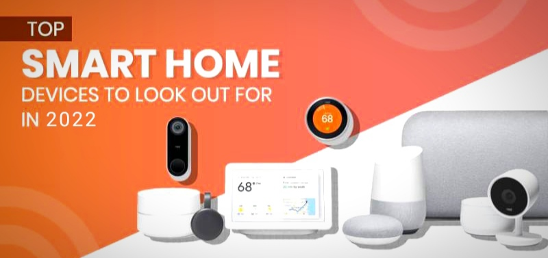
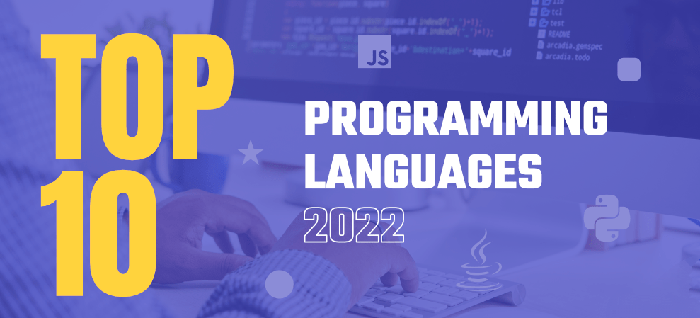
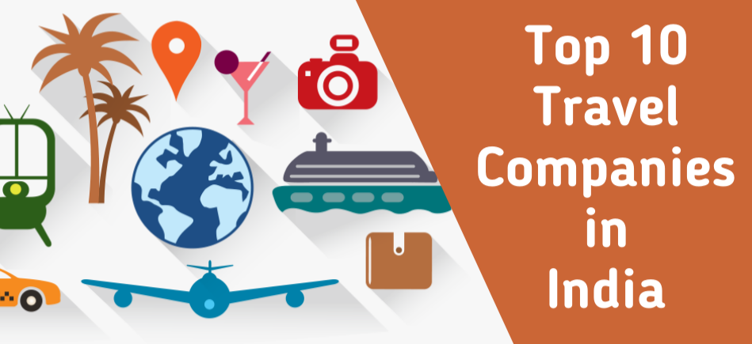

𝐓𝐎𝐏 𝟏𝟎 𝐀𝐈-𝐏𝐎𝐖𝐄𝐑𝐄𝐃 𝐓𝐄𝐂𝐇𝐍𝐎𝐋𝐎𝐆𝐈𝐄𝐒 𝐈𝐍 𝐔𝐒𝐄 𝐈𝐍 𝟐𝟎𝟐𝟐
𝚃𝚑𝚎 𝚜𝚖𝚊𝚛𝚝 𝚌𝚘𝚗𝚗𝚎𝚌𝚝𝚎𝚍 𝚑𝚘𝚖𝚎 𝚒𝚜 𝚝𝚑𝚎 𝚗𝚎𝚡𝚝 𝚜𝚝𝚎𝚙 𝚒𝚗 𝚘𝚞𝚛 𝚑𝚘𝚞𝚜𝚎𝚜’ 𝚐𝚛𝚘𝚠𝚝𝚑 𝚊𝚗𝚍 𝚑𝚘𝚠 𝚠𝚎 𝚒𝚗𝚝𝚎𝚛𝚊𝚌𝚝 𝚠𝚒𝚝𝚑 𝚝𝚑𝚎𝚖. 𝚃𝚑𝚎 𝚟𝚊𝚛𝚒𝚘𝚞𝚜 𝚜𝚢𝚜𝚝𝚎𝚖𝚜 𝚒𝚗 𝚘𝚞𝚛 𝚑𝚘𝚞𝚜𝚎𝚜 𝚊𝚛𝚎 𝚍𝚎𝚟𝚎𝚕𝚘𝚙𝚒𝚗𝚐 𝚊𝚜 𝙰𝙸 𝚝𝚎𝚌𝚑𝚗𝚘𝚕𝚘𝚐𝚢 𝚒𝚖𝚙𝚛𝚘𝚟𝚎𝚜, 𝚖𝚞𝚌𝚑 𝚊𝚜 𝚕𝚒𝚐𝚑𝚝𝚒𝚗𝚐 𝚑𝚊𝚜 𝚙𝚛𝚘𝚐𝚛𝚎𝚜𝚜𝚎𝚍 𝚏𝚛𝚘𝚖 𝚌𝚊𝚗𝚍𝚕𝚎𝚜 𝚝𝚘 𝚐𝚊𝚜 𝚝𝚘 𝚎𝚕𝚎𝚌𝚝𝚛𝚒𝚌𝚒𝚝𝚢. 𝚃𝚑𝚎 𝚜𝚖𝚊𝚛𝚝 𝚑𝚘𝚖𝚎 𝚒𝚜 𝚛𝚊𝚙𝚒𝚍𝚕𝚢 𝚎𝚡𝚙𝚊𝚗𝚍𝚒𝚗𝚐. 𝚆𝚑𝚒𝚕𝚎 𝚊𝚕𝚕 𝚘𝚏 𝚝𝚑𝚎𝚜𝚎 𝚗𝚎𝚠 𝚜𝚖𝚊𝚛𝚝 𝚑𝚘𝚖𝚎 𝚝𝚎𝚌𝚑𝚗𝚘𝚕𝚘𝚐𝚒𝚎𝚜 𝚖𝚊𝚢 𝚊𝚙𝚙𝚎𝚊𝚛 𝚒𝚗𝚝𝚒𝚖𝚒𝚍𝚊𝚝𝚒𝚗𝚐 𝚊𝚗𝚍 𝚍𝚒𝚏𝚏𝚒𝚌𝚞𝚕𝚝 𝚊𝚝 𝚏𝚒𝚛𝚜𝚝, 𝚝𝚑𝚎 𝚒𝚗𝚝𝚛𝚘𝚍𝚞𝚌𝚝𝚒𝚘𝚗 𝚘𝚏 𝚊𝚛𝚝𝚒𝚏𝚒𝚌𝚒𝚊𝚕 𝚒𝚗𝚝𝚎𝚕𝚕𝚒𝚐𝚎𝚗𝚌𝚎 𝚊𝚜𝚜𝚒𝚜𝚝𝚊𝚗𝚝𝚜 𝚊𝚗𝚍 𝚟𝚘𝚒𝚌𝚎 𝚌𝚘𝚗𝚝𝚛𝚘𝚕 𝚑𝚊𝚜 𝚖𝚊𝚍𝚎 𝚒𝚝 𝚖𝚞𝚌𝚑 𝚎𝚊𝚜𝚒𝚎𝚛 𝚝𝚘 𝚊𝚌𝚌𝚎𝚙𝚝. 𝙷𝚎𝚛𝚎 𝚒𝚜 𝚊 𝚕𝚒𝚜𝚝 𝚘𝚏 𝚝𝚑𝚎 𝚝𝚘𝚙 𝟷𝟶 𝙰𝙸-𝚙𝚘𝚠𝚎𝚛𝚎𝚍 𝚜𝚖𝚊𝚛𝚝 𝚑𝚘𝚖𝚎 𝚝𝚎𝚌𝚑𝚗𝚘𝚕𝚘𝚐𝚒𝚎𝚜 𝚏𝚘𝚛 𝟸𝟶𝟸𝟸.
𝟏) 𝐆𝐨𝐨𝐠𝐥𝐞 𝐍𝐞𝐬𝐭 𝐖𝐢𝐅𝐢 -
𝙰 𝚖𝚎𝚜𝚑 𝚆𝚒-𝙵𝚒 𝚛𝚘𝚞𝚝𝚎𝚛 𝚠𝚒𝚕𝚕 𝚖𝚊𝚔𝚎 𝚝𝚑𝚒𝚗𝚐𝚜 𝚎𝚊𝚜𝚒𝚎𝚛 𝚒𝚏 𝚢𝚘𝚞 𝚠𝚊𝚗𝚝 𝚝𝚘 𝚑𝚊𝚟𝚎 𝚊 𝚜𝚖𝚊𝚛𝚝 𝚑𝚘𝚖𝚎 𝚘𝚛 𝚎𝚟𝚎𝚗 𝚒𝚏 𝚢𝚘𝚞 𝚕𝚘𝚘𝚔 𝚝𝚘 𝚞𝚜𝚎 𝚢𝚘𝚞𝚛 𝚜𝚖𝚊𝚛𝚝𝚙𝚑𝚘𝚗𝚎 𝚒𝚗 𝚎𝚟𝚎𝚛𝚢 𝚛𝚘𝚘𝚖 𝚘𝚏 𝚢𝚘𝚞𝚛 𝚑𝚘𝚞𝚜𝚎. 𝙰 𝚖𝚎𝚜𝚑 𝚆𝚒-𝙵𝚒 𝚛𝚘𝚞𝚝𝚎𝚛 𝚌𝚘𝚖𝚙𝚛𝚒𝚜𝚎𝚜 𝚘𝚗𝚎 𝚘𝚛 𝚖𝚘𝚛𝚎 ‘𝚑𝚞𝚋𝚜’ 𝚝𝚑𝚊𝚝 𝚢𝚘𝚞 𝚙𝚕𝚞𝚐 𝚒𝚗 𝚊𝚛𝚘𝚞𝚗𝚍 𝚝𝚑𝚎 𝚑𝚘𝚞𝚜𝚎 𝚝𝚘 𝚎𝚕𝚒𝚖𝚒𝚗𝚊𝚝𝚎 𝚍𝚎𝚊𝚍 𝚣𝚘𝚗𝚎𝚜 𝚊𝚗𝚍 𝚝𝚛𝚊𝚗𝚜𝚖𝚒𝚝 𝚆𝚒-𝙵𝚒 𝚜𝚒𝚐𝚗𝚊𝚕𝚜 𝚎𝚚𝚞𝚊𝚕𝚕𝚢 𝚝𝚑𝚛𝚘𝚞𝚐𝚑𝚘𝚞𝚝 𝚢𝚘𝚞𝚛 𝚑𝚘𝚖𝚎, 𝚛𝚎𝚐𝚊𝚛𝚍𝚕𝚎𝚜𝚜 𝚘𝚏 𝚝𝚑𝚒𝚌𝚔 𝚠𝚊𝚕𝚕𝚜 𝚘𝚛 𝚊𝚠𝚔𝚠𝚊𝚛𝚍 𝚕𝚊𝚢𝚘𝚞𝚝𝚜.

𝙶𝚘𝚘𝚐𝚕𝚎’𝚜 𝙽𝚎𝚜𝚝 𝚆𝚒-𝙵𝚒 𝚒𝚜 𝚊 𝚐𝚛𝚎𝚊𝚝 𝚊𝚍𝚍𝚒𝚝𝚒𝚘𝚗 𝚝𝚘 𝚊𝚗𝚢 𝚜𝚖𝚊𝚛𝚝 𝚑𝚘𝚖𝚎. 𝚈𝚘𝚞 𝚌𝚊𝚗 𝚌𝚘𝚗𝚝𝚛𝚘𝚕 𝚎𝚟𝚎𝚛𝚢𝚝𝚑𝚒𝚗𝚐 𝚏𝚛𝚘𝚖 𝚢𝚘𝚞𝚛 𝚜𝚖𝚊𝚛𝚝𝚙𝚑𝚘𝚗𝚎 𝚞𝚜𝚒𝚗𝚐 𝙶𝚘𝚘𝚐𝚕𝚎’𝚜 𝙷𝚘𝚖𝚎 𝚊𝚙𝚙, 𝚊𝚗𝚍 𝚝𝚑𝚎𝚛𝚎 𝚊𝚛𝚎 𝚊𝚕𝚜𝚘 𝚋𝚞𝚒𝚕𝚝-𝚒𝚗 𝚙𝚊𝚛𝚎𝚗𝚝𝚊𝚕 𝚌𝚘𝚗𝚝𝚛𝚘𝚕𝚜 𝚝𝚑𝚊𝚝 𝚊𝚕𝚕𝚘𝚠 𝚢𝚘𝚞 𝚝𝚘 𝚝𝚞𝚛𝚗 𝚘𝚏𝚏 𝚊𝚌𝚌𝚎𝚜𝚜 𝚝𝚘 𝚢𝚘𝚞𝚛 𝚔𝚒𝚍𝚜’ 𝚐𝚊𝚍𝚐𝚎𝚝𝚜 𝚠𝚒𝚝𝚑 𝚓𝚞𝚜𝚝 𝚊 𝚙𝚑𝚛𝚊𝚜𝚎, 𝚠𝚑𝚒𝚌𝚑 𝚒𝚜 𝚐𝚛𝚎𝚊𝚝 𝚏𝚘𝚛 𝚐𝚎𝚝𝚝𝚒𝚗𝚐 𝚎𝚟𝚎𝚛𝚢𝚘𝚗𝚎 𝚝𝚘 𝚝𝚑𝚎 𝚍𝚒𝚗𝚗𝚎𝚛 𝚝𝚊𝚋𝚕𝚎 𝚘𝚗 𝚝𝚒𝚖𝚎. 𝚃𝚑𝚒𝚜 𝚒𝚜 𝚘𝚗𝚎 𝚘𝚏 𝚝𝚑𝚎 𝚋𝚎𝚜𝚝 𝚜𝚖𝚊𝚛𝚝 𝚑𝚘𝚖𝚎 𝚍𝚎𝚟𝚒𝚌𝚎𝚜. 𝙸𝚝 𝚠𝚘𝚛𝚔𝚜 𝚘𝚗 𝚜𝚖𝚊𝚛𝚝 𝚑𝚘𝚖𝚎 𝚝𝚎𝚌𝚑𝚗𝚘𝚕𝚘𝚐𝚒𝚎𝚜 𝚕𝚒𝚔𝚎 𝚊𝚛𝚝𝚒𝚏𝚒𝚌𝚒𝚊𝚕 𝚒𝚗𝚝𝚎𝚕𝚕𝚒𝚐𝚎𝚗𝚌𝚎.
𝟐) 𝐀𝐛𝐨𝐝𝐞 𝐒𝐦𝐚𝐫𝐭 𝐒𝐞𝐜𝐮𝐫𝐢𝐭𝐲 𝐊𝐢𝐭 -
𝙾𝚗𝚎 𝚘𝚏 𝚝𝚑𝚎 𝚋𝚎𝚜𝚝 𝚜𝚖𝚊𝚛𝚝 𝚑𝚘𝚖𝚎 𝚍𝚎𝚟𝚒𝚌𝚎𝚜 𝚒𝚜 𝙰𝚍𝚘𝚋𝚎 𝚂𝚖𝚊𝚛𝚝 𝚂𝚎𝚌𝚞𝚛𝚒𝚝𝚢 𝙺𝚒𝚝. 𝙰𝚋𝚘𝚍𝚎 𝚒𝚜 𝚊 𝚛𝚎𝚕𝚒𝚊𝚋𝚕𝚎 𝙳𝙸𝚈 𝚑𝚘𝚖𝚎 𝚜𝚎𝚌𝚞𝚛𝚒𝚝𝚢 𝚜𝚢𝚜𝚝𝚎𝚖 𝚠𝚒𝚝𝚑 𝚕𝚒𝚖𝚒𝚝𝚕𝚎𝚜𝚜 𝚜𝚖𝚊𝚛𝚝 𝚑𝚘𝚖𝚎 𝚏𝚎𝚊𝚝𝚞𝚛𝚎𝚜.

𝙸𝚝 𝚌𝚊𝚗 𝚋𝚎 𝚞𝚜𝚎𝚍 𝚠𝚒𝚝𝚑 𝙰𝚕𝚎𝚡𝚊, 𝙶𝚘𝚘𝚐𝚕𝚎 𝙰𝚜𝚜𝚒𝚜𝚝𝚊𝚗𝚝, 𝚊𝚗𝚍 𝙷𝚘𝚖𝚎𝙺𝚒𝚝, 𝚊𝚗𝚍 𝚒𝚝 𝚌𝚊𝚗 𝚊𝚕𝚜𝚘 𝚋𝚎 𝚞𝚜𝚎𝚍 𝚊𝚜 𝚊 𝚑𝚞𝚋 𝚏𝚘𝚛 𝚉-𝚆𝚊𝚟𝚎 𝚊𝚗𝚍 𝚉𝚒𝚐𝚋𝚎𝚎 𝚍𝚎𝚟𝚒𝚌𝚎𝚜, 𝚠𝚑𝚒𝚌𝚑 𝚊𝚛𝚎 𝚊 𝚌𝚘𝚞𝚙𝚕𝚎 𝚘𝚏 𝚠𝚒𝚛𝚎𝚕𝚎𝚜𝚜 𝚑𝚘𝚖𝚎 𝚊𝚞𝚝𝚘𝚖𝚊𝚝𝚒𝚘𝚗 𝚙𝚛𝚘𝚝𝚘𝚌𝚘𝚕𝚜 𝚝𝚑𝚊𝚝 𝚐𝚛𝚎𝚊𝚝𝚕𝚢 𝚎𝚡𝚙𝚊𝚗𝚍 𝚝𝚑𝚎 𝚜𝚘𝚛𝚝𝚜 𝚘𝚏 𝚐𝚊𝚍𝚐𝚎𝚝𝚜.
𝟑) 𝐀𝐫𝐥𝐨 𝐕𝐢𝐝𝐞𝐨 𝐃𝐨𝐨𝐫𝐛𝐞𝐥𝐥 -
𝙰𝚗𝚘𝚝𝚑𝚎𝚛 𝚜𝚖𝚊𝚛𝚝 𝚑𝚘𝚖𝚎 𝚍𝚎𝚟𝚒𝚌𝚎 𝚒𝚜 𝙰𝚛𝚕𝚘 𝚅𝚒𝚍𝚎𝚘 𝙳𝚘𝚘𝚛𝚋𝚎𝚕𝚕. 𝚂𝚖𝚊𝚛𝚝 𝚍𝚘𝚘𝚛𝚋𝚎𝚕𝚕𝚜 𝚍𝚎𝚝𝚎𝚌𝚝 𝚟𝚒𝚜𝚒𝚝𝚘𝚛𝚜 𝚊𝚗𝚍 𝚊𝚌𝚝𝚒𝚟𝚒𝚝𝚒𝚎𝚜 𝚘𝚗 𝚢𝚘𝚞𝚛 𝚍𝚘𝚘𝚛𝚠𝚊𝚢 𝚞𝚜𝚒𝚗𝚐 𝚊 𝚌𝚊𝚖𝚎𝚛𝚊, 𝚜𝚙𝚎𝚊𝚔𝚎𝚛, 𝚖𝚒𝚌𝚛𝚘𝚙𝚑𝚘𝚗𝚎, 𝚖𝚘𝚝𝚒𝚘𝚗 𝚜𝚎𝚗𝚜𝚘𝚛, 𝚊𝚗𝚍 𝚊𝚗 𝚒𝚗𝚝𝚎𝚛𝚗𝚎𝚝 𝚌𝚘𝚗𝚗𝚎𝚌𝚝𝚒𝚘𝚗. 𝚈𝚘𝚞 𝚌𝚊𝚗 𝚝𝚑𝚎𝚗 𝚟𝚒𝚎𝚠 𝚊𝚗𝚍 𝚑𝚎𝚊𝚛 𝚕𝚒𝚟𝚎 𝚟𝚒𝚍𝚎𝚘 𝚝𝚑𝚛𝚘𝚞𝚐𝚑 𝚢𝚘𝚞𝚛 𝚜𝚖𝚊𝚛𝚝𝚙𝚑𝚘𝚗𝚎 𝚊𝚗𝚍 𝚜𝚙𝚎𝚊𝚔 𝚠𝚒𝚝𝚑 𝚠𝚑𝚘𝚎𝚟𝚎𝚛 𝚒𝚜 𝚝𝚑𝚎𝚛𝚎, 𝚘𝚛 𝚢𝚘𝚞 𝚌𝚊𝚗 𝚕𝚎𝚝 𝚝𝚑𝚎 𝚌𝚊𝚖𝚎𝚛𝚊 𝚛𝚎𝚌𝚘𝚛𝚍 𝚊 𝚖𝚎𝚜𝚜𝚊𝚐𝚎 𝚏𝚘𝚛 𝚢𝚘𝚞. 𝙸𝚝’𝚜 𝚕𝚒𝚔𝚎 𝚟𝚘𝚒𝚌𝚎𝚖𝚊𝚒𝚕 𝚏𝚘𝚛 𝚢𝚘𝚞𝚛 𝚏𝚛𝚘𝚗𝚝 𝚍𝚘𝚘𝚛.

𝚃𝚑𝚎 𝙰𝚛𝚕𝚘 𝚅𝚒𝚍𝚎𝚘 𝙳𝚘𝚘𝚛𝚋𝚎𝚕𝚕 𝚒𝚜 𝚊 𝚠𝚘𝚗𝚍𝚎𝚛𝚏𝚞𝚕 𝚘𝚙𝚝𝚒𝚘𝚗 𝚜𝚒𝚗𝚌𝚎 𝚒𝚝 𝚘𝚏𝚏𝚎𝚛𝚜 𝚊 𝚕𝚘𝚝 𝚘𝚏 𝚑𝚒𝚐𝚑-𝚎𝚗𝚍 𝚌𝚊𝚙𝚊𝚋𝚒𝚕𝚒𝚝𝚒𝚎𝚜. 𝙸𝚝 𝚌𝚊𝚗 𝚍𝚒𝚜𝚝𝚒𝚗𝚐𝚞𝚒𝚜𝚑 𝚋𝚎𝚝𝚠𝚎𝚎𝚗 𝚑𝚞𝚖𝚊𝚗𝚜, 𝚊𝚗𝚒𝚖𝚊𝚕𝚜, 𝚌𝚊𝚛𝚜, 𝚊𝚗𝚍 𝚙𝚊𝚛𝚌𝚎𝚕𝚜 𝚊𝚝 𝚊 𝚕𝚘𝚠 𝚙𝚛𝚒𝚌𝚎.
𝟒) 𝐍𝐞𝐬𝐭 𝐏𝐫𝐨𝐭𝐞𝐜𝐭 𝐒𝐦𝐨𝐤𝐞 & 𝐂𝐎 -
𝙰 𝚜𝚖𝚊𝚛𝚝 𝚜𝚖𝚘𝚔𝚎 𝚊𝚕𝚊𝚛𝚖 𝚒𝚜 𝚘𝚗𝚎 𝚘𝚏 𝚝𝚑𝚎 𝚖𝚘𝚜𝚝 𝚋𝚊𝚜𝚒𝚌 𝚢𝚎𝚝 𝚎𝚏𝚏𝚎𝚌𝚝𝚒𝚟𝚎 𝚑𝚘𝚖𝚎 𝚊𝚞𝚝𝚘𝚖𝚊𝚝𝚒𝚘𝚗 𝚍𝚎𝚟𝚒𝚌𝚎𝚜. 𝙸𝚝’𝚜 𝚗𝚘𝚝 𝚝𝚑𝚎 𝚖𝚘𝚜𝚝 𝚒𝚗𝚝𝚎𝚛𝚎𝚜𝚝𝚒𝚗𝚐 𝚍𝚎𝚟𝚒𝚌𝚎, 𝚋𝚞𝚝 𝚒𝚝’𝚜 𝚘𝚗𝚎 𝚘𝚏 𝚝𝚑𝚎 𝚖𝚘𝚜𝚝 𝚌𝚛𝚞𝚌𝚒𝚊𝚕 𝚋𝚎𝚌𝚊𝚞𝚜𝚎 𝚒𝚝 𝚖𝚊𝚢 𝚜𝚊𝚟𝚎 𝚢𝚘𝚞𝚛 𝚑𝚘𝚞𝚜𝚎.

𝚃𝚑𝚎 𝙽𝚎𝚜𝚝 𝙿𝚛𝚘𝚝𝚎𝚌𝚝 𝚂𝚖𝚊𝚛𝚝 𝚂𝚖𝚘𝚔𝚎 & 𝙲𝙾 𝙰𝚕𝚊𝚛𝚖 𝚒𝚜 𝚝𝚑𝚎 𝚏𝚒𝚗𝚎𝚜𝚝 𝚐𝚊𝚍𝚐𝚎𝚝 𝚜𝚒𝚗𝚌𝚎 𝚒𝚝 𝚒𝚜 𝚙𝚊𝚌𝚔𝚎𝚍 𝚠𝚒𝚝𝚑 𝚜𝚎𝚗𝚜𝚘𝚛𝚜 𝚊𝚗𝚍 𝚜𝚖𝚊𝚛𝚝𝚜. 𝙸𝚗 𝚝𝚑𝚎 𝚎𝚟𝚎𝚗𝚝 𝚘𝚏 𝚊 𝚝𝚛𝚞𝚎 𝚎𝚖𝚎𝚛𝚐𝚎𝚗𝚌𝚢, 𝚒𝚝 𝚌𝚊𝚗 𝚠𝚒𝚛𝚎𝚕𝚎𝚜𝚜𝚕𝚢 𝚕𝚒𝚗𝚔 𝚝𝚘 𝚘𝚝𝚑𝚎𝚛 𝚊𝚕𝚊𝚛𝚖𝚜, 𝚝𝚛𝚒𝚐𝚐𝚎𝚛𝚒𝚗𝚐 𝚝𝚑𝚎𝚖 𝚊𝚕𝚕 𝚝𝚘 𝚎𝚗𝚜𝚞𝚛𝚎 𝚢𝚘𝚞 𝚠𝚊𝚔𝚎 𝚞𝚙. 𝙸𝚝 𝚊𝚕𝚜𝚘 𝚙𝚛𝚘𝚟𝚒𝚍𝚎𝚜 𝚊 𝚟𝚘𝚒𝚌𝚎 𝚊𝚕𝚎𝚛𝚝 𝚒𝚗𝚍𝚒𝚌𝚊𝚝𝚒𝚗𝚐 𝚠𝚑𝚒𝚌𝚑 𝚛𝚘𝚘𝚖 𝚝𝚑𝚎 𝚍𝚊𝚗𝚐𝚎𝚛 𝚒𝚜 𝚒𝚗, 𝚒𝚕𝚕𝚞𝚖𝚒𝚗𝚊𝚝𝚎𝚜 𝚢𝚘𝚞𝚛 𝚠𝚊𝚢 𝚠𝚒𝚝𝚑 𝚊 𝚛𝚎𝚍 𝙻𝙴𝙳 (𝚠𝚑𝚒𝚌𝚑 𝚒𝚜 𝚎𝚊𝚜𝚒𝚎𝚛 𝚝𝚘 𝚜𝚎𝚎 𝚝𝚑𝚛𝚘𝚞𝚐𝚑 𝚜𝚖𝚘𝚔𝚎), 𝚊𝚗𝚍 𝚜𝚎𝚗𝚍𝚜 𝚢𝚘𝚞 𝚊𝚗 𝚊𝚕𝚊𝚛𝚖 𝚝𝚘 𝚢𝚘𝚞𝚛 𝚙𝚑𝚘𝚗𝚎. 𝚃𝚑𝚒𝚜 𝚠𝚘𝚛𝚔𝚜 𝚘𝚗 𝚜𝚖𝚊𝚛𝚝 𝚑𝚘𝚖𝚎 𝚝𝚎𝚌𝚑𝚗𝚘𝚕𝚘𝚐𝚒𝚎𝚜 𝚕𝚒𝚔𝚎 𝚊𝚛𝚝𝚒𝚏𝚒𝚌𝚒𝚊𝚕 𝚒𝚗𝚝𝚎𝚕𝚕𝚒𝚐𝚎𝚗𝚌𝚎.
𝟓) 𝐏𝐡𝐢𝐥𝐢𝐩𝐬 𝐇𝐮𝐞, 𝐋𝐮𝐭𝐫𝐨𝐧 𝐂𝐚𝐬𝐞𝐭𝐚 -
𝚃𝚑𝚎 𝚙𝚘𝚜𝚝𝚎𝚛 𝚌𝚑𝚒𝚕𝚍 𝚘𝚏 𝚝𝚑𝚎 𝚜𝚖𝚊𝚛𝚝 𝚑𝚘𝚖𝚎, 𝚜𝚖𝚊𝚛𝚝 𝚕𝚒𝚐𝚑𝚝𝚒𝚗𝚐 𝚒𝚜 𝚜𝚒𝚖𝚙𝚕𝚎, 𝚎𝚗𝚓𝚘𝚢𝚊𝚋𝚕𝚎, 𝚊𝚗𝚍 𝚋𝚎𝚗𝚎𝚏𝚒𝚌𝚒𝚊𝚕. 𝙻𝚞𝚝𝚛𝚘𝚗 𝙲𝚊𝚜𝚎𝚝𝚊’𝚜 𝚛𝚊𝚗𝚐𝚎 𝚒𝚜 𝚊𝚏𝚏𝚘𝚛𝚍𝚊𝚋𝚕𝚎, 𝚠𝚘𝚛𝚔𝚜 𝚠𝚒𝚝𝚑 𝚊𝚕𝚖𝚘𝚜𝚝 𝚊𝚗𝚢 𝚠𝚒𝚛𝚒𝚗𝚐 𝚜𝚎𝚝𝚞𝚙, 𝚊𝚗𝚍 𝚒𝚜 𝙰𝚕𝚎𝚡𝚊, 𝙶𝚘𝚘𝚐𝚕𝚎, 𝚊𝚗𝚍 𝙷𝚘𝚖𝚎𝙺𝚒𝚝 𝚌𝚘𝚖𝚙𝚊𝚝𝚒𝚋𝚕𝚎. 𝚁𝚊𝚝𝚑𝚎𝚛 𝚝𝚑𝚊𝚗 𝚛𝚎𝚕𝚢𝚒𝚗𝚐 𝚘𝚗 𝚢𝚘𝚞𝚛 𝚑𝚘𝚖𝚎 𝚆𝚒-𝙵𝚒, 𝚒𝚝 𝚞𝚜𝚎𝚜 𝙻𝚞𝚝𝚛𝚘𝚗’𝚜 𝚙𝚛𝚘𝚙𝚛𝚒𝚎𝚝𝚊𝚛𝚢 𝚠𝚒𝚛𝚎𝚕𝚎𝚜𝚜 𝚙𝚛𝚘𝚝𝚘𝚌𝚘𝚕 (𝚝𝚑𝚛𝚘𝚞𝚐𝚑 𝚊 𝚑𝚞𝚋).

𝙿𝚑𝚒𝚕𝚒𝚙𝚜𝙷𝚞𝚎’𝚜 𝚜𝚖𝚊𝚛𝚝 𝚋𝚞𝚕𝚋 𝚜𝚎𝚛𝚒𝚎𝚜 𝚒𝚜 𝚗𝚘𝚝 𝚘𝚗𝚕𝚢 𝚝𝚑𝚎 𝚜𝚖𝚊𝚛𝚝𝚎𝚜𝚝 𝚊𝚗𝚍 𝚖𝚘𝚜𝚝 𝚍𝚎𝚙𝚎𝚗𝚍𝚊𝚋𝚕𝚎 𝚊𝚕𝚝𝚎𝚛𝚗𝚊𝚝𝚒𝚟𝚎, 𝚋𝚞𝚝 𝚒𝚝’𝚜 𝚊𝚕𝚜𝚘 𝚝𝚑𝚎 𝚖𝚘𝚜𝚝 𝚒𝚗𝚎𝚡𝚙𝚎𝚗𝚜𝚒𝚟𝚎. 𝚃𝚑𝚒𝚜 𝚜𝚞𝚙𝚎𝚛𝚋, 𝚎𝚡𝚝𝚎𝚗𝚜𝚒𝚋𝚕𝚎 𝚜𝚖𝚊𝚛𝚝 𝚕𝚒𝚐𝚑𝚝𝚒𝚗𝚐 𝚜𝚢𝚜𝚝𝚎𝚖 𝚌𝚘𝚗𝚝𝚊𝚒𝚗𝚜 𝚋𝚞𝚕𝚋𝚜 𝚊𝚗𝚍 𝚏𝚒𝚡𝚝𝚞𝚛𝚎𝚜 𝚏𝚘𝚛 𝚎𝚟𝚎𝚛𝚢 𝚜𝚒𝚝𝚞𝚊𝚝𝚒𝚘𝚗, 𝚊𝚜 𝚠𝚎𝚕𝚕 𝚊𝚜 𝚠𝚒𝚛𝚎𝚕𝚎𝚜𝚜 𝚜𝚠𝚒𝚝𝚌𝚑𝚎𝚜 𝚏𝚘𝚛 𝚙𝚑𝚢𝚜𝚒𝚌𝚊𝚕 𝚌𝚘𝚗𝚝𝚛𝚘𝚕 𝚠𝚑𝚎𝚗 𝚗𝚎𝚎𝚍𝚎𝚍 𝚊𝚗𝚍 𝚘𝚞𝚝𝚜𝚝𝚊𝚗𝚍𝚒𝚗𝚐 𝚖𝚘𝚝𝚒𝚘𝚗 𝚜𝚎𝚗𝚜𝚘𝚛𝚜 𝚝𝚑𝚊𝚝 𝚊𝚞𝚝𝚘𝚖𝚊𝚝𝚒𝚌𝚊𝚕𝚕𝚢 𝚌𝚑𝚊𝚗𝚐𝚎 𝚕𝚒𝚐𝚑𝚝𝚒𝚗𝚐 𝚋𝚊𝚜𝚎𝚍 𝚘𝚗 𝚝𝚒𝚖𝚎 𝚘𝚏 𝚍𝚊𝚢. 𝚃𝚑𝚒𝚜 𝚋𝚎𝚕𝚘𝚗𝚐𝚜 𝚝𝚘 𝚊𝚗𝚘𝚝𝚑𝚎𝚛 𝚜𝚖𝚊𝚛𝚝 𝚑𝚘𝚖𝚎 𝚍𝚎𝚟𝚒𝚌𝚎.
𝟔) 𝐓𝐏 𝐋𝐢𝐧𝐤 𝐊𝐚𝐬𝐚 𝐌𝐢𝐧𝐢, 𝐄𝐯𝐞 𝐄𝐧𝐞𝐫𝐠𝐲 -
𝚃𝚑𝚒𝚜 𝚜𝚞𝚙𝚎𝚛𝚋, 𝚎𝚡𝚝𝚎𝚗𝚜𝚒𝚋𝚕𝚎 𝚜𝚖𝚊𝚛𝚝 𝚕𝚒𝚐𝚑𝚝𝚒𝚗𝚐 𝚜𝚢𝚜𝚝𝚎𝚖 𝚌𝚘𝚗𝚝𝚊𝚒𝚗𝚜 𝚋𝚞𝚕𝚋𝚜 𝚊𝚗𝚍 𝚏𝚒𝚡𝚝𝚞𝚛𝚎𝚜 𝚏𝚘𝚛 𝚎𝚟𝚎𝚛𝚢 𝚜𝚒𝚝𝚞𝚊𝚝𝚒𝚘𝚗, 𝚊𝚜 𝚠𝚎𝚕𝚕 𝚊𝚜 𝚠𝚒𝚛𝚎𝚕𝚎𝚜𝚜 𝚜𝚠𝚒𝚝𝚌𝚑𝚎𝚜 𝚏𝚘𝚛 𝚙𝚑𝚢𝚜𝚒𝚌𝚊𝚕 𝚌𝚘𝚗𝚝𝚛𝚘𝚕 𝚠𝚑𝚎𝚗 𝚗𝚎𝚎𝚍𝚎𝚍 𝚊𝚗𝚍 𝚘𝚞𝚝𝚜𝚝𝚊𝚗𝚍𝚒𝚗𝚐 𝚖𝚘𝚝𝚒𝚘𝚗 𝚜𝚎𝚗𝚜𝚘𝚛𝚜 𝚝𝚑𝚊𝚝 𝚊𝚞𝚝𝚘𝚖𝚊𝚝𝚒𝚌𝚊𝚕𝚕𝚢 𝚌𝚑𝚊𝚗𝚐𝚎 𝚕𝚒𝚐𝚑𝚝𝚒𝚗𝚐 𝚋𝚊𝚜𝚎𝚍 𝚘𝚗 𝚝𝚒𝚖𝚎 𝚘𝚏 𝚍𝚊𝚢.

𝙸𝚏 𝚢𝚘𝚞 𝚍𝚘𝚗’𝚝 𝚠𝚊𝚗𝚝 𝚝𝚘 𝚞𝚝𝚒𝚕𝚒𝚣𝚎 𝚊 𝚜𝚎𝚙𝚊𝚛𝚊𝚝𝚎 𝚜𝚖𝚊𝚛𝚝 𝚑𝚘𝚖𝚎 𝚜𝚢𝚜𝚝𝚎𝚖 𝚝𝚘 𝚖𝚊𝚗𝚊𝚐𝚎 𝚝𝚑𝚎𝚖, 𝚝𝚑𝚎 𝚃𝙿-𝙻𝚒𝚗𝚔 𝙺𝚊𝚜𝚊 𝚜𝚎𝚛𝚒𝚎𝚜 𝚘𝚏 𝚜𝚖𝚊𝚛𝚝 𝚙𝚕𝚞𝚐𝚜 𝚊𝚛𝚎 𝚊 𝚐𝚘𝚘𝚍 𝚘𝚙𝚝𝚒𝚘𝚗 𝚋𝚎𝚌𝚊𝚞𝚜𝚎 𝚝𝚑𝚎𝚢’𝚛𝚎 𝚜𝚒𝚖𝚙𝚕𝚎 𝚝𝚘 𝚞𝚜𝚎, 𝚒𝚗𝚝𝚎𝚐𝚛𝚊𝚝𝚎 𝚠𝚒𝚝𝚑 𝙶𝚘𝚘𝚐𝚕𝚎 𝚊𝚗𝚍 𝙰𝚕𝚎𝚡𝚊, 𝚊𝚗𝚍 𝚑𝚊𝚟𝚎 𝚊 𝚋𝚎𝚊𝚞𝚝𝚒𝚏𝚞𝚕 𝚊𝚙𝚙. 𝙸𝚏 𝚢𝚘𝚞’𝚛𝚎 𝚜𝚎𝚊𝚛𝚌𝚑𝚒𝚗𝚐 𝚏𝚘𝚛 𝚊 𝚜𝚘𝚕𝚒𝚍 𝙷𝚘𝚖𝚎𝙺𝚒𝚝 𝚜𝚖𝚊𝚛𝚝 𝚙𝚕𝚞𝚐, 𝚝𝚑𝚎 𝙴𝚟𝚎 𝙴𝚗𝚎𝚛𝚐𝚢 𝚒𝚜 𝚊 𝚐𝚛𝚎𝚊𝚝, 𝚒𝚏 𝚜𝚕𝚒𝚐𝚑𝚝𝚕𝚢 𝚌𝚘𝚜𝚝𝚕𝚢, 𝚘𝚙𝚝𝚒𝚘𝚗 𝚝𝚑𝚊𝚝 𝚖𝚘𝚗𝚒𝚝𝚘𝚛𝚜 𝚎𝚗𝚎𝚛𝚐𝚢 𝚞𝚜𝚊𝚐𝚎 𝚊𝚗𝚍 𝚙𝚛𝚘𝚟𝚒𝚍𝚎𝚜 𝚊 𝚝𝚑𝚘𝚛𝚘𝚞𝚐𝚑 𝚋𝚛𝚎𝚊𝚔𝚍𝚘𝚠𝚗 𝚘𝚏 𝚌𝚘𝚗𝚜𝚞𝚖𝚙𝚝𝚒𝚘𝚗 𝚘𝚟𝚎𝚛 𝚝𝚒𝚖𝚎.
𝟕) 𝐒𝐨𝐧𝐨𝐬 𝐎𝐧𝐞 -
𝚃𝚑𝚎 𝚂𝚘𝚗𝚘𝚜 𝙾𝚗𝚎 𝚒𝚜 𝚘𝚗𝚎 𝚘𝚏 𝚝𝚑𝚎 𝚏𝚒𝚗𝚎𝚜𝚝 𝚜𝚖𝚊𝚛𝚝 𝚜𝚙𝚎𝚊𝚔𝚎𝚛𝚜 𝚜𝚒𝚗𝚌𝚎 𝚒𝚝 𝚠𝚘𝚛𝚔𝚜 𝚠𝚒𝚝𝚑 𝚋𝚘𝚝𝚑 𝙰𝚖𝚊𝚣𝚘𝚗’𝚜 𝙰𝚕𝚎𝚡𝚊 𝚊𝚗𝚍 𝙶𝚘𝚘𝚐𝚕𝚎’𝚜 𝙶𝚘𝚘𝚐𝚕𝚎 𝙰𝚜𝚜𝚒𝚜𝚝𝚊𝚗𝚝, 𝚊𝚕𝚕𝚘𝚠𝚒𝚗𝚐 𝚢𝚘𝚞 𝚝𝚘 𝚌𝚑𝚘𝚘𝚜𝚎 𝚋𝚎𝚝𝚠𝚎𝚎𝚗 𝚝𝚑𝚎 𝚝𝚠𝚘 𝚟𝚘𝚒𝚌𝚎 𝚊𝚜𝚜𝚒𝚜𝚝𝚊𝚗𝚝𝚜.

𝙸𝚝 𝚊𝚕𝚜𝚘 𝚑𝚊𝚜 𝚐𝚛𝚎𝚊𝚝 𝚜𝚘𝚞𝚗𝚍 𝚊𝚗𝚍 𝚌𝚘𝚗𝚗𝚎𝚌𝚝𝚜 𝚝𝚘 𝚂𝚘𝚗𝚘𝚜’ 𝚕𝚊𝚛𝚐𝚎𝚛 𝚠𝚘𝚛𝚕𝚍 𝚘𝚏 𝚠𝚒𝚛𝚎𝚕𝚎𝚜𝚜 𝚖𝚞𝚜𝚒𝚌. 𝙸𝚝 𝚊𝚕𝚜𝚘 𝚠𝚘𝚛𝚔𝚜 𝚠𝚒𝚝𝚑 𝙰𝚙𝚙𝚕𝚎’𝚜 𝙰𝚒𝚛𝙿𝚕𝚊𝚢 𝚜𝚢𝚜𝚝𝚎𝚖, 𝚠𝚑𝚒𝚌𝚑 𝚊𝚕𝚕𝚘𝚠𝚜 𝚢𝚘𝚞 𝚝𝚘 𝚙𝚕𝚊𝚢 𝚖𝚞𝚜𝚒𝚌 𝚍𝚒𝚛𝚎𝚌𝚝𝚕𝚢 𝚏𝚛𝚘𝚖 𝚢𝚘𝚞𝚛 𝚒𝙿𝚑𝚘𝚗𝚎 𝚘𝚛 𝚒𝙿𝚊𝚍 𝚊𝚗𝚍 𝚐𝚛𝚘𝚞𝚙 𝚠𝚒𝚝𝚑 𝚘𝚝𝚑𝚎𝚛 𝙰𝚒𝚛𝙿𝚕𝚊𝚢 𝟸-𝚌𝚘𝚖𝚙𝚊𝚝𝚒𝚋𝚕𝚎 𝚜𝚙𝚎𝚊𝚔𝚎𝚛𝚜. 𝚃𝚑𝚒𝚜 𝚒𝚜 𝚌𝚘𝚗𝚜𝚒𝚍𝚎𝚛𝚎𝚍 𝚊𝚗𝚘𝚝𝚑𝚎𝚛 𝚜𝚖𝚊𝚛𝚝 𝚑𝚘𝚖𝚎 𝚍𝚎𝚟𝚒𝚌𝚎.
𝟖) 𝐆𝐨𝐨𝐠𝐥𝐞 𝐍𝐞𝐬𝐭 𝐇𝐮𝐛 𝐌𝐚𝐱 -
𝚃𝚑𝚎 𝙽𝚎𝚜𝚝 𝙷𝚞𝚋 𝙼𝚊𝚡 𝚒𝚜 𝚊 𝚜𝚖𝚊𝚛𝚝 𝚍𝚒𝚜𝚙𝚕𝚊𝚢 𝚋𝚎𝚌𝚊𝚞𝚜𝚎 𝚒𝚝 𝚌𝚛𝚊𝚖𝚜 𝚊 𝚕𝚘𝚝 𝚘𝚏 𝚏𝚞𝚗𝚌𝚝𝚒𝚘𝚗𝚊𝚕𝚒𝚝𝚢 𝚘𝚗𝚝𝚘 𝚊 𝟷𝟶-𝚒𝚗𝚌𝚑 𝚜𝚌𝚛𝚎𝚎𝚗.

𝙸𝚝 𝚌𝚊𝚗 𝚛𝚎𝚌𝚘𝚐𝚗𝚒𝚣𝚎 𝚠𝚑𝚘 𝚒𝚜 𝚞𝚜𝚒𝚗𝚐 𝚒𝚝 𝚊𝚗𝚍 𝚘𝚏𝚏𝚎𝚛 𝚞𝚙 𝚌𝚞𝚜𝚝𝚘𝚖𝚒𝚣𝚎𝚍 𝚒𝚗𝚏𝚘𝚛𝚖𝚊𝚝𝚒𝚘𝚗 𝚠𝚒𝚝𝚑𝚘𝚞𝚝 𝚢𝚘𝚞 𝚑𝚊𝚟𝚒𝚗𝚐 𝚝𝚘 𝚜𝚊𝚢 𝚊𝚗𝚢𝚝𝚑𝚒𝚗𝚐, 𝚝𝚑𝚊𝚗𝚔𝚜 𝚝𝚘 𝚊 𝚋𝚞𝚒𝚕𝚝-𝚒𝚗 𝚌𝚊𝚖𝚎𝚛𝚊 𝚝𝚑𝚊𝚝 𝚊𝚕𝚜𝚘 𝚜𝚎𝚛𝚟𝚎𝚜 𝚊𝚜 𝚊 𝚜𝚎𝚌𝚞𝚛𝚒𝚝𝚢 𝚌𝚊𝚖𝚎𝚛𝚊 — 𝚋𝚛𝚒𝚗𝚐𝚒𝚗𝚐 𝚝𝚑𝚎 𝚜𝚖𝚊𝚛𝚝 𝚜𝚙𝚎𝚊𝚔𝚎𝚛 𝚝𝚘 𝚝𝚑𝚎 𝚗𝚎𝚡𝚝 𝚕𝚎𝚟𝚎𝚕. 𝚃𝚑𝚒𝚜 𝚊𝚕𝚜𝚘 𝚞𝚜𝚎𝚜 𝚜𝚖𝚊𝚛𝚝 𝚑𝚘𝚖𝚎 𝚝𝚎𝚌𝚑𝚗𝚘𝚕𝚘𝚐𝚒𝚎𝚜 𝚕𝚒𝚔𝚎 𝚊𝚛𝚝𝚒𝚏𝚒𝚌𝚒𝚊𝚕 𝚒𝚗𝚝𝚎𝚕𝚕𝚒𝚐𝚎𝚗𝚌𝚎.
𝟗) 𝐍𝐞𝐬𝐭 𝐋𝐞𝐚𝐫𝐧𝐢𝐧𝐠 𝐓𝐡𝐞𝐫𝐦𝐨𝐬𝐭𝐚𝐭 -
𝚃𝚑𝚎 𝙽𝚎𝚜𝚝 𝙻𝚎𝚊𝚛𝚗𝚒𝚗𝚐 𝚝𝚑𝚎𝚛𝚖𝚘𝚜𝚝𝚊𝚝 𝚌𝚊𝚗 𝚗𝚘𝚠 𝚛𝚎𝚐𝚞𝚕𝚊𝚝𝚎 𝚢𝚘𝚞𝚛 𝚑𝚘𝚝 𝚠𝚊𝚝𝚎𝚛 – 𝚊 𝙷𝚎𝚊𝚝 𝙻𝚒𝚗𝚔 𝚒𝚜 𝚒𝚗𝚌𝚕𝚞𝚍𝚎𝚍 𝚝𝚑𝚊𝚝 𝚌𝚘𝚗𝚗𝚎𝚌𝚝𝚜 𝚝𝚘 𝚢𝚘𝚞𝚛 𝚋𝚘𝚒𝚕𝚎𝚛 𝚊𝚗𝚍 𝚌𝚘𝚖𝚖𝚞𝚗𝚒𝚌𝚊𝚝𝚎𝚜 𝚠𝚒𝚝𝚑 𝚝𝚑𝚎 𝚝𝚑𝚎𝚛𝚖𝚘𝚜𝚝𝚊𝚝 𝚝𝚘 𝚜𝚠𝚒𝚝𝚌𝚑 𝚘𝚗 𝚊𝚗𝚍 𝚘𝚏𝚏, 𝚊𝚍𝚓𝚞𝚜𝚝 𝚝𝚑𝚎 𝚑𝚎𝚊𝚝, 𝚊𝚗𝚍 𝚎𝚜𝚝𝚊𝚋𝚕𝚒𝚜𝚑 𝚊𝚗 𝚒𝚗𝚝𝚎𝚕𝚕𝚒𝚐𝚎𝚗𝚝 𝚜𝚌𝚑𝚎𝚍𝚞𝚕𝚎 𝚏𝚘𝚛 𝚢𝚘𝚞𝚛 𝚋𝚘𝚒𝚕𝚎𝚛, 𝚓𝚞𝚜𝚝 𝚊𝚜 𝚒𝚝 𝚍𝚘𝚎𝚜 𝚏𝚘𝚛 𝚢𝚘𝚞𝚛 𝚑𝚎𝚊𝚝.

𝚃𝚑𝚒𝚜 𝚕𝚎𝚊𝚛𝚗𝚒𝚗𝚐 𝚏𝚞𝚗𝚌𝚝𝚒𝚘𝚗 𝚒𝚜 𝚠𝚑𝚊𝚝 𝚜𝚎𝚝𝚜 𝚝𝚑𝚎 𝙽𝚎𝚜𝚝 𝚊𝚙𝚊𝚛𝚝 𝚏𝚛𝚘𝚖 𝚝𝚑𝚎 𝚌𝚘𝚖𝚙𝚎𝚝𝚒𝚝𝚒𝚘𝚗; 𝚒𝚝 𝚎𝚖𝚙𝚕𝚘𝚢𝚜 𝚊𝚛𝚝𝚒𝚏𝚒𝚌𝚒𝚊𝚕 𝚒𝚗𝚝𝚎𝚕𝚕𝚒𝚐𝚎𝚗𝚌𝚎 𝚝𝚘 𝚛𝚎𝚌𝚘𝚐𝚗𝚒𝚣𝚎 𝚢𝚘𝚞𝚛 𝚑𝚊𝚋𝚒𝚝𝚜, 𝚋𝚊𝚜𝚎𝚍 𝚘𝚗 𝚢𝚘𝚞𝚛 𝚖𝚘𝚍𝚒𝚏𝚒𝚌𝚊𝚝𝚒𝚘𝚗𝚜, 𝚙𝚛𝚎𝚜𝚎𝚗𝚌𝚎, 𝚊𝚗𝚍 𝚘𝚝𝚑𝚎𝚛 𝚍𝚊𝚝𝚊, 𝚝𝚘 𝚍𝚎𝚟𝚎𝚕𝚘𝚙 𝚊𝚗𝚍 𝚖𝚘𝚍𝚒𝚏𝚢 𝚊 𝚜𝚌𝚑𝚎𝚍𝚞𝚕𝚎 𝚝𝚑𝚊𝚝 𝚔𝚎𝚎𝚙𝚜 𝚢𝚘𝚞 𝚌𝚘𝚖𝚏𝚘𝚛𝚝𝚊𝚋𝚕𝚎 𝚠𝚑𝚒𝚕𝚎 𝚊𝚕𝚜𝚘 𝚌𝚘𝚗𝚜𝚎𝚛𝚟𝚒𝚗𝚐 𝚎𝚗𝚎𝚛𝚐𝚢.
𝟏𝟎) 𝐑𝐨𝐨𝐦𝐛𝐚 𝐢𝟑+ / 𝐢𝟕+ 𝐌𝐨𝐝𝐞𝐥 -
𝚃𝚑𝚎 𝚁𝚘𝚘𝚖𝚋𝚊 𝚒𝟹+ 𝚒𝚜 𝚊𝚗 𝚊𝚏𝚏𝚘𝚛𝚍𝚊𝚋𝚕𝚎 𝚟𝚊𝚌𝚞𝚞𝚖 𝚌𝚕𝚎𝚊𝚗𝚎𝚛 𝚠𝚒𝚝𝚑 𝚜𝚎𝚕𝚏-𝚎𝚖𝚙𝚝𝚢𝚒𝚗𝚐 𝚏𝚎𝚊𝚝𝚞𝚛𝚎𝚜. 𝚆𝚑𝚎𝚗 𝚒𝚝𝚜 𝚘𝚗𝚋𝚘𝚊𝚛𝚍 𝚋𝚒𝚗 𝚒𝚜 𝚏𝚞𝚕𝚕, 𝚒𝚝 𝚛𝚎𝚝𝚞𝚛𝚗𝚜 𝚝𝚘 𝚒𝚝𝚜 𝚎𝚡𝚝𝚎𝚛𝚗𝚊𝚕 𝚋𝚒𝚗 𝚝𝚘 𝚜𝚞𝚌𝚔 𝚘𝚞𝚝 𝚊𝚕𝚕 𝚝𝚑𝚎 𝚝𝚛𝚊𝚜𝚑. 𝚃𝚑𝚒𝚜 𝚒𝚖𝚙𝚕𝚒𝚎𝚜 𝚝𝚑𝚊𝚝 𝚒𝚗𝚜𝚝𝚎𝚊𝚍 𝚘𝚏 𝚝𝚠𝚒𝚌𝚎 𝚊 𝚠𝚎𝚎𝚔, 𝚕𝚒𝚔𝚎 𝚠𝚒𝚝𝚑 𝚗𝚘𝚗-𝚎𝚖𝚙𝚝𝚢𝚒𝚗𝚐 𝚋𝚘𝚝𝚜, 𝚢𝚘𝚞 𝚘𝚗𝚕𝚢 𝚑𝚊𝚟𝚎 𝚝𝚘 𝚎𝚖𝚙𝚝𝚢 𝚒𝚝 𝚎𝚟𝚎𝚛𝚢 𝚝𝚑𝚛𝚎𝚎 𝚖𝚘𝚗𝚝𝚑𝚜.

𝚃𝚑𝚎 𝚒𝟽+ 𝚖𝚘𝚍𝚎𝚕 𝚒𝚜 𝚊𝚕𝚜𝚘 𝚊 𝚐𝚛𝚎𝚊𝚝 𝚌𝚑𝚘𝚒𝚌𝚎. 𝚃𝚑𝚎 𝚒𝟽+ 𝚒𝚜 𝚖𝚘𝚛𝚎 𝚌𝚘𝚜𝚝𝚕𝚢 𝚝𝚑𝚊𝚗 𝚝𝚑𝚎 𝚒𝟽 𝚜𝚒𝚗𝚌𝚎 𝚒𝚝 𝚌𝚊𝚗 𝚙𝚎𝚛𝚏𝚘𝚛𝚖 𝚌𝚕𝚎𝚟𝚎𝚛 𝚝𝚑𝚒𝚗𝚐𝚜 𝚕𝚒𝚔𝚎 𝚓𝚞𝚜𝚝 𝚌𝚕𝚎𝚊𝚗 𝚝𝚑𝚎 𝚔𝚒𝚝𝚌𝚑𝚎𝚗 𝚘𝚛 𝚘𝚗𝚕𝚢 𝚟𝚊𝚌𝚞𝚞𝚖 𝚝𝚑𝚎 𝚕𝚒𝚟𝚒𝚗𝚐 𝚛𝚘𝚘𝚖 𝚞𝚜𝚒𝚗𝚐 𝚜𝚖𝚊𝚛𝚝 𝚖𝚊𝚙𝚜 𝚝𝚑𝚊𝚝 𝚢𝚘𝚞 𝚌𝚘𝚗𝚝𝚛𝚘𝚕 𝚝𝚑𝚛𝚘𝚞𝚐𝚑 𝚝𝚑𝚎 𝚜𝚖𝚊𝚛𝚝𝚙𝚑𝚘𝚗𝚎. 𝚆𝚒𝚝𝚑 𝙰𝚕𝚎𝚡𝚊 𝚘𝚛 𝙶𝚘𝚘𝚐𝚕𝚎, 𝚢𝚘𝚞 𝚌𝚊𝚗 𝚒𝚗𝚜𝚝𝚛𝚞𝚌𝚝 𝚝𝚑𝚎 𝚋𝚘𝚝𝚜 𝚝𝚘 𝚌𝚕𝚎𝚊𝚗, 𝚙𝚊𝚞𝚜𝚎, 𝚘𝚛 𝚐𝚘 𝚑𝚘𝚖𝚎 𝚠𝚒𝚝𝚑 𝙰𝚕𝚎𝚡𝚊 𝚘𝚛 𝙶𝚘𝚘𝚐𝚕𝚎, 𝚢𝚘𝚞 𝚌𝚊𝚗 𝚒𝚗𝚜𝚝𝚛𝚞𝚌𝚝 𝚝𝚑𝚎 𝚋𝚘𝚝𝚜 𝚝𝚘 𝚌𝚕𝚎𝚊𝚗, 𝚙𝚊𝚞𝚜𝚎, 𝚘𝚛 𝚐𝚘 𝚑𝚘𝚖𝚎 𝚠𝚒𝚝𝚑 𝚘𝚗𝚕𝚢 𝚊 𝚏𝚎𝚠 𝚙𝚑𝚛𝚊𝚜𝚎𝚜. 𝚃𝚑𝚒𝚜 𝚒𝚜 𝚊𝚕𝚜𝚘 𝚘𝚗𝚎 𝚘𝚏 𝚝𝚑𝚎 𝚋𝚎𝚜𝚝 𝚜𝚖𝚊𝚛𝚝 𝚑𝚘𝚖𝚎 𝚍𝚎𝚟𝚒𝚌𝚎𝚜.
𝐈𝐧 𝐂𝐨𝐧𝐜𝐥𝐮𝐬𝐢𝐨𝐧.....
𝙰𝚛𝚝𝚒𝚏𝚒𝚌𝚒𝚊𝚕 𝚒𝚗𝚝𝚎𝚕𝚕𝚒𝚐𝚎𝚗𝚌𝚎 𝚒𝚜 𝚝𝚛𝚊𝚗𝚜𝚏𝚘𝚛𝚖𝚒𝚗𝚐 𝚘𝚞𝚛 𝚕𝚒𝚟𝚎𝚜 𝚍𝚞𝚎 𝚝𝚘 𝚒𝚝𝚜 𝚌𝚘𝚗𝚜𝚒𝚜𝚝𝚎𝚗𝚝 𝚝𝚛𝚎𝚗𝚍𝚜 𝚒𝚗 𝚝𝚑𝚎 𝚖𝚊𝚛𝚔𝚎𝚝. 𝚂𝚘𝚖𝚎 𝚝𝚛𝚎𝚗𝚍𝚜 𝚎𝚟𝚘𝚕𝚟𝚎 𝚝𝚑𝚛𝚘𝚞𝚐𝚑 𝚝𝚒𝚖𝚎, 𝚠𝚑𝚒𝚕𝚎 𝚘𝚝𝚑𝚎𝚛𝚜 𝚛𝚎𝚖𝚊𝚒𝚗 𝚒𝚗𝚗𝚘𝚟𝚊𝚝𝚒𝚟𝚎. 𝚃𝚑𝚎𝚜𝚎 𝚌𝚑𝚊𝚗𝚐𝚎𝚜 𝚊𝚛𝚎 𝚊 𝚙𝚊𝚛𝚝 𝚘𝚏 𝚘𝚞𝚛 𝚎𝚡𝚒𝚜𝚝𝚎𝚗𝚌𝚎, 𝚖𝚊𝚔𝚒𝚗𝚐 𝚕𝚒𝚏𝚎 𝚎𝚊𝚜𝚒𝚎𝚛 𝚏𝚘𝚛 𝚞𝚜 𝚊𝚗𝚍 𝚏𝚞𝚝𝚞𝚛𝚎 𝚐𝚎𝚗𝚎𝚛𝚊𝚝𝚒𝚘𝚗𝚜. 𝚆𝚑𝚎𝚗 𝚒𝚝 𝚌𝚘𝚖𝚎𝚜 𝚝𝚘 𝚝𝚑𝚎 𝚢𝚎𝚊𝚛 𝟸𝟶𝟸𝟸, 𝚒𝚝 𝚒𝚜 𝚊𝚙𝚙𝚊𝚛𝚎𝚗𝚝 𝚝𝚑𝚊𝚝 𝚠𝚎 𝚠𝚒𝚕𝚕 𝚛𝚎𝚚𝚞𝚒𝚛𝚎 𝚖𝚘𝚛𝚎 𝚊𝚛𝚝𝚒𝚏𝚒𝚌𝚒𝚊𝚕 𝚒𝚗𝚝𝚎𝚕𝚕𝚒𝚐𝚎𝚗𝚌𝚎-𝚋𝚊𝚜𝚎𝚍 𝚍𝚎𝚟𝚒𝚌𝚎𝚜 𝚝𝚘 𝚖𝚊𝚔𝚎 𝚘𝚞𝚛 𝚠𝚘𝚛𝚔 𝚖𝚘𝚛𝚎 𝚊𝚌𝚌𝚎𝚜𝚜𝚒𝚋𝚕𝚎 𝚊𝚗𝚍 𝚖𝚘𝚛𝚎 𝚎𝚏𝚏𝚒𝚌𝚒𝚎𝚗𝚝. 𝚃𝚑𝚎𝚛𝚎 𝚠𝚒𝚕𝚕 𝚋𝚎 𝚊 𝚜𝚞𝚛𝚐𝚎 𝚘𝚏 𝚗𝚎𝚠 𝚝𝚎𝚌𝚑𝚗𝚘𝚕𝚘𝚐𝚢 𝚒𝚗 𝚝𝚑𝚎 𝚖𝚊𝚛𝚔𝚎𝚝 𝚒𝚗 𝚝𝚑𝚎 𝚞𝚙𝚌𝚘𝚖𝚒𝚗𝚐 𝚢𝚎𝚊𝚛𝚜, 𝚠𝚑𝚒𝚌𝚑 𝚠𝚒𝚕𝚕 𝚑𝚊𝚟𝚎 𝚊 𝚕𝚘𝚗𝚐-𝚝𝚎𝚛𝚖 𝚒𝚖𝚙𝚊𝚌𝚝 𝚘𝚗 𝚋𝚘𝚝𝚑 𝚒𝚗𝚍𝚒𝚟𝚒𝚍𝚞𝚊𝚕𝚜 𝚊𝚗𝚍 𝚎𝚗𝚝𝚎𝚛𝚙𝚛𝚒𝚜𝚎𝚜. 𝙰𝙸 𝚒𝚜 𝚝𝚑𝚎 𝚏𝚞𝚝𝚞𝚛𝚎, 𝚊𝚗𝚍 𝚋𝚞𝚜𝚒𝚗𝚎𝚜𝚜𝚎𝚜 𝚠𝚑𝚘 𝚒𝚗𝚟𝚎𝚜𝚝 𝚒𝚗 𝚝𝚛𝚊𝚒𝚗𝚒𝚗𝚐 𝚏𝚘𝚛 𝚗𝚎𝚠 𝚝𝚎𝚌𝚑𝚗𝚘𝚕𝚘𝚐𝚒𝚎𝚜 𝚠𝚒𝚕𝚕 𝚝𝚑𝚛𝚒𝚟𝚎, 𝚐𝚊𝚒𝚗 𝚊 𝚐𝚛𝚎𝚊𝚝𝚎𝚛 𝚛𝚎𝚝𝚞𝚛𝚗 𝚘𝚗 𝚒𝚗𝚟𝚎𝚜𝚝𝚖𝚎𝚗𝚝, 𝚊𝚗𝚍 𝚌𝚛𝚎𝚊𝚝𝚎 𝚗𝚎𝚠 𝚘𝚙𝚙𝚘𝚛𝚝𝚞𝚗𝚒𝚝𝚒𝚎𝚜 𝚒𝚗 𝚜𝚘𝚌𝚒𝚎𝚝𝚢.
𝐈𝐍𝐓𝐑𝐎𝐃𝐔𝐂𝐓𝐈𝐎𝐍 𝐓𝐎 𝐂𝐋𝐎𝐔𝐃 𝐂𝐎𝐌𝐏𝐔𝐓𝐈𝐍𝐆
𝚆𝚎 𝚝𝚊𝚔𝚎 𝚊 𝚍𝚎𝚎𝚙 𝚍𝚒𝚟𝚎 𝚒𝚗𝚝𝚘 𝚝𝚑𝚎 𝚠𝚘𝚛𝚕𝚍 𝚘𝚏 𝚌𝚕𝚘𝚞𝚍 𝚌𝚘𝚖𝚙𝚞𝚝𝚒𝚗𝚐, 𝚝𝚑𝙰𝚗 𝚒𝚗𝚝𝚛𝚘𝚍𝚞𝚌𝚝𝚒𝚘𝚗 𝚝𝚘 𝚌𝚕𝚘𝚞𝚍 𝚌𝚘𝚖𝚙𝚞𝚝𝚒𝚗𝚐𝚎 𝚍𝚒𝚏𝚏𝚎𝚛𝚎𝚗𝚝 𝚝𝚢𝚙𝚎𝚜 𝚘𝚏 𝚜𝚎𝚛𝚟𝚒𝚌𝚎𝚜 𝚒𝚝 𝚙𝚛𝚘𝚟𝚒𝚍𝚎𝚜, 𝚊𝚗𝚍 𝚒𝚝𝚜 𝚊𝚙𝚙𝚕𝚒𝚌𝚊𝚝𝚒𝚘𝚗𝚜 𝚒𝚗 𝚝𝚑𝚎 𝚠𝚘𝚛𝚕𝚍.

𝚃𝚎𝚌𝚑𝚗𝚘𝚕𝚘𝚐𝚢 𝚒𝚜 𝚐𝚛𝚘𝚠𝚒𝚗𝚐 𝚊𝚗𝚍 𝚌𝚑𝚊𝚗𝚐𝚒𝚗𝚐, 𝚊𝚗𝚍 𝚒𝚝 𝚌𝚊𝚗 𝚋𝚎 𝚝𝚛𝚒𝚌𝚔𝚢 𝚝𝚘 𝚔𝚎𝚎𝚙 𝚘𝚗 𝚝𝚘𝚙 𝚘𝚏 𝚊𝚕𝚕 𝚝𝚑𝚎 𝚗𝚎𝚠 𝚍𝚎𝚟𝚎𝚕𝚘𝚙𝚖𝚎𝚗𝚝𝚜 𝚊𝚗𝚍 𝚌𝚛𝚎𝚊𝚝𝚒𝚘𝚗𝚜. 𝙰𝚗𝚍 𝚠𝚑𝚒𝚕𝚎 𝚌𝚕𝚘𝚞𝚍 𝚌𝚘𝚖𝚙𝚞𝚝𝚒𝚗𝚐 𝚒𝚜𝚗’𝚝 𝚗𝚎𝚌𝚎𝚜𝚜𝚊𝚛𝚒𝚕𝚢 𝚊 𝚗𝚎𝚠 𝚍𝚎𝚟𝚎𝚕𝚘𝚙𝚖𝚎𝚗𝚝, 𝚒𝚝’𝚜 𝚘𝚗𝚕𝚢 𝚋𝚎𝚎𝚗 𝚒𝚗 𝚛𝚎𝚌𝚎𝚗𝚝 𝚢𝚎𝚊𝚛𝚜 𝚝𝚑𝚊𝚝 𝚌𝚘𝚖𝚙𝚊𝚗𝚒𝚎𝚜 𝚑𝚊𝚟𝚎 𝚜𝚝𝚊𝚛𝚝𝚎𝚍 𝚝𝚘 𝚝𝚞𝚛𝚗 𝚝𝚘 𝚒𝚝.
𝚃𝚑𝚎 𝚒𝚖𝚙𝚊𝚌𝚝 𝚝𝚑𝚊𝚝 𝚌𝚕𝚘𝚞𝚍 𝚌𝚘𝚖𝚙𝚞𝚝𝚒𝚗𝚐 𝚑𝚊𝚜 𝚑𝚊𝚍 𝚘𝚗 𝚝𝚑𝚎 𝚍𝚊𝚝𝚊 𝚒𝚗𝚍𝚞𝚜𝚝𝚛𝚢 𝚊𝚗𝚍 𝚎𝚗𝚍-𝚞𝚜𝚎𝚛𝚜 𝚒𝚗 𝚐𝚎𝚗𝚎𝚛𝚊𝚕 𝚒𝚜 𝚍𝚒𝚏𝚏𝚒𝚌𝚞𝚕𝚝 𝚝𝚘 𝚘𝚟𝚎𝚛𝚜𝚝𝚊𝚝𝚎. 𝙼𝚊𝚗𝚢 𝚊𝚜𝚙𝚎𝚌𝚝𝚜 𝚘𝚏 𝚎𝚟𝚎𝚛𝚢𝚍𝚊𝚢 𝚕𝚒𝚏𝚎 𝚑𝚊𝚟𝚎 𝚋𝚎𝚎𝚗 𝚊𝚕𝚝𝚎𝚛𝚎𝚍 𝚊𝚗𝚍 𝚝𝚛𝚊𝚗𝚜𝚏𝚘𝚛𝚖𝚎𝚍 𝚋𝚢 𝚝𝚑𝚒𝚜 𝚒𝚗𝚗𝚘𝚟𝚊𝚝𝚒𝚟𝚎 𝚍𝚒𝚐𝚒𝚝𝚊𝚕 𝚜𝚘𝚕𝚞𝚝𝚒𝚘𝚗.
𝙵𝚛𝚘𝚖 𝚜𝚝𝚊𝚛𝚝-𝚞𝚙𝚜 𝚝𝚑𝚛𝚘𝚞𝚐𝚑 𝚝𝚘 𝚎𝚜𝚝𝚊𝚋𝚕𝚒𝚜𝚑𝚎𝚍 𝚋𝚞𝚜𝚒𝚗𝚎𝚜𝚜𝚎𝚜, 𝚌𝚕𝚘𝚞𝚍 𝚌𝚘𝚖𝚙𝚞𝚝𝚒𝚗𝚐 𝚑𝚊𝚜 𝚑𝚎𝚕𝚙𝚎𝚍 𝚘𝚙𝚝𝚒𝚖𝚒𝚜𝚎 𝚌𝚘𝚜𝚝𝚜 𝚊𝚗𝚍 𝚒𝚗𝚌𝚛𝚎𝚊𝚜𝚎 𝚘𝚏𝚏𝚎𝚛𝚒𝚗𝚐𝚜. 𝚃𝚑𝚒𝚜 𝚒𝚜 𝚋𝚎𝚌𝚊𝚞𝚜𝚎 𝚝𝚑𝚎𝚢 𝚗𝚘 𝚕𝚘𝚗𝚐𝚎𝚛 𝚛𝚎𝚚𝚞𝚒𝚛𝚎 𝚎𝚡𝚝𝚛𝚊 𝚑𝚊𝚛𝚍𝚠𝚊𝚛𝚎 𝚊𝚗𝚍 𝚜𝚘𝚏𝚝𝚠𝚊𝚛𝚎.
𝙱𝚞𝚝 𝚏𝚘𝚛 𝚖𝚊𝚗𝚢, 𝚝𝚑𝚎 𝚠𝚘𝚛𝚕𝚍 𝚘𝚏 𝚌𝚕𝚘𝚞𝚍 𝚌𝚘𝚖𝚙𝚞𝚝𝚒𝚗𝚐 𝚛𝚎𝚖𝚊𝚒𝚗𝚜 𝚘𝚋𝚕𝚒𝚚𝚞𝚎 𝚊𝚗𝚍 𝚌𝚘𝚗𝚏𝚞𝚜𝚒𝚗𝚐. 𝚆𝚎’𝚕𝚕 𝚐𝚒𝚟𝚎 𝚢𝚘𝚞 𝚊𝚗 𝚘𝚟𝚎𝚛𝚟𝚒𝚎𝚠 𝚘𝚏 𝚌𝚕𝚘𝚞𝚍 𝚌𝚘𝚖𝚙𝚞𝚝𝚒𝚗𝚐, 𝚊𝚗𝚍 𝚜𝚑𝚘𝚠 𝚑𝚘𝚠 𝚒𝚝 𝚌𝚊𝚗 𝚋𝚎 𝚞𝚜𝚎𝚍 𝚒𝚗 𝚊𝚕𝚕 𝚜𝚘𝚛𝚝𝚜 𝚘𝚏 𝚍𝚘𝚖𝚊𝚒𝚗𝚜, 𝚏𝚛𝚘𝚖 𝚍𝚎𝚟𝚎𝚕𝚘𝚙𝚎𝚛𝚜 𝚝𝚑𝚛𝚘𝚞𝚐𝚑 𝚝𝚘 𝚝𝚑𝚎 𝚠𝚘𝚛𝚕𝚍 𝚘𝚏 𝚌𝚢𝚋𝚎𝚛 𝚜𝚎𝚌𝚞𝚛𝚒𝚝𝚢.
𝐖𝐡𝐚𝐭 𝐢𝐬 𝐂𝐥𝐨𝐮𝐝 𝐂𝐨𝐦𝐩𝐮𝐭𝐢𝐧𝐠 ?
𝚃𝚘 𝚙𝚞𝚝 𝚒𝚝 𝚟𝚎𝚛𝚢 𝚜𝚒𝚖𝚙𝚕𝚢, 𝚌𝚕𝚘𝚞𝚍 𝚌𝚘𝚖𝚙𝚞𝚝𝚒𝚗𝚐 𝚒𝚜 𝚝𝚑𝚎 𝚍𝚎𝚕𝚒𝚟𝚎𝚛𝚢 𝚘𝚏 𝚌𝚘𝚖𝚙𝚞𝚝𝚒𝚗𝚐 𝚛𝚎𝚜𝚘𝚞𝚛𝚌𝚎𝚜 𝚊𝚜 𝚊 𝚜𝚎𝚛𝚟𝚒𝚌𝚎. 𝙼𝚘𝚟𝚒𝚗𝚐 𝚝𝚘 𝚝𝚑𝚎 𝚌𝚕𝚘𝚞𝚍 𝚋𝚊𝚜𝚒𝚌𝚊𝚕𝚕𝚢 𝚖𝚎𝚊𝚗𝚜 𝚝𝚑𝚊𝚝 𝚝𝚑𝚎 𝚛𝚎𝚜𝚘𝚞𝚛𝚌𝚎𝚜 𝚊𝚛𝚎 𝚘𝚠𝚗𝚎𝚍 𝚊𝚗𝚍 𝚖𝚊𝚗𝚊𝚐𝚎𝚍 𝚋𝚢 𝚊 𝚝𝚑𝚒𝚛𝚍-𝚙𝚊𝚛𝚝𝚢 𝚙𝚛𝚘𝚟𝚒𝚍𝚎𝚛, 𝚒𝚗𝚜𝚝𝚎𝚊𝚍 𝚘𝚏 𝚝𝚑𝚎 𝚎𝚗𝚍-𝚞𝚜𝚎𝚛.
𝚃𝚑𝚒𝚜 𝚖𝚎𝚊𝚗𝚜 𝚝𝚑𝚊𝚝 𝚢𝚘𝚞 𝚍𝚘𝚗’𝚝 𝚗𝚎𝚎𝚍 𝚝𝚘 𝚠𝚘𝚛𝚛𝚢 𝚊𝚋𝚘𝚞𝚝 𝚑𝚊𝚛𝚍 𝚍𝚛𝚒𝚟𝚎𝚜, 𝚖𝚊𝚒𝚗-𝚏𝚛𝚊𝚖𝚎𝚜, 𝚘𝚛 𝚠𝚑𝚎𝚛𝚎 𝚊𝚗𝚢 𝚘𝚏 𝚝𝚑𝚒𝚜 𝚑𝚊𝚛𝚍𝚠𝚊𝚛𝚎 𝚊𝚗𝚍 𝚜𝚘𝚏𝚝𝚠𝚊𝚛𝚎 𝚒𝚜 𝚕𝚘𝚌𝚊𝚝𝚎𝚍. 𝙰𝚜 𝚏𝚊𝚛 𝚊𝚜 𝚢𝚘𝚞, 𝚝𝚑𝚎 𝚞𝚜𝚎𝚛, 𝚒𝚜 𝚌𝚘𝚗𝚌𝚎𝚛𝚗𝚎𝚍, 𝚒𝚝’𝚜 𝚏𝚕𝚘𝚊𝚝𝚒𝚗𝚐 𝚞𝚙 𝚝𝚑𝚎𝚛𝚎 𝚒𝚗 𝚊 𝚖𝚎𝚝𝚊𝚙𝚑𝚘𝚛𝚒𝚌𝚊𝚕 ‘𝚌𝚕𝚘𝚞𝚍’ – 𝚠𝚑𝚒𝚌𝚑 𝚢𝚘𝚞’𝚛𝚎 𝚊𝚋𝚕𝚎 𝚝𝚘 𝚊𝚌𝚌𝚎𝚜𝚜 𝚟𝚒𝚊 𝚝𝚑𝚎 𝚒𝚗𝚝𝚎𝚛𝚗𝚎𝚝.
𝚃𝚑𝚒𝚜 𝚜𝚑𝚒𝚏𝚝 𝚏𝚛𝚘𝚖 𝚜𝚘𝚏𝚝𝚠𝚊𝚛𝚎 𝚊𝚗𝚍 𝚑𝚊𝚛𝚍𝚠𝚊𝚛𝚎 𝚝𝚑𝚊𝚝 𝚠𝚊𝚜 𝚘𝚗-𝚙𝚛𝚎𝚖𝚒𝚜𝚎𝚜 𝚝𝚘 𝚊 𝚗𝚎𝚝𝚠𝚘𝚛𝚔𝚎𝚍, 𝚛𝚎𝚖𝚘𝚝𝚎 𝚛𝚎𝚜𝚘𝚞𝚛𝚌𝚎 𝚑𝚊𝚜 𝚖𝚎𝚊𝚗𝚝 𝚝𝚑𝚊𝚝 𝚌𝚘𝚖𝚙𝚊𝚗𝚒𝚎𝚜 𝚗𝚘 𝚕𝚘𝚗𝚐𝚎𝚛 𝚑𝚊𝚟𝚎 𝚝𝚘 𝚠𝚘𝚛𝚛𝚢 𝚊𝚋𝚘𝚞𝚝 𝚒𝚗𝚟𝚎𝚜𝚝𝚒𝚗𝚐 𝚒𝚗 𝚕𝚊𝚋𝚘𝚞𝚛, 𝚎𝚡𝚙𝚎𝚛𝚝𝚒𝚜𝚎, 𝚘𝚛 𝚌𝚊𝚙𝚒𝚝𝚊𝚕 𝚏𝚘𝚛 𝚝𝚑𝚎 𝚖𝚊𝚒𝚗𝚝𝚎𝚗𝚊𝚗𝚌𝚎 𝚘𝚏 𝚝𝚑𝚎𝚜𝚎 𝚛𝚎𝚜𝚘𝚞𝚛𝚌𝚎𝚜. 𝙸𝚝 𝚑𝚊𝚜 𝚜𝚙𝚊𝚠𝚗𝚎𝚍 𝚊 𝚙𝚕𝚎𝚝𝚑𝚘𝚛𝚊 𝚘𝚏 𝚌𝚕𝚘𝚞𝚍 𝚌𝚘𝚖𝚙𝚞𝚝𝚒𝚗𝚐 𝚌𝚘𝚖𝚙𝚊𝚗𝚒𝚎𝚜, 𝚒𝚗𝚌𝚕𝚞𝚍𝚒𝚗𝚐 𝚔𝚎𝚢 𝚙𝚕𝚊𝚢𝚎𝚛𝚜 𝚕𝚒𝚔𝚎 𝙰𝚆𝚂 𝚊𝚗𝚍 𝙼𝚒𝚌𝚛𝚘𝚜𝚘𝚏𝚝 𝙰𝚣𝚞𝚛𝚎.
𝐓𝐲𝐩𝐞𝐬 𝐨𝐟 𝐂𝐥𝐨𝐮𝐝 𝐂𝐨𝐦𝐩𝐮𝐭𝐢𝐧𝐠 𝐒𝐞𝐫𝐯𝐢𝐜𝐞𝐬 -
𝙲𝚕𝚘𝚞𝚍 𝚌𝚘𝚖𝚙𝚞𝚝𝚒𝚗𝚐 𝚜𝚎𝚛𝚟𝚒𝚌𝚎𝚜 𝚊𝚛𝚎 𝚍𝚎𝚕𝚒𝚟𝚎𝚛𝚎𝚍 𝚒𝚗 𝚝𝚑𝚛𝚎𝚎 𝚖𝚊𝚒𝚗 𝚖𝚘𝚍𝚎𝚕𝚜, 𝚎𝚊𝚌𝚑 𝚘𝚏 𝚠𝚑𝚒𝚌𝚑 𝚘𝚏𝚏𝚎𝚛𝚜 𝚌𝚞𝚜𝚝𝚘𝚖𝚎𝚛𝚜 𝚍𝚒𝚏𝚏𝚎𝚛𝚎𝚗𝚝 𝚕𝚎𝚟𝚎𝚕𝚜 𝚘𝚏 𝚜𝚞𝚙𝚙𝚘𝚛𝚝 𝚊𝚗𝚍 𝚏𝚕𝚎𝚡𝚒𝚋𝚒𝚕𝚒𝚝𝚢. 𝚃𝚑𝚎𝚛𝚎’𝚜 𝚊𝚕𝚜𝚘 𝚜𝚘𝚖𝚎 𝚘𝚟𝚎𝚛𝚕𝚊𝚙 𝚋𝚎𝚝𝚠𝚎𝚎𝚗 𝚊𝚕𝚕 𝚝𝚑𝚛𝚎𝚎 𝚘𝚏 𝚝𝚑𝚎𝚖, 𝚜𝚘 𝚒𝚝 𝚌𝚊𝚗 𝚐𝚎𝚝 𝚊 𝚕𝚒𝚝𝚝𝚕𝚎 𝚌𝚘𝚗𝚏𝚞𝚜𝚒𝚗𝚐 𝚠𝚑𝚎𝚗 𝚝𝚛𝚢𝚒𝚗𝚐 𝚝𝚘 𝚐𝚎𝚝 𝚢𝚘𝚞𝚛 𝚑𝚎𝚊𝚍 𝚊𝚛𝚘𝚞𝚗𝚍 𝚠𝚑𝚊𝚝 𝚝𝚑𝚎𝚢 𝚊𝚕𝚕 𝚖𝚎𝚊𝚗.

𝚃𝚑𝚎𝚜𝚎 𝚜𝚎𝚛𝚟𝚒𝚌𝚎𝚜 𝚊𝚛𝚎 𝚘𝚌𝚌𝚊𝚜𝚒𝚘𝚗𝚊𝚕𝚕𝚢 𝚔𝚗𝚘𝚠𝚗 𝚊𝚜 𝚝𝚑𝚎 𝚌𝚕𝚘𝚞𝚍 𝚌𝚘𝚖𝚙𝚞𝚝𝚒𝚗𝚐 ‘𝚜𝚝𝚊𝚌𝚔’ 𝚊𝚜 𝚝𝚑𝚎𝚢 𝚊𝚛𝚎 𝚘𝚏𝚝𝚎𝚗 𝚋𝚞𝚒𝚕𝚝 𝚘𝚗 𝚝𝚘𝚙 𝚘𝚏 𝚘𝚗𝚎 𝚊𝚗𝚘𝚝𝚑𝚎𝚛. 𝙺𝚗𝚘𝚠𝚒𝚗𝚐 𝚠𝚑𝚊𝚝 𝚎𝚊𝚌𝚑 𝚘𝚗𝚎 𝚘𝚏 𝚝𝚑𝚎𝚖 𝚒𝚜, 𝚊𝚗𝚍 𝚑𝚘𝚠 𝚝𝚑𝚎𝚢 𝚠𝚘𝚛𝚔, 𝚠𝚒𝚕𝚕 𝚐𝚒𝚟𝚎 𝚢𝚘𝚞 𝚊 𝚌𝚕𝚎𝚊𝚛𝚎𝚛 𝚜𝚒𝚐𝚗 𝚊𝚋𝚘𝚞𝚝 𝚠𝚑𝚒𝚌𝚑 𝚜𝚎𝚛𝚟𝚒𝚌𝚎 𝚖𝚒𝚐𝚑𝚝 𝚋𝚎 𝚋𝚎𝚜𝚝 𝚜𝚞𝚒𝚝𝚎𝚍 𝚝𝚘 𝚢𝚘𝚞𝚛 𝚗𝚎𝚎𝚍𝚜 𝚊𝚗𝚍 𝚛𝚎𝚚𝚞𝚒𝚛𝚎𝚖𝚎𝚗𝚝𝚜.
𝐈𝐧𝐟𝐫𝐚𝐬𝐭𝐫𝐮𝐜𝐭𝐮𝐫𝐞 𝐚𝐬 𝐚 𝐒𝐞𝐫𝐯𝐢𝐜𝐞 (𝐈𝐚𝐚𝐒) -
𝙰𝚕𝚜𝚘 𝚔𝚗𝚘𝚠𝚗 𝚊𝚜 𝚞𝚝𝚒𝚕𝚒𝚝𝚢 𝚌𝚘𝚖𝚙𝚞𝚝𝚒𝚗𝚐, 𝚝𝚑𝚒𝚜 𝚒𝚜 𝚝𝚑𝚎 𝚘𝚗-𝚍𝚎𝚖𝚊𝚗𝚍 𝚍𝚎𝚕𝚒𝚟𝚎𝚛𝚢 𝚘𝚏 𝚌𝚘𝚖𝚙𝚞𝚝𝚒𝚗𝚐 𝚒𝚗𝚏𝚛𝚊𝚜𝚝𝚛𝚞𝚌𝚝𝚞𝚛𝚎. 𝚃𝚑𝚊𝚝 𝚖𝚎𝚊𝚗𝚜 𝚎𝚟𝚎𝚛𝚢𝚝𝚑𝚒𝚗𝚐 – 𝚏𝚛𝚘𝚖 𝚘𝚙𝚎𝚛𝚊𝚝𝚒𝚗𝚐 𝚜𝚢𝚜𝚝𝚎𝚖𝚜 𝚊𝚗𝚍 𝚜𝚝𝚘𝚛𝚊𝚐𝚎 𝚝𝚘 𝚗𝚎𝚝𝚠𝚘𝚛𝚔𝚒𝚗𝚐 𝚊𝚗𝚍 𝚌𝚘𝚖𝚙𝚘𝚗𝚎𝚗𝚝𝚜 – 𝚒𝚜 𝚘𝚞𝚝𝚜𝚘𝚞𝚛𝚌𝚎𝚍 𝚝𝚘 𝚊 𝚌𝚕𝚘𝚞𝚍 𝚌𝚘𝚖𝚙𝚞𝚝𝚒𝚗𝚐 𝚌𝚘𝚖𝚙𝚊𝚗𝚢 𝚘𝚛 𝚜𝚎𝚛𝚟𝚒𝚌𝚎. 𝙰𝚜 𝚝𝚑𝚎 𝚒𝚗𝚍𝚒𝚟𝚒𝚍𝚞𝚊𝚕 𝚘𝚛 𝚝𝚑𝚎 𝚌𝚘𝚖𝚙𝚊𝚗𝚢, 𝚢𝚘𝚞’𝚕𝚕 𝚋𝚞𝚢 𝚠𝚑𝚊𝚝 𝚢𝚘𝚞 𝚗𝚎𝚎𝚍 𝚘𝚗 𝚊 𝚙𝚊𝚢-𝚊𝚜-𝚢𝚘𝚞-𝚐𝚘 𝚖𝚘𝚍𝚎𝚕.

𝚃𝚑𝚎 𝚜𝚒𝚖𝚙𝚕𝚎𝚜𝚝 𝚎𝚡𝚊𝚖𝚙𝚕𝚎 𝚘𝚏 𝙸𝚊𝚊𝚂 𝚌𝚕𝚘𝚞𝚍 𝚌𝚘𝚖𝚙𝚞𝚝𝚒𝚗𝚐 𝚒𝚜 𝚘𝚛𝚍𝚒𝚗𝚊𝚛𝚢 𝚠𝚎𝚋-𝚑𝚘𝚜𝚝𝚒𝚗𝚐. 𝚃𝚑𝚒𝚜 𝚒𝚜 𝚠𝚑𝚎𝚛𝚎 𝚢𝚘𝚞 𝚙𝚊𝚢 𝚊 𝚖𝚘𝚗𝚝𝚑𝚕𝚢 𝚏𝚎𝚎 𝚘𝚛 𝚋𝚢 𝚖𝚎𝚐𝚊𝚋𝚢𝚝𝚎/𝚐𝚒𝚐𝚊𝚋𝚢𝚝𝚎 𝚝𝚘 𝚑𝚊𝚟𝚎 𝚊 𝚌𝚘𝚖𝚙𝚊𝚗𝚢 𝚑𝚘𝚜𝚝 𝚢𝚘𝚞𝚛 𝚏𝚒𝚕𝚎𝚜 𝚏𝚛𝚘𝚖 𝚝𝚑𝚎𝚒𝚛 𝚜𝚎𝚛𝚟𝚎𝚛𝚜. 𝙸𝚊𝚊𝚂 𝚒𝚜 𝚊𝚗 𝚎𝚡𝚝𝚛𝚎𝚖𝚎𝚕𝚢 𝚏𝚕𝚎𝚡𝚒𝚋𝚕𝚎 𝚘𝚙𝚝𝚒𝚘𝚗, 𝚊𝚜 𝚒𝚝 𝚙𝚎𝚛𝚖𝚒𝚝𝚜 𝚝𝚑𝚎 𝚞𝚜𝚎𝚛 𝚝𝚘 𝚌𝚞𝚜𝚝𝚘𝚖𝚒𝚜𝚎 𝚝𝚑𝚎 𝚒𝚗𝚏𝚛𝚊𝚜𝚝𝚛𝚞𝚌𝚝𝚞𝚛𝚎 𝚘𝚏 𝚝𝚑𝚎 𝚌𝚘𝚖𝚙𝚞𝚝𝚒𝚗𝚐 𝚎𝚗𝚟𝚒𝚛𝚘𝚗𝚖𝚎𝚗𝚝. 𝙵𝚛𝚘𝚖 𝚠𝚎𝚋-𝚑𝚘𝚜𝚝𝚒𝚗𝚐 𝚝𝚘 𝚋𝚒𝚐 𝚍𝚊𝚝𝚊 𝚊𝚗𝚊𝚕𝚢𝚝𝚒𝚌𝚜, 𝙸𝚊𝚊𝚂 𝚌𝚘𝚟𝚎𝚛𝚜 𝚝𝚑𝚎 𝚠𝚑𝚘𝚕𝚎 𝚜𝚙𝚎𝚌𝚝𝚛𝚞𝚖.
𝐒𝐨𝐟𝐭𝐰𝐚𝐫𝐞 𝐚𝐬 𝐚 𝐒𝐞𝐫𝐯𝐢𝐜𝐞 (𝐒𝐚𝐚𝐒) -
𝚃𝚑𝚒𝚜 𝚒𝚜 𝚠𝚑𝚎𝚗 𝚢𝚘𝚞 𝚞𝚜𝚎 𝚊 𝚌𝚘𝚖𝚙𝚕𝚎𝚝𝚎 𝚊𝚙𝚙𝚕𝚒𝚌𝚊𝚝𝚒𝚘𝚗 𝚘𝚗 𝚊 𝚝𝚑𝚒𝚛𝚍-𝚙𝚊𝚛𝚝𝚢 𝚜𝚎𝚛𝚟𝚎𝚛 𝚘𝚛 𝚜𝚢𝚜𝚝𝚎𝚖. 𝚄𝚜𝚎𝚛𝚜 𝚌𝚊𝚗 𝚊𝚌𝚌𝚎𝚜𝚜 𝚝𝚑𝚎𝚜𝚎 𝚊𝚙𝚙𝚕𝚒𝚌𝚊𝚝𝚒𝚘𝚗𝚜 𝚘𝚗-𝚍𝚎𝚖𝚊𝚗𝚍 𝚟𝚒𝚊 𝚝𝚑𝚎 𝚒𝚗𝚝𝚎𝚛𝚗𝚎𝚝, 𝚠𝚒𝚝𝚑𝚘𝚞𝚝 𝚑𝚊𝚟𝚒𝚗𝚐 𝚝𝚘 𝚍𝚘𝚠𝚗𝚕𝚘𝚊𝚍 𝚘𝚛 𝚖𝚊𝚒𝚗𝚝𝚊𝚒𝚗 𝚊𝚗𝚢 𝚜𝚘𝚏𝚝𝚠𝚊𝚛𝚎. 𝚂𝚊𝚊𝚂 𝚌𝚕𝚘𝚞𝚍 𝚝𝚎𝚌𝚑 𝚒𝚜 𝚛𝚎𝚊𝚕𝚕𝚢 𝚙𝚘𝚙𝚞𝚕𝚊𝚛 𝚠𝚒𝚝𝚑 𝚋𝚞𝚜𝚒𝚗𝚎𝚜𝚜𝚎𝚜 𝚊𝚗𝚍 𝚐𝚎𝚗𝚎𝚛𝚊𝚕 𝚞𝚜𝚎𝚛𝚜 𝚊𝚜 𝚒𝚝’𝚜 𝚞𝚜𝚞𝚊𝚕𝚕𝚢 𝚎𝚊𝚜𝚢 𝚝𝚘 𝚊𝚍𝚘𝚙𝚝. 𝙸𝚝 𝚌𝚊𝚗 𝚊𝚕𝚜𝚘 𝚋𝚎 𝚊𝚌𝚌𝚎𝚜𝚜𝚒𝚋𝚕𝚎 𝚏𝚛𝚘𝚖 𝚊𝚗𝚢 𝚍𝚎𝚟𝚒𝚌𝚎, 𝚊𝚗𝚍 𝚝𝚑𝚎𝚛𝚎 𝚒𝚜 𝚘𝚏𝚝𝚎𝚗 𝚊 𝚛𝚊𝚗𝚐𝚎 𝚘𝚏 𝚙𝚊𝚒𝚍 𝚘𝚛 𝚏𝚛𝚎𝚎 𝚘𝚙𝚝𝚒𝚘𝚗𝚜 𝚝𝚘 𝚌𝚑𝚘𝚘𝚜𝚎 𝚏𝚛𝚘𝚖.

𝙴𝚡𝚊𝚖𝚙𝚕𝚎𝚜 𝚘𝚏 𝚂𝚊𝚊𝚂 𝚊𝚙𝚙𝚕𝚒𝚌𝚊𝚝𝚒𝚘𝚗𝚜 𝚒𝚗𝚌𝚕𝚞𝚍𝚎 𝚊𝚗𝚢 𝚠𝚎𝚋-𝚋𝚊𝚜𝚎𝚍 𝚖𝚊𝚒𝚕 𝚜𝚎𝚛𝚟𝚒𝚌𝚎𝚜. 𝚃𝚑𝚎 𝚍𝚒𝚏𝚏𝚎𝚛𝚎𝚗𝚝 𝚜𝚎𝚛𝚟𝚒𝚌𝚎𝚜 𝚜𝚞𝚙𝚙𝚕𝚒𝚎𝚍 𝚋𝚢 𝙶𝚘𝚘𝚐𝚕𝚎 𝚜𝚞𝚌𝚑 𝚊𝚜 𝙶𝚘𝚘𝚐𝚕𝚎 𝙳𝚘𝚌𝚜 𝚊𝚗𝚍 𝙶𝚘𝚘𝚐𝚕𝚎 𝚂𝚑𝚎𝚎𝚝𝚜 𝚊𝚛𝚎 𝚊𝚕𝚜𝚘 𝚎𝚡𝚊𝚖𝚙𝚕𝚎𝚜 𝚘𝚏 𝚂𝚊𝚊𝚂. 𝙰𝚍𝚘𝚋𝚎 𝙲𝚛𝚎𝚊𝚝𝚒𝚟𝚎 𝙲𝚕𝚘𝚞𝚍 𝚜𝚎𝚛𝚟𝚒𝚌𝚎𝚜 𝚒𝚜 𝚊𝚕𝚜𝚘 𝚊𝚗𝚘𝚝𝚑𝚎𝚛 𝚎𝚡𝚊𝚖𝚙𝚕𝚎 𝚘𝚏 𝚂𝚊𝚊𝚂 𝚒𝚗 𝚊𝚌𝚝𝚒𝚘𝚗. 𝚆𝚒𝚝𝚑 𝚝𝚑𝚒𝚜 𝚔𝚒𝚗𝚍 𝚘𝚏 𝚖𝚘𝚍𝚎𝚕, 𝚝𝚑𝚎 𝚞𝚜𝚎𝚛 𝚒𝚜 𝚘𝚗𝚕𝚢 𝚎𝚡𝚙𝚘𝚜𝚎𝚍 𝚝𝚘 𝚝𝚑𝚎 𝚒𝚗𝚝𝚎𝚛𝚏𝚊𝚌𝚎 𝚝𝚑𝚊𝚝 𝚝𝚑𝚎𝚢 𝚌𝚑𝚘𝚘𝚜𝚎 𝚝𝚘 𝚒𝚗𝚝𝚎𝚛𝚊𝚌𝚝 𝚠𝚒𝚝𝚑.
𝐏𝐥𝐚𝐭𝐟𝐨𝐫𝐦 𝐚𝐬 𝐚 𝐒𝐞𝐫𝐯𝐢𝐜𝐞 (𝐏𝐚𝐚𝐒) -
𝚃𝚑𝚒𝚜 𝚏𝚘𝚛𝚖 𝚘𝚏 𝚌𝚕𝚘𝚞𝚍 𝚌𝚘𝚖𝚙𝚞𝚝𝚒𝚗𝚐 𝚒𝚜 𝚘𝚏𝚝𝚎𝚗 𝚞𝚜𝚎𝚍 𝚋𝚢 𝚜𝚘𝚏𝚝𝚠𝚊𝚛𝚎 𝚍𝚎𝚟𝚎𝚕𝚘𝚙𝚎𝚛𝚜 𝚠𝚑𝚘 𝚊𝚛𝚎 𝚕𝚘𝚘𝚔𝚒𝚗𝚐 𝚝𝚘 𝚏𝚘𝚌𝚞𝚜 𝚘𝚗 𝚍𝚎𝚟𝚎𝚕𝚘𝚙𝚖𝚎𝚗𝚝 𝚛𝚊𝚝𝚑𝚎𝚛 𝚝𝚑𝚊𝚗 𝙳𝚎𝚟𝙾𝚙𝚜 𝚊𝚗𝚍 𝚊𝚍𝚖𝚒𝚗𝚒𝚜𝚝𝚛𝚊𝚝𝚒𝚘𝚗. 𝙸𝚝’𝚜 𝚎𝚏𝚏𝚎𝚌𝚝𝚒𝚟𝚎𝚕𝚢 𝚊𝚗 𝚘𝚙𝚝𝚒𝚘𝚗 𝚝𝚘 𝚍𝚎𝚟𝚎𝚕𝚘𝚙 𝚊𝚗 𝚊𝚙𝚙𝚕𝚒𝚌𝚊𝚝𝚒𝚘𝚗 𝚠𝚒𝚝𝚑𝚘𝚞𝚝 𝚑𝚊𝚟𝚒𝚗𝚐 𝚝𝚘 𝚠𝚘𝚛𝚛𝚢 𝚊𝚋𝚘𝚞𝚝 𝚒𝚗𝚜𝚝𝚊𝚕𝚕𝚒𝚗𝚐, 𝚌𝚘𝚗𝚏𝚒𝚐𝚞𝚛𝚒𝚗𝚐, 𝚊𝚗𝚍 𝚖𝚊𝚒𝚗𝚝𝚊𝚒𝚗𝚒𝚗𝚐 𝚊𝚗 𝚒𝚗𝚏𝚛𝚊𝚜𝚝𝚛𝚞𝚌𝚝𝚞𝚛𝚎. 𝚃𝚑𝚒𝚜 𝚒𝚜 𝚜𝚞𝚙𝚙𝚕𝚒𝚎𝚍 𝚋𝚢 𝚝𝚑𝚎 𝚜𝚎𝚛𝚟𝚎𝚛 𝚊𝚜 𝚊 𝚜𝚝𝚊𝚗𝚍𝚊𝚛𝚍𝚒𝚜𝚎𝚍 𝚎𝚗𝚟𝚒𝚛𝚘𝚗𝚖𝚎𝚗𝚝.

𝙿𝚊𝚊𝚂 𝚌𝚞𝚝𝚜 𝚍𝚘𝚠𝚗 𝚘𝚗 𝚝𝚑𝚎 𝚌𝚘𝚖𝚙𝚕𝚎𝚡𝚒𝚝𝚢 𝚘𝚏 𝚜𝚎𝚝𝚝𝚒𝚗𝚐 𝚞𝚙 𝚊𝚗𝚍 𝚙𝚛𝚘𝚙𝚎𝚛𝚕𝚢 𝚖𝚊𝚒𝚗𝚝𝚊𝚒𝚗𝚒𝚗𝚐 𝚊𝚗 𝚒𝚗𝚏𝚛𝚊𝚜𝚝𝚛𝚞𝚌𝚝𝚞𝚛𝚎, 𝚠𝚑𝚒𝚕𝚎 𝚊𝚕𝚜𝚘 𝚊𝚕𝚕𝚘𝚠𝚒𝚗𝚐 𝚏𝚘𝚛 𝚜𝚞𝚙𝚙𝚘𝚛𝚝𝚎𝚍 𝚌𝚘𝚕𝚕𝚊𝚋𝚘𝚛𝚊𝚝𝚒𝚘𝚗 𝚋𝚎𝚝𝚠𝚎𝚎𝚗 𝚝𝚎𝚊𝚖𝚜. 𝙰𝚗 𝚎𝚡𝚊𝚖𝚙𝚕𝚎 𝚘𝚏 𝚝𝚑𝚒𝚜 𝚒𝚜 𝚒𝚏 𝚢𝚘𝚞 𝚍𝚎𝚟𝚎𝚕𝚘𝚙 𝚢𝚘𝚞𝚛 𝚘𝚠𝚗 𝚌𝚘𝚖𝚖𝚎𝚛𝚌𝚎 𝚜𝚒𝚝𝚎, 𝚋𝚞𝚝 𝚋𝚊𝚜𝚒𝚌𝚊𝚕𝚕𝚢 𝚑𝚊𝚟𝚎 𝚝𝚑𝚎 𝚎𝚗𝚝𝚒𝚛𝚎 𝚙𝚛𝚘𝚌𝚎𝚜𝚜 𝚛𝚞𝚗𝚗𝚒𝚗𝚐 𝚘𝚗 𝚊 𝚜𝚎𝚙𝚊𝚛𝚊𝚝𝚎 𝚜𝚎𝚛𝚟𝚎𝚛. 𝙻𝚒𝚔𝚎 𝚠𝚒𝚝𝚑 𝚂𝚊𝚊𝚂, 𝚢𝚘𝚞’𝚛𝚎 𝚘𝚗𝚕𝚢 𝚎𝚡𝚙𝚘𝚜𝚎𝚍 𝚝𝚘 𝚝𝚑𝚎 𝚒𝚗𝚝𝚎𝚛𝚏𝚊𝚌𝚎 𝚢𝚘𝚞 𝚒𝚗𝚝𝚎𝚛𝚊𝚌𝚝 𝚠𝚒𝚝𝚑.
𝐓𝐲𝐩𝐞𝐬 𝐨𝐟 𝐂𝐥𝐨𝐮𝐝 𝐄𝐧𝐯𝐢𝐫𝐨𝐧𝐦𝐞𝐧𝐭𝐬 -
𝙾𝚗 𝚝𝚘𝚙 𝚘𝚏 𝚝𝚑𝚎 𝚍𝚒𝚏𝚏𝚎𝚛𝚎𝚗𝚝 𝚌𝚕𝚘𝚞𝚍 𝚜𝚢𝚜𝚝𝚎𝚖𝚜, 𝚢𝚘𝚞 𝚌𝚊𝚗 𝚊𝚕𝚜𝚘 𝚐𝚎𝚝 𝚌𝚕𝚘𝚞𝚍 𝚎𝚗𝚟𝚒𝚛𝚘𝚗𝚖𝚎𝚗𝚝𝚜. 𝙽𝚘𝚝 𝚊𝚕𝚕 𝚌𝚕𝚘𝚞𝚍𝚜 𝚊𝚛𝚎 𝚝𝚑𝚎 𝚜𝚊𝚖𝚎, 𝚊𝚗𝚍 𝚝𝚑𝚎 𝚍𝚒𝚏𝚏𝚎𝚛𝚎𝚗𝚝 𝚝𝚢𝚙𝚎𝚜 𝚘𝚏 𝚌𝚕𝚘𝚞𝚍 𝚠𝚒𝚕𝚕 𝚜𝚞𝚒𝚝 𝚍𝚒𝚏𝚏𝚎𝚛𝚎𝚗𝚝 𝚍𝚘𝚖𝚊𝚒𝚗𝚜 𝚊𝚗𝚍 𝚑𝚘𝚠 𝚝𝚑𝚎 𝚌𝚕𝚘𝚞𝚍 𝚜𝚎𝚛𝚟𝚒𝚌𝚎 𝚒𝚝𝚜𝚎𝚕𝚏 𝚒𝚜 ‘𝚍𝚎𝚙𝚕𝚘𝚢𝚎𝚍’. 𝚃𝚑𝚎𝚜𝚎 𝚍𝚒𝚏𝚏𝚎𝚛𝚎𝚗𝚝 𝚝𝚢𝚙𝚎𝚜 𝚑𝚊𝚟𝚎 𝚋𝚎𝚎𝚗 𝚍𝚎𝚟𝚎𝚕𝚘𝚙𝚎𝚍 𝚝𝚘 𝚝𝚛𝚢 𝚊𝚗𝚍 𝚜𝚞𝚒𝚝 𝚊𝚜 𝚖𝚊𝚗𝚢 𝚍𝚒𝚏𝚏𝚎𝚛𝚎𝚗𝚝 𝚜𝚒𝚗𝚐𝚞𝚕𝚊𝚛 𝚗𝚎𝚎𝚍𝚜 𝚊𝚜 𝚙𝚘𝚜𝚜𝚒𝚋𝚕𝚎.

𝚈𝚘𝚞 𝚖𝚊𝚢 𝚊𝚕𝚜𝚘 𝚌𝚘𝚖𝚎 𝚊𝚌𝚛𝚘𝚜𝚜 𝚙𝚎𝚛𝚜𝚘𝚗𝚊𝚕 𝚌𝚕𝚘𝚞𝚍𝚜 𝚊𝚗𝚍 𝚙𝚎𝚎𝚛-𝚝𝚘-𝚙𝚎𝚎𝚛 𝚌𝚕𝚘𝚞𝚍𝚜. 𝚃𝚑𝚎𝚜𝚎 𝚊𝚛𝚎 𝚜𝚖𝚊𝚕𝚕𝚎𝚛 𝚊𝚗𝚍 𝚖𝚘𝚛𝚎 𝚋𝚎𝚜𝚙𝚘𝚔𝚎 – 𝚋𝚎𝚕𝚘𝚠, 𝚠𝚎 𝚑𝚊𝚟𝚎 𝚊 𝚕𝚘𝚘𝚔 𝚊𝚝 𝚝𝚑𝚎 𝚖𝚊𝚒𝚗 𝚝𝚢𝚙𝚎𝚜 𝚘𝚏 𝚌𝚕𝚘𝚞𝚍 𝚎𝚗𝚟𝚒𝚛𝚘𝚗𝚖𝚎𝚗𝚝. 𝙻𝚎𝚝’𝚜 𝚑𝚊𝚟𝚎 𝚊 𝚕𝚘𝚘𝚔 𝚊𝚝 𝚝𝚑𝚎 𝚍𝚒𝚏𝚏𝚎𝚛𝚎𝚗𝚝 𝚝𝚢𝚙𝚎𝚜 𝚊𝚟𝚊𝚒𝚕𝚊𝚋𝚕𝚎 𝚝𝚘 𝚢𝚘𝚞.
𝐏𝐮𝐛𝐥𝐢𝐜 𝐂𝐥𝐨𝐮𝐝 -
𝙿𝚞𝚋𝚕𝚒𝚌 𝚌𝚕𝚘𝚞𝚍 𝚎𝚗𝚟𝚒𝚛𝚘𝚗𝚖𝚎𝚗𝚝𝚜 𝚊𝚛𝚎 𝚘𝚙𝚎𝚛𝚊𝚝𝚎𝚍 𝚋𝚢 𝚝𝚑𝚒𝚛𝚍-𝚙𝚊𝚛𝚝𝚢 𝚙𝚛𝚘𝚟𝚒𝚍𝚎𝚛𝚜. 𝚃𝚑𝚎𝚢 𝚙𝚛𝚘𝚟𝚒𝚍𝚎 𝚌𝚘𝚖𝚙𝚞𝚝𝚒𝚗𝚐 𝚛𝚎𝚜𝚘𝚞𝚛𝚌𝚎𝚜 𝚜𝚞𝚌𝚑 𝚊𝚜 𝚜𝚎𝚛𝚟𝚎𝚛𝚜 𝚊𝚗𝚍 𝚜𝚝𝚘𝚛𝚊𝚐𝚎 𝚘𝚙𝚝𝚒𝚘𝚗𝚜 𝚞𝚜𝚒𝚗𝚐 𝚝𝚑𝚎 𝙸𝚗𝚝𝚎𝚛𝚗𝚎𝚝. 𝚆𝚑𝚒𝚕𝚎 𝚝𝚑𝚒𝚜 𝚝𝚢𝚙𝚎 𝚘𝚏 𝚌𝚕𝚘𝚞𝚍 𝚜𝚎𝚛𝚟𝚒𝚌𝚎 𝚒𝚜𝚗’𝚝 𝚗𝚎𝚌𝚎𝚜𝚜𝚊𝚛𝚒𝚕𝚢 𝚋𝚎𝚜𝚝 𝚜𝚞𝚒𝚝𝚎𝚍 𝚏𝚘𝚛 𝚛𝚎𝚐𝚞𝚕𝚊𝚝𝚎𝚍 𝚒𝚗𝚍𝚞𝚜𝚝𝚛𝚒𝚎𝚜 𝚕𝚒𝚔𝚎 𝚝𝚑𝚎 𝚑𝚎𝚊𝚕𝚝𝚑𝚌𝚊𝚛𝚎 𝚜𝚎𝚌𝚝𝚘𝚛, 𝚝𝚑𝚎𝚢 𝚌𝚘𝚞𝚕𝚍 𝚜𝚞𝚒𝚝 𝚜𝚖𝚊𝚕𝚕𝚎𝚛 𝚋𝚞𝚜𝚒𝚗𝚎𝚜𝚜𝚎𝚜.
𝙾𝚗𝚎 𝚘𝚏 𝚝𝚑𝚎 𝚋𝚒𝚐𝚐𝚎𝚜𝚝 𝚙𝚞𝚋𝚕𝚒𝚌 𝚌𝚕𝚘𝚞𝚍 𝚜𝚎𝚛𝚟𝚎𝚛𝚜 𝚒𝚜 𝙼𝚒𝚌𝚛𝚘𝚜𝚘𝚏𝚝 𝙰𝚣𝚞𝚛𝚎, 𝚠𝚑𝚒𝚌𝚑 𝚘𝚠𝚗𝚜 𝚊𝚗𝚍 𝚖𝚊𝚗𝚊𝚐𝚎𝚜 𝚑𝚞𝚐𝚎 𝚑𝚊𝚛𝚍𝚠𝚊𝚛𝚎 𝚊𝚗𝚍 𝚜𝚘𝚏𝚝𝚠𝚊𝚛𝚎 𝚒𝚗𝚏𝚛𝚊𝚜𝚝𝚛𝚞𝚌𝚝𝚞𝚛𝚎 𝚠𝚑𝚒𝚌𝚑 𝚢𝚘𝚞, 𝚊𝚜 𝚝𝚑𝚎 𝚞𝚜𝚎𝚛, 𝚌𝚊𝚗 𝚊𝚌𝚌𝚎𝚜𝚜 𝚘𝚗𝚕𝚒𝚗𝚎.
𝐏𝐫𝐢𝐯𝐚𝐭𝐞 𝐂𝐥𝐨𝐮𝐝 -
𝚃𝚑𝚒𝚜 𝚝𝚢𝚙𝚎 𝚘𝚏 𝚌𝚕𝚘𝚞𝚍 𝚎𝚗𝚟𝚒𝚛𝚘𝚗𝚖𝚎𝚗𝚝 𝚒𝚜 𝚘𝚠𝚗𝚎𝚍 𝚊𝚗𝚍 𝚖𝚊𝚗𝚊𝚐𝚎𝚍 𝚋𝚢 𝚘𝚗𝚎 𝚌𝚕𝚒𝚎𝚗𝚝. 𝚃𝚑𝚒𝚜 𝚖𝚎𝚊𝚗𝚜 𝚝𝚑𝚊𝚝 𝚘𝚗𝚕𝚢 𝚝𝚑𝚎 𝚌𝚕𝚒𝚎𝚗𝚝’𝚜 𝚎𝚖𝚙𝚕𝚘𝚢𝚎𝚎𝚜 𝚌𝚊𝚗 𝚑𝚊𝚟𝚎 𝚊𝚌𝚌𝚎𝚜𝚜 𝚝𝚘 𝚝𝚑𝚒𝚜 𝚌𝚕𝚘𝚞𝚍 𝚜𝚢𝚜𝚝𝚎𝚖. 𝙰 𝚙𝚛𝚒𝚟𝚊𝚝𝚎 𝚌𝚕𝚘𝚞𝚍 𝚙𝚎𝚛𝚖𝚒𝚝𝚜 𝚢𝚘𝚞 𝚝𝚘 𝚑𝚊𝚟𝚎 𝚖𝚞𝚌𝚑 𝚐𝚛𝚎𝚊𝚝𝚎𝚛 𝚌𝚘𝚗𝚝𝚛𝚘𝚕 𝚘𝚟𝚎𝚛 𝚢𝚘𝚞𝚛 𝚌𝚘𝚖𝚙𝚞𝚝𝚒𝚗𝚐 𝚎𝚗𝚟𝚒𝚛𝚘𝚗𝚖𝚎𝚗𝚝 𝚊𝚗𝚍 𝚍𝚊𝚝𝚊 𝚊𝚗𝚍 𝚒𝚜 𝚌𝚘𝚖𝚖𝚘𝚗𝚕𝚢 𝚒𝚖𝚙𝚕𝚎𝚖𝚎𝚗𝚝𝚎𝚍 𝚒𝚗 𝚛𝚎𝚐𝚞𝚕𝚊𝚝𝚎𝚍 𝚒𝚗𝚍𝚞𝚜𝚝𝚛𝚒𝚎𝚜 𝚕𝚒𝚔𝚎 𝚏𝚒𝚗𝚊𝚗𝚌𝚎.
𝙿𝚛𝚒𝚟𝚊𝚝𝚎 𝚌𝚕𝚘𝚞𝚍𝚜 𝚊𝚛𝚎 𝚞𝚜𝚞𝚊𝚕𝚕𝚢 𝚙𝚑𝚢𝚜𝚒𝚌𝚊𝚕𝚕𝚢 𝚕𝚘𝚌𝚊𝚝𝚎𝚍 𝚒𝚗 𝚊𝚗 𝚘𝚛𝚐𝚊𝚗𝚒𝚣𝚊𝚝𝚒𝚘𝚗’𝚜 𝚘𝚏𝚏𝚒𝚌𝚎 𝚋𝚞𝚒𝚕𝚍𝚒𝚗𝚐, 𝚋𝚞𝚝 𝚜𝚘𝚖𝚎𝚝𝚒𝚖𝚎𝚜 𝚝𝚑𝚒𝚛𝚍-𝚙𝚊𝚛𝚝𝚢 𝚜𝚎𝚛𝚟𝚒𝚌𝚎𝚜 𝚊𝚛𝚎 𝚊𝚕𝚜𝚘 𝚎𝚖𝚙𝚕𝚘𝚢𝚎𝚍. 𝚃𝚑𝚎𝚢’𝚛𝚎 𝚖𝚞𝚌𝚑 𝚖𝚘𝚛𝚎 𝚜𝚎𝚌𝚞𝚛𝚎 𝚝𝚑𝚊𝚗 𝚙𝚞𝚋𝚕𝚒𝚌 𝚌𝚕𝚘𝚞𝚍𝚜.
𝐇𝐲𝐛𝐫𝐢𝐝 𝐂𝐥𝐨𝐮𝐝 -
𝚂𝚘𝚖𝚎𝚝𝚒𝚖𝚎𝚜 𝚔𝚗𝚘𝚠𝚗 𝚊𝚜 𝚖𝚞𝚕𝚝𝚒-𝚌𝚕𝚘𝚞𝚍𝚜, 𝚑𝚢𝚋𝚛𝚒𝚍 𝚌𝚕𝚘𝚞𝚍𝚜 𝚊𝚛𝚎 𝚋𝚊𝚜𝚒𝚌𝚊𝚕𝚕𝚢 𝚊 𝚌𝚘𝚖𝚋𝚒𝚗𝚊𝚝𝚒𝚘𝚗 𝚘𝚏 𝚙𝚛𝚒𝚟𝚊𝚝𝚎 𝚊𝚗𝚍 𝚙𝚞𝚋𝚕𝚒𝚌 𝚌𝚕𝚘𝚞𝚍𝚜. 𝚃𝚑𝚎𝚜𝚎 𝚌𝚕𝚘𝚞𝚍𝚜 𝚋𝚊𝚜𝚒𝚌𝚊𝚕𝚕𝚢 𝚊𝚕𝚕𝚘𝚠 𝚢𝚘𝚞 𝚝𝚘 𝚖𝚘𝚟𝚎 𝚒𝚗𝚏𝚘𝚛𝚖𝚊𝚝𝚒𝚘𝚗 𝚊𝚗𝚍 𝚍𝚊𝚝𝚊 𝚋𝚎𝚝𝚠𝚎𝚎𝚗 𝚝𝚑𝚎 𝚙𝚛𝚒𝚟𝚊𝚝𝚎 𝚊𝚗𝚍 𝚙𝚞𝚋𝚕𝚒𝚌 𝚌𝚕𝚘𝚞𝚍𝚜. 𝚃𝚑𝚒𝚜 𝚌𝚊𝚗 𝚐𝚒𝚟𝚎 𝚢𝚘𝚞𝚛 𝚘𝚛𝚐𝚊𝚗𝚒𝚜𝚊𝚝𝚒𝚘𝚗 𝚖𝚞𝚌𝚑 𝚐𝚛𝚎𝚊𝚝𝚎𝚛 𝚏𝚕𝚎𝚡𝚒𝚋𝚒𝚕𝚒𝚝𝚢 𝚊𝚗𝚍 𝚌𝚊𝚗 𝚘𝚙𝚝𝚒𝚖𝚒𝚜𝚎 𝚢𝚘𝚞𝚛 𝚒𝚗𝚏𝚛𝚊𝚜𝚝𝚛𝚞𝚌𝚝𝚞𝚛𝚎.
𝙰𝚖𝚊𝚣𝚘𝚗 𝚆𝚎𝚋 𝚂𝚎𝚛𝚟𝚒𝚌𝚎𝚜, 𝚘𝚛 𝙰𝚆𝚂, 𝚊𝚛𝚎 𝚘𝚗𝚎 𝚘𝚏 𝚝𝚑𝚎 𝚋𝚒𝚐𝚐𝚎𝚜𝚝 𝚌𝚘𝚖𝚙𝚊𝚗𝚒𝚎𝚜 𝚝𝚑𝚊𝚝 𝚘𝚏𝚏𝚎𝚛 𝚑𝚢𝚋𝚛𝚒𝚍 𝚌𝚕𝚘𝚞𝚍 𝚜𝚘𝚕𝚞𝚝𝚒𝚘𝚗𝚜.
𝐔𝐬𝐞𝐬 𝐨𝐟 𝐂𝐥𝐨𝐮𝐝 𝐂𝐨𝐦𝐩𝐮𝐭𝐢𝐧𝐠 -
𝚆𝚑𝚊𝚝 𝚢𝚘𝚞 𝚖𝚊𝚢 𝚗𝚘𝚝 𝚛𝚎𝚊𝚕𝚒𝚜𝚎 𝚒𝚜 𝚝𝚑𝚊𝚝 𝚢𝚘𝚞’𝚛𝚎 𝚙𝚛𝚘𝚋𝚊𝚋𝚕𝚢 𝚞𝚜𝚒𝚗𝚐 𝚊 𝚏𝚘𝚛𝚖 𝚘𝚏 𝚌𝚕𝚘𝚞𝚍 𝚌𝚘𝚖𝚙𝚞𝚝𝚒𝚗𝚐 𝚛𝚒𝚐𝚑𝚝 𝚗𝚘𝚠. 𝙸𝚏 𝚢𝚘𝚞 𝚑𝚊𝚟𝚎 𝚋𝚎𝚎𝚗 𝚞𝚜𝚒𝚗𝚐 𝚊𝚗 𝚘𝚗𝚕𝚒𝚗𝚎 𝚎𝚖𝚊𝚒𝚕 𝚜𝚎𝚛𝚟𝚎𝚛, 𝚘𝚛 𝚢𝚘𝚞 𝚞𝚜𝚎 𝙶𝚘𝚘𝚐𝚕𝚎 𝚍𝚘𝚌𝚜, 𝚘𝚛 𝚒𝚏 𝚢𝚘𝚞 𝚎𝚟𝚎𝚗 𝚠𝚊𝚝𝚌𝚑 𝚃𝚅 𝚊𝚗𝚍 𝚕𝚒𝚜𝚝𝚎𝚗 𝚝𝚘 𝚖𝚞𝚜𝚒𝚌 𝚘𝚗 𝚝𝚑𝚎 𝚒𝚗𝚝𝚎𝚛𝚗𝚎𝚝, 𝚢𝚘𝚞 𝚑𝚊𝚟𝚎 𝚒𝚗𝚊𝚍𝚟𝚎𝚛𝚝𝚎𝚗𝚝𝚕𝚢 𝚋𝚎𝚎𝚗 𝚞𝚜𝚒𝚗𝚐 𝚏𝚘𝚛𝚖𝚜 𝚘𝚏 𝚌𝚕𝚘𝚞𝚍 𝚌𝚘𝚖𝚙𝚞𝚝𝚒𝚗𝚐.

𝚃𝚑𝚒𝚜 𝚏𝚊𝚌𝚝 𝚒𝚜 𝚖𝚊𝚍𝚎 𝚊𝚕𝚕 𝚝𝚑𝚎 𝚖𝚘𝚛𝚎 𝚛𝚎𝚖𝚊𝚛𝚔𝚊𝚋𝚕𝚎 𝚋𝚎𝚌𝚊𝚞𝚜𝚎 𝚎𝚟𝚎𝚗 𝚝𝚑𝚎 𝚎𝚊𝚛𝚕𝚒𝚎𝚜𝚝 𝚌𝚕𝚘𝚞𝚍 𝚌𝚘𝚖𝚙𝚞𝚝𝚒𝚗𝚐 𝚜𝚢𝚜𝚝𝚎𝚖𝚜 𝚊𝚛𝚎 𝚋𝚊𝚛𝚎𝚕𝚢 𝟷𝟶 𝚢𝚎𝚊𝚛𝚜 𝚘𝚕𝚍. 𝚈𝚎𝚝 𝚊𝚕𝚛𝚎𝚊𝚍𝚢, 𝚘𝚛𝚐𝚊𝚗𝚒𝚜𝚊𝚝𝚒𝚘𝚗𝚜 𝚋𝚒𝚐 𝚊𝚗𝚍 𝚜𝚖𝚊𝚕𝚕 𝚑𝚊𝚟𝚎 𝚋𝚎𝚎𝚗 𝚖𝚒𝚐𝚛𝚊𝚝𝚒𝚗𝚐 𝚝𝚘 𝚝𝚑𝚎 𝚌𝚕𝚘𝚞𝚍 𝚘𝚠𝚒𝚗𝚐 𝚝𝚘 𝚝𝚑𝚎 𝚖𝚊𝚗𝚢 𝚍𝚒𝚏𝚏𝚎𝚛𝚎𝚗𝚝 𝚝𝚑𝚒𝚗𝚐𝚜 𝚝𝚑𝚊𝚝 𝚌𝚕𝚘𝚞𝚍 𝚌𝚘𝚖𝚙𝚞𝚝𝚒𝚗𝚐 𝚘𝚏𝚏𝚎𝚛𝚜 𝚝𝚑𝚎 𝚞𝚜𝚎𝚛. 𝙻𝚎𝚝’𝚜 𝚝𝚊𝚔𝚎 𝚊 𝚕𝚘𝚘𝚔 𝚊𝚝 𝚝𝚑𝚎 𝚍𝚒𝚏𝚏𝚎𝚛𝚎𝚗𝚝 𝚠𝚊𝚢𝚜 𝚙𝚎𝚘𝚙𝚕𝚎 𝚞𝚜𝚎 𝚌𝚕𝚘𝚞𝚍 𝚌𝚘𝚖𝚙𝚞𝚝𝚒𝚗𝚐.
𝐃𝐚𝐭𝐚 𝐒𝐭𝐨𝐫𝐚𝐠𝐞 -
𝚃𝚑𝚒𝚜 𝚒𝚜 𝚊𝚛𝚐𝚞𝚊𝚋𝚕𝚢 𝚝𝚑𝚎 𝚖𝚘𝚜𝚝 𝚌𝚘𝚖𝚖𝚘𝚗 𝚞𝚜𝚎 𝚏𝚘𝚛 𝚌𝚕𝚘𝚞𝚍 𝚌𝚘𝚖𝚙𝚞𝚝𝚒𝚗𝚐. 𝙻𝚊𝚛𝚐𝚎 𝚘𝚛𝚐𝚊𝚗𝚒𝚜𝚊𝚝𝚒𝚘𝚗𝚜 𝚠𝚒𝚕𝚕 𝚎𝚗𝚍 𝚞𝚙 𝚊𝚖𝚊𝚜𝚜𝚒𝚗𝚐 𝚑𝚞𝚐𝚎 𝚚𝚞𝚊𝚗𝚝𝚒𝚝𝚒𝚎𝚜 𝚘𝚏 𝚍𝚊𝚝𝚊 𝚠𝚑𝚒𝚌𝚑 𝚊𝚕𝚕 𝚗𝚎𝚎𝚍 𝚝𝚘 𝚋𝚎 𝚜𝚝𝚘𝚛𝚎𝚍 𝚜𝚘𝚖𝚎𝚠𝚑𝚎𝚛𝚎. 𝙰𝚌𝚚𝚞𝚒𝚛𝚒𝚗𝚐 𝚝𝚑𝚎 𝚗𝚎𝚌𝚎𝚜𝚜𝚊𝚛𝚢 𝚖𝚊𝚒𝚗-𝚏𝚛𝚊𝚖𝚎𝚜 𝚝𝚘 𝚜𝚝𝚘𝚛𝚎 𝚝𝚑𝚒𝚜 𝚚𝚞𝚊𝚗𝚝𝚒𝚝𝚢 𝚘𝚏 𝚍𝚊𝚝𝚊 𝚠𝚘𝚞𝚕𝚍 𝚎𝚗𝚍 𝚞𝚙 𝚋𝚎𝚒𝚗𝚐 𝚟𝚎𝚛𝚢 𝚎𝚡𝚙𝚎𝚗𝚜𝚒𝚟𝚎. 𝙲𝚕𝚘𝚞𝚍 𝚌𝚘𝚖𝚙𝚞𝚝𝚒𝚗𝚐 𝚘𝚏𝚏𝚎𝚛𝚜 𝚊 𝚖𝚘𝚛𝚎 𝚌𝚘𝚜𝚝-𝚎𝚏𝚏𝚒𝚌𝚒𝚎𝚗𝚝 𝚜𝚝𝚘𝚛𝚊𝚐𝚎 𝚜𝚘𝚕𝚞𝚝𝚒𝚘𝚗.
𝐀𝐮𝐝𝐢𝐨 & 𝐕𝐢𝐝𝐞𝐨 𝐒𝐭𝐫𝐞𝐚𝐦𝐢𝐧𝐠 -
𝙲𝚘𝚗𝚗𝚎𝚌𝚝𝚒𝚗𝚐 𝚠𝚒𝚝𝚑 𝚊𝚗 𝚊𝚞𝚍𝚒𝚎𝚗𝚌𝚎 𝚑𝚊𝚜 𝚋𝚎𝚎𝚗 𝚖𝚊𝚍𝚎 𝚛𝚎𝚊𝚕𝚕𝚢 𝚜𝚝𝚛𝚊𝚒𝚐𝚑𝚝𝚏𝚘𝚛𝚠𝚊𝚛𝚍 𝚋𝚢 𝚝𝚑𝚎 𝚞𝚜𝚎 𝚘𝚏 𝚌𝚕𝚘𝚞𝚍 𝚌𝚘𝚖𝚙𝚞𝚝𝚒𝚗𝚐. 𝚂𝚘𝚖𝚎 𝚙𝚎𝚘𝚙𝚕𝚎 𝚠𝚒𝚕𝚕 𝚛𝚎𝚖𝚎𝚖𝚋𝚎𝚛 𝚠𝚑𝚎𝚗 𝙽𝚎𝚝𝚏𝚕𝚒𝚡 𝚠𝚊𝚜 𝚍𝚎𝚕𝚒𝚟𝚎𝚛𝚎𝚍 𝚝𝚑𝚛𝚘𝚞𝚐𝚑 𝚢𝚘𝚞𝚛 𝚕𝚎𝚝𝚝𝚎𝚛𝚋𝚘𝚡 - 𝚋𝚞𝚝 𝚝𝚑𝚊𝚗𝚔𝚜 𝚝𝚘 𝚌𝚕𝚘𝚞𝚍 𝚌𝚘𝚖𝚙𝚞𝚝𝚒𝚗𝚐, 𝚢𝚘𝚞𝚛 𝚏𝚊𝚟𝚘𝚞𝚛𝚒𝚝𝚎 𝚖𝚘𝚟𝚒𝚎 𝚌𝚊𝚗 𝚋𝚎 𝚋𝚎𝚊𝚖𝚎𝚍 𝚝𝚑𝚛𝚘𝚞𝚐𝚑 𝚝𝚘 𝚢𝚘𝚞 𝚟𝚒𝚊 𝚓𝚞𝚜𝚝 𝚊𝚋𝚘𝚞𝚝 𝚊𝚗𝚢 𝚍𝚎𝚟𝚒𝚌𝚎. 𝚃𝚑𝚎 𝚜𝚊𝚖𝚎 𝚐𝚘𝚎𝚜 𝚏𝚘𝚛 𝚂𝚙𝚘𝚝𝚒𝚏𝚢 𝚊𝚜 𝚠𝚎𝚕𝚕 - 𝚗𝚘 𝚖𝚘𝚛𝚎 𝚝𝚛𝚒𝚙𝚜 𝚝𝚘 𝚝𝚑𝚎 𝚕𝚒𝚋𝚛𝚊𝚛𝚢 𝚝𝚘 𝚋𝚘𝚛𝚛𝚘𝚠 𝙲𝙳𝚜....!!
𝐃𝐚𝐭𝐚 𝐀𝐧𝐚𝐥𝐲𝐬𝐢𝐬 -
𝙲𝚕𝚘𝚞𝚍 𝚌𝚘𝚖𝚙𝚞𝚝𝚒𝚗𝚐 𝚊𝚕𝚕𝚘𝚠𝚜 𝚢𝚘𝚞 𝚝𝚘 𝚞𝚗𝚒𝚏𝚢 𝚊𝚕𝚕 𝚢𝚘𝚞𝚛 𝚝𝚎𝚊𝚖𝚜 𝚊𝚗𝚍 𝚊𝚕𝚕 𝚝𝚑𝚎𝚒𝚛 𝚍𝚊𝚝𝚊, 𝚠𝚑𝚎𝚛𝚎𝚟𝚎𝚛 𝚝𝚑𝚎𝚢 𝚖𝚒𝚐𝚑𝚝 𝚋𝚎 𝚒𝚗 𝚝𝚑𝚎 𝚠𝚘𝚛𝚕𝚍. 𝚈𝚘𝚞 𝚌𝚊𝚗 𝚝𝚑𝚎𝚗 𝚞𝚜𝚎 𝚖𝚊𝚌𝚑𝚒𝚗𝚎 𝚕𝚎𝚊𝚛𝚗𝚒𝚗𝚐 𝚘𝚛 𝙰𝙸 𝚝𝚘 𝚊𝚗𝚊𝚕𝚢𝚜𝚎 𝚊𝚕𝚕 𝚝𝚑𝚒𝚜 𝚍𝚊𝚝𝚊 𝚞𝚜𝚒𝚗𝚐 𝙿𝚢𝚝𝚑𝚘𝚗 𝚊𝚗𝚍 𝚞𝚗𝚌𝚘𝚟𝚎𝚛 𝚊𝚕𝚕 𝚜𝚘𝚛𝚝𝚜 𝚘𝚏 𝚍𝚒𝚏𝚏𝚎𝚛𝚎𝚗𝚝 𝚒𝚗𝚜𝚒𝚐𝚑𝚝𝚜 𝚠𝚑𝚒𝚌𝚑 𝚠𝚒𝚕𝚕 𝚕𝚎𝚊𝚍 𝚢𝚘𝚞 𝚝𝚘 𝚖𝚘𝚛𝚎 𝚒𝚗𝚏𝚘𝚛𝚖𝚎𝚍 𝚍𝚎𝚌𝚒𝚜𝚒𝚘𝚗 𝚖𝚊𝚔𝚒𝚗𝚐 𝚊𝚗𝚍 𝚙𝚛𝚘𝚋𝚕𝚎𝚖-𝚜𝚘𝚕𝚟𝚒𝚗𝚐.
𝐀𝐩𝐩 𝐃𝐞𝐯𝐞𝐥𝐨𝐩𝐦𝐞𝐧𝐭 -
𝙱𝚢 𝚞𝚜𝚒𝚗𝚐 𝚙𝚛𝚎-𝚖𝚊𝚍𝚎 𝚌𝚕𝚘𝚞𝚍 𝚌𝚘𝚖𝚙𝚞𝚝𝚒𝚗𝚐 𝚒𝚗𝚏𝚛𝚊𝚜𝚝𝚛𝚞𝚌𝚝𝚞𝚛𝚎𝚜, 𝚍𝚎𝚟𝚎𝚕𝚘𝚙𝚎𝚛𝚜 𝚌𝚊𝚗 𝚍𝚛𝚊𝚜𝚝𝚒𝚌𝚊𝚕𝚕𝚢 𝚛𝚎𝚍𝚞𝚌𝚎 𝚝𝚑𝚎 𝚝𝚒𝚖𝚎 𝚊𝚗𝚍 𝚝𝚑𝚎 𝚌𝚘𝚜𝚝 𝚘𝚏 𝚊𝚙𝚙𝚕𝚒𝚌𝚊𝚝𝚒𝚘𝚗 𝚍𝚎𝚟𝚎𝚕𝚘𝚙𝚖𝚎𝚗𝚝. 𝚈𝚘𝚞 𝚌𝚊𝚗 𝚚𝚞𝚒𝚌𝚔𝚕𝚢 𝚋𝚞𝚒𝚕𝚍, 𝚍𝚎𝚙𝚕𝚘𝚢, 𝚊𝚗𝚍 𝚜𝚌𝚊𝚕𝚎 𝚊𝚙𝚙𝚕𝚒𝚌𝚊𝚝𝚒𝚘𝚗𝚜 𝚞𝚜𝚒𝚗𝚐 𝚌𝚕𝚘𝚞𝚍-𝚗𝚊𝚝𝚒𝚟𝚎 𝚝𝚎𝚌𝚑𝚗𝚘𝚕𝚘𝚐𝚒𝚎𝚜 𝚊𝚗𝚍 𝚊𝚙𝚙𝚛𝚘𝚊𝚌𝚑𝚎𝚜 𝚏𝚘𝚛 𝚠𝚎𝚋, 𝚖𝚘𝚋𝚒𝚕𝚎, 𝚊𝚗𝚍 𝙰𝙿𝙸, 𝚊𝚜 𝚠𝚎𝚕𝚕 𝚊𝚜 𝚞𝚜𝚒𝚗𝚐 𝙿𝚢𝚝𝚑𝚘𝚗 𝚏𝚘𝚛 𝚙𝚛𝚘𝚐𝚛𝚊𝚖𝚖𝚒𝚗𝚐 𝚝𝚘𝚘.
𝐀𝐝𝐯𝐚𝐧𝐭𝐚𝐠𝐞𝐬 & 𝐃𝐢𝐬𝐚𝐝𝐯𝐚𝐧𝐭𝐚𝐠𝐞𝐬 𝐨𝐟 𝐂𝐥𝐨𝐮𝐝 𝐂𝐨𝐦𝐩𝐮𝐭𝐢𝐧𝐠 -
𝚂𝚘 𝚗𝚘𝚠 𝚠𝚎’𝚟𝚎 𝚝𝚊𝚔𝚎𝚗 𝚊 𝚕𝚘𝚘𝚔 𝚊𝚝 𝚝𝚑𝚎 𝚍𝚒𝚏𝚏𝚎𝚛𝚎𝚗𝚝 𝚝𝚑𝚒𝚗𝚐𝚜 𝚢𝚘𝚞 𝚌𝚊𝚗 𝚐𝚎𝚝 𝚏𝚛𝚘𝚖 𝚌𝚕𝚘𝚞𝚍 𝚌𝚘𝚖𝚙𝚞𝚝𝚒𝚗𝚐, 𝚕𝚎𝚝’𝚜 𝚑𝚊𝚟𝚎 𝚊 𝚕𝚘𝚘𝚔 𝚊𝚝 𝚜𝚘𝚖𝚎 𝚘𝚏 𝚝𝚑𝚎 𝚊𝚍𝚟𝚊𝚗𝚝𝚊𝚐𝚎𝚜 𝚊𝚗𝚍 𝚍𝚒𝚜𝚊𝚍𝚟𝚊𝚗𝚝𝚊𝚐𝚎𝚜. 𝙰𝚜 𝚠𝚒𝚝𝚑 𝚊𝚗𝚢𝚝𝚑𝚒𝚗𝚐 𝚒𝚗 𝚝𝚑𝚎 𝚍𝚒𝚐𝚒𝚝𝚊𝚕 𝚍𝚘𝚖𝚊𝚒𝚗, 𝚝𝚑𝚎𝚛𝚎 𝚊𝚛𝚎 𝚐𝚘𝚘𝚍 𝚋𝚒𝚝𝚜 𝚊𝚗𝚍 𝚋𝚊𝚍 𝚋𝚒𝚝𝚜. 𝙰𝚗𝚍 𝚊𝚜 𝚌𝚕𝚘𝚞𝚍 𝚌𝚘𝚖𝚙𝚞𝚝𝚒𝚗𝚐 𝚒𝚜 𝚜𝚝𝚒𝚕𝚕 𝚚𝚞𝚒𝚝𝚎 𝚊 𝚗𝚎𝚠 𝚙𝚑𝚎𝚗𝚘𝚖𝚎𝚗𝚘𝚗, 𝚠𝚎’𝚛𝚎 𝚜𝚝𝚒𝚕𝚕 𝚕𝚎𝚊𝚛𝚗𝚒𝚗𝚐 𝚝𝚑𝚎 𝚒𝚗𝚜 𝚊𝚗𝚍 𝚘𝚞𝚝𝚜 𝚘𝚏 𝚒𝚝.
𝐀𝐝𝐯𝐚𝐧𝐭𝐚𝐠𝐞𝐬 -
𝙻𝚘𝚠𝚎𝚛 𝚞𝚙𝚏𝚛𝚘𝚗𝚝 𝚌𝚘𝚜𝚝𝚜 & 𝚛𝚎𝚍𝚞𝚌𝚎𝚍 𝚒𝚗𝚏𝚛𝚊𝚜𝚝𝚛𝚞𝚌𝚝𝚞𝚛𝚎 𝚌𝚘𝚜𝚝𝚜 , 𝚁𝚞𝚗𝚗𝚒𝚗𝚐 𝚊𝚗𝚍 𝚖𝚊𝚒𝚗𝚝𝚊𝚒𝚗𝚒𝚗𝚐 𝚊 𝚖𝚊𝚒𝚗𝚏𝚛𝚊𝚖𝚎 𝚜𝚝𝚘𝚛𝚊𝚐𝚎 𝚜𝚢𝚜𝚝𝚎𝚖 𝚒𝚜 𝚊𝚗 𝚎𝚡𝚝𝚛𝚎𝚖𝚎𝚕𝚢 𝚌𝚘𝚜𝚝𝚕𝚢 𝚟𝚎𝚗𝚝𝚞𝚛𝚎. 𝙱𝚢 𝚍𝚎𝚕𝚎𝚐𝚊𝚝𝚒𝚗𝚐 𝚝𝚑𝚒𝚜 𝚛𝚎𝚜𝚙𝚘𝚗𝚜𝚒𝚋𝚒𝚕𝚒𝚝𝚢 𝚝𝚘 𝚊 𝚝𝚑𝚒𝚛𝚍 𝚙𝚊𝚛𝚝𝚢, 𝚠𝚑𝚘 𝚑𝚊𝚜 𝚊𝚕𝚕 𝚝𝚑𝚎 𝚝𝚎𝚌𝚑𝚗𝚘𝚕𝚘𝚐𝚢 𝚊𝚗𝚍 𝚎𝚡𝚙𝚎𝚛𝚝𝚒𝚜𝚎 𝚊𝚝 𝚝𝚑𝚎𝚒𝚛 𝚏𝚒𝚗𝚐𝚎𝚛𝚝𝚒𝚙𝚜, 𝚢𝚘𝚞’𝚕𝚕 𝚎𝚗𝚍 𝚞𝚙 𝚜𝚊𝚟𝚒𝚗𝚐 𝚖𝚘𝚗𝚎𝚢, 𝚎𝚜𝚙𝚎𝚌𝚒𝚊𝚕𝚕𝚢 𝚒𝚗 𝚢𝚘𝚞𝚛 𝚞𝚙𝚏𝚛𝚘𝚗𝚝 𝚌𝚘𝚜𝚝𝚜. 𝙿𝚕𝚞𝚜, 𝚗𝚘𝚝 𝚑𝚊𝚟𝚒𝚗𝚐 𝚝𝚘 𝚖𝚊𝚒𝚗𝚝𝚊𝚒𝚗 𝚢𝚘𝚞𝚛 𝚘𝚠𝚗 𝚒𝚗𝚏𝚛𝚊𝚜𝚝𝚛𝚞𝚌𝚝𝚞𝚛𝚎 𝚒𝚗-𝚑𝚘𝚞𝚜𝚎 𝚠𝚒𝚕𝚕 𝚊𝚕𝚜𝚘 𝚜𝚊𝚟𝚎 𝚢𝚘𝚞 𝚝𝚒𝚖𝚎 𝚊𝚗𝚍 𝚖𝚘𝚗𝚎𝚢.

𝐃𝐢𝐬𝐚𝐝𝐯𝐚𝐧𝐭𝐚𝐠𝐞𝐬 -
𝙾𝚗𝚐𝚘𝚒𝚗𝚐 𝚘𝚙𝚎𝚛𝚊𝚝𝚒𝚗𝚐 𝚌𝚘𝚜𝚝𝚜 , 𝚆𝚑𝚒𝚕𝚎 𝚢𝚘𝚞’𝚕𝚕 𝚑𝚊𝚟𝚎 𝚊𝚌𝚌𝚎𝚜𝚜 𝚝𝚘 𝚌𝚘𝚖𝚙𝚞𝚝𝚒𝚗𝚐 𝚜𝚎𝚛𝚟𝚒𝚌𝚎𝚜 𝚊𝚝 𝚊 𝚏𝚛𝚊𝚌𝚝𝚒𝚘𝚗 𝚘𝚏 𝚠𝚑𝚊𝚝 𝚒𝚝 𝚖𝚒𝚐𝚑𝚝 𝚌𝚘𝚜𝚝 𝚢𝚘𝚞 𝚝𝚘 𝚑𝚊𝚟𝚎 𝚢𝚘𝚞𝚛 𝚘𝚠𝚗, 𝚘𝚟𝚎𝚛 𝚝𝚒𝚖𝚎, 𝚝𝚑𝚎𝚜𝚎 𝚎𝚡𝚙𝚎𝚗𝚜𝚎𝚜 𝚌𝚊𝚗 𝚛𝚊𝚌𝚔 𝚞𝚙. 𝙸𝚏 𝚢𝚘𝚞 𝚑𝚊𝚟𝚎 𝚎𝚡𝚙𝚎𝚛𝚒𝚎𝚗𝚌𝚎𝚍 𝚞𝚗𝚎𝚡𝚙𝚎𝚌𝚝𝚎𝚍 𝚐𝚛𝚘𝚠𝚝𝚑, 𝚊𝚗𝚍 𝚢𝚘𝚞𝚛 𝚜𝚝𝚘𝚛𝚊𝚐𝚎 𝚞𝚜𝚊𝚐𝚎 𝚐𝚘𝚎𝚜 𝚘𝚟𝚎𝚛 𝚌𝚊𝚙𝚊𝚌𝚒𝚝𝚢, 𝚢𝚘𝚞𝚛 𝚜𝚎𝚛𝚟𝚒𝚌𝚎 𝚙𝚛𝚘𝚟𝚒𝚍𝚎𝚛 𝚌𝚘𝚞𝚕𝚍 𝚠𝚎𝚕𝚕 𝚌𝚑𝚊𝚛𝚐𝚎 𝚢𝚘𝚞 𝚊 𝚙𝚛𝚎𝚖𝚒𝚞𝚖 𝚏𝚘𝚛 𝚝𝚑𝚒𝚜 𝚞𝚜𝚊𝚐𝚎.

𝐋𝐨𝐰𝐞𝐫 𝐂𝐚𝐫𝐛𝐨𝐧 𝐄𝐦𝐢𝐬𝐬𝐢𝐨𝐧𝐬 -
𝙲𝚘𝚖𝚙𝚊𝚗𝚒𝚎𝚜 𝚝𝚑𝚎 𝚠𝚘𝚛𝚕𝚍 𝚘𝚟𝚎𝚛 𝚊𝚛𝚎 𝚕𝚘𝚘𝚔𝚒𝚗𝚐 𝚏𝚘𝚛 𝚠𝚊𝚢𝚜 𝚝𝚘 𝚛𝚎𝚍𝚞𝚌𝚎 𝚝𝚑𝚎𝚒𝚛 𝚌𝚊𝚛𝚋𝚘𝚗 𝚏𝚘𝚘𝚝𝚙𝚛𝚒𝚗𝚝. 𝙱𝚢 𝚑𝚊𝚟𝚒𝚗𝚐 𝚙𝚎𝚘𝚙𝚕𝚎 𝚜𝚑𝚊𝚛𝚎 𝚊 𝚌𝚎𝚗𝚝𝚛𝚊𝚕𝚒𝚜𝚎𝚍 𝚌𝚕𝚘𝚞𝚍 𝚌𝚘𝚖𝚙𝚞𝚝𝚒𝚗𝚐 𝚜𝚢𝚜𝚝𝚎𝚖 𝚝𝚑𝚊𝚝 𝚒𝚜 𝚎𝚏𝚏𝚒𝚌𝚒𝚎𝚗𝚝𝚕𝚢 𝚛𝚞𝚗, 𝚢𝚘𝚞’𝚕𝚕 𝚎𝚗𝚍 𝚞𝚙 𝚞𝚜𝚒𝚗𝚐 𝚊 𝚕𝚘𝚝 𝚕𝚎𝚜𝚜 𝚎𝚗𝚎𝚛𝚐𝚢 𝚝𝚑𝚊𝚗 𝚢𝚘𝚞 𝚠𝚘𝚞𝚕𝚍 𝚒𝚏 𝚝𝚑𝚎𝚢 𝚊𝚕𝚕 𝚑𝚊𝚍 𝚝𝚑𝚎𝚒𝚛 𝚘𝚠𝚗 𝚜𝚢𝚜𝚝𝚎𝚖. 𝙰𝚆𝚂 𝚎𝚟𝚎𝚗 𝚌𝚕𝚊𝚒𝚖𝚎𝚍 𝚝𝚑𝚊𝚝 𝚌𝚕𝚘𝚞𝚍 𝚌𝚘𝚖𝚙𝚞𝚝𝚒𝚗𝚐 𝚒𝚜 𝚌𝚊𝚙𝚊𝚋𝚕𝚎 𝚘𝚏 𝚊𝚌𝚑𝚒𝚎𝚟𝚒𝚗𝚐 𝚌𝚊𝚛𝚋𝚘𝚗 𝚎𝚖𝚒𝚜𝚜𝚒𝚘𝚗𝚜 𝚜𝚊𝚟𝚒𝚗𝚐𝚜 𝚘𝚏 𝟾𝟾%. 𝙱𝚞𝚝 𝚝𝚑𝚎 𝚖𝚘𝚛𝚎 𝚙𝚎𝚘𝚙𝚕𝚎 𝚠𝚑𝚘 𝚞𝚜𝚎 𝚌𝚕𝚘𝚞𝚍 𝚌𝚘𝚖𝚙𝚞𝚝𝚒𝚗𝚐, 𝚝𝚑𝚎 𝚖𝚘𝚛𝚎 𝚙𝚘𝚠𝚎𝚛 𝚒𝚗𝚎𝚟𝚒𝚝𝚊𝚋𝚕𝚢 𝚎𝚗𝚍𝚜 𝚞𝚙 𝚐𝚎𝚝𝚝𝚒𝚗𝚐 𝚞𝚜𝚎𝚍.
𝐄𝐚𝐬𝐲 𝐓𝐨 𝐒𝐜𝐚𝐥𝐞 𝐔𝐩 𝐨𝐫 𝐃𝐨𝐰𝐧 -
𝙰𝚜 𝚒𝚝 𝚌𝚊𝚗 𝚋𝚎 𝚍𝚒𝚏𝚏𝚒𝚌𝚞𝚕𝚝 𝚝𝚘 𝚙𝚛𝚎𝚍𝚒𝚌𝚝 𝚝𝚑𝚎 𝚐𝚛𝚘𝚠𝚝𝚑 𝚛𝚊𝚝𝚎𝚜 𝚊𝚗𝚍 𝚜𝚞𝚌𝚌𝚎𝚜𝚜 𝚛𝚊𝚝𝚎𝚜 𝚘𝚏 𝚊𝚙𝚙𝚜 𝚊𝚜 𝚝𝚑𝚎𝚢’𝚛𝚎 𝚌𝚛𝚎𝚊𝚝𝚎𝚍, 𝚒𝚝 𝚌𝚊𝚗 𝚋𝚎 𝚛𝚎𝚊𝚕𝚕𝚢 𝚞𝚜𝚎𝚏𝚞𝚕 𝚝𝚘 𝚋𝚎 𝚊𝚋𝚕𝚎 𝚝𝚘 𝚊𝚍𝚓𝚞𝚜𝚝 𝚢𝚘𝚞𝚛 𝚌𝚕𝚘𝚞𝚍 𝚌𝚘𝚖𝚙𝚞𝚝𝚒𝚗𝚐 𝚌𝚊𝚙𝚊𝚋𝚒𝚕𝚒𝚝𝚒𝚎𝚜 𝚊𝚌𝚌𝚘𝚛𝚍𝚒𝚗𝚐𝚕𝚢. 𝙲𝚕𝚘𝚞𝚍 𝚌𝚘𝚖𝚙𝚞𝚝𝚒𝚗𝚐 𝚑𝚊𝚜 𝚋𝚎𝚎𝚗 𝚍𝚎𝚟𝚎𝚕𝚘𝚙𝚎𝚍 𝚝𝚘 𝚜𝚌𝚊𝚕𝚎 𝚚𝚞𝚒𝚌𝚔𝚕𝚢 𝚊𝚗𝚍 𝚑𝚊𝚗𝚍𝚕𝚎 𝚞𝚗𝚎𝚡𝚙𝚎𝚌𝚝𝚎𝚍 𝚐𝚛𝚘𝚠𝚝𝚑, 𝚠𝚒𝚝𝚑 𝚖𝚘𝚛𝚎 𝚜𝚝𝚘𝚛𝚊𝚐𝚎 𝚘𝚙𝚝𝚒𝚘𝚗𝚜 𝚋𝚎𝚒𝚗𝚐 𝚊𝚟𝚊𝚒𝚕𝚊𝚋𝚕𝚎 𝚊𝚝 𝚝𝚑𝚎 𝚌𝚕𝚒𝚌𝚔 𝚘𝚏 𝚝𝚑𝚎 𝚖𝚘𝚞𝚜𝚎.
𝐎𝐧𝐥𝐲 𝐏𝐚𝐲 𝐅𝐨𝐫 𝐖𝐡𝐚𝐭 𝐘𝐨𝐮 𝐔𝐬𝐞 -
𝙼𝚊𝚗𝚢 𝚌𝚕𝚘𝚞𝚍 𝚌𝚘𝚖𝚙𝚞𝚝𝚒𝚗𝚐 𝚜𝚎𝚛𝚟𝚒𝚌𝚎𝚜 𝚊𝚛𝚎 𝚋𝚊𝚜𝚎𝚍 𝚘𝚗 𝚊 𝚙𝚊𝚢-𝚊𝚜-𝚢𝚘𝚞-𝚐𝚘 𝚖𝚘𝚍𝚎𝚕. 𝚃𝚑𝚒𝚜 𝚖𝚎𝚊𝚗𝚜 𝚝𝚑𝚊𝚝 𝚢𝚘𝚞 𝚑𝚊𝚟𝚎 𝚊𝚗 𝚞𝚙𝚏𝚛𝚘𝚗𝚝 𝚌𝚘𝚜𝚝 𝚘𝚏 𝚑𝚘𝚠 𝚖𝚞𝚌𝚑 𝚢𝚘𝚞 𝚝𝚑𝚒𝚗𝚔 𝚢𝚘𝚞 𝚞𝚜𝚎, 𝚠𝚑𝚒𝚌𝚑 𝚢𝚘𝚞 𝚌𝚊𝚗 𝚝𝚑𝚎𝚗 𝚊𝚍𝚓𝚞𝚜𝚝 𝚊𝚜 𝚊𝚗𝚍 𝚠𝚑𝚎𝚗 𝚢𝚘𝚞 𝚗𝚎𝚎𝚍 𝚝𝚘. 𝙸𝚏 𝚢𝚘𝚞 𝚑𝚊𝚟𝚎𝚗’𝚝 𝚞𝚜𝚎𝚍 𝚊𝚜 𝚖𝚞𝚌𝚑 𝚜𝚝𝚘𝚛𝚊𝚐𝚎 𝚊𝚜 𝚢𝚘𝚞 𝚝𝚑𝚘𝚞𝚐𝚑𝚝 𝚢𝚘𝚞 𝚗𝚎𝚎𝚍𝚎𝚍, 𝚒𝚝’𝚜 𝚟𝚎𝚛𝚢 𝚎𝚊𝚜𝚢 𝚝𝚘 𝚍𝚘𝚠𝚗𝚜𝚌𝚊𝚕𝚎. 𝙼𝚘𝚛𝚎 𝚘𝚏𝚝𝚎𝚗 𝚝𝚑𝚊𝚗 𝚗𝚘𝚝, 𝚢𝚘𝚞𝚛 𝚜𝚎𝚛𝚟𝚒𝚌𝚎 𝚙𝚛𝚘𝚟𝚒𝚍𝚎𝚛 𝚠𝚒𝚕𝚕 𝚊𝚕𝚎𝚛𝚝 𝚢𝚘𝚞 𝚝𝚘 𝚝𝚑𝚒𝚜 𝚏𝚊𝚌𝚝 𝚝𝚘𝚘.
𝐒𝐞𝐜𝐮𝐫𝐢𝐭𝐲 -
𝙾𝚠𝚒𝚗𝚐 𝚝𝚘 𝚝𝚑𝚎 𝚞𝚜𝚎 𝚘𝚏 𝙰𝙿𝙸’𝚜 𝚊𝚗𝚍 𝚌𝚕𝚘𝚞𝚍-𝚋𝚊𝚜𝚎𝚍 𝚌𝚛𝚎𝚍𝚎𝚗𝚝𝚒𝚊𝚕𝚜, 𝚝𝚑𝚎𝚛𝚎 𝚊𝚛𝚎 𝚖𝚘𝚛𝚎 𝚜𝚎𝚌𝚞𝚛𝚒𝚝𝚢 𝚟𝚞𝚕𝚗𝚎𝚛𝚊𝚋𝚒𝚕𝚒𝚝𝚒𝚎𝚜 𝚝𝚑𝚊𝚝 𝚌𝚘𝚖𝚎 𝚠𝚒𝚝𝚑 𝚌𝚕𝚘𝚞𝚍 𝚌𝚘𝚖𝚙𝚞𝚝𝚒𝚗𝚐. 𝚃𝚑𝚎𝚜𝚎 𝚛𝚒𝚜𝚔𝚜 𝚌𝚊𝚗 𝚌𝚘𝚖𝚎 𝚏𝚛𝚘𝚖 𝚋𝚘𝚝𝚑 𝚙𝚘𝚝𝚎𝚗𝚝𝚒𝚊𝚕 𝚊𝚝𝚝𝚊𝚌𝚔𝚎𝚛𝚜 𝚊𝚜 𝚠𝚎𝚕𝚕 𝚊𝚜 𝚝𝚑𝚎 𝚏𝚊𝚌𝚝 𝚝𝚑𝚊𝚝 𝚢𝚘𝚞 𝚊𝚛𝚎 𝚝𝚛𝚞𝚜𝚝𝚒𝚗𝚐 𝚊 𝚝𝚑𝚒𝚛𝚍 𝚙𝚊𝚛𝚝𝚢 𝚒𝚗 𝚊𝚗 𝚞𝚗𝚔𝚗𝚘𝚠𝚗 𝚕𝚘𝚌𝚊𝚝𝚒𝚘𝚗 𝚠𝚒𝚝𝚑 𝚙𝚘𝚝𝚎𝚗𝚝𝚒𝚊𝚕𝚕𝚢 𝚜𝚎𝚗𝚜𝚒𝚝𝚒𝚟𝚎 𝚊𝚗𝚍 𝚙𝚛𝚒𝚟𝚊𝚝𝚎 𝚒𝚗𝚏𝚘𝚛𝚖𝚊𝚝𝚒𝚘𝚗. 𝙻𝚎𝚊𝚛𝚗 𝚊𝚋𝚘𝚞𝚝 𝚠𝚑𝚢 𝚌𝚢𝚋𝚎𝚛 𝚜𝚎𝚌𝚞𝚛𝚒𝚝𝚢 𝚒𝚜 𝚒𝚖𝚙𝚘𝚛𝚝𝚊𝚗𝚝, 𝚊𝚗𝚍 𝚜𝚎𝚝 𝚢𝚘𝚞𝚛𝚜𝚎𝚕𝚏 𝚞𝚙 𝚠𝚒𝚝𝚑 𝚝𝚑𝚎 𝚏𝚘𝚞𝚗𝚍𝚊𝚝𝚒𝚘𝚗𝚜 𝚘𝚏 𝚌𝚢𝚋𝚎𝚛 𝚜𝚎𝚌𝚞𝚛𝚒𝚝𝚢.
𝐃𝐞𝐩𝐞𝐧𝐝𝐞𝐧𝐜𝐲 𝐨𝐧 𝐈𝐧𝐭𝐞𝐫𝐧𝐞𝐭 𝐂𝐨𝐧𝐧𝐞𝐜𝐭𝐢𝐨𝐧 -
𝙰𝚌𝚌𝚎𝚜𝚜 𝚝𝚘 𝚝𝚑𝚎 𝚌𝚕𝚘𝚞𝚍 𝚒𝚜 𝚘𝚗𝚕𝚢 𝚙𝚘𝚜𝚜𝚒𝚋𝚕𝚎 𝚟𝚒𝚊 𝚊𝚗 𝚒𝚗𝚝𝚎𝚛𝚗𝚎𝚝 𝚌𝚘𝚗𝚗𝚎𝚌𝚝𝚒𝚘𝚗. 𝚃𝚑𝚒𝚜 𝚏𝚊𝚌𝚝 𝚊𝚕𝚘𝚗𝚎 𝚌𝚊𝚗 𝚎𝚗𝚍 𝚞𝚙 𝚋𝚎𝚒𝚗𝚐 𝚚𝚞𝚒𝚝𝚎 𝚕𝚒𝚖𝚒𝚝𝚒𝚗𝚐, 𝚎𝚜𝚙𝚎𝚌𝚒𝚊𝚕𝚕𝚢 𝚒𝚏 𝚢𝚘𝚞 𝚏𝚒𝚗𝚍 𝚢𝚘𝚞𝚛𝚜𝚎𝚕𝚏 𝚠𝚒𝚝𝚑𝚘𝚞𝚝 𝚝𝚑𝚎 𝚘𝚙𝚙𝚘𝚛𝚝𝚞𝚗𝚒𝚝𝚢 𝚝𝚘 𝚌𝚘𝚗𝚗𝚎𝚌𝚝. 𝙸𝚏 𝚢𝚘𝚞𝚛 𝚌𝚕𝚘𝚞𝚍 𝚜𝚢𝚜𝚝𝚎𝚖 𝚎𝚗𝚍𝚜 𝚞𝚙 𝚕𝚘𝚜𝚒𝚗𝚐 𝚌𝚘𝚗𝚗𝚎𝚌𝚝𝚒𝚘𝚗, 𝚢𝚘𝚞𝚛 𝚎𝚗𝚝𝚒𝚛𝚎 𝚘𝚛𝚐𝚊𝚗𝚒𝚜𝚊𝚝𝚒𝚘𝚗 𝚠𝚒𝚕𝚕 𝚎𝚗𝚍 𝚞𝚙 𝚋𝚎𝚒𝚗𝚐 𝚌𝚛𝚒𝚙𝚙𝚕𝚎𝚍. 𝙰𝚗𝚍 𝚠𝚒𝚝𝚑𝚘𝚞𝚝 𝚊 𝚙𝚑𝚢𝚜𝚒𝚌𝚊𝚕 𝚋𝚊𝚌𝚔𝚞𝚙 𝚜𝚢𝚜𝚝𝚎𝚖 𝚒𝚗 𝚙𝚕𝚊𝚌𝚎, 𝚌𝚑𝚊𝚘𝚜 𝚌𝚊𝚗 𝚎𝚗𝚜𝚞𝚎.
𝐕𝐞𝐧𝐝𝐨𝐫 𝐋𝐨𝐜𝐤-𝐈𝐧 -
𝚃𝚑𝚒𝚜 𝚒𝚜 𝚝𝚑𝚎 𝚌𝚘𝚗𝚍𝚒𝚝𝚒𝚘𝚗 𝚠𝚑𝚎𝚛𝚎 𝚒𝚝 𝚋𝚎𝚌𝚘𝚖𝚎𝚜 𝚍𝚒𝚏𝚏𝚒𝚌𝚞𝚕𝚝, 𝚘𝚛 𝚘𝚌𝚌𝚊𝚜𝚒𝚘𝚗𝚊𝚕𝚕𝚢 𝚒𝚖𝚙𝚘𝚜𝚜𝚒𝚋𝚕𝚎, 𝚝𝚘 𝚌𝚑𝚊𝚗𝚐𝚎 𝚌𝚕𝚘𝚞𝚍 𝚌𝚘𝚖𝚙𝚞𝚝𝚒𝚗𝚐 𝚜𝚎𝚛𝚟𝚒𝚌𝚎 𝚟𝚎𝚗𝚍𝚘𝚛𝚜 𝚍𝚞𝚎 𝚝𝚘 𝚝𝚑𝚎 𝚌𝚘𝚖𝚙𝚞𝚝𝚒𝚗𝚐 𝚜𝚢𝚜𝚝𝚎𝚖𝚜 𝚢𝚘𝚞 𝚑𝚊𝚟𝚎 𝚒𝚗 𝚙𝚕𝚊𝚌𝚎 𝚋𝚎𝚒𝚗𝚐 𝚌𝚕𝚘𝚜𝚎𝚍 𝚊𝚗𝚍 𝚙𝚛𝚘𝚙𝚛𝚒𝚎𝚝𝚊𝚛𝚢. 𝙼𝚒𝚐𝚛𝚊𝚝𝚒𝚗𝚐 𝚝𝚘 𝚊 𝚍𝚒𝚏𝚏𝚎𝚛𝚎𝚗𝚝 𝚌𝚕𝚘𝚞𝚍 𝚌𝚘𝚖𝚙𝚞𝚝𝚒𝚗𝚐 𝚜𝚎𝚛𝚟𝚎𝚛 𝚒𝚜 𝚝𝚛𝚒𝚌𝚔𝚢 𝚒𝚗 𝚒𝚝𝚜𝚎𝚕𝚏, 𝚋𝚞𝚝 𝚑𝚊𝚟𝚒𝚗𝚐 𝚝𝚘𝚘 𝚖𝚞𝚌𝚑 𝚘𝚏 𝚊 𝚜𝚝𝚛𝚞𝚌𝚝𝚞𝚛𝚎 𝚒𝚗 𝚢𝚘𝚞𝚛 𝚌𝚞𝚛𝚛𝚎𝚗𝚝 𝚜𝚢𝚜𝚝𝚎𝚖 𝚌𝚊𝚗 𝚖𝚊𝚔𝚎 𝚒𝚝 𝚎𝚟𝚎𝚗 𝚑𝚊𝚛𝚍𝚎𝚛.
𝐅𝐢𝐧𝐚𝐥 𝐓𝐡𝐨𝐮𝐠𝐡𝐭𝐬 -
𝙲𝚕𝚘𝚞𝚍 𝚌𝚘𝚖𝚙𝚞𝚝𝚒𝚗𝚐 𝚝𝚎𝚌𝚑𝚗𝚘𝚕𝚘𝚐𝚢 𝚒𝚜 𝚌𝚎𝚛𝚝𝚊𝚒𝚗𝚕𝚢 𝚐𝚘𝚒𝚗𝚐 𝚝𝚘 𝚌𝚘𝚗𝚝𝚒𝚗𝚞𝚎 𝚐𝚛𝚘𝚠𝚒𝚗𝚐 𝚊𝚗𝚍 𝚍𝚎𝚟𝚎𝚕𝚘𝚙𝚒𝚗𝚐 𝚒𝚗 𝚝𝚑𝚎 𝚌𝚘𝚖𝚒𝚗𝚐 𝚢𝚎𝚊𝚛𝚜. 𝚃𝚑𝚒𝚜 𝚒𝚜 𝚕𝚊𝚛𝚐𝚎𝚕𝚢 𝚘𝚠𝚒𝚗𝚐 𝚝𝚘 𝚝𝚑𝚎 𝚘𝚙𝚙𝚘𝚛𝚝𝚞𝚗𝚒𝚝𝚒𝚎𝚜 𝚝𝚑𝚊𝚝 𝚒𝚝 𝚌𝚊𝚗 𝚘𝚏𝚏𝚎𝚛, 𝚗𝚘𝚝 𝚘𝚗𝚕𝚢 𝚝𝚘 𝚋𝚞𝚜𝚒𝚗𝚎𝚜𝚜𝚎𝚜, 𝚋𝚞𝚝 𝚝𝚘 𝚒𝚗𝚍𝚎𝚙𝚎𝚗𝚍𝚎𝚗𝚝 𝚍𝚎𝚟𝚎𝚕𝚘𝚙𝚎𝚛𝚜, 𝚛𝚎𝚜𝚎𝚊𝚛𝚌𝚑𝚎𝚛𝚜, 𝚊𝚗𝚍 𝚎𝚟𝚎𝚗 𝚎𝚍𝚞𝚌𝚊𝚝𝚘𝚛𝚜 𝚊𝚗𝚍 𝚜𝚝𝚞𝚍𝚎𝚗𝚝𝚜.
𝙱𝚢 𝚞𝚗𝚍𝚎𝚛𝚜𝚝𝚊𝚗𝚍𝚒𝚗𝚐 𝚝𝚑𝚎 𝚍𝚒𝚏𝚏𝚎𝚛𝚎𝚗𝚝 𝚝𝚢𝚙𝚎𝚜 𝚊𝚗𝚍 𝚎𝚗𝚟𝚒𝚛𝚘𝚗𝚖𝚎𝚗𝚝𝚜 𝚒𝚗𝚟𝚘𝚕𝚟𝚎𝚍 𝚒𝚗 𝚌𝚕𝚘𝚞𝚍 𝚌𝚘𝚖𝚙𝚞𝚝𝚒𝚗𝚐, 𝚢𝚘𝚞’𝚕𝚕 𝚋𝚎 𝚊𝚋𝚕𝚎 𝚝𝚘 𝚖𝚊𝚔𝚎 𝚊 𝚖𝚞𝚌𝚑 𝚖𝚘𝚛𝚎 𝚒𝚗𝚏𝚘𝚛𝚖𝚎𝚍 𝚍𝚎𝚌𝚒𝚜𝚒𝚘𝚗 𝚊𝚋𝚘𝚞𝚝 𝚑𝚘𝚠 𝚌𝚕𝚘𝚞𝚍 𝚌𝚘𝚖𝚙𝚞𝚝𝚒𝚗𝚐 𝚌𝚘𝚞𝚕𝚍 𝚎𝚗𝚍 𝚞𝚙 𝚑𝚎𝚕𝚙𝚒𝚗𝚐 𝚢𝚘𝚞 𝚊𝚗𝚍 𝚢𝚘𝚞𝚛 𝚛𝚎𝚚𝚞𝚒𝚛𝚎𝚖𝚎𝚗𝚝𝚜. 𝚂𝚘 𝚠𝚑𝚢 𝚗𝚘𝚝 𝚝𝚊𝚔𝚎 𝚊 𝚕𝚘𝚘𝚔 𝚊𝚝 𝚊𝚕𝚕 𝚝𝚑𝚎 𝚌𝚕𝚘𝚞𝚍 𝚌𝚘𝚖𝚙𝚞𝚝𝚒𝚗𝚐 𝚌𝚘𝚞𝚛𝚜𝚎𝚜 𝚠𝚎 𝚘𝚏𝚏𝚎𝚛, 𝚊𝚗𝚍 𝚜𝚝𝚊𝚛𝚝 𝚋𝚞𝚒𝚕𝚍𝚒𝚗𝚐 𝚘𝚗 𝚢𝚘𝚞𝚛 𝚔𝚗𝚘𝚠𝚕𝚎𝚍𝚐𝚎 𝚝𝚘𝚍𝚊𝚢.
𝐈𝐧 𝐂𝐨𝐧𝐜𝐥𝐮𝐬𝐢𝐨𝐧.....
𝙲𝚕𝚘𝚞𝚍 𝚌𝚘𝚖𝚙𝚞𝚝𝚒𝚗𝚐 𝚙𝚛𝚘𝚟𝚒𝚍𝚎𝚜 𝚊𝚍𝚟𝚊𝚗𝚌𝚎𝚍 𝚌𝚘𝚖𝚙𝚞𝚝𝚒𝚗𝚐 𝚛𝚎𝚜𝚘𝚞𝚛𝚌𝚎𝚜 𝚊𝚟𝚊𝚒𝚕𝚊𝚋𝚕𝚎 𝚘𝚗-𝚍𝚎𝚖𝚊𝚗𝚍, 𝚝𝚑𝚊𝚝 𝚜𝚌𝚊𝚕𝚎 𝚊𝚜 𝚗𝚎𝚎𝚍𝚎𝚍, 𝚠𝚒𝚝𝚑 𝚛𝚎𝚐𝚞𝚕𝚊𝚛 𝚞𝚙𝚍𝚊𝚝𝚎𝚜 𝚊𝚗𝚍 𝚠𝚒𝚝𝚑𝚘𝚞𝚝 𝚝𝚑𝚎 𝚗𝚎𝚎𝚍 𝚝𝚘 𝚋𝚞𝚢 𝚊𝚗𝚍 𝚖𝚊𝚒𝚗𝚝𝚊𝚒𝚗 𝚊𝚗 𝚘𝚗-𝚙𝚛𝚎𝚖𝚒𝚜𝚎 𝚒𝚗𝚏𝚛𝚊𝚜𝚝𝚛𝚞𝚌𝚝𝚞𝚛𝚎. 𝚆𝚒𝚝𝚑 𝚌𝚕𝚘𝚞𝚍 𝚌𝚘𝚖𝚙𝚞𝚝𝚒𝚗𝚐, 𝚝𝚎𝚊𝚖𝚜 𝚋𝚎𝚌𝚘𝚖𝚎 𝚖𝚘𝚛𝚎 𝚎𝚏𝚏𝚒𝚌𝚒𝚎𝚗𝚝 𝚊𝚗𝚍 𝚛𝚎𝚍𝚞𝚌𝚎 𝚝𝚒𝚖𝚎 𝚝𝚘 𝚖𝚊𝚛𝚔𝚎𝚝 𝚊𝚜 𝚝𝚑𝚎𝚢 𝚌𝚊𝚗 𝚛𝚊𝚙𝚒𝚍𝚕𝚢 𝚊𝚌𝚚𝚞𝚒𝚛𝚎, 𝚜𝚌𝚊𝚕𝚎 𝚜𝚎𝚛𝚟𝚒𝚌𝚎𝚜, 𝚠𝚒𝚝𝚑𝚘𝚞𝚝 𝚝𝚑𝚎 𝚌𝚘𝚗𝚜𝚒𝚍𝚎𝚛𝚊𝚋𝚕𝚎 𝚎𝚏𝚏𝚘𝚛𝚝 𝚝𝚑𝚊𝚝 𝚛𝚎𝚚𝚞𝚒𝚛𝚎𝚜 𝚖𝚊𝚗𝚊𝚐𝚒𝚗𝚐 𝚊 𝚝𝚛𝚊𝚍𝚒𝚝𝚒𝚘𝚗𝚊𝚕 𝚘𝚗-𝚙𝚛𝚎𝚖𝚒𝚜𝚎 𝚒𝚗𝚏𝚛𝚊𝚜𝚝𝚛𝚞𝚌𝚝𝚞𝚛𝚎.
𝐇𝐎𝐖 𝐓𝐎 𝐁𝐄𝐂𝐎𝐌𝐄 𝐀 𝐖𝐄𝐁 𝐃𝐄𝐕𝐄𝐋𝐎𝐏𝐄𝐑 - 𝐀 𝐃𝐄𝐓𝐀𝐈𝐋𝐄𝐃 𝐆𝐔𝐈𝐃𝐄
𝙲𝚞𝚛𝚒𝚘𝚞𝚜 𝚝𝚘 𝚔𝚗𝚘𝚠 𝚑𝚘𝚠 𝚝𝚘 𝚋𝚎𝚌𝚘𝚖𝚎 𝚊 𝚠𝚎𝚋 𝚍𝚎𝚟𝚎𝚕𝚘𝚙𝚎𝚛 ? 𝙲𝚘𝚗𝚏𝚞𝚜𝚎𝚍 𝚊𝚋𝚘𝚞𝚝 𝚠𝚑𝚎𝚛𝚎 𝚝𝚘 𝚜𝚝𝚊𝚛𝚝? 𝚆𝚘𝚗𝚍𝚎𝚛𝚒𝚗𝚐 𝚑𝚘𝚠 𝚖𝚞𝚌𝚑 𝚝𝚒𝚖𝚎 𝚢𝚘𝚞 𝚜𝚝𝚊𝚛𝚝 𝚎𝚊𝚛𝚗𝚒𝚗𝚐 𝚊𝚜 𝚊 𝚠𝚎𝚋 𝚍𝚎𝚟𝚎𝚕𝚘𝚙𝚎𝚛 ? 𝚃𝚑𝚎𝚗 𝚝𝚑𝚒𝚜 𝚋𝚕𝚘𝚐 𝚒𝚜 𝚎𝚜𝚙𝚎𝚌𝚒𝚊𝚕𝚕𝚢 𝚏𝚘𝚛 𝚢𝚘𝚞.
𝙸𝚏 𝚢𝚘𝚞 𝚊𝚛𝚎 𝚙𝚊𝚜𝚜𝚒𝚘𝚗𝚊𝚝𝚎 𝚊𝚋𝚘𝚞𝚝 𝚍𝚎𝚜𝚒𝚐𝚗𝚒𝚗𝚐 𝚊𝚗𝚍 𝚙𝚛𝚘𝚐𝚛𝚊𝚖𝚖𝚒𝚗𝚐 𝚝𝚑𝚎𝚗 𝚠𝚎𝚋 𝚍𝚎𝚟𝚎𝚕𝚘𝚙𝚖𝚎𝚗𝚝 𝚒𝚜 𝚊 𝚑𝚒𝚐𝚑-𝚎𝚊𝚛𝚗𝚒𝚗𝚐, 𝚒𝚗𝚝𝚎𝚛𝚎𝚜𝚝𝚒𝚗𝚐 𝚌𝚊𝚛𝚎𝚎𝚛 𝚘𝚙𝚝𝚒𝚘𝚗 𝚏𝚘𝚛 𝚢𝚘𝚞. 𝙸𝚗 𝚝𝚑𝚒𝚜 𝚋𝚕𝚘𝚐, 𝚠𝚎 𝚌𝚘𝚟𝚎𝚛 𝚊𝚕𝚕 𝚝𝚑𝚎 𝚋𝚊𝚜𝚒𝚌 𝚜𝚔𝚒𝚕𝚕𝚜 𝚢𝚘𝚞 𝚑𝚊𝚟𝚎 𝚝𝚘 𝚖𝚊𝚜𝚝𝚎𝚛 𝚊𝚗𝚍 𝚑𝚘𝚠 𝚖𝚞𝚌𝚑 𝚝𝚒𝚖𝚎 𝚢𝚘𝚞 𝚗𝚎𝚎𝚍 𝚝𝚘 𝚜𝚙𝚎𝚗𝚍 𝚕𝚎𝚊𝚛𝚗𝚒𝚗𝚐 𝚎𝚊𝚌𝚑.
𝙸𝚗 𝚝𝚑𝚒𝚜 𝚋𝚕𝚘𝚐, 𝚠𝚎 𝚠𝚒𝚕𝚕 𝚎𝚡𝚙𝚕𝚘𝚛𝚎 𝚎𝚊𝚌𝚑 𝚘𝚏 𝚝𝚑𝚎𝚜𝚎 𝚜𝚝𝚎𝚙𝚜 𝚒𝚗 𝚍𝚎𝚝𝚊𝚒𝚕, 𝚊𝚕𝚘𝚗𝚐 𝚠𝚒𝚝𝚑 𝚝𝚑𝚎 𝚝𝚘𝚝𝚊𝚕 𝚝𝚒𝚖𝚎 𝚒𝚝 𝚝𝚊𝚔𝚎𝚜 𝚝𝚘 𝚍𝚎𝚟𝚎𝚕𝚘𝚙 𝚎𝚊𝚌𝚑 𝚜𝚔𝚒𝚕𝚕 𝚛𝚎𝚚𝚞𝚒𝚛𝚎𝚍 𝚏𝚘𝚛 𝚊 𝚠𝚎𝚋 𝚍𝚎𝚟𝚎𝚕𝚘𝚙𝚎𝚛.
𝙷𝚘𝚠 𝚝𝚘 𝙱𝚎𝚌𝚘𝚖𝚎 𝚊 𝚆𝚎𝚋 𝙳𝚎𝚟𝚎𝚕𝚘𝚙𝚎𝚛 𝚒𝚗 𝙵𝚒𝚟𝚎 𝚂𝚒𝚖𝚙𝚕𝚎 𝚂𝚝𝚎𝚙𝚜 𝙱𝚎𝚌𝚘𝚖𝚒𝚗𝚐 𝚊 𝚠𝚎𝚋 𝚍𝚎𝚟𝚎𝚕𝚘𝚙𝚎𝚛 𝚌𝚊𝚗 𝚋𝚎 𝚊𝚗 𝚎𝚡𝚝𝚛𝚎𝚖𝚎𝚕𝚢 𝚝𝚘𝚞𝚐𝚑, 𝚑𝚊𝚛𝚍-𝚝𝚘-𝚊𝚌𝚑𝚒𝚎𝚟𝚎 𝚐𝚘𝚊𝚕. 𝙱𝚞𝚝, 𝚒𝚝 𝚒𝚜 𝚗𝚘𝚝 𝚊𝚜 𝚑𝚊𝚛𝚍 𝚊𝚜 𝚒𝚝 𝚜𝚎𝚎𝚖𝚜. 𝙵𝚘𝚕𝚕𝚘𝚠𝚒𝚗𝚐 𝚊 𝚐𝚘𝚘𝚍 𝚜𝚌𝚑𝚎𝚍𝚞𝚕𝚎 𝚊𝚗𝚍 𝚙𝚛𝚊𝚌𝚝𝚒𝚌𝚒𝚗𝚐 𝚌𝚊𝚗 𝚑𝚎𝚕𝚙 𝚢𝚘𝚞 𝚋𝚎𝚌𝚘𝚖𝚎 𝚊 𝚜𝚞𝚌𝚌𝚎𝚜𝚜𝚏𝚞𝚕 𝚍𝚎𝚟𝚎𝚕𝚘𝚙𝚎𝚛 𝚒𝚗 𝚊 𝚖𝚊𝚝𝚝𝚎𝚛 𝚘𝚏 𝚖𝚘𝚗𝚝𝚑𝚜.

𝙼𝚎𝚊𝚗𝚠𝚑𝚒𝚕𝚎, 𝚝𝚑𝚎𝚛𝚎’𝚜 𝚊 𝚠𝚑𝚘𝚕𝚎 𝚠𝚘𝚛𝚕𝚍 𝚘𝚏 𝚛𝚎𝚜𝚘𝚞𝚛𝚌𝚎𝚜 𝚝𝚘 𝚝𝚎𝚊𝚌𝚑 𝚢𝚘𝚞 𝚑𝚘𝚠 𝚝𝚘 𝚋𝚎𝚌𝚘𝚖𝚎 𝚊 𝚠𝚎𝚋 𝚍𝚎𝚟𝚎𝚕𝚘𝚙𝚎𝚛, 𝚖𝚊𝚗𝚢 𝚘𝚏 𝚠𝚑𝚒𝚌𝚑 𝚊𝚛𝚎 𝚏𝚛𝚎𝚎. 𝚁𝚎𝚊𝚍 𝚘𝚗 𝚝𝚘 𝚕𝚎𝚊𝚛𝚗 𝚜𝚘𝚖𝚎 𝚘𝚏 𝚝𝚑𝚎 𝚋𝚊𝚜𝚒𝚌 𝚜𝚝𝚎𝚙𝚜 𝚢𝚘𝚞’𝚕𝚕 𝚗𝚎𝚎𝚍 𝚝𝚘 𝚝𝚊𝚔𝚎 𝚏𝚘𝚛 𝚋𝚎𝚌𝚘𝚖𝚒𝚗𝚐 𝚊 𝚑𝚒𝚐𝚑𝚕𝚢 𝚙𝚊𝚒𝚍 𝚠𝚎𝚋 𝚍𝚎𝚟𝚎𝚕𝚘𝚙𝚎𝚛.
𝟏) 𝐋𝐞𝐚𝐫𝐧 𝐖𝐞𝐛 𝐃𝐞𝐯𝐞𝐥𝐨𝐩𝐦𝐞𝐧𝐭 𝐅𝐮𝐧𝐝𝐚𝐦𝐞𝐧𝐭𝐚𝐥𝐬 -
𝐇𝐓𝐌𝐋 (𝐇𝐲𝐩𝐞𝐫𝐭𝐞𝐱𝐭 𝐌𝐚𝐫𝐤𝐮𝐩 𝐋𝐚𝐧𝐠𝐮𝐚𝐠𝐞) -
𝐂𝐒𝐒 (𝐂𝐚𝐬𝐜𝐚𝐝𝐢𝐧𝐠 𝐒𝐭𝐲𝐥𝐞 𝐒𝐡𝐞𝐞𝐭𝐬) -
𝐉𝐚𝐯𝐚𝐒𝐜𝐫𝐢𝐩𝐭 -
𝚈𝚘𝚞 𝚌𝚊𝚗 𝚌𝚛𝚎𝚊𝚝𝚎 𝚊 𝚕𝚘𝚝 𝚘𝚏 𝚋𝚊𝚜𝚒𝚌 𝚠𝚎𝚋 𝚊𝚙𝚙𝚕𝚒𝚌𝚊𝚝𝚒𝚘𝚗𝚜 𝚊𝚗𝚍 𝚠𝚎𝚋𝚜𝚒𝚝𝚎𝚜 𝚠𝚒𝚝𝚑 𝚓𝚞𝚜𝚝 𝙷𝚃𝙼𝙻, 𝙲𝚂𝚂, 𝚊𝚗𝚍 𝙹𝚊𝚟𝚊𝚂𝚌𝚛𝚒𝚙𝚝 𝚌𝚘𝚍𝚒𝚗𝚐. 𝚂𝚘 𝚒𝚝 𝚒𝚜 𝚒𝚖𝚙𝚘𝚛𝚝𝚊𝚗𝚝 𝚝𝚑𝚊𝚝 𝚎𝚟𝚎𝚛𝚢 𝚍𝚎𝚟𝚎𝚕𝚘𝚙𝚎𝚛 𝚑𝚊𝚜 𝚊 𝚐𝚘𝚘𝚍 𝚐𝚛𝚊𝚜𝚙 𝚘𝚏 𝚝𝚑𝚎𝚜𝚎 𝚝𝚑𝚛𝚎𝚎 𝚝𝚎𝚌𝚑𝚗𝚘𝚕𝚘𝚐𝚒𝚎𝚜.
𝐢) 𝐇𝐓𝐌𝐋 -
𝙷𝚃𝙼𝙻 𝚒𝚜 𝚊 𝚑𝚢𝚙𝚎𝚛𝚝𝚎𝚡𝚝 𝚖𝚊𝚛𝚔𝚞𝚙 𝚕𝚊𝚗𝚐𝚞𝚊𝚐𝚎 𝚝𝚑𝚊𝚝 𝚜𝚝𝚛𝚞𝚌𝚝𝚞𝚛𝚎𝚜 𝚝𝚑𝚎 𝚌𝚘𝚗𝚝𝚎𝚗𝚝 𝚊𝚗𝚍 𝚕𝚊𝚢𝚘𝚞𝚝 𝚘𝚏 𝚝𝚑𝚎 𝚠𝚎𝚋 𝚙𝚊𝚐𝚎. 𝙸𝚝 𝚒𝚜 𝚊 𝚖𝚊𝚛𝚔𝚞𝚙 𝚝𝚘𝚘𝚕 𝚞𝚜𝚎𝚍 𝚝𝚘 𝚍𝚎𝚜𝚒𝚐𝚗 𝚠𝚎𝚋 𝚙𝚊𝚐𝚎𝚜 𝚊𝚗𝚍 𝚞𝚜𝚎𝚛 𝚒𝚗𝚝𝚎𝚛𝚏𝚊𝚌𝚎𝚜.

𝙸𝚝’𝚜 𝚝𝚑𝚎 𝚟𝚎𝚛𝚢 𝚋𝚊𝚌𝚔𝚋𝚘𝚗𝚎 𝚘𝚏 𝚎𝚟𝚎𝚛𝚢 𝚠𝚎𝚋𝚜𝚒𝚝𝚎, 𝚍𝚎𝚏𝚒𝚗𝚒𝚗𝚐 𝚝𝚑𝚎 𝚍𝚒𝚏𝚏𝚎𝚛𝚎𝚗𝚝 𝚝𝚎𝚡𝚝𝚞𝚊𝚕 𝚊𝚗𝚍 𝚐𝚛𝚊𝚙𝚑𝚒𝚌 𝚎𝚕𝚎𝚖𝚎𝚗𝚝𝚜 𝚍𝚒𝚜𝚙𝚕𝚊𝚢𝚎𝚍 𝚘𝚗 𝚊 𝚠𝚎𝚋 𝚙𝚊𝚐𝚎. 𝚃𝚑𝚎𝚛𝚎𝚏𝚘𝚛𝚎 𝚒𝚝 𝚒𝚜 𝚊 𝚖𝚞𝚜𝚝 𝚝𝚘 𝚕𝚎𝚊𝚛𝚗 𝚏𝚘𝚛 𝚎𝚟𝚎𝚛𝚢 𝚊𝚜𝚙𝚒𝚛𝚒𝚗𝚐 𝚠𝚎𝚋 𝚍𝚎𝚟𝚎𝚕𝚘𝚙𝚎𝚛, 𝚋𝚎 𝚒𝚝 𝚏𝚛𝚘𝚗𝚝𝚎𝚗𝚍 𝚘𝚛 𝚋𝚊𝚌𝚔𝚎𝚗𝚍 𝚍𝚎𝚟𝚎𝚕𝚘𝚙𝚖𝚎𝚗𝚝.
𝙷𝚃𝙼𝙻 𝚊𝚗𝚍 𝙲𝚂𝚂 𝚊𝚛𝚎 𝚝𝚑𝚎 𝚖𝚘𝚜𝚝 𝚋𝚊𝚜𝚒𝚌 𝚋𝚞𝚒𝚕𝚍𝚒𝚗𝚐 𝚋𝚕𝚘𝚌𝚔𝚜 𝚘𝚏 𝚠𝚎𝚋 𝚌𝚘𝚍𝚒𝚗𝚐. 𝚆𝚒𝚝𝚑𝚘𝚞𝚝 𝚝𝚑𝚎𝚜𝚎 𝚝𝚠𝚘 𝚜𝚔𝚒𝚕𝚕𝚜, 𝚢𝚘𝚞 𝚌𝚊𝚗’𝚝 𝚌𝚛𝚎𝚊𝚝𝚎 𝚊 𝚠𝚎𝚋𝚜𝚒𝚝𝚎 𝚍𝚎𝚜𝚒𝚐𝚗 𝚊𝚕𝚕 𝚢𝚘𝚞’𝚍 𝚑𝚊𝚟𝚎 𝚒𝚜 𝚞𝚗𝚏𝚘𝚛𝚖𝚊𝚝𝚝𝚎𝚍 𝚙𝚕𝚊𝚒𝚗 𝚝𝚎𝚡𝚝 𝚘𝚗 𝚝𝚑𝚎 𝚜𝚌𝚛𝚎𝚎𝚗. 𝙸𝚗 𝚏𝚊𝚌𝚝, 𝚢𝚘𝚞 𝚌𝚊𝚗’𝚝 𝚎𝚟𝚎𝚗 𝚊𝚍𝚍 𝚒𝚖𝚊𝚐𝚎𝚜 𝚝𝚘 𝚊 𝚙𝚊𝚐𝚎 𝚠𝚒𝚝𝚑𝚘𝚞𝚝 𝙷𝚃𝙼𝙻...!!
𝐢𝐢) 𝐂𝐒𝐒 -
𝙲𝚂𝚂 𝚒𝚜 𝚊 𝚖𝚞𝚜𝚝 𝚏𝚘𝚛 𝚜𝚝𝚞𝚍𝚎𝚗𝚝𝚜 𝚊𝚗𝚍 𝚠𝚘𝚛𝚔𝚒𝚗𝚐 𝚙𝚛𝚘𝚏𝚎𝚜𝚜𝚒𝚘𝚗𝚊𝚕𝚜 𝚠𝚊𝚗𝚝𝚒𝚗𝚐 𝚊 𝚠𝚎𝚋 𝚍𝚎𝚟𝚎𝚕𝚘𝚙𝚖𝚎𝚗𝚝 𝚌𝚊𝚛𝚎𝚎𝚛. 𝙲𝚊𝚜𝚌𝚊𝚍𝚒𝚗𝚐 𝚂𝚝𝚢𝚕𝚎 𝚂𝚑𝚎𝚎𝚝𝚜 𝚘𝚛 𝙲𝚂𝚂 𝚒𝚜 𝚊 𝚜𝚝𝚢𝚕𝚎 𝚜𝚑𝚎𝚎𝚝 𝚕𝚊𝚗𝚐𝚞𝚊𝚐𝚎 𝚝𝚑𝚊𝚝 𝚍𝚎𝚜𝚌𝚛𝚒𝚋𝚎𝚜 𝚝𝚑𝚎 𝚟𝚒𝚜𝚞𝚊𝚕 𝚕𝚘𝚘𝚔 𝚊𝚗𝚍 𝚙𝚛𝚎𝚜𝚎𝚗𝚝𝚊𝚝𝚒𝚘𝚗 𝚘𝚏 𝙷𝚃𝙼𝙻 𝚌𝚘𝚍𝚎.

𝚄𝚜𝚒𝚗𝚐 𝙲𝚂𝚂, 𝚢𝚘𝚞 𝚌𝚊𝚗 𝚌𝚘𝚗𝚝𝚛𝚘𝚕 𝚝𝚑𝚎 𝚌𝚘𝚕𝚘𝚞𝚛 𝚘𝚏 𝚝𝚑𝚎 𝚝𝚎𝚡𝚝, 𝚝𝚑𝚎 𝚜𝚝𝚢𝚕𝚎 𝚘𝚏 𝚏𝚘𝚗𝚝𝚜, 𝚝𝚑𝚎 𝚜𝚙𝚊𝚌𝚒𝚗𝚐 𝚋𝚎𝚝𝚠𝚎𝚎𝚗 𝚙𝚊𝚛𝚊𝚐𝚛𝚊𝚙𝚑𝚜, 𝚜𝚒𝚣𝚎𝚜 𝚊𝚗𝚍 𝚜𝚝𝚛𝚞𝚌𝚝𝚞𝚛𝚎 𝚘𝚏 𝚌𝚘𝚕𝚞𝚖𝚗𝚜, 𝚋𝚊𝚌𝚔𝚐𝚛𝚘𝚞𝚗𝚍 𝚒𝚖𝚊𝚐𝚎𝚜 𝚘𝚛 𝚌𝚘𝚕𝚘𝚞𝚛𝚜, 𝚕𝚊𝚢𝚘𝚞𝚝 𝚍𝚎𝚜𝚒𝚐𝚗𝚜, 𝚟𝚊𝚛𝚒𝚊𝚝𝚒𝚘𝚗𝚜 𝚒𝚗 𝚍𝚒𝚜𝚙𝚕𝚊𝚢 𝚏𝚘𝚛 𝚍𝚒𝚏𝚏𝚎𝚛𝚎𝚗𝚝 𝚍𝚎𝚟𝚒𝚌𝚎𝚜 𝚊𝚗𝚍 𝚜𝚌𝚛𝚎𝚎𝚗 𝚜𝚒𝚣𝚎𝚜 𝚊𝚜 𝚠𝚎𝚕𝚕 𝚊𝚜 𝚊 𝚟𝚊𝚛𝚒𝚎𝚝𝚢 𝚘𝚏 𝚘𝚝𝚑𝚎𝚛 𝚎𝚏𝚏𝚎𝚌𝚝𝚜.
𝙲𝚂𝚂 𝚒𝚜 𝚎𝚊𝚜𝚢 𝚝𝚘 𝚕𝚎𝚊𝚛𝚗 𝚊𝚗𝚍 𝚞𝚗𝚍𝚎𝚛𝚜𝚝𝚊𝚗𝚍 𝚋𝚞𝚝 𝚒𝚝 𝚙𝚛𝚘𝚟𝚒𝚍𝚎𝚜 𝚙𝚘𝚠𝚎𝚛𝚏𝚞𝚕 𝚌𝚘𝚗𝚝𝚛𝚘𝚕 𝚘𝚟𝚎𝚛 𝚝𝚑𝚎 𝚙𝚛𝚎𝚜𝚎𝚗𝚝𝚊𝚝𝚒𝚘𝚗 𝚘𝚏 𝚊𝚗 𝙷𝚃𝙼𝙻 𝚍𝚘𝚌𝚞𝚖𝚎𝚗𝚝. 𝙼𝚘𝚜𝚝 𝚌𝚘𝚖𝚖𝚘𝚗𝚕𝚢, 𝙲𝚂𝚂 𝚒𝚜 𝚌𝚘𝚖𝚋𝚒𝚗𝚎𝚍 𝚠𝚒𝚝𝚑 𝚝𝚑𝚎 𝚖𝚊𝚛𝚔𝚞𝚙 𝚕𝚊𝚗𝚐𝚞𝚊𝚐𝚎𝚜 𝙷𝚃𝙼𝙻 𝚘𝚛 𝚇𝙷𝚃𝙼𝙻.
𝚃𝚑𝚎 𝚏𝚒𝚛𝚜𝚝 𝚜𝚝𝚎𝚙 𝚒𝚗 𝚕𝚎𝚊𝚛𝚗𝚒𝚗𝚐 𝚝𝚑𝚎 𝚠𝚎𝚋 𝚒𝚜 𝚝𝚘 𝚖𝚊𝚜𝚝𝚎𝚛 𝚌𝚘𝚍𝚒𝚗𝚐 𝚠𝚒𝚝𝚑 𝙷𝚃𝙼𝙻 𝚊𝚗𝚍 𝙲𝚂𝚂. 𝚃𝚑𝚎 𝚐𝚘𝚘𝚍 𝚗𝚎𝚠𝚜 𝚒𝚜 𝚝𝚑𝚊𝚝 𝚍𝚎𝚟𝚎𝚕𝚘𝚙𝚒𝚗𝚐 𝚢𝚘𝚞𝚛 𝚌𝚘𝚍𝚒𝚗𝚐 𝚔𝚗𝚘𝚠𝚕𝚎𝚍𝚐𝚎 𝚘𝚏 𝚋𝚘𝚝𝚑 𝚕𝚊𝚗𝚐𝚞𝚊𝚐𝚎𝚜 𝚠𝚒𝚕𝚕 𝚝𝚊𝚔𝚎 𝚓𝚞𝚜𝚝 𝚊 𝚏𝚎𝚠 𝚠𝚎𝚎𝚔𝚜 𝚘𝚏 𝚍𝚎𝚍𝚒𝚌𝚊𝚝𝚎𝚍 𝚕𝚎𝚊𝚛𝚗𝚒𝚗𝚐 𝚊𝚜 𝚋𝚘𝚝𝚑 𝚕𝚊𝚗𝚐𝚞𝚊𝚐𝚎𝚜 𝚞𝚜𝚎 𝚜𝚒𝚖𝚙𝚕𝚎 𝙴𝚗𝚐𝚕𝚒𝚜𝚑 𝚔𝚎𝚢𝚠𝚘𝚛𝚍𝚜 𝚏𝚘𝚛 𝚝𝚊𝚐𝚜.
𝐢𝐢𝐢) 𝐉𝐚𝐯𝐚𝐒𝐜𝐫𝐢𝐩𝐭 -
𝙹𝚊𝚟𝚊𝚂𝚌𝚛𝚒𝚙𝚝 𝚒𝚜 𝚊 𝚠𝚎𝚋 𝚜𝚌𝚛𝚒𝚙𝚝𝚒𝚗𝚐 𝚕𝚊𝚗𝚐𝚞𝚊𝚐𝚎 𝚝𝚑𝚊𝚝 𝚒𝚜 𝚛𝚎𝚜𝚙𝚘𝚗𝚜𝚒𝚋𝚕𝚎 𝚏𝚘𝚛 𝚊𝚕𝚖𝚘𝚜𝚝 𝟿𝟽% 𝚘𝚏 𝚝𝚑𝚎 𝚠𝚎𝚋𝚜𝚒𝚝𝚎𝚜 𝚘𝚗𝚕𝚒𝚗𝚎 𝚝𝚘𝚍𝚊𝚢. 𝙸𝚝 𝚒𝚜 𝚎𝚡𝚎𝚌𝚞𝚝𝚎𝚍 𝚒𝚗 𝚝𝚑𝚎 𝚌𝚕𝚒𝚎𝚗𝚝 𝚋𝚛𝚘𝚠𝚜𝚎𝚛 𝚊𝚗𝚍 𝚝𝚑𝚎𝚛𝚎𝚏𝚘𝚛𝚎 𝚒𝚝 𝚒𝚜 𝚠𝚒𝚍𝚎𝚕𝚢 𝚌𝚘𝚗𝚜𝚒𝚍𝚎𝚛𝚎𝚍 𝚝𝚘 𝚋𝚎 𝚊 𝚌𝚕𝚒𝚎𝚗𝚝-𝚜𝚒𝚍𝚎 𝚙𝚛𝚘𝚐𝚛𝚊𝚖𝚖𝚒𝚗𝚐 𝚕𝚊𝚗𝚐𝚞𝚊𝚐𝚎.

𝙱𝚞𝚝 𝚒𝚗 𝚛𝚎𝚌𝚎𝚗𝚝 𝚢𝚎𝚊𝚛𝚜, 𝙹𝚊𝚟𝚊𝚂𝚌𝚛𝚒𝚙𝚝 𝚑𝚊𝚜 𝚋𝚎𝚌𝚘𝚖𝚎 𝚙𝚊𝚛𝚝 𝚘𝚏 𝚜𝚎𝚛𝚟𝚎𝚛-𝚜𝚒𝚍𝚎 𝚍𝚎𝚟𝚎𝚕𝚘𝚙𝚖𝚎𝚗𝚝 𝚝𝚘𝚘. 𝚆𝚎𝚋 𝚍𝚎𝚟𝚎𝚕𝚘𝚙𝚎𝚛𝚜 𝚌𝚛𝚎𝚊𝚝𝚎 𝚍𝚢𝚗𝚊𝚖𝚒𝚌, 𝚌𝚛𝚘𝚜𝚜-𝚙𝚕𝚊𝚝𝚏𝚘𝚛𝚖 𝚠𝚎𝚋 𝚊𝚙𝚙𝚜 𝚝𝚑𝚊𝚝 𝚙𝚛𝚘𝚟𝚒𝚍𝚎 𝚊 𝚜𝚎𝚊𝚖𝚕𝚎𝚜𝚜 𝚞𝚜𝚎𝚛 𝚎𝚡𝚙𝚎𝚛𝚒𝚎𝚗𝚌𝚎 𝚞𝚜𝚒𝚗𝚐 𝙹𝚊𝚟𝚊𝚂𝚌𝚛𝚒𝚙𝚝 𝚕𝚒𝚋𝚛𝚊𝚛𝚒𝚎𝚜 𝚊𝚗𝚍 𝚏𝚛𝚊𝚖𝚎𝚠𝚘𝚛𝚔𝚜 𝚕𝚒𝚔𝚎 𝙽𝚘𝚍𝚎.𝚓𝚜, 𝚁𝚎𝚊𝚌𝚝 𝚊𝚗𝚍 𝚅𝚞𝚎.
𝙻𝚎𝚊𝚛𝚗𝚒𝚗𝚐 𝙹𝚊𝚟𝚊𝚜𝚌𝚛𝚒𝚙𝚝 𝚒𝚜 𝚎𝚡𝚝𝚛𝚎𝚖𝚎𝚕𝚢 𝚒𝚖𝚙𝚘𝚛𝚝𝚊𝚗𝚝 𝚏𝚘𝚛 𝚠𝚎𝚋 𝚍𝚎𝚟𝚎𝚕𝚘𝚙𝚎𝚛𝚜 𝚊𝚜 𝚒𝚝 𝚑𝚎𝚕𝚙𝚜 𝚊𝚍𝚍 𝚊 𝚕𝚘𝚝 𝚘𝚏 𝚍𝚢𝚗𝚊𝚖𝚒𝚌 𝚌𝚘𝚗𝚝𝚎𝚗𝚝 𝚘𝚗 𝚝𝚑𝚎 𝚠𝚎𝚋 𝚙𝚊𝚐𝚎 𝚊𝚗𝚍 𝚕𝚎𝚝𝚜 𝚢𝚘𝚞 𝚊𝚍𝚍 𝚞𝚗𝚒𝚚𝚞𝚎 𝚏𝚞𝚗𝚌𝚝𝚒𝚘𝚗𝚊𝚕𝚒𝚝𝚢 𝚝𝚘 𝚢𝚘𝚞𝚛 𝚠𝚎𝚋𝚜𝚒𝚝𝚎𝚜. 𝙰𝚝 𝚝𝚑𝚎 𝚖𝚘𝚜𝚝 𝚋𝚊𝚜𝚒𝚌 𝚕𝚎𝚟𝚎𝚕, 𝙹𝚂 𝚒𝚜 𝚞𝚜𝚎𝚍 𝚏𝚘𝚛 𝚌𝚛𝚎𝚊𝚝𝚒𝚗𝚐 𝚍𝚢𝚗𝚊𝚖𝚒𝚌 𝚌𝚘𝚗𝚝𝚎𝚗𝚝. 𝚃𝚑𝚒𝚜 𝚖𝚎𝚊𝚗𝚜 𝚛𝚎𝚊𝚕-𝚝𝚒𝚖𝚎 𝚐𝚊𝚖𝚒𝚗𝚐 𝚘𝚗 𝚠𝚎𝚋 𝚋𝚛𝚘𝚠𝚜𝚎𝚛𝚜, 𝚒𝚗𝚝𝚎𝚛𝚊𝚌𝚝𝚒𝚟𝚎 𝚖𝚘𝚟𝚒𝚎𝚜, 𝚊𝚗𝚍 𝚖𝚘𝚜𝚝 𝚛𝚎𝚌𝚎𝚗𝚝𝚕𝚢, 𝙲𝙾𝚅𝙸𝙳 𝚛𝚎𝚕𝚒𝚎𝚏 𝚛𝚎𝚜𝚘𝚞𝚛𝚌𝚎𝚜 𝚠𝚎𝚋𝚜𝚒𝚝𝚎𝚜 𝚠𝚒𝚝𝚑 𝚕𝚒𝚟𝚎 𝚞𝚙𝚍𝚊𝚝𝚎𝚜.
𝙸𝚝’𝚜 𝚊𝚕𝚜𝚘 𝚝𝚑𝚎 𝚖𝚘𝚜𝚝 𝚙𝚘𝚙𝚞𝚕𝚊𝚛 𝚠𝚎𝚋 𝚕𝚊𝚗𝚐𝚞𝚊𝚐𝚎 𝚒𝚗 𝚝𝚑𝚎 𝚠𝚘𝚛𝚕𝚍. 𝚂𝚘 𝚎𝚟𝚎𝚗 𝚒𝚏 𝚢𝚘𝚞 𝚍𝚘𝚗’𝚝 𝚎𝚗𝚍 𝚞𝚙 𝚋𝚎𝚒𝚗𝚐 𝚊 𝚠𝚎𝚋 𝚍𝚎𝚟𝚎𝚕𝚘𝚙𝚎𝚛, 𝚒𝚝 𝚒𝚜 𝚊 𝚞𝚜𝚎𝚏𝚞𝚕 𝚜𝚔𝚒𝚕𝚕 𝚝𝚘 𝚑𝚊𝚟𝚎.
𝐖𝐡𝐚𝐭 𝐈𝐦𝐩𝐨𝐫𝐭𝐚𝐧𝐭 𝐓𝐨𝐩𝐢𝐜𝐬 𝐓𝐨 𝐋𝐞𝐚𝐫𝐧 𝐈𝐧 𝐉𝐒 ?
𝙹𝚊𝚟𝚊𝚂𝚌𝚛𝚒𝚙𝚝 , 𝚊𝚜 𝚍𝚒𝚜𝚌𝚞𝚜𝚜𝚎𝚍 𝚊𝚋𝚘𝚟𝚎 , 𝚒𝚜 𝚊 𝚐𝚎𝚗𝚎𝚛𝚊𝚕-𝚙𝚞𝚛𝚙𝚘𝚜𝚎 𝚕𝚊𝚗𝚐𝚞𝚊𝚐𝚎 𝚝𝚑𝚊𝚝 𝚑𝚊𝚜 𝚊𝚙𝚙𝚕𝚒𝚌𝚊𝚝𝚒𝚘𝚗𝚜 𝚒𝚗 𝚟𝚊𝚛𝚒𝚘𝚞𝚜 𝚏𝚒𝚎𝚕𝚍𝚜. 𝚃𝚑𝚎 𝚙𝚛𝚘𝚋𝚕𝚎𝚖 𝚠𝚒𝚝𝚑 𝚕𝚎𝚊𝚛𝚗𝚒𝚗𝚐 𝚜𝚞𝚌𝚑 𝚕𝚊𝚗𝚐𝚞𝚊𝚐𝚎𝚜 𝚒𝚜 𝚝𝚑𝚊𝚝 𝚝𝚑𝚎𝚢 𝚌𝚊𝚗 𝚐𝚎𝚝 𝚘𝚟𝚎𝚛𝚠𝚑𝚎𝚕𝚖𝚒𝚗𝚐. 𝙰𝚝 𝚝𝚑𝚎 𝚜𝚝𝚊𝚛𝚝 , 𝚢𝚘𝚞 𝚘𝚗𝚕𝚢 𝚗𝚎𝚎𝚍 𝚝𝚘 𝚕𝚎𝚊𝚛𝚗 𝚝𝚑𝚎 𝚋𝚊𝚜𝚒𝚌𝚜 𝚘𝚏 𝚝𝚑𝚎 𝚕𝚊𝚗𝚐𝚞𝚊𝚐𝚎 𝚊𝚗𝚍 𝚝𝚑𝚎 𝚒𝚖𝚙𝚘𝚛𝚝𝚊𝚗𝚝 𝚌𝚘𝚗𝚌𝚎𝚙𝚝𝚜 𝚛𝚎𝚚𝚞𝚒𝚛𝚎𝚍 𝚏𝚘𝚛 𝚠𝚎𝚋 𝚍𝚎𝚟𝚎𝚕𝚘𝚙𝚎𝚛𝚜. 𝙸𝚝'𝚜 𝚋𝚎𝚜𝚝 𝚒𝚏 𝚢𝚘𝚞 𝚏𝚘𝚌𝚞𝚜 𝚘𝚗 𝚝𝚑𝚎 𝚏𝚘𝚕𝚕𝚘𝚠𝚒𝚗𝚐 𝚕𝚒𝚜𝚝 𝚘𝚏 𝚝𝚘𝚙𝚒𝚌𝚜 𝚒𝚗𝚜𝚝𝚎𝚊𝚍 𝚘𝚏 𝚝𝚊𝚔𝚒𝚗𝚐 𝚝𝚑𝚎 𝚠𝚑𝚘𝚕𝚎 𝚕𝚊𝚗𝚐 𝚒𝚗 𝚘𝚗𝚎 𝚐𝚘.
𝐃𝐚𝐭𝐚 𝐓𝐲𝐩𝐞𝐬, 𝐋𝐨𝐨𝐩𝐬, 𝐚𝐧𝐝 𝐂𝐨𝐧𝐝𝐢𝐭𝐢𝐨𝐧𝐚𝐥𝐬 ,𝐎𝐛𝐣𝐞𝐜𝐭𝐬, 𝐏𝐫𝐢𝐦𝐢𝐭𝐢𝐯𝐞𝐬, 𝐚𝐧𝐝 𝐀𝐫𝐫𝐚𝐲𝐬. 𝐅𝐮𝐧𝐜𝐭𝐢𝐨𝐧𝐬 𝐚𝐫𝐞 𝐭𝐡𝐞 𝐦𝐚𝐢𝐧 𝐛𝐮𝐢𝐥𝐝𝐢𝐧𝐠 𝐛𝐥𝐨𝐜𝐤𝐬 𝐢𝐧 𝐲𝐨𝐮𝐫 𝐩𝐫𝐨𝐠𝐫𝐚𝐦.
𝙵𝚞𝚗𝚌𝚝𝚒𝚘𝚗𝚜 𝚊𝚛𝚎 𝚝𝚑𝚎 𝚖𝚊𝚒𝚗 𝚋𝚞𝚒𝚕𝚍𝚒𝚗𝚐 𝚋𝚕𝚘𝚌𝚔𝚜 𝚒𝚗 𝚢𝚘𝚞𝚛 𝚙𝚛𝚘𝚐𝚛𝚊𝚖. 𝐃𝐞𝐛𝐮𝐠𝐠𝐢𝐧𝐠 – 𝚃𝚑𝚒𝚜 𝚒𝚜 𝚝𝚑𝚎 𝚙𝚛𝚘𝚌𝚎𝚜𝚜 𝚘𝚏 𝚏𝚒𝚗𝚍𝚒𝚗𝚐 𝚊𝚗𝚍 𝚏𝚒𝚡𝚒𝚗𝚐 𝚎𝚛𝚛𝚘𝚛𝚜. 𝐂𝐥𝐚𝐬𝐬𝐞𝐬 – 𝚆𝚒𝚝𝚑 𝚝𝚑𝚎 𝚖𝚘𝚍𝚎𝚛𝚗 𝚟𝚎𝚛𝚜𝚒𝚘𝚗 𝚘𝚏 𝙹𝚊𝚟𝚊𝚂𝚌𝚛𝚒𝚙𝚝, 𝚏𝚛𝚘𝚗𝚝𝚎𝚗𝚍 𝚍𝚎𝚟𝚎𝚕𝚘𝚙𝚎𝚛𝚜 𝚌𝚊𝚗 𝚠𝚘𝚛𝚔 𝚠𝚒𝚝𝚑 𝚌𝚕𝚊𝚜𝚜𝚎𝚜 𝚊𝚗𝚍 𝚘𝚋𝚓𝚎𝚌𝚝𝚜. 𝚃𝚑𝚎𝚜𝚎 𝚊𝚛𝚎 𝚞𝚜𝚎𝚏𝚞𝚕 𝚠𝚑𝚎𝚗 𝚒𝚖𝚙𝚕𝚎𝚖𝚎𝚗𝚝𝚒𝚗𝚐 𝚘𝚋𝚓𝚎𝚌𝚝-𝚘𝚛𝚒𝚎𝚗𝚝𝚎𝚍 𝚙𝚛𝚘𝚐𝚛𝚊𝚖𝚖𝚒𝚗𝚐 𝚊𝚗𝚍 𝚠𝚑𝚎𝚗 𝚢𝚘𝚞 𝚛𝚎𝚚𝚞𝚒𝚛𝚎 𝚖𝚘𝚍𝚞𝚕𝚊𝚛 𝚊𝚗𝚍 𝚌𝚕𝚎𝚊𝚗 𝚌𝚘𝚍𝚎. 𝙰𝚜𝚢𝚗𝚌𝚑𝚛𝚘𝚗𝚘𝚞𝚜 𝚙𝚛𝚘𝚐𝚛𝚊𝚖𝚖𝚒𝚗𝚐 𝚒𝚜 𝚒𝚖𝚙𝚘𝚛𝚝𝚊𝚗𝚝, 𝚎𝚜𝚙𝚎𝚌𝚒𝚊𝚕𝚕𝚢 𝚠𝚑𝚎𝚗 𝚢𝚘𝚞 𝚗𝚎𝚎𝚍 𝚝𝚘 𝚌𝚘𝚖𝚖𝚞𝚗𝚒𝚌𝚊𝚝𝚎 𝚠𝚒𝚝𝚑 𝚝𝚑𝚎 𝚜𝚎𝚛𝚟𝚎𝚛. 𝚂𝚘 𝚜𝚙𝚎𝚗𝚍 𝚜𝚘𝚖𝚎 𝚝𝚒𝚖𝚎 𝚕𝚎𝚊𝚛𝚗𝚒𝚗𝚐 𝚊𝚋𝚘𝚞𝚝 𝙿𝚛𝚘𝚖𝚒𝚜𝚎𝚜 𝚊𝚗𝚍 𝙰𝚜𝚢𝚗𝚌/𝙰𝚠𝚊𝚒𝚝.
𝐂𝐡𝐨𝐨𝐬𝐞 𝐀 𝐃𝐞𝐯𝐞𝐥𝐨𝐩𝐦𝐞𝐧𝐭 𝐒𝐩𝐞𝐜𝐢𝐚𝐥𝐢𝐳𝐚𝐭𝐢𝐨𝐧 -
𝙽𝚘𝚠 𝚝𝚑𝚊𝚝 𝚢𝚘𝚞 𝚑𝚊𝚟𝚎 𝚊 𝚋𝚊𝚜𝚒𝚌 𝚞𝚗𝚍𝚎𝚛𝚜𝚝𝚊𝚗𝚍𝚒𝚗𝚐 𝚘𝚏 𝚝𝚑𝚎 𝚝𝚑𝚛𝚎𝚎 𝚙𝚒𝚕𝚕𝚊𝚛𝚜 𝚘𝚏 𝚠𝚎𝚋 𝚍𝚎𝚟𝚎𝚕𝚘𝚙𝚖𝚎𝚗𝚝, 𝚢𝚘𝚞 𝚌𝚊𝚗 𝚖𝚘𝚟𝚎 𝚊𝚑𝚎𝚊𝚍 𝚊𝚗𝚍 𝚌𝚑𝚘𝚘𝚜𝚎 𝚊 𝚜𝚙𝚎𝚌𝚒𝚊𝚕𝚒𝚣𝚊𝚝𝚒𝚘𝚗 𝙸𝚝 𝚒𝚜 𝚐𝚘𝚘𝚍 𝚝𝚘 𝚎𝚡𝚙𝚕𝚘𝚛𝚎 𝚊𝚕𝚕 𝚢𝚘𝚞𝚛 𝚘𝚙𝚝𝚒𝚘𝚗𝚜 𝚊𝚗𝚍 𝚕𝚎𝚊𝚛𝚗 𝚊 𝚕𝚒𝚝𝚝𝚕𝚎 𝚊𝚋𝚘𝚞𝚝 𝚎𝚊𝚌𝚑 𝚝𝚎𝚌𝚑𝚗𝚘𝚕𝚘𝚐𝚢 𝚋𝚎𝚏𝚘𝚛𝚎 𝚍𝚎𝚌𝚒𝚍𝚒𝚗𝚐 𝚠𝚑𝚊𝚝 𝚢𝚘𝚞 𝚕𝚒𝚔𝚎. 𝙱𝚞𝚝 𝚒𝚏 𝚢𝚘𝚞 𝚔𝚗𝚘𝚠 𝚠𝚑𝚊𝚝 𝚢𝚘𝚞 𝚕𝚒𝚔𝚎 𝚊𝚗𝚍 𝚑𝚊𝚟𝚎 𝚘𝚛 𝚑𝚊𝚟𝚎 𝚊 𝚜𝚑𝚘𝚛𝚝 𝚝𝚒𝚖𝚎 𝚙𝚎𝚛𝚒𝚘𝚍, 𝚢𝚘𝚞 𝚌𝚊𝚗 𝚐𝚘 𝚊𝚑𝚎𝚊𝚍 𝚊𝚗𝚍 𝚌𝚑𝚘𝚘𝚜𝚎 𝚊 𝚜𝚙𝚎𝚌𝚒𝚊𝚕𝚒𝚣𝚊𝚝𝚒𝚘𝚗 𝚊𝚜 𝚎𝚊𝚛𝚕𝚢 𝚊𝚜 𝚙𝚘𝚜𝚜𝚒𝚋𝚕𝚎. 𝚃𝚑𝚒𝚜 𝚠𝚊𝚢, 𝚢𝚘𝚞 𝚌𝚊𝚗 𝚜𝚙𝚎𝚗𝚍 𝚖𝚘𝚛𝚎 𝚝𝚒𝚖𝚎 𝚕𝚎𝚊𝚛𝚗𝚒𝚗𝚐 𝚎𝚡𝚊𝚌𝚝𝚕𝚢 𝚠𝚑𝚊𝚝 𝚢𝚘𝚞 𝚠𝚘𝚞𝚕𝚍 𝚕𝚒𝚔𝚎 𝚝𝚘 𝚠𝚘𝚛𝚔 𝚠𝚒𝚝𝚑.
𝐓𝐡𝐞𝐫𝐞 𝐚𝐫𝐞 𝐌𝐚𝐢𝐧𝐥𝐲 𝟑 𝐤𝐢𝐧𝐝𝐬 𝐨𝐟 𝐖𝐞𝐛 𝐃𝐞𝐯𝐞𝐥𝐨𝐩𝐞𝐫𝐬 –
𝐢) 𝐅𝐫𝐨𝐧𝐭-𝐄𝐧𝐝 𝐃𝐞𝐯𝐞𝐥𝐨𝐩𝐞𝐫 -
𝐢𝐢) 𝐁𝐚𝐜𝐤-𝐄𝐧𝐝 𝐃𝐞𝐯𝐞𝐥𝐨𝐩𝐞𝐫 -
𝐢𝐢𝐢) 𝐅𝐮𝐥𝐥-𝐒𝐭𝐚𝐜𝐤 𝐃𝐞𝐯𝐞𝐥𝐨𝐩𝐞𝐫 -
𝙻𝚎𝚝’𝚜 𝚕𝚘𝚘𝚔 𝚊𝚝 𝚎𝚊𝚌𝚑 𝚒𝚗 𝚍𝚎𝚝𝚊𝚒𝚕 𝚝𝚘 𝚑𝚎𝚕𝚙 𝚢𝚘𝚞 𝚌𝚑𝚘𝚘𝚜𝚎 𝚝𝚑𝚎 𝚛𝚒𝚐𝚑𝚝 𝚘𝚗𝚎.
𝐢) 𝐅𝐫𝐨𝐧𝐭 𝐄𝐧𝐝 𝐃𝐞𝐯𝐞𝐥𝐨𝐩𝐞𝐫 -
𝙵𝚛𝚘𝚗𝚝-𝚎𝚗𝚍 𝚍𝚎𝚟𝚎𝚕𝚘𝚙𝚎𝚛𝚜 𝚠𝚘𝚛𝚔 𝚠𝚒𝚝𝚑 𝚝𝚑𝚎 𝚟𝚒𝚜𝚞𝚊𝚕 𝚙𝚊𝚛𝚝𝚜 𝚘𝚏 𝚊 𝚠𝚎𝚋𝚜𝚒𝚝𝚎 𝚝𝚑𝚊𝚝 𝚞𝚜𝚎𝚛𝚜 𝚜𝚎𝚎 𝚊𝚗𝚍 𝚒𝚗𝚝𝚎𝚛𝚊𝚌𝚝 𝚠𝚒𝚝𝚑 𝚝𝚑𝚛𝚘𝚞𝚐𝚑 𝚝𝚑𝚎𝚒𝚛 𝚠𝚎𝚋 𝚋𝚛𝚘𝚠𝚜𝚎𝚛. 𝚃𝚑𝚎𝚛𝚎’𝚜 𝚊 𝚝𝚛𝚒𝚏𝚎𝚌𝚝𝚊 𝚘𝚏 𝚌𝚘𝚍𝚒𝚗𝚐 𝚕𝚊𝚗𝚐𝚞𝚊𝚐𝚎𝚜 𝚝𝚑𝚊𝚝 𝚜𝚎𝚛𝚟𝚎 𝚊𝚜 𝚊 𝚋𝚊𝚌𝚔𝚋𝚘𝚗𝚎 𝚏𝚘𝚛 𝚊𝚗𝚢 𝚏𝚛𝚘𝚗𝚝𝚎𝚗𝚍 𝚍𝚎𝚟𝚎𝚕𝚘𝚙𝚎𝚛 𝚌𝚊𝚛𝚎𝚎𝚛.
𝙷𝚃𝙼𝙻 𝚊𝚗𝚍 𝙲𝚂𝚂 𝚊𝚛𝚎 𝚖𝚊𝚛𝚔𝚞𝚙 𝚕𝚊𝚗𝚐𝚞𝚊𝚐𝚎𝚜 𝚞𝚜𝚎𝚍 𝚝𝚘 𝚍𝚎𝚏𝚒𝚗𝚎 𝚝𝚑𝚎 𝚙𝚊𝚛𝚝𝚜 𝚘𝚏 𝚊 𝚠𝚎𝚋 𝚙𝚊𝚐𝚎 𝚊𝚗𝚍 𝚝𝚑𝚎𝚒𝚛 𝚜𝚝𝚢𝚕𝚎. 𝙼𝚎𝚊𝚗𝚠𝚑𝚒𝚕𝚎, 𝙹𝚊𝚟𝚊𝚂𝚌𝚛𝚒𝚙𝚝 𝚒𝚜 𝚊 𝚜𝚌𝚛𝚒𝚙𝚝𝚒𝚗𝚐 𝚕𝚊𝚗𝚐𝚞𝚊𝚐𝚎. 𝙸𝚝 𝚒𝚜 𝚞𝚜𝚎𝚍 𝚝𝚘 𝚌𝚘𝚗𝚝𝚛𝚘𝚕 𝚍𝚢𝚗𝚊𝚖𝚒𝚌 𝚌𝚘𝚗𝚝𝚎𝚗𝚝 𝚘𝚗 𝚊 𝚠𝚎𝚋𝚙𝚊𝚐𝚎 𝚕𝚒𝚔𝚎 𝚜𝚌𝚛𝚘𝚕𝚕𝚒𝚗𝚐 𝚟𝚒𝚍𝚎𝚘, 𝚊𝚗𝚒𝚖𝚊𝚝𝚎𝚍 𝚐𝚛𝚊𝚙𝚑𝚒𝚌𝚜, 𝚊𝚗𝚍 𝚒𝚗𝚝𝚎𝚛𝚊𝚌𝚝𝚒𝚟𝚎 𝚖𝚊𝚙𝚜.
𝙰 𝚠𝚘𝚛𝚔𝚒𝚗𝚐 𝚐𝚛𝚊𝚜𝚙 𝚘𝚏 𝚝𝚑𝚎𝚜𝚎 𝚝𝚑𝚛𝚎𝚎 𝚕𝚊𝚗𝚐𝚞𝚊𝚐𝚎𝚜 𝚒𝚜 𝚎𝚗𝚘𝚞𝚐𝚑 𝚝𝚘 𝚜𝚝𝚊𝚛𝚝 𝚍𝚘𝚒𝚗𝚐 𝚙𝚊𝚒𝚍 𝚠𝚘𝚛𝚔 𝚊𝚜 𝚊 𝚏𝚛𝚘𝚗𝚝-𝚎𝚗𝚍 𝚠𝚎𝚋 𝚍𝚎𝚟𝚎𝚕𝚘𝚙𝚎𝚛.
𝙱𝚘𝚘𝚝𝚜𝚝𝚛𝚊𝚙 𝚒𝚜 𝚊 𝚏𝚛𝚘𝚗𝚝𝚎𝚍 𝙲𝚂𝚂 𝚊𝚗𝚍 𝙷𝚃𝙼𝙻 𝚕𝚒𝚋𝚛𝚊𝚛𝚢 𝚝𝚑𝚊𝚝 𝚙𝚛𝚘𝚟𝚒𝚍𝚎𝚜 𝚙𝚛𝚎-𝚌𝚘𝚍𝚎𝚍 𝚎𝚕𝚎𝚖𝚎𝚗𝚝𝚜 𝚊𝚗𝚍 𝚝𝚎𝚖𝚙𝚕𝚊𝚝𝚎𝚜 𝚝𝚘 𝚍𝚎𝚜𝚒𝚐𝚗 𝚠𝚎𝚋𝚜𝚒𝚝𝚎 𝚙𝚊𝚐𝚎𝚜. 𝚈𝚘𝚞 𝚌𝚊𝚗 𝚌𝚛𝚎𝚊𝚝𝚎 𝚊𝚗 𝚊𝚝𝚝𝚛𝚊𝚌𝚝𝚒𝚟𝚎 𝚠𝚎𝚋 𝚍𝚎𝚜𝚒𝚐𝚗 𝚏𝚘𝚛 𝚝𝚑𝚎 𝚏𝚛𝚘𝚗𝚝 𝚎𝚗𝚍 𝚠𝚒𝚝𝚑𝚒𝚗 𝚊 𝚖𝚊𝚝𝚝𝚎𝚛 𝚘𝚏 𝚍𝚊𝚢𝚜. 𝙴𝚊𝚜𝚢 𝚝𝚘 𝚕𝚎𝚊𝚛𝚗 𝚊𝚗𝚍 𝚞𝚜𝚎 𝚠𝚒𝚝𝚑 𝚛𝚎𝚊𝚍𝚢-𝚖𝚊𝚍𝚎 𝚝𝚎𝚖𝚙𝚕𝚊𝚝𝚎𝚜, 𝙱𝚘𝚘𝚝𝚜𝚝𝚛𝚊𝚙 𝚒𝚜 𝚘𝚗𝚎 𝚖𝚘𝚛𝚎 𝚎𝚡𝚌𝚎𝚙𝚝𝚒𝚘𝚗𝚊𝚕 𝚝𝚎𝚌𝚑𝚗𝚘𝚕𝚘𝚐𝚢 𝚏𝚘𝚛 𝚏𝚛𝚘𝚗𝚝𝚎𝚗𝚍 𝚍𝚎𝚟𝚎𝚕𝚘𝚙𝚎𝚛𝚜.
𝐢𝐢) 𝐁𝐚𝐜𝐤-𝐄𝐧𝐝 𝐃𝐞𝐯𝐞𝐥𝐨𝐩𝐞𝐫 -
𝙱𝚊𝚌𝚔-𝚎𝚗𝚍 𝚙𝚛𝚘𝚐𝚛𝚊𝚖𝚖𝚒𝚗𝚐 𝚍𝚎𝚊𝚕𝚜 𝚠𝚒𝚝𝚑 𝚝𝚑𝚎 𝚞𝚗𝚍𝚎𝚛 𝚝𝚑𝚎 𝚑𝚘𝚘𝚍 𝚊𝚜𝚙𝚎𝚌𝚝𝚜 𝚘𝚏 𝚠𝚎𝚋𝚜𝚒𝚝𝚎𝚜- 𝚐𝚎𝚝𝚝𝚒𝚗𝚐 𝚍𝚊𝚝𝚊 𝚛𝚎𝚚𝚞𝚎𝚜𝚝𝚎𝚍 𝚋𝚢 𝚝𝚑𝚎 𝚞𝚜𝚎𝚛𝚜 𝚏𝚛𝚘𝚖 𝚍𝚊𝚝𝚊𝚋𝚊𝚜𝚎𝚜, 𝚍𝚒𝚜𝚙𝚕𝚊𝚢𝚒𝚗𝚐 𝚠𝚎𝚋𝚙𝚊𝚐𝚎𝚜 𝚊𝚌𝚌𝚘𝚛𝚍𝚒𝚗𝚐 𝚝𝚘 𝚝𝚑𝚎 𝙷𝚃𝙼𝙻, 𝙲𝚂𝚂, 𝚊𝚗𝚍 𝙹𝚊𝚟𝚊𝚂𝚌𝚛𝚒𝚙𝚝 𝚌𝚘𝚍𝚎𝚜, 𝚊𝚗𝚍 𝚙𝚕𝚊𝚝𝚏𝚘𝚛𝚖 𝚌𝚘𝚖𝚙𝚊𝚝𝚒𝚋𝚒𝚕𝚒𝚝𝚢.
𝐂𝐨𝐦𝐦𝐨𝐧 𝐬𝐤𝐢𝐥𝐥𝐬 𝐮𝐬𝐞𝐝 𝐟𝐨𝐫 𝐛𝐚𝐜𝐤 𝐞𝐧𝐝 𝐝𝐞𝐯𝐞𝐥𝐨𝐩𝐦𝐞𝐧𝐭 𝐢𝐧𝐜𝐥𝐮𝐝𝐞 𝐛𝐚𝐜𝐤𝐞𝐧𝐝 𝐟𝐫𝐚𝐦𝐞𝐰𝐨𝐫𝐤𝐬 𝐚𝐧𝐝 𝐝𝐚𝐭𝐚𝐛𝐚𝐬𝐞 𝐡𝐚𝐧𝐝𝐥𝐢𝐧𝐠 -
𝙽𝚘𝚍𝚎𝙹𝚂 / 𝚁𝚞𝚋𝚢 / 𝚁𝚞𝚋𝚢 𝚘𝚗 𝚁𝚊𝚒𝚕𝚜 𝙿𝙷𝙿/ 𝙻𝚊𝚛𝚊𝚟𝚎𝚕 / 𝙿𝚢𝚝𝚑𝚘𝚗 / 𝙳𝚓𝚊𝚗𝚐𝚘 𝙴𝚊𝚌𝚑 𝚘𝚏 𝚝𝚑𝚎𝚜𝚎 𝚋𝚊𝚌𝚔𝚎𝚗𝚍 𝚠𝚎𝚋 𝚏𝚛𝚊𝚖𝚎𝚠𝚘𝚛𝚔𝚜 𝚒𝚜 𝚟𝚎𝚛𝚢 𝚞𝚜𝚎𝚏𝚞𝚕 𝚊𝚜 𝚝𝚑𝚎𝚢 𝚖𝚒𝚗𝚒𝚖𝚒𝚣𝚎 𝚝𝚑𝚎 𝚊𝚖𝚘𝚞𝚗𝚝 𝚘𝚏 𝚔𝚗𝚘𝚠𝚕𝚎𝚍𝚐𝚎 𝚛𝚎𝚚𝚞𝚒𝚛𝚎𝚍 𝚝𝚘 𝚌𝚛𝚎𝚊𝚝𝚎 𝚠𝚎𝚋𝚜𝚒𝚝𝚎𝚜. 𝙱𝚞𝚒𝚕𝚍𝚒𝚗𝚐 𝚠𝚎𝚋𝚜𝚒𝚝𝚎𝚜 𝚎𝚗𝚝𝚒𝚛𝚎𝚕𝚢 𝚏𝚛𝚘𝚖 𝚜𝚌𝚛𝚊𝚝𝚌𝚑 𝚒𝚜 𝚎𝚊𝚜𝚢 𝚘𝚗𝚌𝚎 𝚢𝚘𝚞 𝚔𝚗𝚘𝚠 𝚘𝚗𝚎 𝚘𝚏 𝚝𝚑𝚎 𝚊𝚋𝚘𝚟𝚎 𝚏𝚛𝚊𝚖𝚎𝚠𝚘𝚛𝚔𝚜 𝚕𝚒𝚔𝚎 𝙳𝚓𝚊𝚗𝚐𝚘 𝚘𝚛 𝚁𝚞𝚋𝚢 𝚘𝚗 𝚁𝚊𝚒𝚕𝚜.
𝐢𝐢𝐢) 𝐅𝐮𝐥𝐥-𝐒𝐭𝐚𝐜𝐤 𝐃𝐞𝐯𝐞𝐥𝐨𝐩𝐞𝐫 -
𝙰 𝚏𝚞𝚕𝚕-𝚜𝚝𝚊𝚌𝚔 𝚍𝚎𝚟𝚎𝚕𝚘𝚙𝚎𝚛 𝚒𝚜 𝚜𝚘𝚖𝚎𝚠𝚑𝚊𝚝 𝚘𝚏 𝚊 𝚌𝚘𝚖𝚋𝚒𝚗𝚊𝚝𝚒𝚘𝚗 𝚘𝚏 𝚋𝚊𝚌𝚔𝚎𝚗𝚍 𝚊𝚗𝚍 𝚏𝚛𝚘𝚗𝚝𝚎𝚗𝚍 𝚍𝚎𝚟𝚎𝚕𝚘𝚙𝚖𝚎𝚗𝚝.𝙵𝚞𝚕𝚕-𝚜𝚝𝚊𝚌𝚔 𝚍𝚎𝚟𝚎𝚕𝚘𝚙𝚎𝚛𝚜 𝚑𝚊𝚟𝚎 𝚎𝚗𝚘𝚞𝚐𝚑 𝚔𝚗𝚘𝚠𝚕𝚎𝚍𝚐𝚎 𝚊𝚋𝚘𝚞𝚝 𝚋𝚘𝚝𝚑 𝚏𝚛𝚘𝚗𝚝𝚎𝚗𝚍 𝚊𝚗𝚍 𝚋𝚊𝚌𝚔𝚎𝚗𝚍 𝚝𝚎𝚌𝚑𝚗𝚘𝚕𝚘𝚐𝚒𝚎𝚜 𝚝𝚘 𝚌𝚛𝚎𝚊𝚝𝚎 𝚊 𝚏𝚞𝚗𝚌𝚝𝚒𝚘𝚗𝚊𝚕 𝚠𝚎𝚋𝚜𝚒𝚝𝚎. 𝚃𝚑𝚎𝚢 𝚍𝚘 𝚗𝚘𝚝 𝚜𝚙𝚎𝚌𝚒𝚊𝚕𝚒𝚣𝚎 𝚒𝚗 𝚊𝚗𝚢 𝚙𝚊𝚛𝚝𝚒𝚌𝚞𝚕𝚊𝚛 𝚕𝚊𝚗𝚐𝚞𝚊𝚐𝚎 𝚘𝚛 𝚝𝚎𝚌𝚑𝚗𝚘𝚕𝚘𝚐𝚢 𝚋𝚞𝚝 𝚌𝚊𝚗 𝚖𝚊𝚗𝚊𝚐𝚎 𝚋𝚘𝚝𝚑 𝚊𝚗𝚍 𝚝𝚛𝚘𝚞𝚋𝚕𝚎𝚜𝚑𝚘𝚘𝚝 𝚊𝚗𝚢 𝚒𝚜𝚜𝚞𝚎𝚜 𝚘𝚛 𝚋𝚞𝚐𝚜 𝚝𝚑𝚊𝚝 𝚖𝚊𝚢 𝚘𝚌𝚌𝚞𝚛.
𝐁𝐞𝐢𝐧𝐠 𝐚 𝐟𝐮𝐥𝐥-𝐬𝐭𝐚𝐜𝐤 𝐝𝐞𝐯𝐞𝐥𝐨𝐩𝐞𝐫 𝐢𝐧𝐯𝐨𝐥𝐯𝐞𝐬 𝐰𝐫𝐢𝐭𝐢𝐧𝐠 𝐜𝐨𝐝𝐞 𝐟𝐨𝐫 -
𝐏𝐫𝐨𝐠𝐫𝐚𝐦𝐦𝐢𝐧𝐠 𝐚 𝐁𝐫𝐨𝐰𝐬𝐞𝐫 (𝐮𝐬𝐢𝐧𝐠 𝐉𝐚𝐯𝐚𝐒𝐜𝐫𝐢𝐩𝐭, 𝐣𝐐𝐮𝐞𝐫𝐲, 𝐑𝐞𝐚𝐜𝐭, 𝐨𝐫 𝐕𝐮𝐞)
𝐏𝐫𝐨𝐠𝐫𝐚𝐦𝐦𝐢𝐧𝐠 𝐚 𝐒𝐞𝐫𝐯𝐞𝐫 (𝐮𝐬𝐢𝐧𝐠 𝐏𝐇𝐏, 𝐀𝐒𝐏, 𝐏𝐲𝐭𝐡𝐨𝐧, 𝐨𝐫 𝐍𝐨𝐝𝐞.𝐣𝐬)
𝐏𝐫𝐨𝐠𝐫𝐚𝐦𝐦𝐢𝐧𝐠 𝐚 𝐃𝐚𝐭𝐚𝐛𝐚𝐬𝐞 (𝐥𝐢𝐤𝐞 𝐮𝐬𝐢𝐧𝐠 𝐒𝐐𝐋, 𝐒𝐐𝐋𝐢𝐭𝐞, 𝐨𝐫 𝐌𝐨𝐧𝐠𝐨)
𝙸𝚏 𝚢𝚘𝚞 𝚙𝚛𝚎𝚏𝚎𝚛 𝚍𝚎𝚟𝚎𝚕𝚘𝚙𝚒𝚗𝚐 𝚕𝚘𝚐𝚒𝚌 𝚊𝚗𝚍 𝚖𝚊𝚔𝚒𝚗𝚐 𝚜𝚞𝚛𝚎 𝚝𝚑𝚎 𝚊𝚙𝚙 𝚠𝚘𝚛𝚔𝚜 𝚛𝚒𝚐𝚑𝚝, 𝚝𝚑𝚎 𝚋𝚊𝚌𝚔𝚎𝚗𝚍 𝚒𝚜 𝚏𝚘𝚛 𝚢𝚘𝚞. 𝙱𝚞𝚝 𝚒𝚏 𝚢𝚘𝚞 𝚕𝚒𝚔𝚎 𝚍𝚎𝚜𝚒𝚐𝚗𝚒𝚗𝚐 𝚊𝚗𝚍 𝚍𝚎𝚟𝚎𝚕𝚘𝚙𝚒𝚗𝚐 𝚝𝚊𝚗𝚐𝚒𝚋𝚕𝚎 𝚎𝚕𝚎𝚖𝚎𝚗𝚝𝚜 𝚊𝚗𝚍 𝚌𝚛𝚎𝚊𝚝𝚒𝚗𝚐 𝚊𝚗 𝚎𝚡𝚙𝚎𝚛𝚒𝚎𝚗𝚌𝚎, 𝚏𝚛𝚘𝚗𝚝-𝚎𝚗𝚍 𝚍𝚎𝚟𝚎𝚕𝚘𝚙𝚖𝚎𝚗𝚝 𝚒𝚜 𝚋𝚎𝚝𝚝𝚎𝚛.
𝐖𝐨𝐫𝐤 𝐨𝐧 𝐏𝐫𝐨𝐣𝐞𝐜𝐭𝐬 𝐓𝐨 𝐃𝐞𝐯𝐞𝐥𝐨𝐩 𝐘𝐨𝐮𝐫 𝐖𝐞𝐛 𝐃𝐞𝐯𝐞𝐥𝐨𝐩𝐞𝐫 𝐒𝐤𝐢𝐥𝐥𝐬 -
𝙰𝚗𝚘𝚝𝚑𝚎𝚛 𝚜𝚘𝚕𝚒𝚍, 𝚕𝚘𝚗𝚐-𝚝𝚎𝚛𝚖 𝚜𝚝𝚛𝚊𝚝𝚎𝚐𝚢 𝚒𝚜 𝚝𝚘 𝚞𝚜𝚎 𝚜𝚘𝚖𝚎 𝚝𝚒𝚖𝚎 𝚊𝚗𝚍 𝚠𝚘𝚛𝚔 𝚘𝚗 𝚝𝚎𝚜𝚝 𝚙𝚛𝚘𝚓𝚎𝚌𝚝𝚜– 𝚠𝚑𝚎𝚝𝚑𝚎𝚛 𝚝𝚑𝚎𝚜𝚎 𝚊𝚛𝚎 𝚜𝚖𝚊𝚕𝚕 𝚙𝚊𝚒𝚍 𝚓𝚘𝚋𝚜 𝚏𝚘𝚛 𝚏𝚛𝚒𝚎𝚗𝚍𝚜 𝚒𝚗 𝚗𝚎𝚎𝚍 𝚘𝚏 𝚊 𝚙𝚎𝚛𝚜𝚘𝚗𝚊𝚕 𝚠𝚎𝚋𝚜𝚒𝚝𝚎 𝚘𝚛 𝚙𝚛𝚘𝚓𝚎𝚌𝚝𝚜 𝚋𝚊𝚜𝚎𝚍 𝚘𝚗 𝚊 𝚑𝚘𝚋𝚋𝚢 𝚘𝚛 𝚙𝚊𝚜𝚜𝚒𝚘𝚗.
𝙱𝚞𝚒𝚕𝚍𝚒𝚗𝚐 𝚛𝚎𝚊𝚕 𝚠𝚎𝚋𝚜𝚒𝚝𝚎𝚜 𝚠𝚑𝚒𝚕𝚎 𝚢𝚘𝚞 𝚕𝚎𝚊𝚛𝚗 𝚠𝚒𝚕𝚕 𝚑𝚎𝚕𝚙 𝚛𝚎𝚒𝚗𝚏𝚘𝚛𝚌𝚎 𝚝𝚑𝚎 𝚋𝚊𝚜𝚒𝚌 𝚌𝚘𝚗𝚌𝚎𝚙𝚝𝚜 𝚊𝚗𝚍 𝚐𝚒𝚟𝚎 𝚢𝚘𝚞 𝚊 𝚖𝚞𝚌𝚑-𝚗𝚎𝚎𝚍𝚎𝚍 𝚞𝚗𝚍𝚎𝚛𝚜𝚝𝚊𝚗𝚍𝚒𝚗𝚐 𝚘𝚏 𝚊 𝚠𝚎𝚋 𝚍𝚎𝚟𝚎𝚕𝚘𝚙𝚎𝚛’𝚜 𝚓𝚘𝚋.𝚂𝚎𝚝 𝚞𝚙 𝚊 𝙶𝚒𝚝𝚑𝚞𝚋 𝚊𝚌𝚌𝚘𝚞𝚗𝚝 𝚊𝚗𝚍 𝚠𝚘𝚛𝚔 𝚘𝚗 𝚙𝚛𝚘𝚓𝚎𝚌𝚝𝚜. 𝚃𝚑𝚒𝚜 𝚠𝚒𝚕𝚕 𝚊𝚕𝚜𝚘 𝚋𝚎 𝚑𝚎𝚕𝚙𝚏𝚞𝚕 𝚒𝚗 𝚊𝚍𝚍𝚒𝚗𝚐 𝚛𝚎𝚕𝚎𝚟𝚊𝚗𝚝 𝚙𝚛𝚘𝚓𝚎𝚌𝚝𝚜 𝚝𝚘 𝚢𝚘𝚞𝚛 𝚛𝚎𝚜𝚞𝚖𝚎 𝚊𝚗𝚍 𝚑𝚎𝚕𝚙 𝚒𝚖𝚙𝚛𝚘𝚟𝚎 𝚢𝚘𝚞𝚛 𝚙𝚛𝚘𝚐𝚛𝚊𝚖𝚖𝚒𝚗𝚐 𝚜𝚔𝚒𝚕𝚕𝚜. 𝙰𝚗 𝚊𝚌𝚝𝚒𝚟𝚎 𝙶𝚒𝚝𝚑𝚞𝚋 𝚊𝚌𝚌𝚘𝚞𝚗𝚝 𝚒𝚜 𝚊𝚕𝚠𝚊𝚢𝚜 𝚊 𝚙𝚕𝚞𝚜 𝚙𝚘𝚒𝚗𝚝 𝚏𝚘𝚛 𝚊 𝚙𝚛𝚘𝚏𝚎𝚜𝚜𝚒𝚘𝚗𝚊𝚕 𝚠𝚎𝚋 𝚍𝚎𝚟𝚎𝚕𝚘𝚙𝚎𝚛. 𝚈𝚘𝚞𝚛 𝙶𝚒𝚝𝚑𝚞𝚋 𝚊𝚌𝚌𝚘𝚞𝚗𝚝 𝚠𝚒𝚕𝚕 𝚍𝚎𝚖𝚘𝚗𝚜𝚝𝚛𝚊𝚝𝚎 𝚠𝚑𝚊𝚝 𝚢𝚘𝚞 𝚍𝚘 𝚝𝚘 𝚜𝚘𝚕𝚟𝚎 𝚒𝚜𝚜𝚞𝚎𝚜, 𝚢𝚘𝚞𝚛 𝚝𝚑𝚒𝚗𝚔𝚒𝚗𝚐 𝚙𝚛𝚘𝚌𝚎𝚜𝚜, 𝚊𝚗𝚍 𝚢𝚘𝚞𝚛 𝚠𝚎𝚋 𝚍𝚎𝚟𝚎𝚕𝚘𝚙𝚖𝚎𝚗𝚝 𝚜𝚔𝚒𝚕𝚕𝚜.
𝙿𝚛𝚊𝚌𝚝𝚒𝚌𝚒𝚗𝚐 𝚌𝚘𝚍𝚒𝚗𝚐 𝚊𝚗𝚍 𝚐𝚎𝚝𝚝𝚒𝚗𝚐 𝚞𝚜𝚎𝚍 𝚝𝚘 𝚞𝚜𝚒𝚗𝚐 𝙶𝚒𝚝 𝚠𝚒𝚕𝚕 𝚙𝚛𝚎𝚙𝚊𝚛𝚎 𝚢𝚘𝚞 𝚝𝚘 𝚖𝚊𝚗𝚊𝚐𝚎 𝚌𝚘𝚖𝚙𝚕𝚒𝚌𝚊𝚝𝚎𝚍 𝚜𝚒𝚝𝚎 𝚊𝚗𝚍 𝚊𝚙𝚙𝚕𝚒𝚌𝚊𝚝𝚒𝚘𝚗 𝚋𝚞𝚒𝚕𝚍𝚜. 𝚆𝚑𝚒𝚕𝚎 𝚢𝚘𝚞’𝚛𝚎 𝚊𝚝 𝚒𝚝, 𝚠𝚘𝚛𝚔 𝚘𝚗 𝚏𝚛𝚎𝚎𝚕𝚊𝚗𝚌𝚎 𝚙𝚛𝚘𝚓𝚎𝚌𝚝𝚜, 𝚌𝚘𝚗𝚝𝚛𝚒𝚋𝚞𝚝𝚎 𝚝𝚘 𝚘𝚙𝚎𝚗-𝚜𝚘𝚞𝚛𝚌𝚎 𝚙𝚛𝚘𝚓𝚎𝚌𝚝𝚜, 𝚙𝚊𝚛𝚝𝚒𝚌𝚒𝚙𝚊𝚝𝚎 𝚒𝚗 𝚑𝚊𝚌𝚔𝚊𝚝𝚑𝚘𝚗𝚜, 𝚎𝚟𝚎𝚗𝚝𝚜, 𝚊𝚗𝚍 𝚖𝚎𝚎𝚝𝚞𝚙𝚜.𝙵𝚒𝚗𝚊𝚕𝚕𝚢, 𝚝𝚊𝚔𝚎 𝚝𝚒𝚖𝚎 𝚝𝚘 𝚊𝚌𝚌𝚎𝚜𝚜 𝚊𝚗𝚍 𝚕𝚎𝚊𝚛𝚗 𝚝𝚑𝚎 𝚟𝚊𝚛𝚒𝚎𝚝𝚢 𝚘𝚏 𝚏𝚛𝚎𝚎, 𝚘𝚙𝚎𝚗-𝚜𝚘𝚞𝚛𝚌𝚎 𝚝𝚘𝚘𝚕𝚜 𝚊𝚟𝚊𝚒𝚕𝚊𝚋𝚕𝚎. 𝚆𝚑𝚎𝚝𝚑𝚎𝚛 𝚒𝚝’𝚜 𝚝𝚎𝚡𝚝 𝚎𝚍𝚒𝚝𝚘𝚛𝚜, 𝚠𝚎𝚋 𝚋𝚛𝚘𝚠𝚜𝚎𝚛 𝚎𝚡𝚝𝚎𝚗𝚜𝚒𝚘𝚗𝚜, 𝚘𝚛 𝚌𝚘𝚗𝚝𝚎𝚗𝚝 𝚖𝚊𝚗𝚊𝚐𝚎𝚖𝚎𝚗𝚝 𝚜𝚢𝚜𝚝𝚎𝚖𝚜, 𝚢𝚘𝚞’𝚕𝚕 𝚋𝚎 𝚜𝚞𝚛𝚙𝚛𝚒𝚜𝚎𝚍 𝚑𝚘𝚠 𝚖𝚊𝚗𝚢 𝚎𝚜𝚜𝚎𝚗𝚝𝚒𝚊𝚕 𝚛𝚎𝚜𝚘𝚞𝚛𝚌𝚎𝚜 𝚊𝚛𝚎 𝚊𝚟𝚊𝚒𝚕𝚊𝚋𝚕𝚎 𝚏𝚛𝚎𝚎 𝚘𝚏 𝚌𝚘𝚜𝚝.
𝐁𝐮𝐢𝐥𝐝 𝐘𝐨𝐮𝐫 𝐩𝐨𝐫𝐭𝐟𝐨𝐥𝐢𝐨 -
𝙱𝚞𝚒𝚕𝚍 𝚢𝚘𝚞𝚛 𝚛𝚎𝚜𝚞𝚖𝚎, 𝚜𝚙𝚎𝚌𝚒𝚏𝚢𝚒𝚗𝚐 𝚢𝚘𝚞𝚛 𝚠𝚎𝚋 𝚍𝚎𝚟𝚎𝚕𝚘𝚙𝚖𝚎𝚗𝚝 𝚜𝚙𝚎𝚌𝚒𝚊𝚕𝚝𝚢 𝚊𝚗𝚍 𝚊𝚕𝚕 𝚝𝚑𝚎 𝚘𝚝𝚑𝚎𝚛 𝚌𝚘𝚗𝚌𝚎𝚙𝚝𝚜 𝚊𝚗𝚍 𝚝𝚘𝚘𝚕𝚜 𝚢𝚘𝚞 𝚑𝚊𝚟𝚎 𝚌𝚘𝚖𝚎 𝚊𝚌𝚛𝚘𝚜𝚜 𝚊𝚗𝚍 𝚕𝚎𝚊𝚛𝚗𝚎𝚍 𝚠𝚑𝚒𝚕𝚎 𝚙𝚛𝚎𝚙𝚊𝚛𝚒𝚗𝚐. 𝚃𝚑𝚎𝚛𝚎 𝚒𝚜 𝚗𝚘 𝚗𝚎𝚎𝚍 𝚝𝚘 𝚏𝚕𝚞𝚏𝚏 𝚊𝚗𝚍 𝚕𝚒𝚎, 𝚠𝚛𝚒𝚝𝚎 𝚠𝚑𝚊𝚝𝚎𝚟𝚎𝚛 𝚢𝚘𝚞 𝚔𝚗𝚘𝚠. 𝙼𝚊𝚔𝚎 𝚊 𝚠𝚎𝚋 𝚍𝚎𝚟𝚎𝚕𝚘𝚙𝚖𝚎𝚗𝚝 𝚙𝚘𝚛𝚝𝚏𝚘𝚕𝚒𝚘 𝚘𝚏 𝚊𝚕𝚕 𝚝𝚑𝚎 𝚙𝚛𝚘𝚓𝚎𝚌𝚝𝚜 𝚢𝚘𝚞 𝚑𝚊𝚟𝚎 𝚠𝚘𝚛𝚔𝚎𝚍 𝚘𝚗, 𝚐𝚒𝚟𝚎 𝚊 𝚕𝚒𝚗𝚔 𝚝𝚘 𝚢𝚘𝚞𝚛 𝙶𝚒𝚝𝚑𝚞𝚋 𝚊𝚌𝚌𝚘𝚞𝚗𝚝, 𝚜𝚘 𝚝𝚑𝚎𝚢 𝚌𝚊𝚗 𝚜𝚎𝚎 𝚢𝚘𝚞𝚛 𝚠𝚘𝚛𝚔.
𝙸𝚏 𝚢𝚘𝚞’𝚛𝚎 𝚝𝚛𝚊𝚗𝚜𝚒𝚝𝚒𝚘𝚗𝚒𝚗𝚐 𝚏𝚛𝚘𝚖 𝚊 𝚖𝚘𝚛𝚎 𝚝𝚛𝚊𝚍𝚒𝚝𝚒𝚘𝚗𝚊𝚕 𝟿-𝟻 𝚘𝚏𝚏𝚒𝚌𝚎 𝚓𝚘𝚋, 𝚏𝚛𝚎𝚎𝚕𝚊𝚗𝚌𝚒𝚗𝚐 𝚖𝚒𝚐𝚑𝚝 𝚜𝚘𝚞𝚗𝚍 𝚕𝚒𝚔𝚎 𝚊 𝚜𝚝𝚛𝚎𝚝𝚌𝚑, 𝚋𝚞𝚝 𝚠𝚑𝚒𝚕𝚎 𝚒𝚝’𝚜 𝚗𝚘𝚝 𝚘𝚗𝚕𝚢 𝚙𝚘𝚜𝚜𝚒𝚋𝚕𝚎 𝚝𝚘 𝚖𝚊𝚔𝚎 𝚖𝚘𝚗𝚎𝚢 𝚊𝚜 𝚊 𝚏𝚛𝚎𝚎𝚕𝚊𝚗𝚌𝚎 𝚠𝚎𝚋 𝚍𝚎𝚟𝚎𝚕𝚘𝚙𝚎𝚛—𝚒𝚗 𝚑𝚎𝚛 𝚎𝚡𝚙𝚎𝚛𝚒𝚎𝚗𝚌𝚎 𝚠𝚎𝚋 𝚍𝚎𝚟𝚎𝚕𝚘𝚙𝚎𝚛𝚜 𝚊𝚛𝚎 𝚖𝚘𝚛𝚎 𝚕𝚒𝚔𝚎𝚕𝚢 𝚝𝚘 𝚋𝚎 𝚎𝚖𝚙𝚕𝚘𝚢𝚎𝚍 𝚊𝚜 𝚏𝚛𝚎𝚎𝚕𝚊𝚗𝚌𝚎𝚛𝚜 𝚝𝚑𝚊𝚗 𝚎𝚖𝚙𝚕𝚘𝚢𝚎𝚍 𝚋𝚢 𝚊 𝚜𝚒𝚗𝚐𝚕𝚎 𝚌𝚘𝚖𝚙𝚊𝚗𝚢.
𝐂𝐚𝐫𝐞𝐞𝐫 𝐓𝐫𝐞𝐧𝐝𝐬 & 𝐉𝐨𝐛 𝐎𝐩𝐩𝐨𝐫𝐭𝐮𝐧𝐢𝐭𝐢𝐞𝐬 𝐅𝐨𝐫 𝐀 𝐖𝐞𝐛 𝐃𝐞𝐯𝐞𝐥𝐨𝐩𝐞𝐫 -
𝚆𝚎𝚋 𝚍𝚎𝚟𝚎𝚕𝚘𝚙𝚖𝚎𝚗𝚝 𝚒𝚜 𝚊𝚗 𝚎𝚟𝚎𝚛-𝚐𝚛𝚘𝚠𝚒𝚗𝚐 𝚏𝚒𝚎𝚕𝚍. 𝙼𝚘𝚛𝚎 𝚝𝚑𝚊𝚗 𝟷.𝟹 𝚖𝚒𝚕𝚕𝚒𝚘𝚗 𝚠𝚎𝚋 𝚍𝚎𝚟𝚎𝚕𝚘𝚙𝚎𝚛 𝚓𝚘𝚋𝚜 𝚊𝚛𝚎 𝚊𝚟𝚊𝚒𝚕𝚊𝚋𝚕𝚎 𝚠𝚘𝚛𝚕𝚍𝚠𝚒𝚍𝚎. 𝚊𝚗𝚍 𝚖𝚘𝚛𝚎 𝚝𝚑𝚊𝚗 𝟺𝟽,𝟶𝟶𝟶 𝚗𝚎𝚠 𝚍𝚎𝚟𝚎𝚕𝚘𝚙𝚖𝚎𝚗𝚝 𝚓𝚘𝚋𝚜 𝚠𝚎𝚛𝚎 𝚌𝚛𝚎𝚊𝚝𝚎𝚍 𝚒𝚗 𝚝𝚑𝚎 𝚕𝚊𝚜𝚝 𝚝𝚠𝚘 𝚢𝚎𝚊𝚛𝚜, 𝚠𝚒𝚝𝚑 𝚝𝚑𝚎 𝚖𝚊𝚛𝚔𝚎𝚝 𝚎𝚡𝚙𝚎𝚌𝚝𝚎𝚍 𝚝𝚘 𝚐𝚛𝚘𝚠 𝚊𝚗 𝚊𝚍𝚍𝚒𝚝𝚒𝚘𝚗𝚊𝚕 𝟷𝟻% 𝚒𝚗 𝚝𝚑𝚎 𝚗𝚎𝚡𝚝 𝟻 𝚢𝚎𝚊𝚛𝚜.

𝙼𝚘𝚗𝚍𝚘 𝚏𝚘𝚞𝚗𝚍 “𝚆𝚎𝚋 𝙳𝚎𝚟𝚎𝚕𝚘𝚙𝚎𝚛” 𝚝𝚑𝚎 𝚖𝚘𝚜𝚝 𝚒𝚗-𝚍𝚎𝚖𝚊𝚗𝚍 𝚓𝚘𝚋 𝚝𝚒𝚝𝚕𝚎 𝚒𝚗 𝚝𝚎𝚌𝚑 𝚊𝚗𝚍 𝚘𝚗𝚎 𝚘𝚏 𝚒𝚝𝚜 𝚝𝚘𝚙-𝚙𝚊𝚢𝚒𝚗𝚐 𝚓𝚘𝚋𝚜. 𝙰𝚌𝚌𝚘𝚛𝚍𝚒𝚗𝚐 𝚝𝚘 𝚝𝚑𝚎 𝚓𝚘𝚋 𝚜𝚒𝚝𝚎 𝙸𝚗𝚍𝚎𝚎𝚍, 𝚝𝚑𝚎 𝚊𝚟𝚎𝚛𝚊𝚐𝚎 𝚜𝚊𝚕𝚊𝚛𝚢 𝚏𝚘𝚛 𝚆𝚎𝚋 𝙳𝚎𝚟𝚎𝚕𝚘𝚙𝚎𝚛𝚜 𝚒𝚗 𝙲𝚊𝚗𝚊𝚍𝚊 𝚒𝚜 $𝟼𝟼,𝟻𝟽𝟷 𝚙𝚎𝚛 𝚊𝚗𝚗𝚞𝚖. 𝙵𝚘𝚛 𝚝𝚑𝚎 𝚄𝚗𝚒𝚝𝚎𝚍 𝚂𝚝𝚊𝚝𝚎𝚜, 𝚒𝚝 𝚒𝚜 $𝟽𝟷,𝟻𝟹𝟷, 𝚠𝚒𝚝𝚑 𝚂𝚎𝚗𝚒𝚘𝚛 𝚆𝚎𝚋 𝙳𝚎𝚟𝚎𝚕𝚘𝚙𝚎𝚛𝚜 𝚐𝚎𝚝𝚝𝚒𝚗𝚐 𝚊𝚗 𝚊𝚟𝚎𝚛𝚊𝚐𝚎 𝚘𝚏 $𝟿𝟻,𝟹𝟸𝟻. 𝚃𝚑𝚊𝚝 𝚖𝚊𝚔𝚎𝚜 𝚠𝚎𝚋 𝚍𝚎𝚟𝚎𝚕𝚘𝚙𝚖𝚎𝚗𝚝 𝚘𝚗𝚎 𝚘𝚏 𝚝𝚑𝚎 𝚖𝚘𝚜𝚝 𝚕𝚞𝚌𝚛𝚊𝚝𝚒𝚟𝚎 𝚙𝚘𝚜𝚒𝚝𝚒𝚘𝚗𝚜 𝚝𝚑𝚊𝚝 𝚍𝚘 𝚗𝚘𝚝 𝚛𝚎𝚚𝚞𝚒𝚛𝚎 𝚊 𝚋𝚊𝚌𝚑𝚎𝚕𝚘𝚛’𝚜 𝚍𝚎𝚐𝚛𝚎𝚎.
𝐖𝐡𝐚𝐭 𝐓𝐞𝐜𝐡𝐧𝐨𝐥𝐨𝐠𝐢𝐞𝐬 𝐝𝐨 𝐘𝐨𝐮 𝐍𝐞𝐞𝐝 𝐭𝐨 𝐋𝐞𝐚𝐫𝐧 𝐟𝐨𝐫 𝐁𝐞𝐜𝐨𝐦𝐢𝐧𝐠 𝐚 𝐖𝐞𝐛 𝐃𝐞𝐯𝐞𝐥𝐨𝐩𝐞𝐫 ?
𝐖𝐞𝐛 𝐃𝐞𝐯𝐞𝐥𝐨𝐩𝐦𝐞𝐧𝐭 𝐋𝐚𝐧𝐠𝐮𝐚𝐠𝐞𝐬 -
𝙱𝚊𝚌𝚔𝚎𝚗𝚍 𝚎𝚗𝚐𝚒𝚗𝚎𝚎𝚛𝚜 𝚜𝚑𝚘𝚞𝚕𝚍 𝚋𝚎 𝚊𝚗 𝚎𝚡𝚙𝚎𝚛𝚝 𝚒𝚗 𝚊𝚝 𝚕𝚎𝚊𝚜𝚝 𝚘𝚗𝚎 𝚜𝚎𝚛𝚟𝚎𝚛-𝚜𝚒𝚍𝚎 𝚘𝚛 𝚋𝚊𝚌𝚔𝚎𝚗𝚍 𝚙𝚛𝚘𝚐𝚛𝚊𝚖𝚖𝚒𝚗𝚐 𝚕𝚊𝚗𝚐𝚞𝚊𝚐𝚎𝚜 𝚋𝚎 𝚒𝚝 𝙹𝚊𝚟𝚊, 𝙿𝚢𝚝𝚑𝚘𝚗, 𝚁𝚞𝚋𝚢, 𝙲#, 𝙿𝙷𝙿, 𝙶𝚘𝙻𝚊𝚗𝚐, 𝚘𝚛 .𝙽𝙴𝚃.
𝐏𝐇𝐏 -
𝙿𝙷𝙿 𝚒𝚜 𝚊𝚗 𝚘𝚙𝚎𝚗-𝚜𝚘𝚞𝚛𝚌𝚎 𝚜𝚎𝚛𝚟𝚎𝚛 𝚜𝚌𝚛𝚒𝚙𝚝𝚒𝚗𝚐 𝚕𝚊𝚗𝚐𝚞𝚊𝚐𝚎 𝚝𝚑𝚊𝚝 𝚒𝚜 𝚞𝚜𝚎𝚍 𝚏𝚘𝚛 𝚍𝚎𝚟𝚎𝚕𝚘𝚙𝚒𝚗𝚐 𝚞𝚜𝚎𝚛-𝚍𝚛𝚒𝚟𝚎𝚗, 𝚒𝚗𝚝𝚎𝚛𝚊𝚌𝚝𝚒𝚟𝚎 𝚠𝚎𝚋 𝚊𝚙𝚙𝚕𝚒𝚌𝚊𝚝𝚒𝚘𝚗𝚜. 𝙸𝚝 𝚒𝚜 𝚊 𝚏𝚊𝚜𝚝, 𝚙𝚛𝚊𝚐𝚖𝚊𝚝𝚒𝚌, 𝚊𝚗𝚍 𝚏𝚕𝚎𝚡𝚒𝚋𝚕𝚎 𝚕𝚊𝚗𝚐𝚞𝚊𝚐𝚎 𝚞𝚜𝚎𝚍 𝚝𝚘 𝚖𝚊𝚗𝚊𝚐𝚎 𝚍𝚢𝚗𝚊𝚖𝚒𝚌 𝚌𝚘𝚗𝚝𝚎𝚗𝚝 𝚘𝚗 𝙷𝚃𝙼𝙻 𝚜𝚒𝚝𝚎𝚜, 𝚍𝚊𝚝𝚊𝚋𝚊𝚜𝚎𝚜, 𝚊𝚗𝚍 𝚜𝚎𝚜𝚜𝚒𝚘𝚗 𝚝𝚛𝚊𝚌𝚔𝚒𝚗𝚐.

𝙿𝙷𝙿 𝚘𝚏𝚏𝚎𝚛𝚜 𝚊 𝚕𝚘𝚝 𝚘𝚏 𝚏𝚎𝚊𝚝𝚞𝚛𝚎𝚜, 𝚝𝚑𝚎 𝚖𝚘𝚜𝚝 𝚒𝚖𝚙𝚘𝚛𝚝𝚊𝚗𝚝 𝚋𝚎𝚒𝚗𝚐 𝚜𝚙𝚎𝚎𝚍 𝚊𝚗𝚍 𝚙𝚎𝚛𝚏𝚘𝚛𝚖𝚊𝚗𝚌𝚎. 𝚆𝚎𝚋 𝚊𝚙𝚙𝚜 𝚖𝚊𝚍𝚎 𝚞𝚜𝚒𝚗𝚐 𝙿𝙷𝙿 𝚊𝚛𝚎 𝚚𝚞𝚒𝚌𝚔 𝚝𝚘 𝚕𝚘𝚊𝚍 𝚊𝚗𝚍 𝚠𝚘𝚛𝚔 𝚚𝚞𝚒𝚝𝚎 𝚠𝚎𝚕𝚕 𝚎𝚟𝚎𝚗 𝚒𝚗 𝚕𝚘𝚠 𝚒𝚗𝚝𝚎𝚛𝚗𝚎𝚝 𝚌𝚘𝚗𝚗𝚎𝚌𝚝𝚒𝚟𝚒𝚝𝚢 𝚛𝚎𝚐𝚒𝚘𝚗𝚜.
𝚂𝚞𝚙𝚙𝚘𝚛𝚝𝚎𝚍 𝚋𝚢 𝚊𝚕𝚖𝚘𝚜𝚝 𝚊𝚕𝚕 𝚠𝚎𝚋 𝚋𝚛𝚘𝚠𝚜𝚎𝚛𝚜, 𝙿𝙷𝙿 𝚙𝚘𝚠𝚎𝚛𝚜 𝚊𝚕𝚖𝚘𝚜𝚝 𝚊𝚕𝚕 𝚝𝚑𝚎 𝚠𝚎𝚋𝚜𝚒𝚝𝚎𝚜 𝚘𝚗 𝚝𝚑𝚎 𝚒𝚗𝚝𝚎𝚛𝚗𝚎𝚝. 𝙸𝚗 𝚏𝚊𝚌𝚝, 𝚊𝚌𝚌𝚘𝚛𝚍𝚒𝚗𝚐 𝚝𝚘 𝚠𝟹𝚃𝚎𝚌𝚑𝚜 (𝙹𝚊𝚗𝚞𝚊𝚛𝚢 𝟸𝟶𝟸𝟸), 𝙿𝙷𝙿 𝚒𝚜 𝚞𝚜𝚎𝚍 𝚋𝚢 𝟽𝟾.𝟷% 𝚘𝚏 𝚊𝚕𝚕 𝚠𝚎𝚋𝚜𝚒𝚝𝚎𝚜 𝚘𝚗 𝚝𝚑𝚎 𝚒𝚗𝚝𝚎𝚛𝚗𝚎𝚝 𝚠𝚒𝚝𝚑 𝚊 𝚔𝚗𝚘𝚠𝚗 𝚜𝚎𝚛𝚟𝚎𝚛-𝚜𝚒𝚍𝚎 𝚕𝚊𝚗𝚐𝚞𝚊𝚐𝚎. 𝚃𝚑𝚒𝚜 𝚖𝚎𝚊𝚗𝚜 𝚏𝚘𝚛 𝚎𝚟𝚎𝚛𝚢 𝟷𝟶 𝚠𝚎𝚋𝚜𝚒𝚝𝚎𝚜, 𝟾 𝚘𝚞𝚝 𝚘𝚏 𝚝𝚑𝚎𝚖 𝚞𝚜𝚎 𝙿𝙷𝙿 𝚒𝚗 𝚝𝚑𝚎𝚒𝚛 𝚋𝚊𝚌𝚔𝚎𝚗𝚍.𝚈𝚘𝚞 𝚌𝚊𝚗 𝚞𝚜𝚎 𝙿𝙷𝙿 𝚏𝚘𝚛 𝚋𝚞𝚒𝚕𝚍𝚒𝚗𝚐 𝚠𝚎𝚋 𝚊𝚙𝚙𝚜 𝚊𝚗𝚍 𝚜𝚒𝚝𝚎𝚜 𝚏𝚘𝚛 𝙴-𝙲𝚘𝚖𝚖𝚎𝚛𝚌𝚎, 𝙵𝚒𝚗𝚃𝚎𝚌𝚑, 𝙷𝚎𝚊𝚕𝚝𝚑𝚌𝚊𝚛𝚎, 𝙶𝚘𝚟𝚎𝚛𝚗𝚖𝚎𝚗𝚝 𝚊𝚗𝚍 𝙽𝙶𝙾𝚜 𝚊𝚗𝚍 𝚘𝚝𝚑𝚎𝚛 𝚒𝚗𝚍𝚞𝚜𝚝𝚛𝚒𝚎𝚜 𝚝𝚘𝚘.
𝐏𝐲𝐭𝐡𝐨𝐧 -
𝙿𝚢𝚝𝚑𝚘𝚗 𝚒𝚜 𝚊 𝚑𝚒𝚐𝚑𝚕𝚢 𝚒𝚗𝚝𝚞𝚒𝚝𝚒𝚟𝚎 𝚘𝚋𝚓𝚎𝚌𝚝-𝚘𝚛𝚒𝚎𝚗𝚝𝚎𝚍, 𝚒𝚗𝚝𝚎𝚛𝚙𝚛𝚎𝚝𝚎𝚍 𝚙𝚛𝚘𝚐𝚛𝚊𝚖𝚖𝚒𝚗𝚐 𝚕𝚊𝚗𝚐𝚞𝚊𝚐𝚎. 𝙸𝚝 𝚒𝚜 𝚊 𝚐𝚎𝚗𝚎𝚛𝚊𝚕-𝚙𝚞𝚛𝚙𝚘𝚜𝚎 𝚕𝚊𝚗𝚐𝚞𝚊𝚐𝚎 𝚝𝚑𝚊𝚝 𝚒𝚜 𝚞𝚜𝚎𝚍 𝚏𝚘𝚛 𝚊 𝚟𝚊𝚛𝚒𝚎𝚝𝚢 𝚘𝚏 𝚘𝚋𝚓𝚎𝚌𝚝𝚒𝚟𝚎𝚜, 𝚜𝚞𝚌𝚑 𝚊𝚜 𝚜𝚘𝚏𝚝𝚠𝚊𝚛𝚎 𝚍𝚎𝚟𝚎𝚕𝚘𝚙𝚖𝚎𝚗𝚝, 𝚠𝚎𝚋 𝚜𝚌𝚛𝚒𝚙𝚝𝚒𝚗𝚐, 𝚊𝚗𝚍 𝙼𝚊𝚌𝚑𝚒𝚗𝚎 𝚕𝚎𝚊𝚛𝚗𝚒𝚗𝚐 𝚊𝚙𝚙𝚜.

𝙿𝚢𝚝𝚑𝚘𝚗’𝚜 𝚞𝚜𝚊𝚐𝚎 𝚜𝚙𝚊𝚗𝚜 𝚖𝚞𝚕𝚝𝚒𝚙𝚕𝚎 𝚏𝚒𝚎𝚕𝚍𝚜 𝚜𝚞𝚌𝚑 𝚊𝚜 𝚍𝚊𝚝𝚊 𝚊𝚗𝚊𝚕𝚢𝚝𝚒𝚌𝚜, 𝙳𝚎𝚟𝙾𝚙𝚜, 𝚙𝚛𝚘𝚐𝚛𝚊𝚖𝚖𝚒𝚗𝚐 𝚠𝚎𝚋 𝚌𝚛𝚊𝚠𝚕𝚎𝚛𝚜, 𝚠𝚎𝚋 𝚜𝚎𝚛𝚟𝚎𝚛𝚜, 𝚠𝚎𝚋 𝚙𝚊𝚛𝚜𝚎𝚛𝚜, 𝚊𝚞𝚝𝚘𝚖𝚊𝚝𝚎𝚍 𝚝𝚎𝚜𝚝𝚜, 𝚌𝚘𝚖𝚙𝚞𝚝𝚎𝚛 𝚐𝚛𝚊𝚙𝚑𝚒𝚌𝚜, 𝚐𝚊𝚖𝚎 𝚍𝚎𝚟𝚎𝚕𝚘𝚙𝚖𝚎𝚗𝚝, 𝚊𝚗𝚍 𝚍𝚎𝚜𝚔𝚝𝚘𝚙 𝚍𝚎𝚟𝚎𝚕𝚘𝚙𝚖𝚎𝚗𝚝.𝙿𝚢𝚝𝚑𝚘𝚗 𝚒𝚜 𝚊𝚕𝚜𝚘 𝚝𝚑𝚎 𝚝𝚘𝚙 𝚌𝚑𝚘𝚒𝚌𝚎 𝚒𝚗 𝚊𝚌𝚊𝚍𝚎𝚖𝚒𝚌 𝚕𝚎𝚊𝚛𝚗𝚒𝚗𝚐 𝚊𝚜 𝚒𝚝 𝚒𝚜 𝚠𝚛𝚒𝚝𝚝𝚎𝚗 𝚒𝚗 𝚝𝚑𝚎 𝙴𝚗𝚐𝚕𝚒𝚜𝚑 𝚕𝚊𝚗𝚐𝚞𝚊𝚐𝚎. 𝙸𝚝 𝚒𝚜 𝚎𝚊𝚜𝚢 𝚝𝚘 𝚕𝚎𝚊𝚛𝚗 𝚊𝚗𝚍 𝚙𝚛𝚘𝚟𝚒𝚍𝚎𝚜 𝚌𝚕𝚎𝚊𝚗 𝚛𝚎𝚊𝚍𝚊𝚋𝚕𝚎 𝚜𝚢𝚗𝚝𝚊𝚡. 𝚈𝚘𝚞 𝚊𝚛𝚎 𝚊𝚕𝚜𝚘 𝚊𝚋𝚕𝚎 𝚝𝚘 𝚖𝚎𝚎𝚝 𝚝𝚑𝚎 𝚛𝚎𝚚𝚞𝚒𝚛𝚎𝚖𝚎𝚗𝚝𝚜 𝚘𝚏 𝚍𝚊𝚝𝚊 𝚜𝚌𝚒𝚎𝚗𝚌𝚎 𝚊𝚙𝚙𝚕𝚒𝚌𝚊𝚝𝚒𝚘𝚗𝚜.
𝐑𝐮𝐛𝐲 -
𝚁𝚞𝚋𝚢 𝚒𝚜 𝚊 𝚐𝚎𝚗𝚎𝚛𝚊𝚕-𝚙𝚞𝚛𝚙𝚘𝚜𝚎 𝚙𝚛𝚘𝚐𝚛𝚊𝚖𝚖𝚒𝚗𝚐 𝚕𝚊𝚗𝚐𝚞𝚊𝚐𝚎 𝚝𝚑𝚊𝚝 𝚏𝚘𝚕𝚕𝚘𝚠𝚜 𝚘𝚋𝚓𝚎𝚌𝚝-𝚘𝚛𝚒𝚎𝚗𝚝𝚎𝚍 𝚏𝚞𝚗𝚍𝚊𝚖𝚎𝚗𝚝𝚊𝚕𝚜. 𝙱𝚞𝚝 𝚒𝚝 𝚒𝚜 𝚖𝚊𝚓𝚘𝚛𝚕𝚢 𝚞𝚜𝚎𝚍 𝚏𝚘𝚛 𝚠𝚎𝚋 𝚜𝚌𝚛𝚒𝚙𝚝𝚒𝚗𝚐 𝚊𝚗𝚍 𝚍𝚎𝚟𝚎𝚕𝚘𝚙𝚒𝚗𝚐 𝚠𝚎𝚋𝚜𝚒𝚝𝚎𝚜 𝚊𝚗𝚍 𝚠𝚎𝚋 𝚊𝚙𝚙𝚜.

𝚁𝚞𝚋𝚢 𝚒𝚜 𝚘𝚙𝚎𝚗-𝚜𝚘𝚞𝚛𝚌𝚎 𝚊𝚗𝚍 𝚏𝚛𝚎𝚎 𝚊𝚗𝚍 𝚒𝚜 𝚠𝚛𝚒𝚝𝚝𝚎𝚗 𝚒𝚗 𝙲. 𝚆𝚒𝚝𝚑 𝚊 𝚗𝚎𝚠 𝚟𝚎𝚛𝚜𝚒𝚘𝚗 𝚛𝚎𝚕𝚎𝚊𝚜𝚎 𝚒𝚗 𝟸𝟶𝟸𝟶 𝚊𝚏𝚝𝚎𝚛 𝚊𝚕𝚖𝚘𝚜𝚝 𝟽 𝚢𝚎𝚊𝚛𝚜, 𝚁𝚞𝚋𝚢 𝟹.𝟶.𝟸 𝚒𝚜 𝚏𝚊𝚜𝚝𝚎𝚛, 𝚑𝚊𝚜 𝚋𝚎𝚝𝚝𝚎𝚛 𝚌𝚘𝚗𝚌𝚞𝚛𝚛𝚎𝚗𝚌𝚢, 𝚊𝚗𝚍 𝚑𝚊𝚜 𝚑𝚒𝚐𝚑𝚎𝚛 𝚙𝚎𝚛𝚏𝚘𝚛𝚖𝚊𝚗𝚌𝚎 𝚊𝚗𝚍 𝚜𝚎𝚌𝚞𝚛𝚒𝚝𝚢.𝙸𝚝𝚜 𝚜𝚢𝚗𝚝𝚊𝚡 𝚒𝚜 𝚚𝚞𝚒𝚝𝚎 𝚜𝚒𝚖𝚒𝚕𝚊𝚛 𝚝𝚘 𝙿𝚎𝚛𝚕 𝚊𝚗𝚍 𝚒𝚝𝚜 𝚜𝚎𝚖𝚊𝚗𝚝𝚒𝚌𝚜 𝚊𝚛𝚎 𝚛𝚎𝚕𝚊𝚝𝚎𝚍 𝚝𝚘 𝚂𝚖𝚊𝚕𝚕𝚝𝚊𝚕𝚔, 𝚋𝚞𝚝 𝚒𝚝 𝚑𝚊𝚜 𝚜𝚒𝚐𝚗𝚒𝚏𝚒𝚌𝚊𝚗𝚝 𝚍𝚒𝚏𝚏𝚎𝚛𝚎𝚗𝚌𝚎𝚜 𝚏𝚛𝚘𝚖 𝙿𝚢𝚝𝚑𝚘𝚗. 𝙸𝚝 𝚑𝚊𝚜 𝚊𝚗 𝚎𝚡𝚌𝚎𝚙𝚝𝚒𝚘𝚗𝚊𝚕 𝚜𝚎𝚌𝚞𝚛𝚒𝚝𝚢 𝚜𝚢𝚜𝚝𝚎𝚖 𝚊𝚗𝚍 𝚒𝚜 𝚙𝚎𝚛𝚏𝚎𝚌𝚝 𝚏𝚘𝚛 𝚌𝚛𝚎𝚊𝚝𝚒𝚗𝚐 𝚎𝙲𝚘𝚖𝚖𝚎𝚛𝚌𝚎 𝚜𝚝𝚘𝚛𝚎𝚜 𝚘𝚛 𝙵𝚒𝚗𝚝𝚎𝚌𝚑 𝚜𝚘𝚕𝚞𝚝𝚒𝚘𝚗𝚜. 𝙸𝚝𝚜 𝚛𝚊𝚙𝚒𝚍 𝚍𝚎𝚟𝚎𝚕𝚘𝚙𝚖𝚎𝚗𝚝 𝚏𝚎𝚊𝚝𝚞𝚛𝚎𝚜 𝚊𝚕𝚜𝚘 𝚎𝚗𝚜𝚞𝚛𝚎 𝚢𝚘𝚞 𝚌𝚊𝚗 𝚞𝚜𝚎 𝚁𝚞𝚋𝚢 𝚏𝚘𝚛 𝚍𝚎𝚟𝚎𝚕𝚘𝚙𝚒𝚗𝚐 𝙼𝚅𝙿𝚜.
𝐆𝐨𝐋𝐚𝐧𝐠 -
𝚃𝚑𝚎 𝙶𝚘 𝚕𝚊𝚗𝚐𝚞𝚊𝚐𝚎 𝚒𝚜 𝚊𝚗 𝚎𝚡𝚙𝚛𝚎𝚜𝚜𝚒𝚟𝚎, 𝚙𝚛𝚘𝚍𝚞𝚌𝚝𝚒𝚟𝚎 𝚊𝚗𝚍 𝚌𝚕𝚎𝚊𝚗 𝚕𝚊𝚗𝚐𝚞𝚊𝚐𝚎 𝚏𝚘𝚛 𝚍𝚎𝚟𝚎𝚕𝚘𝚙𝚒𝚗𝚐 𝚠𝚎𝚋 𝚊𝚙𝚙𝚜. 𝙸𝚝 𝚒𝚜 𝚘𝚗𝚎 𝚘𝚏 𝚝𝚑𝚎 𝚜𝚖𝚊𝚕𝚕𝚎𝚜𝚝 𝚊𝚗𝚍 𝚜𝚒𝚖𝚙𝚕𝚎𝚜𝚝 𝚕𝚊𝚗𝚐𝚞𝚊𝚐𝚎𝚜 𝚏𝚘𝚛 𝚊𝚜𝚙𝚒𝚛𝚒𝚗𝚐 𝚠𝚎𝚋 𝚍𝚎𝚟𝚎𝚕𝚘𝚙𝚎𝚛𝚜.

𝙶𝚘𝙻𝚊𝚗𝚐 𝚒𝚜 𝚕𝚒𝚐𝚑𝚝𝚗𝚒𝚗𝚐-𝚚𝚞𝚒𝚌𝚔 𝚒𝚗 𝚌𝚘𝚖𝚙𝚒𝚕𝚊𝚝𝚒𝚘𝚗 𝚝𝚘 𝚖𝚊𝚌𝚑𝚒𝚗𝚎 𝚌𝚘𝚍𝚎. 𝙱𝚞𝚝 𝚒𝚝 𝚊𝚕𝚕𝚘𝚠𝚜 𝚏𝚘𝚛 𝚐𝚊𝚛𝚋𝚊𝚐𝚎 𝚌𝚘𝚕𝚕𝚎𝚌𝚝𝚒𝚘𝚗 𝚊𝚗𝚍 𝚛𝚞𝚗-𝚝𝚒𝚖𝚎 𝚛𝚎𝚏𝚕𝚎𝚌𝚝𝚒𝚘𝚗. 𝚃𝚑𝚞𝚜 𝚒𝚝 𝚏𝚎𝚎𝚕𝚜 𝚕𝚒𝚔𝚎 𝚘𝚝𝚑𝚎𝚛 𝚙𝚘𝚙𝚞𝚕𝚊𝚛 𝚒𝚗𝚝𝚎𝚛𝚙𝚛𝚎𝚝𝚎𝚍, 𝚍𝚢𝚗𝚊𝚖𝚒𝚌𝚊𝚕𝚕𝚢 𝚝𝚢𝚙𝚎𝚍 𝚋𝚊𝚌𝚔-𝚎𝚗𝚍 𝚠𝚎𝚋 𝚍𝚎𝚟𝚎𝚕𝚘𝚙𝚖𝚎𝚗𝚝 𝚕𝚊𝚗𝚐𝚞𝚊𝚐𝚎𝚜. 𝙸𝚝 𝚛𝚎𝚚𝚞𝚒𝚛𝚎𝚜 𝚟𝚎𝚛𝚢 𝚏𝚎𝚠 𝚕𝚒𝚗𝚎𝚜 𝚘𝚏 𝚌𝚘𝚍𝚎 𝚊𝚜 𝚒𝚝 𝚒𝚜 𝚟𝚎𝚛𝚢 𝚜𝚖𝚊𝚕𝚕 𝚒𝚗 𝚌𝚘𝚖𝚙𝚊𝚛𝚒𝚜𝚘𝚗 𝚝𝚘 𝙹𝚊𝚟𝚊 𝚘𝚛 𝙲++ 𝚠𝚑𝚒𝚌𝚑 𝚛𝚎𝚚𝚞𝚒𝚛𝚎 𝚖𝚊𝚜𝚜𝚒𝚟𝚎 𝚌𝚘𝚍𝚎 𝚕𝚒𝚗𝚎𝚜 𝚏𝚘𝚛 𝚎𝚟𝚎𝚛𝚢 𝚜𝚖𝚊𝚕𝚕 𝚏𝚞𝚗𝚌𝚝𝚒𝚘𝚗. 𝙸𝚝 𝚒𝚜 𝚊 𝚙𝚛𝚎𝚏𝚎𝚛𝚛𝚎𝚍 𝚕𝚊𝚗𝚐𝚞𝚊𝚐𝚎 𝚠𝚑𝚎𝚗 𝚢𝚘𝚞 𝚛𝚎𝚚𝚞𝚒𝚛𝚎 𝚛𝚊𝚠 𝚙𝚛𝚘𝚌𝚎𝚜𝚜𝚒𝚗𝚐 𝚜𝚙𝚎𝚎𝚍𝚜 𝚊𝚗𝚍 𝚑𝚊𝚟𝚎 𝚊 𝚕𝚒𝚖𝚒𝚝𝚎𝚍 𝚝𝚒𝚖𝚎 𝚏𝚛𝚊𝚖𝚎.
𝐎𝐭𝐡𝐞𝐫 𝐈𝐦𝐩𝐨𝐫𝐭𝐚𝐧𝐭 𝐖𝐞𝐛 𝐃𝐞𝐯𝐞𝐥𝐨𝐩𝐦𝐞𝐧𝐭 𝐂𝐨𝐧𝐜𝐞𝐩𝐭𝐬 -
𝐀𝐏𝐈 𝐃𝐞𝐯𝐞𝐥𝐨𝐩𝐦𝐞𝐧𝐭 -
𝚁𝙴𝚂𝚃 𝚜𝚝𝚊𝚗𝚍𝚜 𝚏𝚘𝚛 𝚁𝚎𝚙𝚛𝚎𝚜𝚎𝚗𝚝𝚊𝚝𝚒𝚘𝚗𝚊𝚕 𝚂𝚝𝚊𝚝𝚎 𝚃𝚛𝚊𝚗𝚜𝚏𝚎𝚛. 𝙸𝚗 𝚋𝚊𝚜𝚒𝚌 𝚝𝚎𝚛𝚖𝚜, 𝚒𝚝’𝚜 𝚊 𝚕𝚒𝚐𝚑𝚝𝚠𝚎𝚒𝚐𝚑𝚝 𝚊𝚛𝚌𝚑𝚒𝚝𝚎𝚌𝚝𝚞𝚛𝚎 𝚝𝚑𝚊𝚝 𝚜𝚒𝚖𝚙𝚕𝚒𝚏𝚒𝚎𝚜 𝚗𝚎𝚝𝚠𝚘𝚛𝚔 𝚌𝚘𝚖𝚖𝚞𝚗𝚒𝚌𝚊𝚝𝚒𝚘𝚗 𝚘𝚗 𝚝𝚑𝚎 𝚠𝚎𝚋, 𝚊𝚗𝚍 𝚁𝙴𝚂𝚃𝚏𝚞𝚕 𝚜𝚎𝚛𝚟𝚒𝚌𝚎𝚜 𝚊𝚗𝚍 𝙰𝙿𝙸𝚜 𝚊𝚛𝚎 𝚠𝚎𝚋 𝚜𝚎𝚛𝚟𝚒𝚌𝚎𝚜 𝚝𝚑𝚊𝚝 𝚊𝚍𝚑𝚎𝚛𝚎 𝚝𝚘 𝚁𝙴𝚂𝚃 𝚊𝚛𝚌𝚑𝚒𝚝𝚎𝚌𝚝𝚞𝚛𝚎.𝙰𝚜 𝚊 𝚏𝚛𝚘𝚗𝚝𝚎𝚗𝚍 𝚠𝚎𝚋 𝚍𝚎𝚟𝚎𝚕𝚘𝚙𝚎𝚛, 𝚢𝚘𝚞 𝚌𝚘𝚞𝚕𝚍 𝚌𝚊𝚕𝚕 𝙰𝙿𝙸𝚜 𝚘𝚏 𝚘𝚝𝚑𝚎𝚛 𝚙𝚘𝚙𝚞𝚕𝚊𝚛 𝚙𝚕𝚊𝚝𝚏𝚘𝚛𝚖𝚜 𝚕𝚒𝚔𝚎 𝚁𝚎𝚍𝚍𝚒𝚝 𝚘𝚛 𝙿𝚒𝚗𝚝𝚎𝚛𝚎𝚜𝚝 𝚝𝚘𝚘. 𝚃𝚑𝚎 𝚐𝚎𝚗𝚎𝚛𝚊𝚕 𝚙𝚛𝚘𝚌𝚎𝚜𝚜 𝚒𝚜 𝚝𝚑𝚎 𝚜𝚊𝚖𝚎 𝚏𝚘𝚛 𝚊𝚗𝚢 𝚜𝚎𝚛𝚟𝚒𝚌𝚎 𝚝𝚑𝚊𝚝 𝚞𝚜𝚎𝚜 𝚁𝙴𝚂𝚃𝚏𝚞𝚕 𝙰𝙿𝙸𝚜, 𝚘𝚗𝚕𝚢 𝚝𝚑𝚎 𝚍𝚊𝚝𝚊 𝚛𝚎𝚝𝚞𝚛𝚗𝚎𝚍 𝚠𝚒𝚕𝚕 𝚋𝚎 𝚍𝚒𝚏𝚏𝚎𝚛𝚎𝚗𝚝.
𝐒𝐐𝐋 𝐚𝐧𝐝 𝐃𝐚𝐭𝐚 𝐌𝐚𝐧𝐚𝐠𝐞𝐦𝐞𝐧𝐭 -
𝙰 𝚍𝚊𝚝𝚊𝚋𝚊𝚜𝚎 𝚒𝚜 𝚊𝚗 𝚘𝚛𝚐𝚊𝚗𝚒𝚣𝚎𝚍 𝚌𝚘𝚕𝚕𝚎𝚌𝚝𝚒𝚘𝚗 𝚘𝚏 𝚜𝚝𝚛𝚞𝚌𝚝𝚞𝚛𝚎𝚍 𝚒𝚗𝚏𝚘𝚛𝚖𝚊𝚝𝚒𝚘𝚗, 𝚘𝚛 𝚍𝚊𝚝𝚊, 𝚝𝚢𝚙𝚒𝚌𝚊𝚕𝚕𝚢 𝚜𝚝𝚘𝚛𝚎𝚍 𝚎𝚕𝚎𝚌𝚝𝚛𝚘𝚗𝚒𝚌𝚊𝚕𝚕𝚢 𝚒𝚗 𝚊 𝚌𝚘𝚖𝚙𝚞𝚝𝚎𝚛 𝚜𝚢𝚜𝚝𝚎𝚖. 𝙰 𝚍𝚊𝚝𝚊𝚋𝚊𝚜𝚎 𝚒𝚜 𝚞𝚜𝚞𝚊𝚕𝚕𝚢 𝚌𝚘𝚗𝚝𝚛𝚘𝚕𝚕𝚎𝚍 𝚋𝚢 𝚊 𝚍𝚊𝚝𝚊𝚋𝚊𝚜𝚎 𝚖𝚊𝚗𝚊𝚐𝚎𝚖𝚎𝚗𝚝 𝚜𝚢𝚜𝚝𝚎𝚖 (𝙳𝙱𝙼𝚂).𝚂𝚀𝙻 𝚒𝚜 𝚊 𝚚𝚞𝚎𝚛𝚢 𝚕𝚊𝚗𝚐𝚞𝚊𝚐𝚎 𝚞𝚜𝚎𝚍 𝚋𝚢 𝚗𝚎𝚊𝚛𝚕𝚢 𝚊𝚕𝚕 𝚛𝚎𝚕𝚊𝚝𝚒𝚘𝚗𝚊𝚕 𝚍𝚊𝚝𝚊𝚋𝚊𝚜𝚎𝚜 𝚝𝚘 𝚚𝚞𝚎𝚛𝚢, 𝚖𝚊𝚗𝚒𝚙𝚞𝚕𝚊𝚝𝚎, 𝚊𝚗𝚍 𝚍𝚎𝚏𝚒𝚗𝚎 𝚍𝚊𝚝𝚊, 𝚊𝚗𝚍 𝚝𝚘 𝚙𝚛𝚘𝚟𝚒𝚍𝚎 𝚊𝚌𝚌𝚎𝚜𝚜 𝚌𝚘𝚗𝚝𝚛𝚘𝚕.
𝙰𝚕𝚝𝚑𝚘𝚞𝚐𝚑 𝚂𝚀𝙻 𝚒𝚜 𝚜𝚝𝚒𝚕𝚕 𝚠𝚒𝚍𝚎𝚕𝚢 𝚞𝚜𝚎𝚍 𝚝𝚘𝚍𝚊𝚢, 𝚗𝚎𝚠 𝚍𝚊𝚝𝚊𝚋𝚊𝚜𝚎 𝚚𝚞𝚎𝚛𝚢 𝚕𝚊𝚗𝚐𝚞𝚊𝚐𝚎𝚜 𝚕𝚒𝚔𝚎 𝙽𝚘𝚂𝚀𝙻 𝚊𝚛𝚎 𝚋𝚎𝚌𝚘𝚖𝚒𝚗𝚐 𝚙𝚘𝚙𝚞𝚕𝚊𝚛. 𝙺𝚗𝚘𝚠𝚕𝚎𝚍𝚐𝚎 𝚘𝚏 𝚟𝚊𝚛𝚒𝚘𝚞𝚜 𝙳𝙱𝙼𝚂 𝚝𝚎𝚌𝚑𝚗𝚘𝚕𝚘𝚐𝚒𝚎𝚜 𝚒𝚜 𝚘𝚗𝚎 𝚘𝚏 𝚝𝚑𝚎 𝚖𝚘𝚜𝚝 𝚒𝚖𝚙𝚘𝚛𝚝𝚊𝚗𝚝 𝚋𝚊𝚌𝚔𝚎𝚗𝚍 𝚍𝚎𝚟𝚎𝚕𝚘𝚙𝚎𝚛 𝚜𝚔𝚒𝚕𝚕𝚜. 𝙼𝚢𝚂𝚀𝙻, 𝙼𝚘𝚗𝚐𝚘𝙳𝙱, 𝙾𝚛𝚊𝚌𝚕𝚎, 𝚂𝚀𝙻𝚂𝚎𝚛𝚟𝚎𝚛, 𝚁𝚎𝚍𝚒𝚜 𝚊𝚛𝚎 𝚠𝚒𝚍𝚎𝚕𝚢 𝚞𝚜𝚎𝚍 𝚏𝚘𝚛 𝚝𝚑𝚒𝚜 𝚙𝚞𝚛𝚙𝚘𝚜𝚎. 𝙺𝚗𝚘𝚠𝚕𝚎𝚍𝚐𝚎 𝚘𝚏 𝚌𝚊𝚌𝚑𝚒𝚗𝚐 𝚖𝚎𝚌𝚑𝚊𝚗𝚒𝚜𝚖𝚜 𝚕𝚒𝚔𝚎 𝚟𝚊𝚛𝚗𝚒𝚜𝚑, 𝙼𝚎𝚖𝚌𝚊𝚌𝚑𝚎𝚍, 𝚁𝚎𝚍𝚒𝚜 𝚒𝚜 𝚊𝚕𝚜𝚘 𝚊 𝚙𝚕𝚞𝚜.
𝐒𝐞𝐫𝐯𝐞𝐫 -
𝙴𝚡𝚙𝚘𝚜𝚞𝚛𝚎 𝚝𝚘 𝚑𝚊𝚗𝚍𝚕𝚒𝚗𝚐 𝙰𝚙𝚊𝚌𝚑𝚎, 𝙽𝚐𝚒𝚗𝚡, 𝙸𝙸𝚂 𝚜𝚎𝚛𝚟𝚎𝚛𝚜, 𝙼𝚒𝚌𝚛𝚘𝚜𝚘𝚏𝚝 𝙸𝙸𝚂 𝚒𝚜 𝚒𝚖𝚙𝚘𝚛𝚝𝚊𝚗𝚝 𝚏𝚘𝚛 𝚖𝚊𝚗𝚢 𝚠𝚎𝚋 𝚍𝚎𝚟𝚎𝚕𝚘𝚙𝚎𝚛𝚜. 𝚃𝚑𝚎𝚜𝚎 𝚠𝚎𝚋 𝚜𝚎𝚛𝚟𝚎𝚛𝚜 𝚒𝚗𝚝𝚎𝚛𝚙𝚛𝚎𝚝 𝙷𝚃𝚃𝙿 𝚛𝚎𝚚𝚞𝚎𝚜𝚝𝚜 𝚊𝚗𝚍 𝚙𝚛𝚘𝚟𝚒𝚍𝚎 𝚞𝚜𝚎𝚛𝚜 𝚠𝚒𝚝𝚑 𝚝𝚑𝚎𝚒𝚛 𝚛𝚎𝚚𝚞𝚒𝚛𝚎𝚍 𝚠𝚎𝚋𝚜𝚒𝚝𝚎𝚜.
𝐀𝐩𝐚𝐜𝐡𝐞 𝐇𝐓𝐓𝐏 𝐒𝐞𝐫𝐯𝐞𝐫 -
𝙰𝚙𝚊𝚌𝚑𝚎 𝙷𝚃𝚃𝙿 𝚜𝚎𝚛𝚟𝚎𝚛 𝚒𝚜 𝚘𝚏𝚝𝚎𝚗 𝚛𝚎𝚏𝚎𝚛𝚛𝚎𝚍 𝚝𝚘 𝚊𝚜 𝚑𝚝𝚝𝚙𝚍, 𝚘𝚛 𝚜𝚒𝚖𝚙𝚕𝚢 𝙰𝚙𝚊𝚌𝚑𝚎. 𝚃𝚑𝚎 𝚜𝚎𝚛𝚟𝚎𝚛 𝚒𝚜 𝚖𝚘𝚜𝚝 𝚘𝚏𝚝𝚎𝚗 𝚜𝚎𝚎𝚗 𝚛𝚞𝚗𝚗𝚒𝚗𝚐 𝚘𝚗 𝙻𝚒𝚗𝚞𝚡 𝚒𝚗𝚏𝚛𝚊𝚜𝚝𝚛𝚞𝚌𝚝𝚞𝚛𝚎.𝙸𝚝 𝚊𝚕𝚜𝚘 𝚜𝚞𝚙𝚙𝚘𝚛𝚝𝚜 𝙾𝚂 𝚇 𝚊𝚗𝚍 𝚆𝚒𝚗𝚍𝚘𝚠𝚜. 𝚃𝚑𝚎 𝚜𝚎𝚛𝚟𝚎𝚛 𝚏𝚘𝚕𝚕𝚘𝚠𝚜 𝚊 𝚖𝚘𝚍𝚞𝚕𝚊𝚛 𝚊𝚛𝚌𝚑𝚒𝚝𝚎𝚌𝚝𝚞𝚛𝚎, 𝚒𝚗 𝚠𝚑𝚒𝚌𝚑 𝚎𝚡𝚝𝚛𝚊 𝚖𝚘𝚍𝚞𝚕𝚎𝚜 𝚌𝚊𝚗 𝚎𝚡𝚝𝚎𝚗𝚍 𝚒𝚝𝚜 𝚏𝚎𝚊𝚝𝚞𝚛𝚎𝚜. 𝙻𝚘𝚊𝚍𝚒𝚗𝚐 𝚝𝚑𝚎 𝚖𝚘𝚍-𝚙𝚛𝚘𝚡𝚢 𝚊𝚕𝚕𝚘𝚠𝚜 𝚏𝚘𝚛 𝚊 𝚙𝚛𝚘𝚡𝚢/𝚐𝚊𝚝𝚎𝚠𝚊𝚢 𝚘𝚗 𝚢𝚘𝚞𝚛 𝚜𝚎𝚛𝚟𝚎𝚛.
𝐍𝐆𝐈𝐍𝐗 -
𝙽𝙶𝙸𝙽𝚇 𝚠𝚊𝚜 𝚍𝚎𝚟𝚎𝚕𝚘𝚙𝚎𝚍 𝚋𝚢 𝙸𝚐𝚘𝚛 𝚂𝚢𝚜𝚘𝚎𝚟 𝚜𝚙𝚎𝚌𝚒𝚏𝚒𝚌𝚊𝚕𝚕𝚢 𝚝𝚘 𝚊𝚍𝚍𝚛𝚎𝚜𝚜 𝚝𝚑𝚎 𝚙𝚎𝚛𝚏𝚘𝚛𝚖𝚊𝚗𝚌𝚎 𝚕𝚒𝚖𝚒𝚝𝚊𝚝𝚒𝚘𝚗𝚜 𝚘𝚏 𝙰𝚙𝚊𝚌𝚑𝚎 𝚠𝚎𝚋 𝚜𝚎𝚛𝚟𝚎𝚛𝚜. 𝙰𝚜 𝚝𝚑𝚎 𝚒𝚗𝚝𝚎𝚛𝚗𝚎𝚝 𝚐𝚛𝚎𝚠 𝚝𝚘 𝚞𝚗𝚒𝚖𝚊𝚐𝚒𝚗𝚊𝚋𝚕𝚎 𝚜𝚒𝚣𝚎, 𝙰𝚙𝚊𝚌𝚑𝚎 𝚋𝚎𝚌𝚊𝚖𝚎 𝚜𝚕𝚘𝚠 𝚊𝚗𝚍 𝚑𝚊𝚛𝚍 𝚝𝚘 𝚖𝚊𝚗𝚊𝚐𝚎.𝙽𝙶𝙸𝙽𝚇, 𝚛𝚎𝚕𝚎𝚊𝚜𝚎𝚍 𝚒𝚗 𝟸𝟶𝟶𝟺, 𝚌𝚊𝚗 𝚋𝚎 𝚞𝚜𝚎𝚍 𝚊𝚜 𝚊 𝚜𝚝𝚊𝚗𝚍𝚊𝚕𝚘𝚗𝚎 𝚜𝚎𝚛𝚟𝚎𝚛, 𝚊𝚗𝚍 𝚊𝚜 𝚊 𝚏𝚛𝚘𝚗𝚝𝚎𝚗𝚍 𝚙𝚛𝚘𝚡𝚢 𝚏𝚘𝚛 𝙰𝚙𝚊𝚌𝚑𝚎 𝚊𝚗𝚍 𝚘𝚝𝚑𝚎𝚛 𝚠𝚎𝚋 𝚜𝚎𝚛𝚟𝚎𝚛𝚜. 𝚃𝚑𝚎 𝚜𝚎𝚛𝚟𝚎𝚛 𝚛𝚎𝚕𝚒𝚎𝚜 𝚘𝚗 𝚊𝚗 𝚊𝚜𝚢𝚗𝚌𝚑𝚛𝚘𝚗𝚘𝚞𝚜 𝚎𝚟𝚎𝚗𝚝-𝚍𝚛𝚒𝚟𝚎𝚗 𝚊𝚛𝚌𝚑𝚒𝚝𝚎𝚌𝚝𝚞𝚛𝚎 𝚝𝚘 𝚙𝚘𝚠𝚎𝚛 𝚒𝚝𝚜 𝚐𝚘𝚊𝚕 𝚘𝚏 𝚑𝚊𝚗𝚍𝚕𝚒𝚗𝚐 𝚖𝚊𝚜𝚜𝚒𝚟𝚎 𝚌𝚘𝚗𝚌𝚞𝚛𝚛𝚎𝚗𝚝 𝚜𝚎𝚜𝚜𝚒𝚘𝚗𝚜.
𝐇𝐨𝐰 𝐌𝐮𝐜𝐡 𝐓𝐢𝐦𝐞 𝐃𝐨𝐞𝐬 𝐢𝐭 𝐓𝐚𝐤𝐞 𝐭𝐨 𝐛𝐞 𝐚 𝐖𝐞𝐛 𝐃𝐞𝐯𝐞𝐥𝐨𝐩𝐞𝐫 ?
𝙸𝚝 𝚝𝚊𝚔𝚎𝚜 𝚊𝚛𝚘𝚞𝚗𝚍 𝟻 𝚝𝚘 𝟼 𝚖𝚘𝚗𝚝𝚑𝚜 𝚝𝚘 𝚕𝚎𝚊𝚛𝚗 𝚠𝚎𝚋 𝚍𝚎𝚟𝚎𝚕𝚘𝚙𝚖𝚎𝚗𝚝 𝚏𝚛𝚘𝚖 𝚜𝚌𝚛𝚊𝚝𝚌𝚑. 𝚃𝚑𝚒𝚜 𝚒𝚜 𝚒𝚏 𝚢𝚘𝚞 𝚜𝚙𝚎𝚗𝚍 𝚊 𝚏𝚎𝚠 𝚑𝚘𝚞𝚛𝚜 𝚜𝚝𝚞𝚍𝚢𝚒𝚗𝚐 𝚎𝚟𝚎𝚛𝚢 𝚍𝚊𝚢. 𝚂𝚘𝚖𝚎 𝚙𝚎𝚘𝚙𝚕𝚎 𝚕𝚎𝚊𝚛𝚗 𝚒𝚗 𝚓𝚞𝚜𝚝 𝚊 𝚏𝚎𝚠 𝚖𝚘𝚗𝚝𝚑𝚜.𝚆𝚎 𝚜𝚞𝚐𝚐𝚎𝚜𝚝 𝚜𝚝𝚊𝚛𝚝𝚒𝚗𝚐 𝚠𝚒𝚝𝚑 𝚋𝚊𝚜𝚒𝚌𝚜 𝚊𝚗𝚍 𝚑𝚊𝚟𝚒𝚗𝚐 𝚊 𝚋𝚛𝚘𝚊𝚍𝚎𝚛 𝚔𝚗𝚘𝚠𝚕𝚎𝚍𝚐𝚎 𝚜𝚘 𝚒𝚝 𝚒𝚜 𝚎𝚊𝚜𝚒𝚎𝚛 𝚏𝚘𝚛 𝚢𝚘𝚞 𝚝𝚘 𝚍𝚎𝚌𝚒𝚍𝚎 𝚒𝚏 𝚢𝚘𝚞 𝚠𝚊𝚗𝚝 𝚝𝚘 𝚋𝚎 𝚊 𝚏𝚛𝚘𝚗𝚝-𝚎𝚗𝚍 𝚍𝚎𝚟𝚎𝚕𝚘𝚙𝚎𝚛 𝚘𝚛 𝚋𝚊𝚌𝚔𝚎𝚗𝚍 𝚍𝚎𝚟𝚎𝚕𝚘𝚙𝚎𝚛 𝚘𝚛 𝚊 𝚕𝚒𝚝𝚝𝚕𝚎 𝚋𝚒𝚝 𝚘𝚏 𝚋𝚘𝚝𝚑. 𝙱𝚞𝚝 𝚒𝚏 𝚢𝚘𝚞 𝚑𝚊𝚟𝚎 𝚊 𝚌𝚕𝚎𝚊𝚛 𝚍𝚎𝚌𝚒𝚜𝚒𝚘𝚗, 𝚢𝚘𝚞 𝚌𝚊𝚗 𝚜𝚔𝚒𝚙 𝚝𝚑𝚎 𝚏𝚒𝚛𝚜𝚝 𝟸 𝚜𝚝𝚎𝚙𝚜 𝚊𝚗𝚍 𝚜𝚝𝚊𝚛𝚝 𝚍𝚒𝚛𝚎𝚌𝚝𝚕𝚢 𝚠𝚒𝚝𝚑 𝚝𝚑𝚎 𝚌𝚘𝚛𝚎 𝚌𝚘𝚗𝚌𝚎𝚙𝚝𝚜 𝚘𝚏 𝚢𝚘𝚞𝚛 𝚏𝚒𝚎𝚕𝚍 𝚊𝚗𝚍 𝚜𝚊𝚟𝚎 𝚊 𝚕𝚘𝚝 𝚘𝚏 𝚝𝚒𝚖𝚎.

𝚈𝚘𝚞 𝚌𝚊𝚗 𝚊𝚝𝚝𝚎𝚗𝚍 𝚌𝚘𝚍𝚒𝚗𝚐 𝚋𝚘𝚘𝚝𝚌𝚊𝚖𝚙𝚜 𝚘𝚛 𝚝𝚊𝚔𝚎 𝚌𝚘𝚖𝚙𝚞𝚝𝚎𝚛 𝚜𝚌𝚒𝚎𝚗𝚌𝚎 𝚌𝚘𝚞𝚛𝚜𝚎𝚜 𝚘𝚗𝚕𝚒𝚗𝚎 𝚝𝚘 𝚐𝚎𝚝 𝚊 𝚖𝚘𝚛𝚎 𝚍𝚎𝚍𝚒𝚌𝚊𝚝𝚎𝚍 𝚕𝚎𝚊𝚛𝚗𝚒𝚗𝚐 𝚙𝚕𝚊𝚗. 𝙱𝚞𝚝 𝚒𝚝 𝚒𝚜 𝚊𝚕𝚜𝚘 𝚙𝚘𝚜𝚜𝚒𝚋𝚕𝚎 𝚝𝚘 𝚍𝚎𝚟𝚎𝚕𝚘𝚙 𝚢𝚘𝚞𝚛 𝚜𝚔𝚒𝚕𝚕𝚜 𝚘𝚗 𝚢𝚘𝚞𝚛 𝚘𝚠𝚗 𝚋𝚢 𝚠𝚊𝚝𝚌𝚑𝚒𝚗𝚐 𝚈𝚘𝚞𝚃𝚞𝚋𝚎 𝚝𝚞𝚝𝚘𝚛𝚒𝚊𝚕𝚜 𝚊𝚗𝚍 𝚙𝚛𝚊𝚌𝚝𝚒𝚌𝚒𝚗𝚐 𝚘𝚗 𝚜𝚘𝚖𝚎 𝚘𝚙𝚎𝚗 𝙶𝚒𝚝𝙷𝚞𝚋 𝚙𝚛𝚘𝚓𝚎𝚌𝚝𝚜.𝚆𝚑𝚎𝚝𝚑𝚎𝚛 𝚢𝚘𝚞 𝚊𝚛𝚎 𝚕𝚎𝚊𝚛𝚗𝚒𝚗𝚐 𝚏𝚞𝚕𝚕-𝚝𝚒𝚖𝚎 𝚘𝚛 𝚙𝚊𝚛𝚝-𝚝𝚒𝚖𝚎, 𝚒𝚝 𝚒𝚜 𝚒𝚖𝚙𝚘𝚛𝚝𝚊𝚗𝚝 𝚝𝚘 𝚔𝚎𝚎𝚙 𝚙𝚛𝚊𝚌𝚝𝚒𝚌𝚒𝚗𝚐 𝚎𝚟𝚎𝚛𝚢 𝚍𝚊𝚢. 𝚆𝚎 𝚛𝚎𝚌𝚘𝚖𝚖𝚎𝚗𝚍 𝚕𝚎𝚊𝚛𝚗𝚒𝚗𝚐 𝚙𝚛𝚊𝚌𝚝𝚒𝚌𝚊𝚕𝚕𝚢. 𝙸𝚗𝚜𝚝𝚎𝚊𝚍 𝚘𝚏 𝚜𝚙𝚎𝚗𝚍𝚒𝚗𝚐 𝚝𝚒𝚖𝚎 𝚖𝚞𝚐𝚐𝚒𝚗𝚐 𝚞𝚙 𝚝𝚑𝚎 𝚌𝚘𝚗𝚌𝚎𝚙𝚝𝚜, 𝚜𝚝𝚊𝚛𝚝 𝚋𝚞𝚒𝚕𝚍𝚒𝚗𝚐 𝚊 𝚠𝚎𝚋𝚜𝚒𝚝𝚎 𝚊𝚗𝚍 𝚕𝚎𝚊𝚛𝚗 𝚝𝚑𝚎 𝚌𝚘𝚗𝚌𝚎𝚙𝚝𝚜 𝚊𝚗𝚍 𝚌𝚘𝚍𝚎 𝚏𝚞𝚗𝚍𝚊𝚖𝚎𝚗𝚝𝚊𝚕𝚜 𝚊𝚕𝚘𝚗𝚐 𝚝𝚑𝚎 𝚠𝚊𝚢. 𝚃𝚑𝚎 𝚖𝚘𝚛𝚎 𝚢𝚘𝚞 𝚊𝚙𝚙𝚕𝚢 𝚢𝚘𝚞𝚛 𝚔𝚗𝚘𝚠𝚕𝚎𝚍𝚐𝚎, 𝚝𝚑𝚎 𝚖𝚘𝚛𝚎 𝚢𝚘𝚞 𝚠𝚒𝚕𝚕 𝚕𝚎𝚊𝚛𝚗.
**************************** 𝐅𝐫𝐞𝐪𝐮𝐞𝐧𝐭𝐥𝐲 𝐀𝐬𝐤𝐞𝐝 𝐐𝐮𝐞𝐬𝐭𝐢𝐨𝐧𝐬 *****************************
𝟏) 𝐖𝐡𝐚𝐭 𝐥𝐚𝐧𝐠𝐮𝐚𝐠𝐞𝐬 𝐬𝐡𝐨𝐮𝐥𝐝 𝐚 𝐍𝐞𝐰 𝐖𝐞𝐛 𝐃𝐞𝐯𝐞𝐥𝐨𝐩𝐞𝐫 𝐥𝐞𝐚𝐫𝐧 ?
𝚆𝚑𝚎𝚗 𝚒𝚝 𝚌𝚘𝚖𝚎𝚜 𝚝𝚘 𝚠𝚎𝚋 𝚍𝚎𝚟𝚎𝚕𝚘𝚙𝚖𝚎𝚗𝚝, 𝚝𝚑𝚎 𝚝𝚑𝚛𝚎𝚎 𝚖𝚘𝚜𝚝 𝚋𝚊𝚜𝚒𝚌 𝚕𝚊𝚗𝚐𝚞𝚊𝚐𝚎𝚜 𝚝𝚘 𝚕𝚎𝚊𝚛𝚗 𝚊𝚛𝚎 - 𝙷𝚃𝙼𝙻, 𝙲𝚂𝚂 𝚊𝚗𝚍 𝙹𝚊𝚟𝚊𝚂𝚌𝚛𝚒𝚙𝚝. 𝚆𝚒𝚝𝚑 𝚊 𝚐𝚘𝚘𝚍 𝚝𝚎𝚌𝚑𝚗𝚒𝚌𝚊𝚕 𝚋𝚊𝚜𝚎 𝚒𝚗 𝚝𝚑𝚎𝚜𝚎 𝚝𝚑𝚛𝚎𝚎 𝚕𝚊𝚗𝚐𝚞𝚊𝚐𝚎𝚜, 𝚢𝚘𝚞 𝚌𝚊𝚗 𝚍𝚎𝚟𝚎𝚕𝚘𝚙 𝚊 𝚏𝚞𝚗𝚌𝚝𝚒𝚘𝚗𝚊𝚕 𝚠𝚎𝚋𝚜𝚒𝚝𝚎. 𝙾𝚝𝚑𝚎𝚛 𝚙𝚛𝚘𝚐𝚛𝚊𝚖𝚖𝚒𝚗𝚐 𝚊𝚗𝚍 𝚜𝚌𝚛𝚒𝚙𝚝𝚒𝚗𝚐 𝚕𝚊𝚗𝚐𝚞𝚊𝚐𝚎𝚜 𝚕𝚒𝚔𝚎 𝚁𝚞𝚋𝚢 𝚘𝚛 𝙿𝚢𝚝𝚑𝚘𝚗 𝚊𝚛𝚎 𝚊𝚕𝚜𝚘 𝚊 𝚐𝚘𝚘𝚍 𝚘𝚙𝚝𝚒𝚘𝚗 𝚒𝚏 𝚢𝚘𝚞 𝚊𝚛𝚎 𝚖𝚘𝚛𝚎 𝚒𝚗𝚝𝚎𝚛𝚎𝚜𝚝𝚎𝚍 𝚒𝚗 𝚋𝚊𝚌𝚔𝚎𝚗𝚍 𝚠𝚎𝚋 𝚍𝚎𝚟𝚎𝚕𝚘𝚙𝚖𝚎𝚗𝚝.
𝟐) 𝐃𝐨 𝐲𝐨𝐮 𝐧𝐞𝐞𝐝 𝐚 𝐝𝐞𝐠𝐫𝐞𝐞 𝐟𝐨𝐫 𝐚 𝐖𝐞𝐛 𝐃𝐞𝐯𝐞𝐥𝐨𝐩𝐞𝐫 𝐣𝐨𝐛 ?
𝙽𝚘. 𝚈𝚘𝚞 𝚍𝚘𝚗’𝚝 𝚗𝚎𝚎𝚍 𝚊 𝚍𝚎𝚐𝚛𝚎𝚎 𝚒𝚗 𝚌𝚘𝚖𝚙𝚞𝚝𝚎𝚛 𝚜𝚌𝚒𝚎𝚗𝚌𝚎 𝚘𝚛 𝚠𝚎𝚋 𝚍𝚎𝚜𝚒𝚐𝚗𝚒𝚗𝚐. 𝙰𝚕𝚝𝚑𝚘𝚞𝚐𝚑 𝚑𝚊𝚟𝚒𝚗𝚐 𝚊 𝟺-𝚢𝚎𝚊𝚛 𝚍𝚎𝚐𝚛𝚎𝚎 𝚒𝚜 𝚑𝚎𝚕𝚙𝚏𝚞𝚕, 𝚒𝚝 𝚒𝚜 𝚗𝚘𝚝 𝚗𝚎𝚌𝚎𝚜𝚜𝚊𝚛𝚢 𝚏𝚘𝚛 𝚠𝚎𝚋 𝚍𝚎𝚟𝚎𝚕𝚘𝚙𝚎𝚛 𝚓𝚘𝚋𝚜. 𝙸𝚗 𝚏𝚊𝚌𝚝, 𝚝𝚑𝚎𝚛𝚎 𝚒𝚜𝚗’𝚝 𝚊𝚗𝚢 𝚛𝚎𝚚𝚞𝚒𝚛𝚎𝚖𝚎𝚗𝚝 𝚏𝚘𝚛 𝚏𝚘𝚛𝚖𝚊𝚕 𝚎𝚍𝚞𝚌𝚊𝚝𝚒𝚘𝚗 𝚝𝚘 𝚐𝚎𝚝 𝚊 𝚓𝚘𝚋 𝚒𝚗 𝚝𝚑𝚎 𝚠𝚎𝚋 𝚍𝚎𝚟𝚎𝚕𝚘𝚙𝚖𝚎𝚗𝚝 𝚏𝚒𝚎𝚕𝚍. 𝙰𝚕𝚕 𝚢𝚘𝚞 𝚗𝚎𝚎𝚍 𝚒𝚜 𝚔𝚗𝚘𝚠𝚕𝚎𝚍𝚐𝚎 𝚊𝚗𝚍 𝚎𝚡𝚙𝚎𝚛𝚝𝚒𝚜𝚎 𝚒𝚗 𝚌𝚘𝚍𝚒𝚗𝚐. 𝚈𝚘𝚞 𝚌𝚊𝚗 𝚒𝚗𝚍𝚎𝚙𝚎𝚗𝚍𝚎𝚗𝚝𝚕𝚢 𝚕𝚎𝚊𝚛𝚗 𝚌𝚘𝚍𝚒𝚗𝚐 𝚕𝚊𝚗𝚐𝚞𝚊𝚐𝚎𝚜 𝚊𝚗𝚍 𝚍𝚎𝚟𝚎𝚕𝚘𝚙 𝚢𝚘𝚞𝚛 𝚜𝚔𝚒𝚕𝚕𝚜 𝚏𝚘𝚛 𝚊 𝚏𝚎𝚠 𝚖𝚘𝚗𝚝𝚑𝚜 𝚊𝚗𝚍 𝚐𝚎𝚝 𝚊 𝚓𝚘𝚋.
𝟑) 𝐒𝐡𝐨𝐮𝐥𝐝 𝐈 𝐛𝐞𝐜𝐨𝐦𝐞 𝐚 𝐅𝐫𝐨𝐧𝐭-𝐄𝐧𝐝 𝐨𝐫 𝐁𝐚𝐜𝐤-𝐄𝐧𝐝 𝐃𝐞𝐯𝐞𝐥𝐨𝐩𝐞𝐫 ?
𝙵𝚛𝚘𝚗𝚝𝚎𝚗𝚍 𝚍𝚎𝚟𝚎𝚕𝚘𝚙𝚎𝚛𝚜 𝚊𝚛𝚎 𝚏𝚘𝚌𝚞𝚜𝚎𝚍 𝚘𝚗 𝚍𝚎𝚜𝚒𝚐𝚗𝚒𝚗𝚐 𝚑𝚘𝚠 𝚝𝚑𝚎 𝚠𝚎𝚋𝚜𝚒𝚝𝚎 𝚕𝚘𝚘𝚔𝚜 𝚊𝚗𝚍 𝚑𝚘𝚠 𝚞𝚜𝚎𝚛𝚜 𝚠𝚒𝚕𝚕 𝚞𝚜𝚎 𝚒𝚝. 𝙱𝚊𝚌𝚔𝚎𝚗𝚍 𝚍𝚎𝚟𝚎𝚕𝚘𝚙𝚎𝚛𝚜 𝚊𝚛𝚎 𝚖𝚘𝚛𝚎 𝚏𝚘𝚌𝚞𝚜𝚎𝚍 𝚘𝚗 𝚍𝚎𝚊𝚕𝚒𝚗𝚐 𝚠𝚒𝚝𝚑 𝚍𝚊𝚝𝚊, 𝚖𝚊𝚔𝚒𝚗𝚐 𝚊𝚕𝚐𝚘𝚛𝚒𝚝𝚑𝚖𝚜 𝚊𝚗𝚍 𝚜𝚎𝚛𝚟𝚎𝚛𝚜. 𝚆𝚎 𝚛𝚎𝚌𝚘𝚖𝚖𝚎𝚗𝚍 𝚎𝚡𝚙𝚕𝚘𝚛𝚒𝚗𝚐 𝚋𝚘𝚝𝚑 𝚝𝚎𝚌𝚑𝚗𝚘𝚕𝚘𝚐𝚒𝚎𝚜 𝚋𝚎𝚏𝚘𝚛𝚎 𝚖𝚊𝚔𝚒𝚗𝚐 𝚊 𝚌𝚑𝚘𝚒𝚌𝚎.
𝟒) 𝐈𝐬 𝐧𝐨𝐰 𝐚 𝐠𝐨𝐨𝐝 𝐭𝐢𝐦𝐞 𝐭𝐨 𝐛𝐞𝐜𝐨𝐦𝐞 𝐚 𝐖𝐞𝐛 𝐃𝐞𝐯𝐞𝐥𝐨𝐩𝐞𝐫 ?
𝙽𝚘𝚠 𝚒𝚜 𝚊 𝚐𝚛𝚎𝚊𝚝 𝚝𝚒𝚖𝚎 𝚏𝚘𝚛 𝚋𝚎𝚌𝚘𝚖𝚒𝚗𝚐 𝚊 𝚠𝚎𝚋 𝚍𝚎𝚟𝚎𝚕𝚘𝚙𝚎𝚛. 𝚂𝚝𝚊𝚛𝚝𝚒𝚗𝚐 𝚊 𝚌𝚊𝚛𝚎𝚎𝚛 𝚒𝚗 𝚠𝚎𝚋 𝚍𝚎𝚟𝚎𝚕𝚘𝚙𝚖𝚎𝚗𝚝 𝚒𝚗 𝟸𝟶𝟸𝟸 𝚒𝚜 𝚟𝚎𝚛𝚢 𝚕𝚞𝚌𝚛𝚊𝚝𝚒𝚟𝚎. 𝚃𝚑𝚎𝚛𝚎 𝚒𝚜 𝚊 𝚑𝚒𝚐𝚑 𝚍𝚎𝚖𝚊𝚗𝚍 𝚏𝚘𝚛 𝚜𝚔𝚒𝚕𝚕𝚎𝚍 𝚍𝚎𝚟𝚎𝚕𝚘𝚙𝚎𝚛𝚜. 𝚆𝚒𝚝𝚑 𝚌𝚘𝚗𝚜𝚝𝚊𝚗𝚝𝚕𝚢 𝚎𝚟𝚘𝚕𝚟𝚒𝚗𝚐 𝚝𝚘𝚘𝚕𝚜 𝚊𝚗𝚍 𝚝𝚎𝚌𝚑𝚗𝚘𝚕𝚘𝚐𝚒𝚎𝚜, 𝚝𝚑𝚎𝚛𝚎 𝚒𝚜 𝚖𝚒𝚗𝚒𝚖𝚊𝚕 𝚌𝚑𝚊𝚗𝚌𝚎 𝚘𝚏 𝚊 𝚍𝚘𝚠𝚗𝚏𝚊𝚕𝚕 𝚒𝚗 𝚝𝚑𝚎 𝚓𝚘𝚋 𝚖𝚊𝚛𝚔𝚎𝚝.
𝐈𝐧 𝐂𝐨𝐧𝐜𝐥𝐮𝐬𝐢𝐨𝐧.....
𝙱𝚎𝚌𝚘𝚖𝚒𝚗𝚐 𝚊 𝚠𝚎𝚋 𝚍𝚎𝚟𝚎𝚕𝚘𝚙𝚎𝚛 𝚒𝚜 𝚊 𝚟𝚎𝚛𝚢 𝚕𝚞𝚌𝚛𝚊𝚝𝚒𝚟𝚎 𝚌𝚊𝚛𝚎𝚎𝚛 𝚊𝚜 𝚘𝚏 𝚗𝚘𝚠. 𝙱𝚞𝚝 𝚒𝚝 𝚒𝚜 𝚎𝚜𝚜𝚎𝚗𝚝𝚒𝚊𝚕 𝚝𝚑𝚊𝚝 𝚢𝚘𝚞 𝚏𝚘𝚕𝚕𝚘𝚠 𝚝𝚑𝚎 𝚛𝚒𝚐𝚑𝚝 𝚜𝚝𝚎𝚙𝚜 𝚘𝚛 𝚢𝚘𝚞 𝚠𝚒𝚕𝚕 𝚠𝚊𝚜𝚝𝚎 𝚟𝚊𝚕𝚞𝚊𝚋𝚕𝚎 𝚝𝚒𝚖𝚎 𝚊𝚗𝚍 𝚖𝚘𝚗𝚎𝚢.
𝚈𝚘𝚞 𝚑𝚊𝚟𝚎 𝚝𝚘 𝚋𝚎 𝚘𝚙𝚎𝚗 𝚝𝚘 𝚌𝚘𝚗𝚝𝚒𝚗𝚞𝚘𝚞𝚜 𝚕𝚎𝚊𝚛𝚗𝚒𝚗𝚐 𝚊𝚜 𝚝𝚎𝚌𝚑𝚗𝚘𝚕𝚘𝚐𝚢 𝚔𝚎𝚎𝚙𝚜 𝚎𝚟𝚘𝚕𝚟𝚒𝚗𝚐 𝚎𝚟𝚎𝚛𝚢 𝚍𝚊𝚢. 𝙰𝚏𝚝𝚎𝚛 𝚊𝚕𝚕, 𝚎𝚟𝚎𝚗 𝚜𝚞𝚌𝚌𝚎𝚜𝚜𝚏𝚞𝚕 𝚠𝚎𝚋 𝚍𝚎𝚟𝚎𝚕𝚘𝚙𝚎𝚛𝚜 𝚊𝚛𝚎 𝚌𝚘𝚗𝚝𝚒𝚗𝚞𝚘𝚞𝚜𝚕𝚢 𝚕𝚎𝚊𝚛𝚗𝚒𝚗𝚐 𝚊𝚗𝚍 𝚞𝚙𝚍𝚊𝚝𝚒𝚗𝚐 𝚝𝚑𝚎𝚖𝚜𝚎𝚕𝚟𝚎𝚜.
𝙰 𝚐𝚘𝚘𝚍 𝚠𝚎𝚋 𝚍𝚎𝚟𝚎𝚕𝚘𝚙𝚎𝚛 𝚒𝚜 𝚊 𝚕𝚒𝚏𝚎𝚕𝚘𝚗𝚐 𝚕𝚎𝚊𝚛𝚗𝚎𝚛 𝚝𝚑𝚊𝚝 𝚒𝚜 𝚊𝚕𝚠𝚊𝚢𝚜 𝚕𝚘𝚘𝚔𝚒𝚗𝚐 𝚝𝚘 𝚎𝚡𝚙𝚊𝚗𝚍 𝚝𝚑𝚎𝚒𝚛 𝚔𝚗𝚘𝚠𝚕𝚎𝚍𝚐𝚎 𝚊𝚗𝚍 𝚜𝚔𝚒𝚕𝚕𝚜, 𝚢𝚎𝚊𝚛 𝚘𝚟𝚎𝚛 𝚢𝚎𝚊𝚛.
𝐓𝐎𝐏 𝟏𝟎 𝐏𝐑𝐎𝐆𝐑𝐀𝐌𝐌𝐈𝐍𝐆 𝐋𝐀𝐍𝐆𝐔𝐀𝐆𝐄𝐒 𝐑𝐄𝐂𝐑𝐔𝐈𝐓𝐄𝐑𝐒 𝐀𝐑𝐄 𝐋𝐎𝐎𝐊𝐈𝐍𝐆 𝐅𝐎𝐑 𝐈𝐍 𝟐𝟎𝟐𝟐
𝙰𝚜 𝚊 𝚓𝚘𝚋 𝚜𝚎𝚎𝚔𝚎𝚛, 𝚢𝚘𝚞 𝚖𝚞𝚜𝚝 𝚔𝚗𝚘𝚠 𝚝𝚑𝚎𝚜𝚎 𝟷𝟶 𝚖𝚘𝚜𝚝 𝚙𝚘𝚙𝚞𝚕𝚊𝚛 𝚙𝚛𝚘𝚐𝚛𝚊𝚖𝚖𝚒𝚗𝚐 𝚕𝚊𝚗𝚐𝚞𝚊𝚐𝚎𝚜 𝚝𝚘 𝚖𝚊𝚔𝚎 𝚝𝚑𝚎 𝚋𝚎𝚜𝚝 𝚒𝚖𝚙𝚛𝚎𝚜𝚜𝚒𝚘𝚗 𝚘𝚗 𝚝𝚑𝚎 𝚛𝚎𝚌𝚛𝚞𝚒𝚝𝚎𝚛𝚜.
𝙿𝚘𝚜𝚝 𝚙𝚊𝚗𝚍𝚎𝚖𝚒𝚌 , 𝙰𝙸 𝚑𝚊𝚜 𝚋𝚎𝚌𝚘𝚖𝚎 𝚘𝚗𝚎 𝚘𝚏 𝚝𝚑𝚎 𝚝𝚘𝚙 𝚊𝚐𝚎𝚗𝚍𝚊𝚜 𝚏𝚘𝚛 𝚋𝚞𝚜𝚒𝚗𝚎𝚜𝚜𝚎𝚜 𝚊𝚜 𝚒𝚝 𝚘𝚏𝚏𝚎𝚛𝚜 𝚎𝚗𝚑𝚊𝚗𝚌𝚎𝚍 𝚌𝚞𝚜𝚝𝚘𝚖𝚎𝚛 𝚎𝚡𝚙𝚎𝚛𝚒𝚎𝚗𝚌𝚎, 𝚛𝚎𝚜𝚒𝚕𝚒𝚎𝚗𝚌𝚎, 𝚊𝚗𝚍 𝚛𝚎𝚕𝚒𝚊𝚋𝚒𝚕𝚒𝚝𝚢. 𝚆𝚒𝚝𝚑 𝚝𝚑𝚎 𝚊𝚍𝚟𝚊𝚗𝚌𝚎𝚖𝚎𝚗𝚝𝚜 𝚒𝚗 𝚖𝚊𝚌𝚑𝚒𝚗𝚎 𝚕𝚎𝚊𝚛𝚗𝚒𝚗𝚐, 𝚍𝚊𝚝𝚊 𝚊𝚗𝚊𝚕𝚢𝚝𝚒𝚌𝚜, 𝚊𝚗𝚍 𝚌𝚘𝚗𝚟𝚎𝚛𝚜𝚊𝚝𝚒𝚘𝚗𝚊𝚕 𝙰𝙸, 𝚌𝚘𝚖𝚙𝚊𝚗𝚒𝚎𝚜 𝚊𝚛𝚎 𝚏𝚒𝚗𝚍𝚒𝚗𝚐 𝚒𝚝 𝚏𝚎𝚊𝚜𝚒𝚋𝚕𝚎 𝚊𝚗𝚍 𝚊𝚏𝚏𝚘𝚛𝚍𝚊𝚋𝚕𝚎 𝚝𝚘 𝚍𝚎𝚙𝚕𝚘𝚢 𝙰𝙸 𝚝𝚘𝚘𝚕𝚜 𝚝𝚑𝚊𝚝 𝚊𝚕𝚕𝚘𝚠 𝚝𝚑𝚎𝚖 𝚝𝚘 𝚜𝚘𝚕𝚟𝚎 𝚙𝚛𝚘𝚋𝚕𝚎𝚖𝚜 𝚊𝚗𝚍 𝚒𝚗𝚌𝚛𝚎𝚊𝚜𝚎 𝚎𝚏𝚏𝚒𝚌𝚒𝚎𝚗𝚌𝚢. 𝙷𝚎𝚛𝚎 𝚊𝚛𝚎 𝚝𝚑𝚎 𝟷𝟶 𝚖𝚘𝚜𝚝 𝚙𝚘𝚙𝚞𝚕𝚊𝚛 𝚙𝚛𝚘𝚐𝚛𝚊𝚖𝚖𝚒𝚗𝚐 𝚕𝚊𝚗𝚐𝚞𝚊𝚐𝚎𝚜 𝚊𝚖𝚘𝚗𝚐 𝚓𝚘𝚋 𝚜𝚎𝚎𝚔𝚎𝚛𝚜.
𝟏) 𝐏𝐲𝐭𝐡𝐨𝐧 -
𝙿𝚢𝚝𝚑𝚘𝚗 𝚌𝚊𝚗 𝚋𝚎 𝚛𝚎𝚐𝚊𝚛𝚍𝚎𝚍 𝚊𝚜 𝚝𝚑𝚎 𝚏𝚞𝚝𝚞𝚛𝚎 𝚘𝚏 𝚙𝚛𝚘𝚐𝚛𝚊𝚖𝚖𝚒𝚗𝚐 𝚕𝚊𝚗𝚐𝚞𝚊𝚐𝚎𝚜. 𝙰𝚜 𝚙𝚎𝚛 𝚝𝚑𝚎 𝚕𝚊𝚝𝚎𝚜𝚝 𝚜𝚝𝚊𝚝𝚒𝚜𝚝𝚒𝚌𝚜, 𝙿𝚢𝚝𝚑𝚘𝚗 𝚒𝚜 𝚝𝚑𝚎 𝚖𝚊𝚒𝚗 𝚌𝚘𝚍𝚒𝚗𝚐 𝚕𝚊𝚗𝚐𝚞𝚊𝚐𝚎 𝚏𝚘𝚛 𝚊𝚛𝚘𝚞𝚗𝚍 𝟾𝟶 % 𝚘𝚏 𝚍𝚎𝚟𝚎𝚕𝚘𝚙𝚎𝚛𝚜.

𝚃𝚑𝚎 𝚙𝚛𝚎𝚜𝚎𝚗𝚌𝚎 𝚘𝚏 𝚎𝚡𝚝𝚎𝚗𝚜𝚒𝚟𝚎 𝚕𝚒𝚋𝚛𝚊𝚛𝚒𝚎𝚜 𝚒𝚗 𝙿𝚢𝚝𝚑𝚘𝚗 𝚏𝚊𝚌𝚒𝚕𝚒𝚝𝚊𝚝𝚎𝚜 𝚊𝚛𝚝𝚒𝚏𝚒𝚌𝚒𝚊𝚕 𝚒𝚗𝚝𝚎𝚕𝚕𝚒𝚐𝚎𝚗𝚌𝚎, 𝚍𝚊𝚝𝚊 𝚜𝚌𝚒𝚎𝚗𝚌𝚎, 𝚊𝚗𝚍 𝚖𝚊𝚌𝚑𝚒𝚗𝚎 𝚕𝚎𝚊𝚛𝚗𝚒𝚗𝚐 𝚙𝚛𝚘𝚌𝚎𝚜𝚜𝚎𝚜. 𝙲𝚞𝚛𝚛𝚎𝚗𝚝𝚕𝚢, 𝙿𝚢𝚝𝚑𝚘𝚗 𝚒𝚜 𝚝𝚛𝚎𝚗𝚍𝚒𝚗𝚐 𝚊𝚗𝚍 𝚌𝚊𝚗 𝚋𝚎 𝚛𝚎𝚐𝚊𝚛𝚍𝚎𝚍 𝚊𝚜 𝚝𝚑𝚎 𝚔𝚒𝚗𝚐 𝚘𝚏 𝚙𝚛𝚘𝚐𝚛𝚊𝚖𝚖𝚒𝚗𝚐 𝚕𝚊𝚗𝚐𝚞𝚊𝚐𝚎𝚜. 𝚂𝚘 𝚕𝚎𝚊𝚛𝚗𝚒𝚗𝚐 𝚝𝚑𝚒𝚜 𝚙𝚛𝚘𝚐𝚛𝚊𝚖𝚖𝚒𝚗𝚐 𝚕𝚊𝚗𝚐𝚞𝚊𝚐𝚎 𝚒𝚗 𝟸𝟶𝟸𝟸 𝚙𝚛𝚘𝚖𝚒𝚜𝚎𝚜 𝚢𝚘𝚞 𝚜𝚞𝚌𝚌𝚎𝚜𝚜 𝚊𝚗𝚍 𝚐𝚛𝚘𝚠𝚝𝚑.
- 𝙸𝚝 𝚒𝚜 𝚘𝚗𝚎 𝚘𝚏 𝚝𝚑𝚎 𝚖𝚘𝚜𝚝 𝚕𝚞𝚌𝚛𝚊𝚝𝚒𝚟𝚎 𝚕𝚊𝚗𝚐𝚞𝚊𝚐𝚎𝚜 𝚝𝚑𝚊𝚝 𝚘𝚏𝚏𝚎𝚛𝚜 𝚊𝚖𝚊𝚣𝚒𝚗𝚐 𝚏𝚎𝚊𝚝𝚞𝚛𝚎𝚜 𝚕𝚒𝚔𝚎 :
- 𝙴𝚊𝚜𝚢 𝚝𝚘 𝚕𝚎𝚊𝚛𝚗 𝚊𝚗𝚍 𝚌𝚘𝚍𝚎.
- 𝙴𝚡𝚝𝚎𝚗𝚜𝚒𝚟𝚎 𝚕𝚒𝚋𝚛𝚊𝚛𝚒𝚎𝚜 𝚊𝚗𝚍 𝚏𝚛𝚊𝚖𝚎𝚠𝚘𝚛𝚔𝚜 𝚝𝚑𝚊𝚝 𝚜𝚞𝚙𝚙𝚘𝚛𝚝 𝚊 𝚙𝚕𝚎𝚝𝚑𝚘𝚛𝚊 𝚘𝚏 𝚊𝚙𝚙𝚕𝚒𝚌𝚊𝚝𝚒𝚘𝚗𝚜. 𝙸𝚗𝚌𝚘𝚛𝚙𝚘𝚛𝚊𝚝𝚎𝚍 𝚝𝚑𝚎 𝚟𝚊𝚛𝚒𝚊𝚗𝚝𝚜 𝚘𝚏 𝙹𝚊𝚟𝚊 𝚊𝚗𝚍 𝙲 𝚕𝚒𝚔𝚎 𝙲𝙿𝚢𝚝𝚑𝚘𝚗, 𝙹𝚢𝚝𝚑𝚘𝚗, 𝚎𝚝𝚌.
- 𝙶𝚄𝙸 𝚜𝚞𝚙𝚙𝚘𝚛𝚝- 𝙲𝚘𝚖𝚙𝚊𝚗𝚒𝚎𝚜 𝚠𝚘𝚛𝚔𝚒𝚗𝚐 𝚘𝚗 𝙿𝚢𝚝𝚑𝚘𝚗: 𝙸𝚗𝚝𝚎𝚕, 𝙵𝚊𝚌𝚎𝚋𝚘𝚘𝚔, 𝚂𝚙𝚘𝚝𝚒𝚏𝚢, 𝙽𝚎𝚝𝚏𝚕𝚒𝚡, 𝚎𝚝𝚌.
𝟐) 𝐉𝐚𝐯𝐚 -
𝙹𝚊𝚟𝚊 𝚒𝚜 𝚘𝚗𝚎 𝚘𝚏 𝚝𝚑𝚎 𝚖𝚘𝚜𝚝 𝚙𝚘𝚠𝚎𝚛𝚏𝚞𝚕 𝚙𝚛𝚘𝚐𝚛𝚊𝚖𝚖𝚒𝚗𝚐 𝚕𝚊𝚗𝚐𝚞𝚊𝚐𝚎𝚜 𝚝𝚑𝚊𝚝 𝚒𝚜 𝚌𝚞𝚛𝚛𝚎𝚗𝚝𝚕𝚢 𝚞𝚜𝚎𝚍 𝚒𝚗 𝚖𝚘𝚛𝚎 𝚝𝚑𝚊𝚗 𝟹 𝚋𝚒𝚕𝚕𝚒𝚘𝚗 𝚍𝚎𝚟𝚒𝚌𝚎𝚜. 𝙹𝚊𝚟𝚊 𝚒𝚜 𝚌𝚞𝚛𝚛𝚎𝚗𝚝𝚕𝚢 𝚘𝚗𝚎 𝚘𝚏 𝚝𝚑𝚎 𝚖𝚘𝚜𝚝 𝚝𝚛𝚎𝚗𝚍𝚒𝚗𝚐 𝚝𝚎𝚌𝚑𝚗𝚘𝚕𝚘𝚐𝚢. 𝙸𝚝 𝚒𝚜 𝚞𝚜𝚎𝚍 𝚒𝚗 𝚍𝚎𝚜𝚔𝚝𝚘𝚙 𝚊𝚙𝚙𝚕𝚒𝚌𝚊𝚝𝚒𝚘𝚗𝚜, 𝚖𝚘𝚋𝚒𝚕𝚎 𝚊𝚙𝚙𝚕𝚒𝚌𝚊𝚝𝚒𝚘𝚗𝚜, 𝚠𝚎𝚋 𝚍𝚎𝚟𝚎𝚕𝚘𝚙𝚖𝚎𝚗𝚝, 𝙰𝚛𝚝𝚒𝚏𝚒𝚌𝚒𝚊𝚕 𝚒𝚗𝚝𝚎𝚕𝚕𝚒𝚐𝚎𝚗𝚌𝚎, 𝚌𝚕𝚘𝚞𝚍 𝚊𝚙𝚙𝚕𝚒𝚌𝚊𝚝𝚒𝚘𝚗𝚜, 𝚊𝚗𝚍 𝚖𝚊𝚗𝚢 𝚖𝚘𝚛𝚎.

𝚂𝚘 𝚕𝚎𝚊𝚛𝚗𝚒𝚗𝚐 𝚊𝚗𝚍 𝚊𝚌𝚒𝚗𝚐 𝚒𝚗 𝚝𝚑𝚒𝚜 𝚝𝚎𝚌𝚑𝚗𝚘𝚕𝚘𝚐𝚢 𝚘𝚏𝚏𝚎𝚛𝚜 𝚒𝚗𝚜𝚊𝚗𝚎𝚕𝚢 𝚑𝚒𝚐𝚑 𝚜𝚊𝚕𝚊𝚛𝚒𝚎𝚜, 𝚊𝚖𝚊𝚣𝚒𝚗𝚐 𝚐𝚛𝚘𝚠𝚝𝚑 𝚘𝚙𝚙𝚘𝚛𝚝𝚞𝚗𝚒𝚝𝚒𝚎𝚜, 𝚊𝚗𝚍 𝚐𝚕𝚘𝚋𝚊𝚕 𝚛𝚎𝚌𝚘𝚐𝚗𝚒𝚝𝚒𝚘𝚗. 𝚂𝚘𝚖𝚎 𝚘𝚏 𝚝𝚑𝚎 𝚙𝚛𝚘𝚖𝚒𝚗𝚎𝚗𝚝 𝚏𝚎𝚊𝚝𝚞𝚛𝚎𝚜 𝚘𝚏 𝙹𝚊𝚟𝚊 𝚊𝚛𝚎 -
- 𝙿𝚕𝚊𝚝𝚏𝚘𝚛𝚖 𝚒𝚗𝚍𝚎𝚙𝚎𝚗𝚍𝚎𝚗𝚌𝚎 𝚊𝚗𝚍 𝙾𝚋𝚓𝚎𝚌𝚝-𝚘𝚛𝚒𝚎𝚗𝚝𝚎𝚍 𝚙𝚛𝚘𝚐𝚛𝚊𝚖𝚖𝚒𝚗𝚐.𝙴𝚗𝚑𝚊𝚗𝚌𝚎𝚍 𝚙𝚛𝚘𝚍𝚞𝚌𝚝𝚒𝚟𝚒𝚝𝚢, 𝚙𝚎𝚛𝚏𝚘𝚛𝚖𝚊𝚗𝚌𝚎, 𝚊𝚗𝚍 𝚜𝚎𝚌𝚞𝚛𝚒𝚝𝚢
- 𝙸𝚝 𝚒𝚜 𝚝𝚑𝚎 𝚖𝚘𝚜𝚝 𝚜𝚎𝚌𝚞𝚛𝚎 𝚕𝚊𝚗𝚐𝚞𝚊𝚐𝚎 𝙲𝚘𝚖𝚙𝚊𝚗𝚒𝚎𝚜 𝚠𝚘𝚛𝚔𝚒𝚗𝚐 𝚘𝚗 𝙹𝚊𝚟𝚊 𝚊𝚛𝚎 𝙰𝚖𝚊𝚣𝚘𝚗, 𝙰𝚍𝚘𝚋𝚎, 𝙵𝚕𝚒𝚙𝚔𝚊𝚛𝚝, 𝙸𝚗𝚜𝚝𝚊𝚐𝚛𝚊𝚖, 𝚎𝚝𝚌. 𝚂𝚘 𝙹𝚊𝚟𝚊 𝚌𝚊𝚗 𝚋𝚎 𝚛𝚎𝚐𝚊𝚛𝚍𝚎𝚍 𝚊𝚜 𝚘𝚗𝚎 𝚘𝚏 𝚝𝚑𝚎 𝚝𝚘𝚙𝚖𝚘𝚜𝚝 𝚕𝚊𝚗𝚐𝚞𝚊𝚐𝚎𝚜 𝚝𝚘 𝚕𝚎𝚊𝚛𝚗 𝚒𝚗 𝟸𝟶𝟸𝟸.
𝟑) 𝐉𝐚𝐯𝐚𝐒𝐜𝐫𝐢𝐩𝐭 -
𝙹𝚊𝚟𝚊𝚂𝚌𝚛𝚒𝚙𝚝 𝚒𝚜 𝚘𝚗𝚎 𝚘𝚏 𝚝𝚑𝚎 𝚠𝚘𝚛𝚕𝚍’𝚜 𝚖𝚘𝚜𝚝 𝚙𝚘𝚙𝚞𝚕𝚊𝚛 𝚙𝚛𝚘𝚐𝚛𝚊𝚖𝚖𝚒𝚗𝚐 𝚕𝚊𝚗𝚐𝚞𝚊𝚐𝚎𝚜 𝚘𝚗 𝚝𝚑𝚎 𝚠𝚎𝚋. 𝙰𝚜 𝚙𝚎𝚛 𝚝𝚑𝚎 𝚜𝚞𝚛𝚟𝚎𝚢, 𝚖𝚘𝚛𝚎 𝚝𝚑𝚊𝚗 𝟿𝟽 𝚙𝚎𝚛𝚌𝚎𝚗𝚝 𝚘𝚏 𝚝𝚑𝚎 𝚠𝚎𝚋𝚜𝚒𝚝𝚎𝚜 𝚞𝚜𝚎 𝙹𝚊𝚟𝚊𝚂𝚌𝚛𝚒𝚙𝚝 𝚘𝚗 𝚝𝚑𝚎 𝚌𝚕𝚒𝚎𝚗𝚝-𝚜𝚒𝚍𝚎 𝚘𝚏 𝚝𝚑𝚎 𝚠𝚎𝚋𝚙𝚊𝚐𝚎.

- 𝙸𝚝 𝚑𝚊𝚜 𝚊 𝚠𝚎𝚕𝚕-𝚘𝚛𝚐𝚊𝚗𝚒𝚣𝚎𝚍 𝚌𝚘𝚍𝚎𝚋𝚊𝚜𝚎 𝚝𝚑𝚊𝚝 𝚙𝚛𝚘𝚟𝚒𝚍𝚎𝚜 𝚎𝚗𝚑𝚊𝚗𝚌𝚎𝚍 𝚙𝚛𝚘𝚍𝚞𝚌𝚝𝚒𝚟𝚒𝚝𝚢 𝚊𝚗𝚍 𝚛𝚎𝚊𝚍𝚊𝚋𝚒𝚕𝚒𝚝𝚢.
- 𝙴𝚊𝚜𝚢 𝚝𝚘 𝚕𝚎𝚊𝚛𝚗 𝚊𝚗𝚍 𝚒𝚜 𝚑𝚒𝚐𝚑𝚕𝚢 𝚒𝚗 𝚍𝚎𝚖𝚊𝚗𝚍.
- 𝙿𝚕𝚊𝚝𝚏𝚘𝚛𝚖 𝚒𝚗𝚍𝚎𝚙𝚎𝚗𝚍𝚎𝚗𝚌𝚎 𝚊𝚗𝚍 𝚐𝚛𝚎𝚊𝚝𝚎𝚛 𝚌𝚘𝚗𝚝𝚛𝚘𝚕 𝚘𝚏 𝚝𝚑𝚎 𝚋𝚛𝚘𝚠𝚜𝚎𝚛.
- 𝙿𝚛𝚘𝚟𝚒𝚍𝚎 𝚞𝚜𝚎𝚛 𝚒𝚗𝚙𝚞𝚝 𝚟𝚊𝚕𝚒𝚍𝚊𝚝𝚒𝚘𝚗 𝚏𝚎𝚊𝚝𝚞𝚛𝚎𝚜.
- 𝚃𝚑𝚎 𝚝𝚘𝚙 𝚌𝚘𝚖𝚙𝚊𝚗𝚒𝚎𝚜 𝚞𝚜𝚒𝚗𝚐 𝙹𝚊𝚟𝚊𝚂𝚌𝚛𝚒𝚙𝚝 𝚊𝚛𝚎 𝙼𝚒𝚌𝚛𝚘𝚜𝚘𝚏𝚝, 𝚄𝚋𝚎𝚛, 𝙿𝚊𝚢𝙿𝚊𝚕, 𝙶𝚘𝚘𝚐𝚕𝚎, 𝚆𝚊𝚕𝚖𝚊𝚛𝚝, 𝚎𝚝𝚌.
𝙰𝚜 𝚙𝚎𝚛 𝚝𝚑𝚎 𝚕𝚊𝚝𝚎𝚜𝚝 𝚜𝚝𝚊𝚝𝚒𝚜𝚝𝚒𝚌𝚜, 𝟽𝟸% 𝚘𝚏 𝚌𝚘𝚖𝚙𝚊𝚗𝚒𝚎𝚜 𝚊𝚛𝚎 𝚕𝚘𝚘𝚔𝚒𝚗𝚐 𝚏𝚘𝚛 𝙹𝚊𝚟𝚊𝚂𝚌𝚛𝚒𝚙𝚝 𝚍𝚎𝚟𝚎𝚕𝚘𝚙𝚎𝚛𝚜. 𝙷𝚎𝚗𝚌𝚎 𝚕𝚎𝚊𝚛𝚗𝚒𝚗𝚐 𝙹𝚊𝚟𝚊𝚂𝚌𝚛𝚒𝚙𝚝 𝚌𝚊𝚗 𝚋𝚎 𝚝𝚑𝚎 𝚖𝚘𝚜𝚝 𝚊𝚖𝚊𝚣𝚒𝚗𝚐 𝚍𝚎𝚌𝚒𝚜𝚒𝚘𝚗 𝚝𝚑𝚊𝚝 𝚢𝚘𝚞 𝚌𝚊𝚗 𝚖𝚊𝚔𝚎 𝚒𝚗 𝟸𝟶𝟸𝟸 𝚝𝚘 𝚏𝚞𝚎𝚕 𝚢𝚘𝚞𝚛 𝚌𝚊𝚛𝚎𝚎𝚛.
𝟒) 𝐊𝐨𝐭𝐥𝐢𝐧 -
𝙺𝚘𝚝𝚕𝚒𝚗 𝚒𝚜 𝚊 𝚌𝚛𝚘𝚜𝚜-𝚙𝚕𝚊𝚝𝚏𝚘𝚛𝚖 𝚙𝚛𝚘𝚐𝚛𝚊𝚖𝚖𝚒𝚗𝚐 𝚕𝚊𝚗𝚐𝚞𝚊𝚐𝚎 𝚍𝚎𝚜𝚒𝚐𝚗𝚎𝚍 𝚝𝚘 𝚍𝚎𝚟𝚎𝚕𝚘𝚙 𝚊𝚙𝚙𝚜. 𝙸𝚝 𝚒𝚜 𝚋𝚎𝚒𝚗𝚐 𝚞𝚜𝚎𝚍 𝚋𝚢 𝚖𝚘𝚛𝚎 𝚝𝚑𝚊𝚗 𝟼𝟶 % 𝚘𝚏 𝚊𝚗𝚍𝚛𝚘𝚒𝚍 𝚍𝚎𝚟𝚎𝚕𝚘𝚙𝚎𝚛𝚜. 𝙺𝚘𝚝𝚕𝚒𝚗 𝚑𝚘𝚕𝚍𝚜 𝚊 𝚏𝚘𝚞𝚛𝚝𝚑 𝚙𝚕𝚊𝚌𝚎 𝚊𝚖𝚘𝚗𝚐 𝚝𝚑𝚎 𝚏𝚊𝚜𝚝𝚎𝚜𝚝-𝚐𝚛𝚘𝚠𝚒𝚗𝚐 𝚙𝚛𝚘𝚐𝚛𝚊𝚖𝚖𝚒𝚗𝚐 𝚕𝚊𝚗𝚐𝚞𝚊𝚐𝚎 𝚘𝚗 𝚜𝚎𝚟𝚎𝚛𝚊𝚕 𝚛𝚎𝚗𝚘𝚠𝚗𝚎𝚍 𝚒𝚗𝚍𝚒𝚌𝚎𝚜. 𝚂𝚘𝚖𝚎 𝚘𝚏 𝚝𝚑𝚎 𝚙𝚛𝚘𝚖𝚒𝚗𝚎𝚗𝚝 𝚏𝚎𝚊𝚝𝚞𝚛𝚎𝚜 𝚘𝚏 𝙺𝚘𝚝𝚕𝚒𝚗 𝚊𝚛𝚎 -

- 𝙲𝚘𝚗𝚌𝚒𝚜𝚎 𝚌𝚘𝚍𝚎 𝚊𝚗𝚍 𝚜𝚝𝚛𝚞𝚌𝚝𝚞𝚛𝚎𝚍 𝚌𝚘𝚗𝚌𝚞𝚛𝚛𝚎𝚗𝚌𝚢.
- 𝙴𝚗𝚑𝚊𝚗𝚌𝚎𝚍 𝚜𝚎𝚌𝚞𝚛𝚒𝚝𝚢 𝚏𝚎𝚊𝚝𝚞𝚛𝚎𝚜.
- 𝙲𝚘𝚍𝚒𝚗𝚐 𝚒𝚜 𝚊𝚙𝚙𝚛𝚘𝚡𝚒𝚖𝚊𝚝𝚎𝚕𝚢 𝟸𝟶 % 𝚕𝚎𝚜𝚜 𝚊𝚜 𝚌𝚘𝚖𝚙𝚊𝚛𝚎𝚍 𝚝𝚘 𝙹𝚊𝚟𝚊.
- 𝙸𝚝 𝚒𝚜 𝟷𝟶𝟶 % 𝚒𝚗𝚝𝚎𝚛𝚘𝚙𝚎𝚛𝚊𝚋𝚕𝚎.𝙲𝚘𝚖𝚙𝚊𝚗𝚒𝚎𝚜 𝚠𝚘𝚛𝚔𝚒𝚗𝚐 𝚘𝚗 𝙺𝚘𝚝𝚕𝚒𝚗 𝚊𝚛𝚎 𝙿𝚒𝚗𝚝𝚎𝚛𝚎𝚜𝚝, 𝚄𝚋𝚎𝚛, 𝚃𝚛𝚎𝚕𝚕𝚘, 𝙰𝚖𝚊𝚣𝚘𝚗, 𝚎𝚝𝚌.𝚂𝚘 𝚒𝚏 𝚢𝚘𝚞 𝚊𝚛𝚎 𝚠𝚒𝚕𝚕𝚒𝚗𝚐 𝚝𝚘 𝚋𝚞𝚒𝚕𝚍 𝚢𝚘𝚞𝚛 𝚌𝚊𝚛𝚎𝚎𝚛 𝚒𝚗 𝚊𝚗𝚍𝚛𝚘𝚒𝚍 𝚊𝚙𝚙 𝚍𝚎𝚟𝚎𝚕𝚘𝚙𝚖𝚎𝚗𝚝 𝚝𝚑𝚎𝚗 𝚕𝚎𝚊𝚛𝚗𝚒𝚗𝚐 𝙺𝚘𝚝𝚕𝚒𝚗 𝚒𝚗 𝟸𝟶𝟸𝟸 𝚒𝚜 𝚝𝚑𝚎 𝚋𝚎𝚜𝚝 𝚌𝚑𝚘𝚒𝚌𝚎 𝚝𝚑𝚊𝚝 𝚢𝚘𝚞 𝚌𝚊𝚗 𝚖𝚊𝚔𝚎.
𝟓) 𝐑 -
𝚁 𝚒𝚜 𝚊 𝚙𝚛𝚘𝚐𝚛𝚊𝚖𝚖𝚒𝚗𝚐 𝚕𝚊𝚗𝚐𝚞𝚊𝚐𝚎 𝚏𝚘𝚛 𝚜𝚝𝚊𝚝𝚒𝚜𝚝𝚒𝚌𝚊𝚕 𝚊𝚗𝚍 𝚐𝚛𝚊𝚙𝚑𝚒𝚌𝚊𝚕 𝚙𝚛𝚘𝚐𝚛𝚊𝚖𝚖𝚒𝚗𝚐. 𝙸𝚝 𝚒𝚜 𝚠𝚒𝚍𝚎𝚕𝚢 𝚞𝚜𝚎𝚍 𝚊𝚖𝚘𝚗𝚐 𝚜𝚝𝚊𝚝𝚒𝚜𝚝𝚒𝚌𝚒𝚊𝚗𝚜 𝚊𝚗𝚍 𝚍𝚊𝚝𝚊 𝚖𝚒𝚗𝚎𝚛𝚜 𝚏𝚘𝚛 𝚍𝚊𝚝𝚊 𝚊𝚗𝚊𝚕𝚢𝚜𝚒𝚜. 𝙸𝚝 𝚑𝚘𝚕𝚍𝚜 𝚙𝚛𝚘𝚏𝚘𝚞𝚗𝚍 𝚒𝚖𝚙𝚘𝚛𝚝𝚊𝚗𝚌𝚎 𝚒𝚗 𝚍𝚊𝚝𝚊 𝚊𝚗𝚊𝚕𝚢𝚜𝚒𝚜, 𝚏𝚒𝚗𝚊𝚗𝚌𝚒𝚊𝚕 𝚍𝚘𝚖𝚊𝚒𝚗𝚜, 𝚊𝚗𝚍 𝚝𝚎𝚕𝚎𝚌𝚘𝚖 𝚜𝚎𝚌𝚝𝚘𝚛𝚜.

- 𝙾𝚋𝚓𝚎𝚌𝚝𝚎𝚍 𝚘𝚛𝚒𝚎𝚗𝚝𝚎𝚍 𝚙𝚛𝚘𝚐𝚛𝚊𝚖𝚖𝚒𝚗𝚐 𝚕𝚊𝚗𝚐𝚞𝚊𝚐𝚎.
- 𝚂𝚞𝚙𝚙𝚘𝚛𝚝𝚜 𝚌𝚛𝚘𝚜𝚜-𝚙𝚕𝚊𝚝𝚏𝚘𝚛𝚖 𝚘𝚙𝚎𝚛𝚊𝚝𝚒𝚘𝚗.
- 𝙷𝚒𝚐𝚑𝚕𝚢 𝚎𝚡𝚝𝚎𝚗𝚜𝚒𝚋𝚕𝚎.
𝚃𝚑𝚎 𝚝𝚘𝚙 𝚌𝚘𝚖𝚙𝚊𝚗𝚒𝚎𝚜 𝚞𝚜𝚒𝚗𝚐 𝚁 𝚊𝚛𝚎 𝙵𝚕𝚒𝚙𝚔𝚊𝚛𝚝, 𝙰𝚖𝚊𝚣𝚘𝚗, 𝙶𝚘𝚘𝚐𝚕𝚎, 𝙻𝚒𝚗𝚔𝚎𝚍𝙸𝚗. 𝚃𝚑𝚎𝚛𝚎 𝚒𝚜 𝚊 𝚑𝚞𝚐𝚎 𝚜𝚑𝚘𝚛𝚝𝚊𝚐𝚎 𝚘𝚏 𝚙𝚎𝚘𝚙𝚕𝚎 𝚠𝚒𝚝𝚑 𝚎𝚡𝚙𝚎𝚛𝚝𝚒𝚜𝚎 𝚒𝚗 𝚁 𝚜𝚘 𝚕𝚎𝚊𝚛𝚗𝚒𝚗𝚐 𝚝𝚑𝚒𝚜 𝚕𝚊𝚗𝚐𝚞𝚊𝚐𝚎 𝚌𝚊𝚗 𝚋𝚎 𝚊 𝚋𝚛𝚒𝚐𝚑𝚝 𝚌𝚊𝚛𝚎𝚎𝚛 𝚌𝚑𝚘𝚒𝚌𝚎.
𝟔) 𝐏𝐇𝐏 -
𝙿𝙷𝙿 𝚒𝚜 𝚘𝚗𝚎 𝚘𝚏 𝚝𝚑𝚎 𝚐𝚎𝚗𝚎𝚛𝚊𝚕-𝚙𝚞𝚛𝚙𝚘𝚜𝚎 𝚜𝚌𝚛𝚒𝚙𝚝𝚒𝚗𝚐 𝚕𝚊𝚗𝚐𝚞𝚊𝚐𝚎𝚜 𝚝𝚑𝚊𝚝 𝚠𝚒𝚕𝚕 𝚌𝚘𝚗𝚝𝚒𝚗𝚞𝚎 𝚝𝚘 𝚑𝚘𝚕𝚍 𝚒𝚝𝚜 𝚒𝚖𝚙𝚘𝚛𝚝𝚊𝚗𝚌𝚎 𝚒𝚗 𝚝𝚑𝚎 𝚞𝚙𝚌𝚘𝚖𝚒𝚗𝚐 𝚢𝚎𝚊𝚛𝚜. 𝙸𝚝 𝚒𝚜 𝚊𝚖𝚘𝚗𝚐 𝚝𝚑𝚎 𝚏𝚒𝚛𝚜𝚝 𝚜𝚎𝚛𝚟𝚎𝚛-𝚜𝚒𝚍𝚎 𝚕𝚊𝚗𝚐𝚞𝚊𝚐𝚎 𝚝𝚑𝚊𝚝 𝚌𝚊𝚗 𝚋𝚎 𝚎𝚖𝚋𝚎𝚍𝚍𝚎𝚍 𝚠𝚒𝚝𝚑 𝙷𝚃𝙼𝙻 𝚝𝚘 𝚊𝚍𝚍 𝚏𝚞𝚗𝚌𝚝𝚒𝚘𝚗𝚊𝚕𝚒𝚝𝚢 𝚝𝚘 𝚠𝚎𝚋 𝚙𝚊𝚐𝚎𝚜. 𝙳𝚞𝚎 𝚝𝚘 𝚝𝚑𝚎 𝚒𝚗𝚌𝚛𝚎𝚊𝚜𝚒𝚗𝚐 𝚘𝚗𝚕𝚒𝚗𝚎 𝚝𝚛𝚎𝚗𝚍, 𝙿𝙷𝙿 𝚍𝚎𝚟𝚎𝚕𝚘𝚙𝚎𝚛𝚜 𝚊𝚛𝚎 𝚒𝚗 𝚑𝚒𝚐𝚑 𝚍𝚎𝚖𝚊𝚗𝚍. 𝚂𝚘𝚖𝚎 𝚘𝚏 𝚝𝚑𝚎 𝚊𝚜𝚝𝚘𝚗𝚒𝚜𝚑𝚒𝚗𝚐 𝚏𝚎𝚊𝚝𝚞𝚛𝚎𝚜 𝚊𝚛𝚎:

- 𝚂𝚒𝚖𝚙𝚕𝚎 𝚊𝚗𝚍 𝚎𝚊𝚜𝚢 𝚝𝚘 𝚕𝚎𝚊𝚛𝚗.
- 𝙵𝚊𝚜𝚝𝚎𝚛 𝚝𝚑𝚊𝚗 𝚘𝚝𝚑𝚎𝚛 𝚜𝚌𝚛𝚒𝚙𝚝𝚒𝚗𝚐 𝚕𝚊𝚗𝚐𝚞𝚊𝚐𝚎. 𝙷𝚒𝚐𝚑𝚕𝚢 𝚜𝚎𝚌𝚞𝚛𝚎 𝚝𝚘 𝚙𝚛𝚎𝚟𝚎𝚗𝚝 𝚝𝚑𝚛𝚎𝚊𝚝𝚜 𝚊𝚗𝚍 𝚊𝚝𝚝𝚊𝚌𝚔𝚜.
- 𝙰𝚖𝚊𝚣𝚒𝚗𝚐 𝚠𝚎𝚋𝚜𝚒𝚝𝚎𝚜 𝚕𝚒𝚔𝚎 𝙵𝚊𝚌𝚎𝚋𝚘𝚘𝚔, 𝚈𝚊𝚑𝚘𝚘, 𝚊𝚗𝚍 𝚆𝚒𝚔𝚒𝚙𝚎𝚍𝚒𝚊 𝚛𝚞𝚗 𝚘𝚗 𝙿𝙷𝙿.
𝟕) 𝐆𝐨 -
𝙶𝚘 𝚒𝚜 𝚘𝚗𝚎 𝚘𝚏 𝚝𝚑𝚎 𝚖𝚘𝚜𝚝 𝚛𝚎𝚕𝚒𝚊𝚋𝚕𝚎 𝚊𝚗𝚍 𝚎𝚏𝚏𝚒𝚌𝚒𝚎𝚗𝚝 𝚙𝚛𝚘𝚐𝚛𝚊𝚖𝚖𝚒𝚗𝚐 𝚕𝚊𝚗𝚐𝚞𝚊𝚐𝚎𝚜 𝚝𝚑𝚊𝚝 𝚜𝚝𝚊𝚗𝚍𝚜 𝚘𝚞𝚝 𝚏𝚛𝚘𝚖 𝚝𝚑𝚎 𝚛𝚎𝚜𝚝. 𝙸𝚝 𝚠𝚊𝚜 𝚘𝚛𝚒𝚐𝚒𝚗𝚊𝚕𝚕𝚢 𝚍𝚎𝚜𝚒𝚐𝚗𝚎𝚍 𝚊𝚝 𝙶𝚘𝚘𝚐𝚕𝚎 𝚒𝚗 𝟸𝟶𝟶𝟽 𝚝𝚘 𝚖𝚊𝚗𝚊𝚐𝚎 𝚒𝚝𝚜 𝚛𝚊𝚙𝚒𝚍𝚕𝚢 𝚐𝚛𝚘𝚠𝚒𝚗𝚐 𝚒𝚗𝚏𝚛𝚊𝚜𝚝𝚛𝚞𝚌𝚝𝚞𝚛𝚎. 𝙸𝚝 𝚚𝚞𝚒𝚌𝚔𝚕𝚢 𝚐𝚊𝚒𝚗𝚎𝚍 𝚊𝚖𝚊𝚣𝚒𝚗𝚐 𝚙𝚘𝚙𝚞𝚕𝚊𝚛𝚒𝚝𝚢 𝚊𝚗𝚍 𝚑𝚊𝚜 𝚋𝚎𝚌𝚘𝚖𝚎 𝚘𝚗𝚎 𝚘𝚏 𝚝𝚑𝚎 𝚝𝚘𝚙 𝚙𝚛𝚘𝚐𝚛𝚊𝚖𝚖𝚒𝚗𝚐 𝚕𝚊𝚗𝚐𝚞𝚊𝚐𝚎𝚜. 𝚂𝚘𝚖𝚎 𝚘𝚏 𝚝𝚑𝚎 𝚊𝚖𝚊𝚣𝚒𝚗𝚐 𝚏𝚎𝚊𝚝𝚞𝚛𝚎𝚜 𝚘𝚏 𝙶𝚘 𝚊𝚛𝚎 -

- 𝚂𝚒𝚖𝚙𝚕𝚎 𝚝𝚘 𝚕𝚎𝚊𝚛𝚗 𝚊𝚗𝚍 𝚞𝚗𝚍𝚎𝚛𝚜𝚝𝚊𝚗𝚍𝚜.
- 𝚂𝚞𝚙𝚙𝚘𝚛𝚝𝚜 𝚊𝚞𝚝𝚘𝚖𝚊𝚝𝚒𝚘𝚗 𝚙𝚛𝚘𝚌𝚎𝚜𝚜𝚎𝚜.𝙸𝚝 𝚏𝚊𝚌𝚒𝚕𝚒𝚝𝚊𝚝𝚎𝚜 𝙰𝙸 𝚊𝚗𝚍 𝚍𝚊𝚝𝚊 𝚜𝚌𝚒𝚎𝚗𝚌𝚎 𝚙𝚛𝚘𝚌𝚎𝚜𝚜𝚎𝚜.
- 𝙲𝚘𝚖𝚙𝚊𝚗𝚒𝚎𝚜 𝚠𝚘𝚛𝚔𝚒𝚗𝚐 𝚘𝚗 𝙶𝚘 𝚊𝚛𝚎 𝙶𝚘𝚘𝚐𝚕𝚎, 𝙱𝙱𝙲, 𝙼𝚎𝚍𝚒𝚞𝚖, 𝚄𝚋𝚎𝚛.
- 𝙶𝚘 𝚒𝚜 𝚝𝚑𝚎 𝚏𝚞𝚝𝚞𝚛𝚎 𝚘𝚏 𝚙𝚛𝚘𝚐𝚛𝚊𝚖𝚖𝚒𝚗𝚐 𝚕𝚊𝚗𝚐𝚞𝚊𝚐𝚎 𝚜𝚘 𝚢𝚘𝚞 𝚌𝚊𝚗 𝚜𝚞𝚛𝚎𝚕𝚢 𝚝𝚑𝚒𝚗𝚔 𝚊𝚋𝚘𝚞𝚝 𝚕𝚎𝚊𝚛𝚗𝚒𝚗𝚐 𝚝𝚑𝚒𝚜 𝚒𝚗 𝟸𝟶𝟸𝟸.
𝟖) 𝐂 -
𝙲 𝚒𝚜 𝚊 𝚐𝚎𝚗𝚎𝚛𝚊𝚕-𝚙𝚞𝚛𝚙𝚘𝚜𝚎 𝚙𝚛𝚘𝚐𝚛𝚊𝚖𝚖𝚒𝚗𝚐 𝚕𝚊𝚗𝚐𝚞𝚊𝚐𝚎 𝚝𝚑𝚊𝚝 𝚒𝚜 𝚍𝚎𝚜𝚒𝚐𝚗𝚎𝚍 𝚝𝚘 𝚠𝚘𝚛𝚔 𝚎𝚏𝚏𝚒𝚌𝚒𝚎𝚗𝚝𝚕𝚢 𝚘𝚗 𝚐𝚊𝚖𝚎𝚜, 𝚐𝚛𝚊𝚙𝚑𝚒𝚌𝚜, 𝚊𝚗𝚍 𝚎𝚗𝚝𝚎𝚛𝚙𝚛𝚒𝚜𝚎 𝚊𝚙𝚙𝚕𝚒𝚌𝚊𝚝𝚒𝚘𝚗𝚜. 𝙸𝚝 𝚘𝚏𝚏𝚎𝚛𝚜 𝚊𝚖𝚊𝚣𝚒𝚗𝚐 𝚏𝚎𝚊𝚝𝚞𝚛𝚎𝚜 𝚕𝚒𝚔𝚎 -

- 𝙿𝚛𝚎𝚜𝚎𝚗𝚌𝚎 𝚘𝚏 𝚒𝚗𝚋𝚞𝚒𝚕𝚝 𝚏𝚞𝚗𝚌𝚝𝚒𝚘𝚗𝚜 𝚊𝚗𝚍 𝚘𝚙𝚎𝚛𝚊𝚝𝚘𝚛𝚜.
- 𝙸𝚝 𝚒𝚜 𝚎𝚡𝚝𝚎𝚗𝚍𝚊𝚋𝚕𝚎.
- 𝙴𝚗𝚑𝚊𝚗𝚌𝚎𝚍 𝚜𝚙𝚎𝚎𝚍 𝚊𝚗𝚍 𝚎𝚏𝚏𝚒𝚌𝚒𝚎𝚗𝚌𝚢.𝚃𝚑𝚎 𝚝𝚘𝚙 𝚌𝚘𝚖𝚙𝚊𝚗𝚒𝚎𝚜 𝚞𝚜𝚒𝚗𝚐 𝙲 𝚊𝚛𝚎 𝙶𝚒𝚝𝙷𝚞𝚋, 𝚃𝚎𝚕𝚎𝚐𝚛𝚊𝚖 𝚖𝚎𝚜𝚜𝚎𝚗𝚐𝚎𝚛, 𝙼𝚊𝚜𝚝𝚎𝚛𝙲𝚊𝚛𝚍, 𝚎𝚝𝚌.
- 𝙸𝚝 𝚒𝚜 𝚑𝚒𝚐𝚑𝚕𝚢 𝚒𝚗 𝚍𝚎𝚖𝚊𝚗𝚍 𝚍𝚎𝚜𝚙𝚒𝚝𝚎 𝚝𝚑𝚎 𝚎𝚖𝚎𝚛𝚐𝚎𝚗𝚌𝚎 𝚘𝚏 𝚗𝚎𝚠 𝚙𝚛𝚘𝚐𝚛𝚊𝚖𝚖𝚒𝚗𝚐 𝚕𝚊𝚗𝚐𝚞𝚊𝚐𝚎𝚜. 𝙲 𝚙𝚛𝚘𝚟𝚒𝚍𝚎𝚜 𝚝𝚑𝚎 𝚘𝚙𝚙𝚘𝚛𝚝𝚞𝚗𝚒𝚝𝚒𝚎𝚜 𝚘𝚏 𝚋𝚞𝚒𝚕𝚍𝚒𝚗𝚐 𝚊 𝚜𝚞𝚌𝚌𝚎𝚜𝚜𝚏𝚞𝚕 𝚌𝚊𝚛𝚎𝚎𝚛.
𝟗) 𝐒𝐰𝐢𝐟𝐭 -
𝙸𝚝 𝚒𝚜 𝚊 𝚛𝚘𝚋𝚞𝚜𝚝 𝚙𝚛𝚘𝚐𝚛𝚊𝚖𝚖𝚒𝚗𝚐 𝚕𝚊𝚗𝚐𝚞𝚊𝚐𝚎 𝚍𝚎𝚟𝚎𝚕𝚘𝚙𝚎𝚍 𝚋𝚢 𝙰𝚙𝚙𝚕𝚎 𝙸𝚗𝚌. 𝙸𝚝 𝚒𝚜 𝚞𝚜𝚎𝚍 𝚝𝚘 𝚌𝚛𝚎𝚊𝚝𝚎 𝚊𝚙𝚙𝚜 𝚏𝚘𝚛 𝚒𝙾𝚂, 𝚠𝚊𝚝𝚌𝚑𝙾𝚂, 𝚖𝚊𝚌𝙾𝚂, 𝚊𝚗𝚍 𝚖𝚊𝚗𝚢 𝚖𝚘𝚛𝚎. 𝙸𝚝 𝚌𝚊𝚗 𝚋𝚎 𝚜𝚎𝚎𝚗 𝚊𝚜 𝚝𝚑𝚎 𝚏𝚞𝚝𝚞𝚛𝚎 𝚘𝚏 𝚑𝚒𝚐𝚑-𝚙𝚎𝚛𝚏𝚘𝚛𝚖𝚊𝚗𝚌𝚎 𝚊𝚗𝚍 𝚜𝚎𝚌𝚞𝚛𝚎𝚍 𝚊𝚙𝚙𝚕𝚒𝚌𝚊𝚝𝚒𝚘𝚗𝚜. 𝚂𝚘 𝚜𝚘𝚘𝚗𝚎𝚛 𝚒𝚝 𝚠𝚒𝚕𝚕 𝚛𝚎𝚊𝚌𝚑 𝚝𝚑𝚎 𝚝𝚘𝚙 𝚕𝚎𝚟𝚎𝚕 𝚘𝚏 𝚙𝚛𝚘𝚐𝚛𝚊𝚖𝚖𝚒𝚗𝚐 𝚕𝚊𝚗𝚐𝚞𝚊𝚐𝚎𝚜.

𝙸𝚝 𝚘𝚏𝚏𝚎𝚛𝚜 𝚜𝚘𝚖𝚎 𝚊𝚖𝚊𝚣𝚒𝚗𝚐 𝚏𝚎𝚊𝚝𝚞𝚛𝚎𝚜 𝚕𝚒𝚔𝚎 -
- 𝙴𝚊𝚜𝚢 𝚝𝚘 𝚞𝚗𝚍𝚎𝚛𝚜𝚝𝚊𝚗𝚍 𝚊𝚗𝚍 𝚖𝚊𝚒𝚗𝚝𝚊𝚒𝚗.
- 𝚂𝚙𝚎𝚎𝚍𝚜 𝚍𝚎𝚟𝚎𝚕𝚘𝚙𝚖𝚎𝚗𝚝 𝚙𝚛𝚘𝚌𝚎𝚜𝚜.
- 𝙴𝚗𝚑𝚊𝚗𝚌𝚎𝚍 𝚙𝚎𝚛𝚏𝚘𝚛𝚖𝚊𝚗𝚌𝚎.
- 𝚂𝚞𝚙𝚙𝚘𝚛𝚝𝚜 𝚍𝚢𝚗𝚊𝚖𝚒𝚌 𝚕𝚒𝚋𝚛𝚊𝚛𝚒𝚎𝚜.
- 𝙲𝚘𝚖𝚙𝚊𝚗𝚒𝚎𝚜 𝚠𝚘𝚛𝚔𝚒𝚗𝚐 𝚘𝚗 𝚂𝚠𝚒𝚏𝚝 𝚊𝚛𝚎 𝙰𝚙𝚙𝚕𝚎, 𝙸𝚗𝚜𝚝𝚊𝚐𝚛𝚊𝚖, 𝚄𝚋𝚎𝚛, 𝚂𝚕𝚊𝚌𝚔.
𝟏𝟎) 𝐂# -
𝙲# 𝚒𝚜 𝚊 𝚙𝚛𝚘𝚐𝚛𝚊𝚖𝚖𝚒𝚗𝚐 𝚕𝚊𝚗𝚐𝚞𝚊𝚐𝚎 𝚝𝚑𝚊𝚝 𝚛𝚞𝚗𝚜 𝚘𝚗 𝚝𝚑𝚎 .𝙽𝙴𝚃 𝚏𝚛𝚊𝚖𝚎𝚠𝚘𝚛𝚔 𝚊𝚗𝚍 𝚠𝚊𝚜 𝚍𝚎𝚟𝚎𝚕𝚘𝚙𝚎𝚍 𝚋𝚢 𝙼𝚒𝚌𝚛𝚘𝚜𝚘𝚏𝚝 𝚒𝚗 𝟸𝟶𝟶𝟶. 𝙸𝚝 𝚒𝚜 𝚎𝚏𝚏𝚎𝚌𝚝𝚒𝚟𝚎 𝚒𝚗 𝚖𝚊𝚔𝚒𝚗𝚐 𝚍𝚎𝚜𝚔𝚝𝚘𝚙 𝚊𝚙𝚙𝚕𝚒𝚌𝚊𝚝𝚒𝚘𝚗𝚜 𝚊𝚗𝚍 𝚐𝚊𝚖𝚎𝚜. 𝙰𝚜 𝚙𝚎𝚛 𝚝𝚑𝚎 𝚜𝚞𝚛𝚟𝚎𝚢, 𝟹𝟺% 𝚘𝚏 𝚝𝚑𝚎 𝚝𝚘𝚙 𝚖𝚘𝚋𝚒𝚕𝚎 𝚐𝚊𝚖𝚎𝚜 𝚊𝚛𝚎 𝚖𝚊𝚍𝚎 𝚞𝚜𝚒𝚗𝚐 𝙲#. 𝙸𝚝 𝚒𝚜 𝚊 𝚠𝚎𝚕𝚕-𝚍𝚎𝚜𝚒𝚐𝚗𝚎𝚍 𝚕𝚊𝚗𝚐𝚞𝚊𝚐𝚎 𝚊𝚗𝚍 𝚒𝚜 𝚑𝚒𝚐𝚑𝚕𝚢 𝚒𝚗 𝚍𝚎𝚖𝚊𝚗𝚍 𝚐𝚕𝚘𝚋𝚊𝚕𝚕𝚢.

- 𝚂𝚒𝚖𝚙𝚕𝚎 𝚝𝚘 𝚕𝚎𝚊𝚛𝚗 𝚊𝚗𝚍 𝚞𝚗𝚍𝚎𝚛𝚜𝚝𝚊𝚗𝚍.
- 𝙸𝚝 𝚒𝚜 𝚏𝚞𝚕𝚕𝚢 𝚒𝚗𝚝𝚎𝚐𝚛𝚊𝚝𝚎𝚍 𝚠𝚒𝚝𝚑 .𝙽𝙴𝚃 𝚕𝚒𝚋𝚛𝚊𝚛𝚒𝚎𝚜.
- 𝚃𝚘𝚙 𝚌𝚘𝚖𝚙𝚊𝚗𝚒𝚎𝚜 𝚠𝚘𝚛𝚔𝚒𝚗𝚐 𝚘𝚗 𝙲# 𝚊𝚛𝚎 𝙼𝚒𝚌𝚛𝚘𝚜𝚘𝚏𝚝, 𝚂𝚝𝚊𝚌𝚔 𝙾𝚟𝚎𝚛𝚏𝚕𝚘𝚠, 𝙰𝚌𝚌𝚎𝚗𝚝𝚞𝚛𝚎, 𝙰𝚕𝚒𝚋𝚊𝚋𝚊 𝚃𝚛𝚊𝚟𝚎𝚕𝚜.
𝐓𝐎𝐏 𝟏𝟎 𝐁𝐄𝐒𝐓 𝐓𝐑𝐀𝐕𝐄𝐋 𝐓𝐄𝐂𝐇 𝐂𝐎𝐌𝐏𝐀𝐍𝐈𝐄𝐒 𝐈𝐍 𝐈𝐍𝐃𝐈𝐀 𝟐𝟎𝟐𝟐
𝚃𝚎𝚌𝚑𝚗𝚘𝚕𝚘𝚐𝚢 𝚑𝚊𝚜 𝚋𝚎𝚌𝚘𝚖𝚎 𝚒𝚗𝚐𝚛𝚊𝚒𝚗𝚎𝚍 𝚒𝚗 𝚘𝚞𝚛 𝚍𝚊𝚒𝚕𝚢 𝚕𝚒𝚟𝚎𝚜, 𝚝𝚛𝚊𝚗𝚜𝚏𝚘𝚛𝚖𝚒𝚗𝚐 𝚑𝚘𝚠 𝚠𝚎 𝚠𝚘𝚛𝚔, 𝚜𝚑𝚘𝚙, 𝚎𝚊𝚝, 𝚊𝚗𝚍 𝚜𝚙𝚎𝚗𝚍 𝚘𝚞𝚛 𝚏𝚛𝚎𝚎 𝚝𝚒𝚖𝚎. 𝚆𝚎 𝚌𝚊𝚗 𝚘𝚛𝚍𝚎𝚛 𝚏𝚘𝚘𝚍, 𝚋𝚞𝚢 𝚑𝚘𝚖𝚎 𝚊𝚙𝚙𝚕𝚒𝚊𝚗𝚌𝚎𝚜, 𝚖𝚊𝚔𝚎 𝚍𝚒𝚗𝚗𝚎𝚛 𝚛𝚎𝚜𝚎𝚛𝚟𝚊𝚝𝚒𝚘𝚗𝚜, 𝚊𝚗𝚍 𝚖𝚞𝚌𝚑 𝚖𝚘𝚛𝚎 𝚠𝚒𝚝𝚑 𝚓𝚞𝚜𝚝 𝚊 𝚏𝚎𝚠 𝚎𝚊𝚜𝚢 𝚝𝚊𝚙𝚜 𝚘𝚗 𝚘𝚞𝚛 𝚜𝚖𝚊𝚛𝚝𝚙𝚑𝚘𝚗𝚎𝚜.
𝙴𝚟𝚎𝚗 𝚝𝚑𝚎 𝚝𝚛𝚊𝚟𝚎𝚕 𝚋𝚞𝚜𝚒𝚗𝚎𝚜𝚜 𝚑𝚊𝚜 𝚋𝚎𝚗𝚎𝚏𝚒𝚝𝚎𝚍 𝚏𝚛𝚘𝚖 𝚌𝚘𝚗𝚜𝚝𝚊𝚗𝚝 𝚝𝚎𝚌𝚑𝚗𝚘𝚕𝚘𝚐𝚒𝚌𝚊𝚕 𝚊𝚍𝚟𝚊𝚗𝚌𝚎𝚖𝚎𝚗𝚝𝚜. 𝙵𝚛𝚘𝚖 𝚘𝚞𝚛 𝚜𝚖𝚊𝚛𝚝𝚙𝚑𝚘𝚗𝚎𝚜, 𝚠𝚎 𝚌𝚊𝚗 𝚗𝚘𝚠 𝚋𝚘𝚘𝚔 𝚑𝚘𝚝𝚎𝚕 𝚛𝚘𝚘𝚖𝚜, 𝚏𝚕𝚒𝚐𝚑𝚝𝚜, 𝚜𝚒𝚐𝚑𝚝𝚜𝚎𝚎𝚒𝚗𝚐 𝚝𝚘𝚞𝚛𝚜, 𝚊𝚗𝚍 𝚘𝚝𝚑𝚎𝚛 𝚊𝚌𝚝𝚒𝚟𝚒𝚝𝚒𝚎𝚜 𝚊𝚗𝚍 𝚙𝚕𝚊𝚗 𝚠𝚑𝚘𝚕𝚎 𝚟𝚊𝚌𝚊𝚝𝚒𝚘𝚗𝚜.
𝚃𝚑𝚎 𝚠𝚊𝚢 𝚠𝚎 𝚝𝚛𝚊𝚟𝚎𝚕 𝚑𝚊𝚜 𝚌𝚑𝚊𝚗𝚐𝚎𝚍 𝚊𝚜 𝚊 𝚛𝚎𝚜𝚞𝚕𝚝 𝚘𝚏 𝚝𝚎𝚌𝚑𝚗𝚘𝚕𝚘𝚐𝚒𝚌𝚊𝚕 𝚊𝚍𝚟𝚊𝚗𝚌𝚎𝚖𝚎𝚗𝚝𝚜, 𝚖𝚊𝚔𝚒𝚗𝚐 𝚘𝚞𝚛 𝚓𝚘𝚞𝚛𝚗𝚎𝚢𝚜 𝚖𝚘𝚛𝚎 𝚌𝚘𝚗𝚟𝚎𝚗𝚒𝚎𝚗𝚝 𝚊𝚗𝚍 𝚎𝚗𝚝𝚎𝚛𝚝𝚊𝚒𝚗𝚒𝚗𝚐. 𝙱𝚎𝚌𝚊𝚞𝚜𝚎 𝚘𝚏 𝚝𝚑𝚎 𝚑𝚞𝚐𝚎 𝚍𝚎𝚟𝚎𝚕𝚘𝚙𝚖𝚎𝚗𝚝 𝚒𝚗 𝚝𝚑𝚎 𝚝𝚘𝚞𝚛𝚒𝚜𝚖 𝚒𝚗𝚍𝚞𝚜𝚝𝚛𝚢, 𝚠𝚎 𝚘𝚏𝚝𝚎𝚗 𝚛𝚎𝚏𝚎𝚛 𝚝𝚘 𝚝𝚛𝚊𝚟𝚎𝚕 𝚝𝚎𝚌𝚑𝚗𝚘𝚕𝚘𝚐𝚢. 𝙻𝚎𝚝’𝚜 𝚕𝚘𝚘𝚔 𝚊𝚝 𝚜𝚘𝚖𝚎 𝚘𝚏 𝚝𝚑𝚎𝚜𝚎 𝚝𝚛𝚊𝚟𝚎𝚕 𝚒𝚗𝚍𝚞𝚜𝚝𝚛𝚢 𝚜𝚝𝚊𝚝𝚒𝚜𝚝𝚒𝚌𝚜 𝚊𝚗𝚍 𝚜𝚎𝚎 𝚑𝚘𝚠 𝚝𝚑𝚎𝚢 𝚑𝚎𝚕𝚙 𝚢𝚘𝚞.
𝐖𝐡𝐚𝐭 𝐈𝐬 𝐓𝐫𝐚𝐯𝐞𝐥 𝐓𝐞𝐜𝐡𝐧𝐨𝐥𝐨𝐠𝐲 ?
𝚃𝚛𝚊𝚟𝚎𝚕 𝚝𝚎𝚌𝚑𝚗𝚘𝚕𝚘𝚐𝚢 𝚛𝚎𝚏𝚎𝚛𝚜 𝚝𝚘 𝚝𝚑𝚎 𝚞𝚜𝚎 𝚘𝚏 𝚝𝚎𝚌𝚑𝚗𝚘𝚕𝚘𝚐𝚢 𝚝𝚘 𝚘𝚛𝚐𝚊𝚗𝚒𝚜𝚎 𝚓𝚘𝚞𝚛𝚗𝚎𝚢𝚜. 𝙸𝚝 𝚑𝚎𝚕𝚙𝚜 𝚝𝚛𝚊𝚟𝚎𝚕 𝚊𝚐𝚎𝚗𝚝𝚜 𝚜𝚌𝚑𝚎𝚍𝚞𝚕𝚎 𝚝𝚛𝚒𝚙𝚜 𝚏𝚘𝚛 𝚝𝚑𝚎𝚒𝚛 𝚌𝚘𝚗𝚜𝚞𝚖𝚎𝚛𝚜, 𝚒𝚗𝚌𝚕𝚞𝚍𝚒𝚗𝚐 𝚊𝚒𝚛𝚕𝚒𝚗𝚎 𝚝𝚒𝚌𝚔𝚎𝚝𝚜, 𝚑𝚘𝚝𝚎𝚕 𝚜𝚝𝚊𝚢𝚜, 𝚌𝚊𝚛 𝚛𝚎𝚗𝚝𝚊𝚕𝚜, 𝚊𝚗𝚍 𝚘𝚝𝚑𝚎𝚛 𝚝𝚛𝚊𝚟𝚎𝚕-𝚛𝚎𝚕𝚊𝚝𝚎𝚍 𝚜𝚎𝚛𝚟𝚒𝚌𝚎𝚜.
𝚃𝚑𝚎𝚢 𝚌𝚊𝚗 𝚖𝚊𝚗𝚊𝚐𝚎 𝚊𝚗𝚢𝚝𝚑𝚒𝚗𝚐 𝚝𝚛𝚊𝚟𝚎𝚕-𝚛𝚎𝚕𝚊𝚝𝚎𝚍 𝚒𝚗 𝚊 𝚖𝚊𝚝𝚝𝚎𝚛 𝚘𝚏 𝚖𝚒𝚗𝚞𝚝𝚎𝚜 𝚝𝚑𝚊𝚗𝚔𝚜 𝚝𝚘 𝚌𝚘𝚖𝚙𝚞𝚝𝚎𝚛𝚒𝚜𝚎𝚍 𝚛𝚎𝚜𝚎𝚛𝚟𝚊𝚝𝚒𝚘𝚗 𝚜𝚢𝚜𝚝𝚎𝚖𝚜 (𝙲𝚁𝚂𝚜) 𝚐𝚒𝚟𝚎𝚗 𝚋𝚢 𝚝𝚑𝚎𝚒𝚛 𝚑𝚘𝚝𝚎𝚕 𝚊𝚗𝚍 𝚊𝚒𝚛𝚕𝚒𝚗𝚎 𝚙𝚊𝚛𝚝𝚗𝚎𝚛𝚜.𝙴𝚟𝚎𝚛𝚢 𝚛𝚎𝚜𝚎𝚛𝚟𝚊𝚝𝚒𝚘𝚗 𝚜𝚢𝚜𝚝𝚎𝚖 𝚜𝚊𝚟𝚎𝚜 𝚊𝚗𝚍 𝚛𝚎𝚝𝚛𝚒𝚎𝚟𝚎𝚜 𝚛𝚎𝚊𝚕-𝚝𝚒𝚖𝚎 𝚍𝚊𝚝𝚊, 𝚊𝚕𝚕𝚘𝚠𝚒𝚗𝚐 𝚝𝚛𝚊𝚟𝚎𝚕 𝚊𝚐𝚎𝚗𝚝𝚜 𝚝𝚘 𝚌𝚘𝚖𝚖𝚞𝚗𝚒𝚌𝚊𝚝𝚎 𝚖𝚘𝚛𝚎 𝚎𝚏𝚏𝚒𝚌𝚒𝚎𝚗𝚝𝚕𝚢 𝚠𝚒𝚝𝚑 𝚊𝚕𝚕 𝚙𝚊𝚛𝚝𝚒𝚎𝚜 𝚒𝚗𝚟𝚘𝚕𝚟𝚎𝚍.
𝚃𝚛𝚊𝚟𝚎𝚕 𝚝𝚎𝚌𝚑𝚗𝚘𝚕𝚘𝚐𝚢 𝚊𝚕𝚕𝚘𝚠𝚜 𝚌𝚘𝚗𝚜𝚞𝚖𝚎𝚛𝚜 𝚝𝚘 𝚋𝚘𝚘𝚔 𝚘𝚗𝚕𝚒𝚗𝚎 𝚠𝚒𝚝𝚑𝚘𝚞𝚝 𝚞𝚜𝚒𝚗𝚐 𝚊 𝚝𝚛𝚊𝚟𝚎𝚕 𝚊𝚐𝚎𝚗𝚝 𝚊𝚗𝚍 𝚊𝚞𝚝𝚘𝚖𝚊𝚝𝚎𝚜 𝚝𝚛𝚊𝚟𝚎𝚕 𝚏𝚒𝚛𝚖𝚜’ 𝚋𝚘𝚘𝚔𝚒𝚗𝚐𝚜, 𝚙𝚊𝚢𝚖𝚎𝚗𝚝𝚜, 𝚊𝚗𝚍 𝚋𝚊𝚌𝚔-𝚘𝚏𝚏𝚒𝚌𝚎 𝚘𝚙𝚎𝚛𝚊𝚝𝚒𝚘𝚗𝚜.
𝐓𝐫𝐚𝐯𝐞𝐥 𝐓𝐞𝐜𝐡 𝐃𝐞𝐟𝐢𝐧𝐢𝐭𝐢𝐨𝐧 -
𝚃𝚑𝚎 𝚞𝚜𝚎 𝚘𝚏 𝚝𝚎𝚌𝚑𝚗𝚘𝚕𝚘𝚐𝚢 𝚒𝚗 𝚝𝚑𝚎 𝚝𝚛𝚊𝚟𝚎𝚕, 𝚝𝚘𝚞𝚛𝚒𝚜𝚖, 𝚊𝚗𝚍 𝚑𝚘𝚜𝚙𝚒𝚝𝚊𝚕𝚒𝚝𝚢 𝚒𝚗𝚍𝚞𝚜𝚝𝚛𝚒𝚎𝚜 𝚒𝚜 𝚔𝚗𝚘𝚠𝚗 𝚊𝚜 𝚝𝚛𝚊𝚟𝚎𝚕 𝚝𝚎𝚌𝚑.𝙸𝚃 𝚊𝚗𝚍 𝚎-𝚌𝚘𝚖𝚖𝚎𝚛𝚌𝚎 𝚝𝚎𝚌𝚑𝚗𝚘𝚕𝚘𝚐𝚒𝚎𝚜 𝚒𝚗 𝚝𝚘𝚞𝚛𝚒𝚜𝚖, 𝚝𝚛𝚊𝚟𝚎𝚕, 𝚊𝚗𝚍 𝚑𝚘𝚜𝚙𝚒𝚝𝚊𝚕𝚒𝚝𝚢 𝚊𝚛𝚎 𝚞𝚜𝚎𝚍 𝚝𝚘 𝚊𝚞𝚝𝚘𝚖𝚊𝚝𝚎 𝚝𝚛𝚊𝚟𝚎𝚕, 𝚜𝚊𝚟𝚎 𝚝𝚒𝚖𝚎, 𝚕𝚘𝚠𝚎𝚛 𝚌𝚘𝚜𝚝𝚜, 𝚊𝚗𝚍 𝚙𝚛𝚘𝚟𝚒𝚍𝚎 𝚌𝚘𝚗𝚜𝚞𝚖𝚎𝚛𝚜 𝚠𝚒𝚝𝚑 𝚊 𝚜𝚎𝚊𝚖𝚕𝚎𝚜𝚜 𝚝𝚛𝚊𝚟𝚎𝚕 𝚎𝚡𝚙𝚎𝚛𝚒𝚎𝚗𝚌𝚎 𝚋𝚎𝚏𝚘𝚛𝚎, 𝚍𝚞𝚛𝚒𝚗𝚐, 𝚊𝚗𝚍 𝚊𝚏𝚝𝚎𝚛 𝚝𝚑𝚎𝚒𝚛 𝚓𝚘𝚞𝚛𝚗𝚎𝚢.
𝐖𝐡𝐚𝐭 𝐑𝐨𝐥𝐞 𝐃𝐨𝐞𝐬 𝐓𝐞𝐜𝐡𝐧𝐨𝐥𝐨𝐠𝐲 𝐏𝐥𝐚𝐲 𝐢𝐧 𝐓𝐫𝐚𝐯𝐞𝐥 ?
𝚆𝚎’𝚟𝚎 𝚝𝚘𝚞𝚌𝚑𝚎𝚍 𝚘𝚗 𝚜𝚘𝚖𝚎 𝚐𝚎𝚗𝚎𝚛𝚊𝚕 𝚝𝚛𝚊𝚟𝚎𝚕 𝚝𝚎𝚌𝚑𝚗𝚘𝚕𝚘𝚐𝚢 𝚊𝚙𝚙𝚕𝚒𝚌𝚊𝚝𝚒𝚘𝚗𝚜 𝚝𝚘 𝚑𝚎𝚕𝚙 𝚢𝚘𝚞 𝚐𝚛𝚊𝚜𝚙 𝚝𝚑𝚒𝚜 𝚐𝚊𝚖𝚎-𝚌𝚑𝚊𝚗𝚐𝚎𝚛 𝚒𝚗 𝚝𝚘𝚞𝚛𝚒𝚜𝚖. 𝙻𝚎𝚝’𝚜 𝚝𝚊𝚔𝚎 𝚊 𝚕𝚘𝚘𝚔 𝚊𝚝 𝚑𝚘𝚠 𝚝𝚎𝚌𝚑𝚗𝚘𝚕𝚘𝚐𝚢 𝚒𝚜 𝚞𝚜𝚎𝚍 𝚒𝚗 𝚝𝚛𝚊𝚟𝚎𝚕.𝙷𝚎𝚛𝚎 𝚊𝚛𝚎 𝚊 𝚏𝚎𝚠 𝚘𝚏 𝚝𝚑𝚎 𝚖𝚘𝚜𝚝 𝚛𝚎𝚌𝚎𝚗𝚝 𝚝𝚛𝚊𝚟𝚎𝚕 𝚝𝚎𝚌𝚑𝚗𝚘𝚕𝚘𝚐𝚢 𝚝𝚛𝚎𝚗𝚍𝚜 𝚝𝚘 𝚔𝚎𝚎𝚙 𝚊𝚗 𝚎𝚢𝚎 𝚘𝚗 -
𝐒𝐦𝐚𝐫𝐭𝐩𝐡𝐨𝐧𝐞 𝐚𝐬 𝐚 𝐓𝐫𝐚𝐯𝐞𝐥 𝐂𝐨𝐦𝐩𝐚𝐧𝐢𝐨𝐧 -
𝚄𝚜𝚒𝚗𝚐 𝚢𝚘𝚞𝚛 𝚜𝚖𝚊𝚛𝚝𝚙𝚑𝚘𝚗𝚎, 𝚢𝚘𝚞 𝚖𝚊𝚢 𝚙𝚕𝚊𝚗 𝚊 𝚝𝚛𝚒𝚙 𝚠𝚒𝚝𝚑𝚘𝚞𝚝 𝚊𝚗𝚢 𝚌𝚘𝚖𝚙𝚕𝚒𝚌𝚊𝚝𝚒𝚘𝚗𝚜. 𝙼𝚘𝚛𝚎 𝚒𝚖𝚙𝚘𝚛𝚝𝚊𝚗𝚝𝚕𝚢, 𝚢𝚘𝚞𝚛 𝚖𝚘𝚋𝚒𝚕𝚎 𝚍𝚎𝚟𝚒𝚌𝚎 𝚖𝚊𝚢 𝚊𝚌𝚝 𝚊𝚜 𝚢𝚘𝚞𝚛 𝚝𝚘𝚞𝚛 𝚐𝚞𝚒𝚍𝚎 𝚠𝚑𝚎𝚛𝚎𝚟𝚎𝚛 𝚢𝚘𝚞 𝚊𝚛𝚎.
𝙸𝚝 𝚖𝚊𝚢 𝚋𝚎 𝚞𝚜𝚎𝚍 𝚝𝚘 𝚐𝚎𝚝 𝚛𝚎𝚊𝚕-𝚝𝚒𝚖𝚎 𝚏𝚕𝚒𝚐𝚑𝚝 𝚞𝚙𝚍𝚊𝚝𝚎𝚜, 𝚌𝚑𝚎𝚌𝚔 𝚒𝚗𝚝𝚘 𝚊𝚗𝚍 𝚘𝚞𝚝 𝚘𝚏 𝚑𝚘𝚝𝚎𝚕𝚜, 𝚊𝚗𝚍 𝚗𝚊𝚟𝚒𝚐𝚊𝚝𝚎 𝚢𝚘𝚞𝚛 𝚍𝚎𝚜𝚒𝚛𝚎𝚍 𝚕𝚘𝚌𝚊𝚝𝚒𝚘𝚗. 𝙸𝚝 𝚌𝚊𝚗 𝚋𝚎 𝚞𝚜𝚎𝚍 𝚊𝚜 𝚊 𝚖𝚊𝚙 𝚊𝚗𝚍 𝚌𝚘𝚖𝚙𝚊𝚜𝚜 𝚝𝚘 𝚙𝚘𝚒𝚗𝚝 𝚢𝚘𝚞 𝚒𝚗 𝚝𝚑𝚎 𝚍𝚒𝚛𝚎𝚌𝚝𝚒𝚘𝚗 𝚘𝚏 𝚗𝚎𝚊𝚛𝚋𝚢 𝚌𝚊𝚏𝚎𝚜, 𝚛𝚎𝚜𝚝𝚊𝚞𝚛𝚊𝚗𝚝𝚜, 𝚖𝚞𝚜𝚎𝚞𝚖𝚜, 𝚊𝚗𝚍 𝚘𝚝𝚑𝚎𝚛 𝚊𝚝𝚝𝚛𝚊𝚌𝚝𝚒𝚘𝚗𝚜.𝚈𝚘𝚞𝚛 𝚝𝚛𝚊𝚟𝚎𝚕 𝚌𝚊𝚗 𝚋𝚎 𝚎𝚟𝚎𝚗 𝚖𝚘𝚛𝚎 𝚌𝚘𝚗𝚟𝚎𝚗𝚒𝚎𝚗𝚝 𝚊𝚗𝚍 𝚎𝚗𝚝𝚎𝚛𝚝𝚊𝚒𝚗𝚒𝚗𝚐 𝚝𝚑𝚊𝚗𝚔𝚜 𝚝𝚘 𝚟𝚘𝚒𝚌𝚎 𝚜𝚎𝚊𝚛𝚌𝚑 𝚊𝚗𝚍 𝚟𝚒𝚛𝚝𝚞𝚊𝚕 𝚊𝚜𝚜𝚒𝚜𝚝𝚊𝚗𝚝𝚜 𝚕𝚒𝚔𝚎 𝚂𝚒𝚛𝚒, 𝙰𝚕𝚎𝚡𝚊, 𝙶𝚘𝚘𝚐𝚕𝚎 𝙰𝚜𝚜𝚒𝚜𝚝𝚊𝚗𝚝, 𝚊𝚗𝚍 𝙲𝚘𝚛𝚝𝚊𝚗𝚊.
𝐢) 𝐀𝐈 𝐀𝐧𝐝 𝐂𝐡𝐚𝐭𝐛𝐨𝐭𝐬 -
𝙰𝙸-𝚙𝚘𝚠𝚎𝚛𝚎𝚍 𝚝𝚎𝚌𝚑 𝚜𝚘𝚕𝚞𝚝𝚒𝚘𝚗𝚜 𝚊𝚛𝚎 𝚋𝚎𝚒𝚗𝚐 𝚞𝚜𝚎𝚍 𝚋𝚢 𝚊𝚗 𝚒𝚗𝚌𝚛𝚎𝚊𝚜𝚒𝚗𝚐 𝚗𝚞𝚖𝚋𝚎𝚛 𝚘𝚏 𝚘𝚗𝚕𝚒𝚗𝚎 𝚝𝚛𝚊𝚟𝚎𝚕 𝚌𝚘𝚖𝚙𝚊𝚗𝚒𝚎𝚜 𝚊𝚗𝚍 𝚑𝚘𝚝𝚎𝚕𝚜 𝚝𝚘 𝚊𝚞𝚝𝚘𝚖𝚊𝚝𝚎 𝚋𝚘𝚘𝚔𝚒𝚗𝚐𝚜 𝚊𝚗𝚍 𝚐𝚒𝚟𝚎 𝚙𝚎𝚛𝚜𝚘𝚗𝚊𝚕𝚒𝚜𝚎𝚍 𝚜𝚎𝚛𝚟𝚒𝚌𝚎𝚜.
𝙲𝚑𝚊𝚝𝚋𝚘𝚝𝚜 𝚊𝚛𝚎 𝚘𝚗𝚎 𝚎𝚡𝚊𝚖𝚙𝚕𝚎. 𝚃𝚑𝚎𝚢 𝚌𝚊𝚗 𝚗𝚘𝚝 𝚘𝚗𝚕𝚢 𝚙𝚛𝚘𝚟𝚒𝚍𝚎 𝟸𝟺/𝟽 𝚌𝚞𝚜𝚝𝚘𝚖𝚎𝚛 𝚜𝚎𝚛𝚟𝚒𝚌𝚎, 𝚋𝚞𝚝 𝚝𝚑𝚎𝚢 𝚌𝚊𝚗 𝚊𝚕𝚜𝚘 𝚖𝚊𝚔𝚎 𝚛𝚎𝚜𝚎𝚛𝚟𝚊𝚝𝚒𝚘𝚗𝚜, 𝚊𝚗𝚜𝚠𝚎𝚛 𝚏𝚛𝚎𝚚𝚞𝚎𝚗𝚝𝚕𝚢 𝚊𝚜𝚔𝚎𝚍 𝚚𝚞𝚎𝚜𝚝𝚒𝚘𝚗𝚜, 𝚑𝚊𝚗𝚍𝚕𝚎 𝚙𝚊𝚢𝚖𝚎𝚗𝚝𝚜, 𝚊𝚗𝚍 𝚑𝚊𝚟𝚎 𝚒𝚗𝚝𝚎𝚕𝚕𝚒𝚐𝚎𝚗𝚝, 𝚑𝚞𝚖𝚊𝚗-𝚕𝚒𝚔𝚎 𝚍𝚒𝚜𝚌𝚞𝚜𝚜𝚒𝚘𝚗𝚜. 𝚃𝚑𝚎𝚢 𝚖𝚊𝚔𝚎 𝚎𝚡𝚌𝚎𝚕𝚕𝚎𝚗𝚝 𝚝𝚛𝚊𝚟𝚎𝚕 𝚌𝚘𝚖𝚙𝚊𝚗𝚒𝚘𝚗𝚜.
𝙰𝙸 𝚜𝚘𝚕𝚞𝚝𝚒𝚘𝚗𝚜 𝚖𝚊𝚢 𝚊𝚕𝚜𝚘 𝚙𝚛𝚘𝚟𝚒𝚍𝚎 𝚒𝚗𝚜𝚒𝚐𝚑𝚝𝚜 𝚒𝚗𝚝𝚘 𝚌𝚞𝚜𝚝𝚘𝚖𝚎𝚛 𝚋𝚎𝚑𝚊𝚟𝚒𝚘𝚞𝚛, 𝚒𝚗𝚝𝚎𝚛𝚎𝚜𝚝𝚜, 𝚊𝚗𝚍 𝚙𝚛𝚎𝚏𝚎𝚛𝚎𝚗𝚌𝚎𝚜 𝚛𝚎𝚐𝚊𝚛𝚍𝚒𝚗𝚐 𝚝𝚛𝚊𝚟𝚎𝚕 𝚕𝚘𝚌𝚊𝚝𝚒𝚘𝚗𝚜, 𝚑𝚘𝚝𝚎𝚕𝚜, 𝚊𝚖𝚎𝚗𝚒𝚝𝚒𝚎𝚜, 𝚊𝚒𝚛𝚕𝚒𝚗𝚎𝚜, 𝚌𝚊𝚛 𝚛𝚎𝚗𝚝𝚊𝚕 𝚋𝚞𝚜𝚒𝚗𝚎𝚜𝚜𝚎𝚜, 𝚙𝚛𝚒𝚌𝚒𝚗𝚐, 𝚊𝚗𝚍 𝚖𝚘𝚛𝚎, 𝚝𝚑𝚊𝚗𝚔𝚜 𝚝𝚘 𝚖𝚊𝚌𝚑𝚒𝚗𝚎 𝚕𝚎𝚊𝚛𝚗𝚒𝚗𝚐.𝙾𝚃𝙰𝚜 𝚊𝚗𝚍 𝚑𝚘𝚝𝚎𝚕𝚜 𝚌𝚊𝚗 𝚞𝚜𝚎 𝚝𝚑𝚒𝚜 𝚒𝚗𝚏𝚘𝚛𝚖𝚊𝚝𝚒𝚘𝚗 𝚝𝚘 𝚙𝚛𝚎𝚜𝚎𝚗𝚝 𝚘𝚛 𝚍𝚎𝚕𝚒𝚟𝚎𝚛 𝚛𝚎𝚕𝚎𝚟𝚊𝚗𝚝 𝚘𝚏𝚏𝚎𝚛𝚜 𝚝𝚘 𝚌𝚕𝚒𝚎𝚗𝚝𝚜.
𝐢𝐢) 𝐀𝐑 𝐀𝐧𝐝 𝐕𝐑 -
𝙸𝚗 𝚝𝚛𝚊𝚟𝚎𝚕, 𝚟𝚒𝚛𝚝𝚞𝚊𝚕 𝚛𝚎𝚊𝚕𝚒𝚝𝚢 (𝚅𝚁) 𝚝𝚎𝚌𝚑𝚗𝚘𝚕𝚘𝚐𝚢 𝚊𝚕𝚕𝚘𝚠𝚜 𝚢𝚘𝚞 𝚝𝚘 𝚛𝚎𝚕𝚘𝚌𝚊𝚝𝚎 𝚢𝚘𝚞𝚛𝚜𝚎𝚕𝚏 𝚝𝚘 𝚊𝚗𝚘𝚝𝚑𝚎𝚛 𝚊𝚛𝚎𝚊 𝚟𝚒𝚛𝚝𝚞𝚊𝚕𝚕𝚢. 𝙱𝚎𝚏𝚘𝚛𝚎 𝚋𝚘𝚘𝚔𝚒𝚗𝚐 𝚊 𝚛𝚘𝚘𝚖 𝚘𝚛 𝚖𝚊𝚔𝚒𝚗𝚐 𝚊 𝚖𝚎𝚊𝚕 𝚛𝚎𝚜𝚎𝚛𝚟𝚊𝚝𝚒𝚘𝚗, 𝚢𝚘𝚞 𝚌𝚊𝚗 𝚝𝚊𝚔𝚎 𝚊 𝚟𝚒𝚛𝚝𝚞𝚊𝚕 𝚝𝚘𝚞𝚛 𝚘𝚏 𝚊 𝚑𝚘𝚝𝚎𝚕 𝚘𝚛 𝚛𝚎𝚜𝚝𝚊𝚞𝚛𝚊𝚗𝚝.
𝚈𝚘𝚞 𝚖𝚊𝚢 “𝚝𝚎𝚕𝚎𝚙𝚘𝚛𝚝” 𝚢𝚘𝚞𝚛𝚜𝚎𝚕𝚏 𝚒𝚗𝚝𝚘 𝚝𝚑𝚎 𝙻𝚘𝚞𝚟𝚛𝚎, 𝚃𝚒𝚖𝚎𝚜 𝚂𝚚𝚞𝚊𝚛𝚎, 𝚝𝚑𝚎 𝙶𝚛𝚊𝚗𝚍 𝙲𝚊𝚗𝚢𝚘𝚗, 𝚘𝚛 𝙼𝚘𝚞𝚗𝚝 𝙴𝚟𝚎𝚛𝚎𝚜𝚝 𝚝𝚘 𝚖𝚊𝚛𝚟𝚎𝚕 𝚊𝚝 𝚝𝚑𝚎 𝚏𝚊𝚗𝚝𝚊𝚜𝚝𝚒𝚌 𝚟𝚒𝚎𝚠𝚜. 𝚈𝚘𝚞 𝚌𝚘𝚞𝚕𝚍 𝚟𝚒𝚎𝚠 𝚊 𝚑𝚞𝚗𝚍𝚛𝚎𝚍 𝚟𝚒𝚍𝚎𝚘𝚜 𝚘𝚗 𝚈𝚘𝚞𝚃𝚞𝚋𝚎, 𝚋𝚞𝚝 𝚅𝚁 𝚠𝚒𝚕𝚕 𝚝𝚛𝚊𝚗𝚜𝚙𝚘𝚛𝚝 𝚢𝚘𝚞 𝚝𝚘 𝚝𝚑𝚎 𝚕𝚘𝚌𝚊𝚝𝚒𝚘𝚗.𝚈𝚘𝚞 𝚌𝚊𝚗 𝚊𝚕𝚜𝚘 𝚞𝚜𝚎 𝙰𝚁 (𝚊𝚞𝚐𝚖𝚎𝚗𝚝𝚎𝚍 𝚛𝚎𝚊𝚕𝚒𝚝𝚢) 𝚝𝚘 𝚝𝚊𝚔𝚎 𝚛𝚘𝚘𝚖 𝚝𝚘𝚞𝚛𝚜 𝚊𝚗𝚍 𝚒𝚗𝚝𝚎𝚛𝚊𝚌𝚝 𝚠𝚒𝚝𝚑 𝚟𝚊𝚛𝚒𝚘𝚞𝚜 𝚑𝚘𝚝𝚎𝚕 𝚊𝚖𝚎𝚗𝚒𝚝𝚒𝚎𝚜.
𝐢𝐢𝐢) 𝐈𝐧𝐭𝐞𝐫𝐧𝐞𝐭 𝐨𝐟 𝐓𝐡𝐢𝐧𝐠𝐬 -
𝚃𝚑𝚎 𝙸𝚗𝚝𝚎𝚛𝚗𝚎𝚝 𝚘𝚏 𝚃𝚑𝚒𝚗𝚐𝚜 (𝙸𝚘𝚃) 𝚑𝚎𝚕𝚙𝚜 𝚙𝚎𝚛𝚜𝚘𝚗𝚊𝚕𝚒𝚜𝚎 𝚊𝚗𝚍 𝚜𝚝𝚛𝚎𝚊𝚖𝚕𝚒𝚗𝚎 𝚝𝚛𝚊𝚟𝚎𝚕.
𝙵𝚘𝚛 𝚎𝚡𝚊𝚖𝚙𝚕𝚎, 𝚑𝚘𝚝𝚎𝚕𝚜 𝚝𝚑𝚊𝚝 𝚎𝚖𝚋𝚛𝚊𝚌𝚎 𝙸𝚘𝚃 𝚊𝚕𝚕𝚘𝚠 𝚟𝚒𝚜𝚒𝚝𝚘𝚛𝚜 𝚝𝚘 𝚞𝚜𝚎 𝚝𝚑𝚎𝚒𝚛 𝚌𝚎𝚕𝚕𝚙𝚑𝚘𝚗𝚎𝚜 𝚝𝚘 𝚘𝚙𝚎𝚛𝚊𝚝𝚎 𝚟𝚊𝚛𝚒𝚘𝚞𝚜 𝚒𝚗𝚝𝚎𝚛𝚗𝚎𝚝-𝚎𝚗𝚊𝚋𝚕𝚎𝚍 𝚒𝚝𝚎𝚖𝚜 𝚒𝚗 𝚝𝚑𝚎𝚒𝚛 𝚛𝚘𝚘𝚖𝚜. 𝚃𝚑𝚎𝚢 𝚌𝚊𝚗 𝚌𝚘𝚗𝚝𝚛𝚘𝚕 𝚕𝚒𝚐𝚑𝚝𝚒𝚗𝚐, 𝚝𝚑𝚎𝚛𝚖𝚘𝚜𝚝𝚊𝚝𝚜, 𝚝𝚎𝚕𝚎𝚟𝚒𝚜𝚒𝚘𝚗𝚜, 𝚊𝚗𝚍 𝚘𝚝𝚑𝚎𝚛 𝚍𝚎𝚟𝚒𝚌𝚎𝚜.
𝐖𝐡𝐚𝐭 𝐢𝐬 𝐭𝐡𝐞 𝐢𝐦𝐩𝐚𝐜𝐭 𝐨𝐟 𝐭𝐞𝐜𝐡𝐧𝐨𝐥𝐨𝐠𝐲 𝐨𝐧 𝐭𝐡𝐞 𝐭𝐫𝐚𝐯𝐞𝐥 𝐢𝐧𝐝𝐮𝐬𝐭𝐫𝐲 ?
𝚃𝚎𝚌𝚑𝚗𝚘𝚕𝚘𝚐𝚒𝚌𝚊𝚕 𝚊𝚍𝚟𝚊𝚗𝚌𝚎𝚖𝚎𝚗𝚝𝚜 𝚑𝚊𝚟𝚎 𝚖𝚊𝚍𝚎 𝚝𝚛𝚊𝚟𝚎𝚕 𝚊𝚞𝚝𝚘𝚖𝚊𝚝𝚒𝚘𝚗 𝚏𝚎𝚊𝚜𝚒𝚋𝚕𝚎, 𝚖𝚊𝚔𝚒𝚗𝚐 𝚝𝚛𝚒𝚙 𝚙𝚛𝚎𝚙𝚊𝚛𝚊𝚝𝚒𝚘𝚗 𝚕𝚎𝚜𝚜 𝚝𝚒𝚖𝚎-𝚌𝚘𝚗𝚜𝚞𝚖𝚒𝚗𝚐 𝚊𝚗𝚍 𝚎𝚡𝚌𝚒𝚝𝚒𝚗𝚐 𝚏𝚘𝚛 𝚝𝚛𝚊𝚟𝚎𝚕𝚕𝚎𝚛𝚜 𝚊𝚗𝚍 𝚝𝚛𝚊𝚟𝚎𝚕 𝚏𝚒𝚛𝚖𝚜.
𝙸𝚗 𝚖𝚒𝚗𝚞𝚝𝚎𝚜, 𝚢𝚘𝚞 𝚖𝚊𝚢 𝚙𝚕𝚊𝚗 𝚊 𝚝𝚛𝚒𝚙 𝚊𝚗𝚍 𝚋𝚘𝚘𝚔 𝚊𝚌𝚌𝚘𝚖𝚖𝚘𝚍𝚊𝚝𝚒𝚘𝚗𝚜, 𝚝𝚒𝚌𝚔𝚎𝚝𝚜, 𝚏𝚕𝚒𝚐𝚑𝚝𝚜, 𝚊𝚗𝚍 𝚖𝚞𝚌𝚑 𝚖𝚘𝚛𝚎. 𝚆𝚒𝚝𝚑 𝚢𝚘𝚞𝚛 𝚖𝚘𝚋𝚒𝚕𝚎 𝚍𝚎𝚟𝚒𝚌𝚎 𝚊𝚜 𝚢𝚘𝚞𝚛 𝚝𝚛𝚊𝚟𝚎𝚕 𝚌𝚘𝚖𝚙𝚊𝚗𝚒𝚘𝚗, 𝚢𝚘𝚞 𝚌𝚊𝚗 𝚑𝚊𝚟𝚎 𝚢𝚘𝚞𝚛 𝚝𝚛𝚒𝚙 𝚒𝚝𝚒𝚗𝚎𝚛𝚊𝚛𝚢 𝚒𝚗 𝚝𝚑𝚎 𝚙𝚊𝚕𝚖 𝚘𝚏 𝚢𝚘𝚞𝚛 𝚑𝚊𝚗𝚍.
𝚆𝚒𝚝𝚑 𝚝𝚎𝚌𝚑𝚗𝚘𝚕𝚘𝚐𝚢 𝚕𝚒𝚔𝚎 𝚊𝚞𝚐𝚖𝚎𝚗𝚝𝚎𝚍 𝚛𝚎𝚊𝚕𝚒𝚝𝚢, 𝚢𝚘𝚞 𝚌𝚊𝚗 𝚜𝚝𝚊𝚢 𝚌𝚘𝚗𝚗𝚎𝚌𝚝𝚎𝚍 𝚗𝚘 𝚖𝚊𝚝𝚝𝚎𝚛 𝚠𝚑𝚎𝚛𝚎 𝚢𝚘𝚞 𝚐𝚘, 𝚋𝚛𝚎𝚊𝚔 𝚍𝚘𝚠𝚗 𝚕𝚊𝚗𝚐𝚞𝚊𝚐𝚎 𝚑𝚞𝚛𝚍𝚕𝚎𝚜, 𝚊𝚗𝚍 𝚎𝚟𝚎𝚗 𝚒𝚖𝚙𝚛𝚘𝚟𝚎 𝚢𝚘𝚞𝚛 𝚙𝚊𝚌𝚔𝚒𝚗𝚐 𝚛𝚘𝚞𝚝𝚒𝚗𝚎. 𝚈𝚘𝚞 𝚌𝚊𝚗 𝚎𝚗𝚓𝚘𝚢 𝚊 𝚞𝚗𝚒𝚚𝚞𝚎 𝚎𝚡𝚙𝚎𝚛𝚒𝚎𝚗𝚌𝚎 𝚝𝚑𝚊𝚝 𝚠𝚒𝚕𝚕 𝚖𝚊𝚔𝚎 𝚎𝚊𝚌𝚑 𝚝𝚛𝚒𝚙 𝚖𝚎𝚖𝚘𝚛𝚊𝚋𝚕𝚎.
𝚃𝚛𝚊𝚟𝚎𝚕 𝚝𝚎𝚌𝚑𝚗𝚘𝚕𝚘𝚐𝚢 𝚑𝚊𝚜 𝚝𝚛𝚊𝚗𝚜𝚏𝚘𝚛𝚖𝚎𝚍 𝚝𝚘𝚞𝚛𝚒𝚜𝚖, 𝚊𝚗𝚍 𝚠𝚎 𝚌𝚊𝚗’𝚝 𝚠𝚊𝚒𝚝 𝚝𝚘 𝚜𝚎𝚎 𝚠𝚑𝚊𝚝 𝚝𝚑𝚎 𝚗𝚎𝚡𝚝 𝚌𝚑𝚊𝚙𝚝𝚎𝚛 𝚑𝚊𝚜 𝚏𝚘𝚛 𝚞𝚜...!! 𝙸𝚝 𝚒𝚜 𝚞𝚗𝚚𝚞𝚎𝚜𝚝𝚒𝚘𝚗𝚊𝚋𝚕𝚢 𝚐𝚘𝚒𝚗𝚐 𝚝𝚘 𝚋𝚎 𝚏𝚊𝚗𝚝𝚊𝚜𝚝𝚒𝚌...!!
𝐓𝐡𝐞 𝐥𝐞𝐚𝐝𝐢𝐧𝐠 𝐭𝐫𝐚𝐯𝐞𝐥 𝐭𝐞𝐜𝐡𝐧𝐨𝐥𝐨𝐠𝐲 𝐜𝐨𝐦𝐩𝐚𝐧𝐢𝐞𝐬 𝐢𝐧 𝐈𝐧𝐝𝐢𝐚 𝐚𝐫𝐞 𝐥𝐢𝐬𝐭𝐞𝐝 𝐛𝐞𝐥𝐨𝐰 -
𝟏) 𝐓𝐡𝐨𝐦𝐚𝐬 𝐂𝐨𝐨𝐤 𝐈𝐧𝐝𝐢𝐚 -
𝚃𝚑𝚘𝚖𝚊𝚜 𝙲𝚘𝚘𝚔 (𝙸𝚗𝚍𝚒𝚊) 𝙻𝚝𝚍. (𝚃𝙲𝙸𝙻) 𝚒𝚜 𝚝𝚑𝚎 𝚌𝚘𝚞𝚗𝚝𝚛𝚢’𝚜 𝚕𝚊𝚛𝚐𝚎𝚜𝚝 𝚒𝚗𝚝𝚎𝚐𝚛𝚊𝚝𝚎𝚍 𝚝𝚛𝚊𝚟𝚎𝚕 𝚜𝚎𝚛𝚟𝚒𝚌𝚎𝚜 𝚌𝚘𝚖𝚙𝚊𝚗𝚢, 𝚙𝚛𝚘𝚟𝚒𝚍𝚒𝚗𝚐 𝚊 𝚠𝚒𝚍𝚎 𝚛𝚊𝚗𝚐𝚎 𝚘𝚏 𝚜𝚎𝚛𝚟𝚒𝚌𝚎𝚜 𝚕𝚒𝚔𝚎 𝙵𝚘𝚛𝚎𝚡, 𝙲𝚘𝚛𝚙𝚘𝚛𝚊𝚝𝚎 𝚃𝚛𝚊𝚟𝚎𝚕, 𝙼𝙸𝙲𝙴, 𝙻𝚎𝚒𝚜𝚞𝚛𝚎 𝚃𝚛𝚊𝚟𝚎𝚕, 𝚅𝚊𝚕𝚞𝚎 𝙰𝚍𝚍𝚎𝚍 𝚂𝚎𝚛𝚟𝚒𝚌𝚎𝚜, 𝚅𝚒𝚜𝚊 & 𝙿𝚊𝚜𝚜𝚙𝚘𝚛𝚝 𝚂𝚎𝚛𝚟𝚒𝚌𝚎𝚜, 𝚊𝚗𝚍 𝙴-𝙱𝚞𝚜𝚒𝚗𝚎𝚜𝚜. 𝙸𝚗 𝟷𝟾𝟾𝟷, 𝚝𝚑𝚎 𝚋𝚞𝚜𝚒𝚗𝚎𝚜𝚜 𝚘𝚙𝚎𝚗𝚎𝚍 𝚒𝚝𝚜 𝚏𝚒𝚛𝚜𝚝 𝚘𝚏𝚏𝚒𝚌𝚎 𝚒𝚗 𝙸𝚗𝚍𝚒𝚊.

𝚃𝚑𝚎 𝚃𝚑𝚘𝚖𝚊𝚜 𝙲𝚘𝚘𝚔 𝙸𝚗𝚍𝚒𝚊 𝙶𝚛𝚘𝚞𝚙, 𝚠𝚑𝚒𝚌𝚑 𝚘𝚙𝚎𝚛𝚊𝚝𝚎𝚜 𝚕𝚎𝚊𝚍𝚒𝚗𝚐 𝙱𝟸𝙲 𝚊𝚗𝚍 𝙱𝟸𝙱 𝚋𝚛𝚊𝚗𝚍𝚜 𝚜𝚞𝚌𝚑 𝚊𝚜 𝚃𝚑𝚘𝚖𝚊𝚜 𝙲𝚘𝚘𝚔, 𝚂𝙾𝚃𝙲, 𝚃𝙲𝙸, 𝚂𝙸𝚃𝙰, 𝙰𝚜𝚒𝚊𝚗 𝚃𝚛𝚊𝚒𝚕𝚜, 𝙰𝚕𝚕𝚒𝚎𝚍 𝚃 𝙿𝚛𝚘, 𝙰𝚞𝚜𝚝𝚛𝚊𝚕𝚒𝚊𝚗 𝚃𝚘𝚞𝚛𝚜 𝙼𝚊𝚗𝚊𝚐𝚎𝚖𝚎𝚗𝚝, 𝙳𝚎𝚜𝚎𝚛𝚝 𝙰𝚍𝚟𝚎𝚗𝚝𝚞𝚛𝚎𝚜, 𝙻𝚞𝚡𝚎 𝙰𝚜𝚒𝚊, 𝙺𝚞𝚘𝚗𝚒 𝙷𝚘𝚗𝚐 𝙺𝚘𝚗𝚐, 𝚂𝚝𝚎𝚛𝚕𝚒𝚗𝚐 𝙷𝚘𝚕𝚒𝚍𝚊𝚢 𝚁𝚎𝚜𝚘𝚛𝚝𝚜 𝙻𝚒𝚖𝚒𝚝𝚎𝚍, 𝚃𝙲 𝙵𝚘𝚛𝚎𝚡, 𝙳𝚒𝚜𝚝𝚊𝚗𝚝 𝙵𝚛𝚘𝚗𝚝𝚒𝚎𝚛𝚜, 𝚃𝙲 𝚃𝚘𝚞𝚛𝚜, 𝚃𝙲 𝚅𝚒𝚜𝚊, 𝚊𝚗𝚍 𝚃𝚛𝚊𝚟𝚎𝚕 𝙲, 𝚜𝚙𝚊𝚗𝚜 𝟸𝟻 𝚌𝚘𝚞𝚗𝚝𝚛𝚒𝚎𝚜 𝚊𝚌𝚛𝚘𝚜𝚜 𝚏𝚒𝚟𝚎 𝚌𝚘𝚗𝚝𝚒𝚗𝚎𝚗𝚝𝚜 𝚊𝚗𝚍 𝚎𝚖𝚙𝚕𝚘𝚢𝚒𝚗𝚐 𝚘𝚟𝚎𝚛 𝟾𝟹𝟾𝟾 𝚙𝚎𝚘𝚙𝚕𝚎.
𝚃𝚑𝚎 𝙱𝚎𝚜𝚝 𝚃𝚛𝚊𝚟𝚎𝚕 𝙰𝚐𝚎𝚗𝚌𝚢: 𝙸𝚗𝚍𝚒𝚊 𝚊𝚝 𝚃𝚃𝙶 𝚃𝚛𝚊𝚟𝚎𝚕 𝙰𝚠𝚊𝚛𝚍𝚜 𝟸𝟶𝟷𝟿, 𝙱𝚎𝚜𝚝 𝙾𝚞𝚝𝚋𝚘𝚞𝚗𝚍 𝚃𝚘𝚞𝚛 𝙾𝚙𝚎𝚛𝚊𝚝𝚘𝚛 𝚊𝚝 𝚝𝚑𝚎 𝚃𝚒𝚖𝚎𝚜 𝚃𝚛𝚊𝚟𝚎𝚕 𝙰𝚠𝚊𝚛𝚍𝚜 𝟸𝟶𝟷𝟾 & 𝟸𝟶𝟷𝟿, 𝚊𝚗𝚍 𝙻𝚎𝚊𝚍𝚒𝚗𝚐 𝙲𝚘𝚖𝚙𝚊𝚗𝚢 𝚠𝚒𝚝𝚑 𝙲𝚞𝚝𝚝𝚒𝚗𝚐 𝙴𝚍𝚐𝚎 𝚃𝚛𝚊𝚟𝚎𝚕 𝙸𝚗𝚗𝚘𝚟𝚊𝚝𝚒𝚘𝚗 𝚊𝚝 𝚝𝚑𝚎 𝚃𝚒𝚖𝚎𝚜 𝚃𝚛𝚊𝚟𝚎𝚕 𝙰𝚠𝚊𝚛𝚍𝚜 𝟸𝟶𝟷𝟾 & 𝟸𝟶𝟷𝟿 𝚑𝚊𝚟𝚎 𝚊𝚕𝚕 𝚋𝚎𝚎𝚗 𝚋𝚎𝚜𝚝𝚘𝚠𝚎𝚍 𝚞𝚙𝚘𝚗 𝚃𝙲𝙸𝙻. 𝚂𝚒𝚕𝚟𝚎𝚛 𝚠𝚊𝚜 𝚊𝚠𝚊𝚛𝚍𝚎𝚍 𝙰𝚜𝚒𝚊’𝚜 𝙱𝚎𝚜𝚝 𝙸𝚗𝚝𝚎𝚐𝚛𝚊𝚝𝚎𝚍 𝚁𝚎𝚙𝚘𝚛𝚝 (𝙵𝚒𝚛𝚜𝚝 𝚃𝚒𝚖𝚎) 𝚌𝚊𝚝𝚎𝚐𝚘𝚛𝚢 𝚊𝚝 𝚝𝚑𝚎 𝙰𝚜𝚒𝚊 𝚂𝚞𝚜𝚝𝚊𝚒𝚗𝚊𝚋𝚒𝚕𝚒𝚝𝚢 𝚁𝚎𝚙𝚘𝚛𝚝𝚒𝚗𝚐 𝙰𝚠𝚊𝚛𝚍𝚜.
𝙱𝚎𝚜𝚝 𝚁𝚒𝚜𝚔 𝙼𝚊𝚗𝚊𝚐𝚎𝚖𝚎𝚗𝚝-𝙵𝚛𝚊𝚖𝚎𝚠𝚘𝚛𝚔 & 𝚂𝚢𝚜𝚝𝚎𝚖𝚜 𝚊𝚝 𝚝𝚑𝚎 𝙸𝚗𝚍𝚒𝚊 𝚁𝚒𝚜𝚔 𝙼𝚊𝚗𝚊𝚐𝚎𝚖𝚎𝚗𝚝 𝙰𝚠𝚊𝚛𝚍𝚜 𝟸𝟶𝟷𝟿; 𝙱𝚎𝚜𝚝 𝙲𝚊𝚜𝚑 𝙼𝚊𝚗𝚊𝚐𝚎𝚖𝚎𝚗𝚝 𝚂𝚘𝚕𝚞𝚝𝚒𝚘𝚗 – 𝙸𝚗𝚍𝚒𝚊 𝚊𝚝 𝚃𝚑𝚎 𝙰𝚜𝚜𝚎𝚝 𝚃𝚛𝚒𝚙𝚕𝚎 𝙰 𝚃𝚛𝚎𝚊𝚜𝚞𝚛𝚢, 𝚃𝚛𝚊𝚍𝚎, 𝚂𝚞𝚙𝚙𝚕𝚢 𝙲𝚑𝚊𝚒𝚗 & 𝚁𝚒𝚜𝚔 𝙼𝚊𝚗𝚊𝚐𝚎𝚖𝚎𝚗𝚝 𝙰𝚠𝚊𝚛𝚍𝚜 𝟸𝟶𝟷𝟾; 𝙱𝚎𝚜𝚝 𝙾𝚞𝚝𝚋𝚘𝚞𝚗𝚍 𝚃𝚘𝚞𝚛 𝙾𝚙𝚎𝚛𝚊𝚝𝚘𝚛 𝚊𝚝 𝚝𝚑𝚎 𝚂𝙰𝚃𝚃𝙴 𝙰𝚠𝚊𝚛𝚍𝚜 𝟸𝟶𝟷𝟿; 𝙱𝚎𝚜𝚝 𝙲𝚊𝚜𝚑 𝙼𝚊𝚗𝚊𝚐𝚎𝚖𝚎𝚗𝚝 𝚂𝚘𝚕𝚞𝚝𝚒𝚘𝚗 – 𝙸𝚗𝚍𝚒𝚊 𝚊𝚝 𝚃𝚑𝚎 𝙰𝚜𝚜𝚎𝚝 𝚃𝚛𝚒𝚙𝚕𝚎 𝙰 𝚃𝚛𝚎𝚊𝚜𝚞𝚛𝚢, 𝚃𝚛𝚊𝚍𝚎, 𝚂𝚞𝚙𝚙𝚕𝚢 𝙲𝚑𝚊𝚒𝚗 & 𝚁𝚒𝚜𝚔 𝙼𝚊𝚗𝚊𝚐𝚎𝚖𝚎𝚗𝚝 𝙰𝚠𝚊𝚛𝚍𝚜 𝟸𝟶𝟷𝟾; 𝙱𝚎𝚜𝚝 𝙲𝚊𝚜𝚑 𝙼𝚊𝚗𝚊𝚐𝚎𝚖𝚎𝚗𝚝 𝚂𝚘𝚕𝚞𝚝𝚒𝚘𝚗 – 𝙸𝚗𝚍𝚒𝚊 𝚊𝚝 𝚃𝚑𝚎 𝙰𝚜𝚜𝚎𝚝 𝚃𝚛𝚒𝚙𝚕𝚎 𝙰 𝚃𝚛𝚎𝚊𝚜𝚞𝚛𝚢, 𝚃𝚛𝚊𝚍𝚎, 𝚂𝚞𝚙𝚙𝚕𝚢 𝙲𝚑𝚊𝚒𝚗 & 𝚁𝚒𝚜𝚔 𝙼𝚊𝚗𝚊𝚐𝚎𝚖𝚎𝚗𝚝 𝙰𝚠𝚊𝚛𝚍𝚜 𝟸𝟶𝟷𝟾; 𝙱𝚎𝚜𝚝 𝙲𝚊𝚜𝚑 𝙼𝚊𝚗𝚊𝚐𝚎𝚖𝚎𝚗𝚝 𝚂𝚘𝚕𝚞𝚝𝚒𝚘𝚗 – 𝚃𝚑𝚎 𝚂𝙰𝚃𝚃𝙴 𝙰𝚠𝚊𝚛𝚍𝚜 𝟸𝟶𝟷𝟾 𝚛𝚎𝚌𝚘𝚐𝚗𝚒𝚜𝚎𝚍 𝚎𝚡𝚌𝚎𝚕𝚕𝚎𝚗𝚌𝚎 𝚒𝚗 𝚍𝚘𝚖𝚎𝚜𝚝𝚒𝚌 𝚝𝚘𝚞𝚛 𝚘𝚙𝚎𝚛𝚊𝚝𝚒𝚘𝚗𝚜. 𝙵𝚛𝚘𝚖 𝟸𝟶𝟷𝟻 𝚝𝚑𝚛𝚘𝚞𝚐𝚑 𝟸𝟶𝟷𝟿, 𝚑𝚎 𝚛𝚎𝚌𝚎𝚒𝚟𝚎𝚍 𝚝𝚑𝚎 𝙵𝚛𝚎𝚗𝚌𝚑 𝙰𝚖𝚋𝚊𝚜𝚜𝚊𝚍𝚘𝚛’𝚜 𝙰𝚠𝚊𝚛𝚍 𝚏𝚘𝚛 𝙴𝚡𝚎𝚖𝚙𝚕𝚊𝚛𝚢 𝙰𝚌𝚑𝚒𝚎𝚟𝚎𝚖𝚎𝚗𝚝𝚜 𝚒𝚗 𝚅𝚒𝚜𝚊 𝙸𝚜𝚜𝚞𝚊𝚗𝚌𝚎 𝚊𝚗𝚍 𝚝𝚑𝚎 𝙲𝚘𝚗𝚍é 𝙽𝚊𝚜𝚝 𝚃𝚛𝚊𝚟𝚎𝚕𝚕𝚎𝚛 – 𝚁𝚎𝚊𝚍𝚎𝚛𝚜’ 𝚃𝚛𝚊𝚟𝚎𝚕 𝙰𝚠𝚊𝚛𝚍𝚜 𝚏𝚛𝚘𝚖 𝟸𝟶𝟷𝟷 𝚝𝚘 𝟸𝟶𝟷𝟿.
𝟐) 𝐂𝐥𝐮𝐛 𝐌𝐚𝐡𝐢𝐧𝐝𝐫𝐚 𝐇𝐨𝐥𝐢𝐝𝐚𝐲𝐬 𝐚𝐧𝐝 𝐑𝐞𝐬𝐨𝐫𝐭 -
𝙲𝚕𝚞𝚋 𝙼𝚊𝚑𝚒𝚗𝚍𝚛𝚊 𝙷𝚘𝚕𝚒𝚍𝚊𝚢𝚜 𝚒𝚜 𝚊 𝟷𝟿𝟿𝟼-𝚏𝚘𝚞𝚗𝚍𝚎𝚍 𝙸𝚗𝚍𝚒𝚊𝚗 𝚑𝚘𝚜𝚙𝚒𝚝𝚊𝚕𝚒𝚝𝚢 𝚌𝚘𝚖𝚙𝚊𝚗𝚢. 𝙸𝚝 𝚒𝚜 𝚊 𝚜𝚞𝚋𝚜𝚒𝚍𝚒𝚊𝚛𝚢 𝚘𝚏 𝚝𝚑𝚎 𝙼𝚊𝚑𝚒𝚗𝚍𝚛𝚊 𝙶𝚛𝚘𝚞𝚙 𝚊𝚗𝚍 𝚘𝚏𝚏𝚎𝚛𝚜 𝚝𝚒𝚖𝚎𝚜𝚑𝚊𝚛𝚎 𝚟𝚊𝚌𝚊𝚝𝚒𝚘𝚗𝚜. 𝙼𝚊𝚑𝚒𝚗𝚍𝚛𝚊 𝙷𝚘𝚕𝚒𝚍𝚊𝚢𝚜 & 𝚁𝚎𝚜𝚘𝚛𝚝𝚜 𝙸𝚗𝚍𝚒𝚊 𝙻𝚒𝚖𝚒𝚝𝚎𝚍 (𝙼𝙷𝚁𝙸𝙻) 𝚒𝚜 𝚊 𝙼𝚊𝚑𝚒𝚗𝚍𝚛𝚊 𝙶𝚛𝚘𝚞𝚙’𝚜 𝙻𝚎𝚒𝚜𝚞𝚛𝚎 𝚊𝚗𝚍 𝙷𝚘𝚜𝚙𝚒𝚝𝚊𝚕𝚒𝚝𝚢 𝚍𝚒𝚟𝚒𝚜𝚒𝚘𝚗. 𝙸𝚝𝚜 𝚖𝚊𝚒𝚗 𝚙𝚛𝚘𝚍𝚞𝚌𝚝 𝚒𝚜 𝚟𝚊𝚌𝚊𝚝𝚒𝚘𝚗 𝚘𝚠𝚗𝚎𝚛𝚜𝚑𝚒𝚙, 𝚊𝚗𝚍 𝚒𝚝𝚜 𝚏𝚕𝚊𝚐𝚜𝚑𝚒𝚙 𝚋𝚛𝚊𝚗𝚍 𝚒𝚜 “𝙲𝚕𝚞𝚋 𝙼𝚊𝚑𝚒𝚗𝚍𝚛𝚊.” 𝙼𝙷𝚁𝙸𝙻 𝚙𝚛𝚒𝚖𝚊𝚛𝚒𝚕𝚢 𝚙𝚛𝚘𝚟𝚒𝚍𝚎𝚜 𝚏𝚊𝚖𝚒𝚕𝚢 𝚟𝚊𝚌𝚊𝚝𝚒𝚘𝚗𝚜 𝚝𝚑𝚛𝚘𝚞𝚐𝚑 𝚟𝚊𝚌𝚊𝚝𝚒𝚘𝚗 𝚘𝚠𝚗𝚎𝚛𝚜𝚑𝚒𝚙 𝚖𝚎𝚖𝚋𝚎𝚛𝚜𝚑𝚒𝚙𝚜 𝚝𝚑𝚊𝚝 𝚕𝚊𝚜𝚝 𝟸𝟻/𝟷𝟶 𝚢𝚎𝚊𝚛𝚜.

𝙲𝚕𝚞𝚋 𝙼𝚊𝚑𝚒𝚗𝚍𝚛𝚊 𝚒𝚜 𝚘𝚗𝚎 𝚘𝚏 𝚝𝚑𝚎 𝚗𝚎𝚠𝚎𝚜𝚝 𝚊𝚍𝚍𝚒𝚝𝚒𝚘𝚗𝚜 𝚝𝚘 𝚝𝚑𝚒𝚜 𝚕𝚒𝚜𝚝 𝚘𝚏 𝙸𝚗𝚍𝚒𝚊’𝚜 𝚖𝚘𝚜𝚝 𝚎𝚡𝚌𝚎𝚕𝚕𝚎𝚗𝚝 𝚝𝚛𝚊𝚟𝚎𝚕 𝚏𝚒𝚛𝚖𝚜. 𝙸𝚝 𝚘𝚏𝚏𝚎𝚛𝚜 𝚃𝚑𝚎 𝙲𝚕𝚞𝚋 𝙼𝚊𝚑𝚒𝚗𝚍𝚛𝚊 𝙴𝚡𝚙𝚎𝚛𝚒𝚎𝚗𝚌𝚎, 𝚠𝚑𝚒𝚌𝚑 𝚐𝚒𝚟𝚎𝚜 𝚢𝚘𝚞 𝚊𝚌𝚌𝚎𝚜𝚜 𝚝𝚘 𝚘𝚟𝚎𝚛 𝟷𝟶𝟶 𝚛𝚎𝚜𝚘𝚛𝚝𝚜 𝚊𝚌𝚛𝚘𝚜𝚜 𝙸𝚗𝚍𝚒𝚊 𝚊𝚗𝚍 𝚝𝚑𝚎 𝚠𝚘𝚛𝚕𝚍, 𝚘𝚙𝚎𝚗𝚒𝚗𝚐 𝚞𝚙 𝚊 𝚠𝚘𝚛𝚕𝚍 𝚘𝚏 𝚙𝚘𝚜𝚜𝚒𝚋𝚒𝚕𝚒𝚝𝚒𝚎𝚜. 𝙸𝚗 𝙶𝚘𝚊, 𝚢𝚘𝚞 𝚖𝚊𝚢 𝚞𝚗𝚠𝚒𝚗𝚍 𝚘𝚗 𝚝𝚑𝚎 𝚋𝚎𝚊𝚌𝚑. 𝙸𝚗 𝙼𝚊𝚗𝚊𝚕𝚒, 𝚜𝚝𝚊𝚢 𝚒𝚗 𝚊𝚗 𝚒𝚐𝚕𝚘𝚘.
𝙸𝚗 𝙵𝚒𝚗𝚕𝚊𝚗𝚍, 𝚠𝚊𝚝𝚌𝚑 𝚝𝚑𝚎 𝙽𝚘𝚛𝚝𝚑𝚎𝚛𝚗 𝙻𝚒𝚐𝚑𝚝𝚜 𝚙𝚞𝚝 𝚘𝚗 𝚊 𝚜𝚝𝚞𝚗𝚗𝚒𝚗𝚐 𝚙𝚎𝚛𝚏𝚘𝚛𝚖𝚊𝚗𝚌𝚎. 𝙸𝚗 𝙼𝚞𝚗𝚗𝚊𝚛, 𝚍𝚒𝚗𝚎 𝚒𝚗 𝚊 𝚝𝚛𝚎𝚎𝚑𝚘𝚞𝚜𝚎. 𝚃𝚑𝚎𝚛𝚎’𝚜 𝚊 𝚕𝚘𝚝 𝚝𝚘 𝚕𝚒𝚔𝚎 𝚊𝚋𝚘𝚞𝚝 𝚝𝚑𝚒𝚜 𝚟𝚊𝚌𝚊𝚝𝚒𝚘𝚗 𝚊𝚐𝚎𝚗𝚌𝚢.𝙲𝚕𝚞𝚋 𝙼𝚊𝚑𝚒𝚗𝚍𝚛𝚊 𝙰𝚌𝚊𝚌𝚒𝚊 𝙿𝚊𝚕𝚖𝚜, 𝙲𝚕𝚞𝚋 𝙼𝚊𝚑𝚒𝚗𝚍𝚛𝚊 𝚅𝚊𝚛𝚌𝚊, 𝙲𝚕𝚞𝚋 𝙼𝚊𝚑𝚒𝚗𝚍𝚛𝚊 𝙶𝚒𝚛, 𝚂𝚢𝚖𝚙𝚑𝚘𝚗𝚢 𝙿𝚊𝚕𝚖𝚜, 𝙷𝚊𝚟𝚎𝚕𝚘𝚌𝚔 𝙸𝚜𝚕𝚊𝚗𝚍, 𝚊𝚗𝚍 𝚘𝚝𝚑𝚎𝚛 𝚗𝚎𝚠 𝚛𝚎𝚜𝚘𝚛𝚝𝚜 𝚑𝚊𝚟𝚎 𝚋𝚎𝚎𝚗 𝚍𝚎𝚟𝚎𝚕𝚘𝚙𝚎𝚍. 𝙸𝚝 𝚊𝚕𝚜𝚘 𝚊𝚕𝚕𝚘𝚠𝚜 𝚢𝚘𝚞 𝚝𝚘 𝚝𝚛𝚊𝚟𝚎𝚕 𝚝𝚘 𝚝𝚑𝚎𝚒𝚛 𝚛𝚎𝚜𝚘𝚛𝚝𝚜 𝚋𝚢 𝚝𝚊𝚔𝚒𝚗𝚐 𝟹𝟼𝟶 𝚍𝚎𝚐𝚛𝚎𝚎𝚜 𝚟𝚒𝚛𝚝𝚞𝚊𝚕 𝚝𝚘𝚞𝚛𝚜 𝚘𝚏 𝚊𝚕𝚕 𝚘𝚏 𝚝𝚑𝚎𝚖 𝚏𝚛𝚘𝚖 𝚝𝚑𝚎 𝚌𝚘𝚖𝚏𝚘𝚛𝚝 𝚘𝚏 𝚢𝚘𝚞𝚛 𝚙𝚕𝚊𝚌𝚎.
𝟑) 𝐌𝐚𝐤𝐞 𝐌𝐲 𝐓𝐫𝐢𝐩 -
𝙼𝚊𝚔𝚎𝙼𝚢𝚃𝚛𝚒𝚙 𝚒𝚜 𝚊 𝟸𝟶𝟶𝟶-𝚏𝚘𝚞𝚗𝚍𝚎𝚍 𝙸𝚗𝚍𝚒𝚊𝚗 𝚒𝚗𝚝𝚎𝚛𝚗𝚎𝚝 𝚝𝚛𝚊𝚟𝚎𝚕 𝚌𝚘𝚖𝚙𝚊𝚗𝚢. 𝙱𝚊𝚜𝚎𝚍 𝚒𝚗 𝙶𝚞𝚛𝚞𝚐𝚛𝚊𝚖, 𝙷𝚊𝚛𝚢𝚊𝚗𝚊, 𝚝𝚑𝚎 𝚌𝚘𝚖𝚙𝚊𝚗𝚢 𝚘𝚏𝚏𝚎𝚛𝚜 𝚘𝚗𝚕𝚒𝚗𝚎 𝚝𝚛𝚊𝚟𝚎𝚕 𝚜𝚎𝚛𝚟𝚒𝚌𝚎𝚜, 𝚒𝚗𝚌𝚕𝚞𝚍𝚒𝚗𝚐 𝚊𝚒𝚛𝚕𝚒𝚗𝚎 𝚝𝚒𝚌𝚔𝚎𝚝𝚜, 𝚕𝚘𝚌𝚊𝚕 𝚊𝚗𝚍 𝚒𝚗𝚝𝚎𝚛𝚗𝚊𝚝𝚒𝚘𝚗𝚊𝚕 𝚟𝚊𝚌𝚊𝚝𝚒𝚘𝚗 𝚙𝚊𝚌𝚔𝚊𝚐𝚎𝚜, 𝚑𝚘𝚝𝚎𝚕 𝚛𝚎𝚜𝚎𝚛𝚟𝚊𝚝𝚒𝚘𝚗𝚜, 𝚛𝚊𝚒𝚕, 𝚊𝚗𝚍 𝚋𝚞𝚜 𝚝𝚒𝚌𝚔𝚎𝚝𝚜. 𝙰𝚜 𝚘𝚏 𝙼𝚊𝚛𝚌𝚑 𝟹𝟷, 𝟸𝟶𝟷𝟾, 𝚝𝚑𝚎𝚢 𝚑𝚊𝚍 𝟷𝟺 𝚌𝚘𝚖𝚙𝚊𝚗𝚢-𝚘𝚠𝚗𝚎𝚍 𝚝𝚛𝚊𝚟𝚎𝚕 𝚜𝚝𝚘𝚛𝚎𝚜 𝚒𝚗 𝟷𝟺 𝚌𝚒𝚝𝚒𝚎𝚜, 𝚘𝚟𝚎𝚛 𝟹𝟶 𝚏𝚛𝚊𝚗𝚌𝚑𝚒𝚜𝚎𝚎-𝚘𝚠𝚗𝚎𝚍 𝚝𝚛𝚊𝚟𝚎𝚕 𝚜𝚝𝚘𝚛𝚎𝚜 𝚒𝚗 𝟸𝟾 𝚌𝚒𝚝𝚒𝚎𝚜, 𝚊𝚗𝚍 𝚌𝚘𝚞𝚗𝚝𝚎𝚛𝚜 𝚒𝚗 𝚏𝚘𝚞𝚛 𝚘𝚏 𝙸𝚗𝚍𝚒𝚊’𝚜 𝚖𝚊𝚒𝚗 𝚊𝚒𝚛𝚙𝚘𝚛𝚝𝚜. 𝙽𝚎𝚠 𝚈𝚘𝚛𝚔, 𝚂𝚒𝚗𝚐𝚊𝚙𝚘𝚛𝚎, 𝙺𝚞𝚊𝚕𝚊 𝙻𝚞𝚖𝚙𝚞𝚛, 𝙿𝚑𝚞𝚔𝚎𝚝, 𝙱𝚊𝚗𝚐𝚔𝚘𝚔, 𝚊𝚗𝚍 𝙳𝚞𝚋𝚊𝚒 𝚊𝚛𝚎 𝚊𝚖𝚘𝚗𝚐 𝙼𝚊𝚔𝚎𝙼𝚢𝚃𝚛𝚒𝚙’𝚜 𝚘𝚏𝚏𝚒𝚌𝚎𝚜.

𝙳𝚎𝚎𝚙 𝙺𝚊𝚕𝚛𝚊 𝚏𝚘𝚞𝚗𝚍𝚎𝚍 𝙼𝚊𝚔𝚎𝙼𝚢𝚃𝚛𝚒𝚙 𝚒𝚗 𝟸𝟶𝟶𝟶, 𝚊𝚗𝚍 𝚒𝚝 𝚑𝚊𝚜 𝚜𝚒𝚗𝚌𝚎 𝚐𝚛𝚘𝚠𝚗 𝚒𝚗𝚝𝚘 𝚊 𝚜𝚝𝚛𝚒𝚗𝚐 𝚘𝚏 𝚜𝚞𝚌𝚌𝚎𝚜𝚜𝚎𝚜 𝚝𝚑𝚊𝚝 𝚑𝚊𝚜 𝚛𝚎𝚟𝚘𝚕𝚞𝚝𝚒𝚘𝚗𝚒𝚜𝚎𝚍 𝚝𝚑𝚎 𝚏𝚊𝚌𝚎 𝚘𝚏 𝙸𝚗𝚍𝚒𝚊’𝚜 𝚝𝚛𝚊𝚟𝚎𝚕 𝚜𝚎𝚌𝚝𝚘𝚛.
𝚃𝚑𝚎 𝚚𝚞𝚘𝚝𝚎 “𝚆𝚒𝚝𝚑 𝚐𝚛𝚎𝚊𝚝 𝚙𝚘𝚠𝚎𝚛 𝚌𝚘𝚖𝚎𝚜 𝚝𝚛𝚎𝚖𝚎𝚗𝚍𝚘𝚞𝚜 𝚛𝚎𝚜𝚙𝚘𝚗𝚜𝚒𝚋𝚒𝚕𝚒𝚝𝚢” 𝚠𝚊𝚜 𝚌𝚛𝚞𝚌𝚒𝚊𝚕 𝚒𝚗 𝚑𝚎𝚕𝚙𝚒𝚗𝚐 𝚝𝚑𝚒𝚜 𝚋𝚞𝚜𝚒𝚗𝚎𝚜𝚜 𝚜𝚑𝚊𝚙𝚎 𝚞𝚙 𝚊𝚗𝚍 𝚊𝚌𝚌𝚘𝚖𝚙𝚕𝚒𝚜𝚑𝚎𝚍 𝚠𝚑𝚊𝚝 𝚗𝚘 𝚘𝚝𝚑𝚎𝚛 𝚝𝚛𝚊𝚟𝚎𝚕 𝚌𝚘𝚖𝚙𝚊𝚗𝚢 𝚑𝚊𝚍 𝚎𝚟𝚎𝚛 𝚍𝚘𝚗𝚎 𝚋𝚎𝚏𝚘𝚛𝚎.𝙸𝚗 𝟸𝟶𝟷𝟽, 𝚝𝚑𝚎 𝚌𝚘𝚖𝚙𝚊𝚗𝚢 𝚖𝚎𝚛𝚐𝚎𝚍 𝚠𝚒𝚝𝚑 𝙶𝚘𝚒𝚋𝚒𝚋𝚘 𝚊𝚗𝚍 𝚁𝚎𝚍𝚋𝚞𝚜 𝚝𝚘 𝚏𝚘𝚛𝚖 𝚘𝚗𝚎 𝚘𝚏 𝙸𝚗𝚍𝚒𝚊’𝚜 𝚖𝚘𝚜𝚝 𝚛𝚎𝚗𝚘𝚠𝚗𝚎𝚍 𝚝𝚘𝚞𝚛𝚒𝚜𝚖 𝚘𝚛𝚐𝚊𝚗𝚒𝚜𝚊𝚝𝚒𝚘𝚗𝚜.
𝙱𝚎𝚌𝚊𝚞𝚜𝚎 𝚝𝚑𝚎𝚢 𝚊𝚕𝚕𝚘𝚠 𝚌𝚞𝚜𝚝𝚘𝚖𝚎𝚛𝚜 𝚝𝚘 𝚛𝚎𝚜𝚎𝚊𝚛𝚌𝚑 𝚊𝚗𝚍 𝚙𝚕𝚊𝚗 𝚝𝚑𝚎𝚒𝚛 𝚟𝚊𝚌𝚊𝚝𝚒𝚘𝚗𝚜 𝚞𝚝𝚒𝚕𝚒𝚜𝚒𝚗𝚐 𝚊 𝚟𝚊𝚛𝚒𝚎𝚝𝚢 𝚘𝚏 𝚙𝚛𝚘𝚍𝚞𝚌𝚝𝚜 𝚊𝚗𝚍 𝚍𝚎𝚊𝚕𝚜, 𝚝𝚑𝚒𝚜 𝚝𝚛𝚊𝚟𝚎𝚕 𝚌𝚘𝚖𝚙𝚊𝚗𝚢 𝚑𝚊𝚜 𝚘𝚟𝚎𝚛 𝟸𝟶 𝚖𝚒𝚕𝚕𝚒𝚘𝚗 𝚞𝚗𝚒𝚚𝚞𝚎 𝚌𝚞𝚜𝚝𝚘𝚖𝚎𝚛𝚜.
𝟒) 𝐘𝐚𝐭𝐫𝐚 -
𝚈𝚊𝚝𝚛𝚊.𝚌𝚘𝚖 𝚒𝚜 𝚊𝚗 𝙸𝚗𝚍𝚒𝚊𝚗 𝚝𝚛𝚊𝚟𝚎𝚕 𝚜𝚎𝚊𝚛𝚌𝚑 𝚎𝚗𝚐𝚒𝚗𝚎 𝚊𝚗𝚍 𝚘𝚗𝚕𝚒𝚗𝚎 𝚝𝚛𝚊𝚟𝚎𝚕 𝚊𝚐𝚎𝚗𝚌𝚢. 𝙸𝚝𝚜 𝚑𝚎𝚊𝚍𝚚𝚞𝚊𝚛𝚝𝚎𝚛𝚜 𝚊𝚛𝚎 𝚒𝚗 𝙶𝚞𝚛𝚞𝚐𝚛𝚊𝚖, 𝙷𝚊𝚛𝚢𝚊𝚗𝚊. 𝙳𝚑𝚛𝚞𝚟 𝚂𝚑𝚛𝚒𝚗𝚐𝚒, 𝙼𝚊𝚗𝚒𝚜𝚑 𝙰𝚖𝚒𝚗, 𝚊𝚗𝚍 𝚂𝚊𝚋𝚒𝚗𝚊 𝙲𝚑𝚘𝚙𝚛𝚊 𝚕𝚊𝚞𝚗𝚌𝚑𝚎𝚍 𝚒𝚝 𝚒𝚗 𝙰𝚞𝚐𝚞𝚜𝚝 𝟸𝟶𝟶𝟼.

𝙸𝚝 𝚠𝚊𝚜 𝚏𝚘𝚞𝚗𝚍𝚎𝚍 𝚒𝚗 𝟸𝟶𝟶𝟼 𝚊𝚜 𝚊𝚗 𝚒𝚗𝚝𝚎𝚛𝚗𝚎𝚝 𝚑𝚞𝚋 𝚏𝚘𝚛 𝚢𝚘𝚞𝚛 𝚝𝚛𝚒𝚙 𝚕𝚘𝚌𝚊𝚝𝚒𝚘𝚗𝚜. 𝙸𝚝 𝚒𝚜 𝚊 𝙶𝚞𝚛𝚐𝚊𝚘𝚗-𝚋𝚊𝚜𝚎𝚍 𝚌𝚘𝚖𝚙𝚊𝚗𝚢 𝚝𝚑𝚊𝚝 𝚙𝚛𝚘𝚟𝚒𝚍𝚎𝚜 𝚊 𝚠𝚒𝚍𝚎 𝚛𝚊𝚗𝚐𝚎 𝚘𝚏 𝚜𝚎𝚛𝚟𝚒𝚌𝚎𝚜, 𝚒𝚗𝚌𝚕𝚞𝚍𝚒𝚗𝚐 𝚊𝚒𝚛𝚕𝚒𝚗𝚎 𝚝𝚒𝚌𝚔𝚎𝚝𝚒𝚗𝚐, 𝚝𝚛𝚊𝚟𝚎𝚕 𝚙𝚊𝚌𝚔𝚊𝚐𝚎𝚜, 𝚊𝚗𝚍 𝚕𝚘𝚍𝚐𝚒𝚗𝚐 𝚋𝚘𝚘𝚔𝚒𝚗𝚐𝚜 𝚏𝚘𝚛 𝚌𝚘𝚛𝚙𝚘𝚛𝚊𝚝𝚎 𝚊𝚗𝚍 𝚒𝚗𝚍𝚒𝚟𝚒𝚍𝚞𝚊𝚕 𝚌𝚕𝚒𝚎𝚗𝚝𝚜.
𝚃𝚑𝚎 𝚠𝚎𝚋𝚜𝚒𝚝𝚎 𝚒𝚜 𝚚𝚞𝚒𝚝𝚎 𝚞𝚜𝚎𝚛-𝚏𝚛𝚒𝚎𝚗𝚍𝚕𝚢, 𝚊𝚗𝚍 𝚝𝚑𝚎𝚢 𝚙𝚛𝚘𝚟𝚒𝚍𝚎 𝚊 𝚟𝚊𝚛𝚒𝚎𝚝𝚢 𝚘𝚏 𝚍𝚒𝚜𝚌𝚘𝚞𝚗𝚝𝚜 𝚊𝚗𝚍 𝚌𝚘𝚞𝚙𝚘𝚗𝚜 𝚝𝚑𝚊𝚝 𝚢𝚘𝚞 𝚌𝚊𝚗 𝚞𝚜𝚎 𝚝𝚘 𝚜𝚊𝚟𝚎 𝚖𝚘𝚗𝚎𝚢 𝚘𝚗 𝚢𝚘𝚞𝚛 𝚛𝚎𝚜𝚎𝚛𝚟𝚊𝚝𝚒𝚘𝚗𝚜. 𝚈𝚊𝚝𝚛𝚊.𝚌𝚘𝚖’𝚜 𝚄𝚂𝙿 𝚒𝚜 𝚝𝚑𝚎 “𝙰𝚌𝚝𝚒𝚟𝚒𝚝𝚒𝚎𝚜” 𝚜𝚎𝚛𝚟𝚒𝚌𝚎, 𝚒𝚗𝚌𝚕𝚞𝚍𝚒𝚗𝚐 𝚜𝚑𝚘𝚙𝚙𝚒𝚗𝚐 𝚎𝚡𝚙𝚎𝚛𝚒𝚎𝚗𝚌𝚎𝚜, 𝚑𝚎𝚛𝚒𝚝𝚊𝚐𝚎 𝚠𝚊𝚕𝚔𝚜, 𝚊𝚗𝚍 𝚖𝚊𝚗𝚢 𝚖𝚘𝚛𝚎.
𝙸𝚗 𝟸𝟶𝟷𝟸, 𝚝𝚑𝚎 𝚌𝚘𝚖𝚙𝚊𝚗𝚢 𝚖𝚊𝚍𝚎 𝚊 𝚗𝚊𝚖𝚎 𝚏𝚘𝚛 𝚒𝚝𝚜𝚎𝚕𝚏 𝚊𝚜 𝚊 𝚕𝚎𝚊𝚍𝚒𝚗𝚐 𝚝𝚛𝚊𝚟𝚎𝚕 𝚙𝚛𝚘𝚟𝚒𝚍𝚎𝚛 𝚠𝚑𝚎𝚗 𝚂𝚊𝚕𝚖𝚊𝚗 𝙺𝚑𝚊𝚗 𝚓𝚘𝚒𝚗𝚎𝚍 𝚈𝚊𝚝𝚛𝚊 𝚊𝚜 𝚊 𝚋𝚛𝚊𝚗𝚍 𝚊𝚖𝚋𝚊𝚜𝚜𝚊𝚍𝚘𝚛, 𝚍𝚒𝚛𝚎𝚌𝚝𝚒𝚗𝚐 𝚊𝚕𝚕 𝚎𝚢𝚎𝚜 𝚝𝚘 𝚈𝚊𝚝𝚛𝚊.𝚌𝚘𝚖.
𝙸𝚗𝚍𝚒𝚊𝚗 𝚝𝚛𝚊𝚟𝚎𝚕𝚕𝚎𝚛𝚜 𝚌𝚊𝚗 𝚝𝚊𝚔𝚎 𝚊𝚍𝚟𝚊𝚗𝚝𝚊𝚐𝚎 𝚘𝚏 𝚝𝚑𝚎 𝚏𝚘𝚕𝚕𝚘𝚠𝚒𝚗𝚐 𝚋𝚎𝚗𝚎𝚏𝚒𝚝𝚜 𝚋𝚢 𝚋𝚘𝚘𝚔𝚒𝚗𝚐 𝚝𝚛𝚊𝚟𝚎𝚕 𝚘𝚗 𝚠𝚠𝚠.𝚢𝚊𝚝𝚛𝚊.𝚌𝚘𝚖 𝚝𝚘𝚍𝚊𝚢 -
𝐢) 𝐄𝐱𝐭𝐞𝐧𝐬𝐢𝐯𝐞 𝐃𝐨𝐦𝐞𝐬𝐭𝐢𝐜 𝐇𝐨𝐭𝐞𝐥 𝐎𝐩𝐭𝐢𝐨𝐧𝐬 - 𝚈𝚊𝚝𝚛𝚊 𝚌𝚊𝚝𝚎𝚛𝚜 𝚝𝚘 𝙸𝚗𝚍𝚒𝚊’𝚜 𝚎𝚡𝚙𝚊𝚗𝚍𝚒𝚗𝚐 𝚖𝚒𝚍𝚍𝚕𝚎 𝚌𝚕𝚊𝚜𝚜 𝚋𝚢 𝚙𝚊𝚛𝚝𝚗𝚎𝚛𝚒𝚗𝚐 𝚠𝚒𝚝𝚑 𝚘𝚟𝚎𝚛 𝟷,𝟶𝟶𝟶 𝚍𝚘𝚖𝚎𝚜𝚝𝚒𝚌 𝚑𝚘𝚝𝚎𝚕𝚜 𝚒𝚗 𝚘𝚟𝚎𝚛 𝟷𝟻𝟶 𝚌𝚒𝚝𝚒𝚎𝚜 𝚊𝚗𝚍 𝚝𝚘𝚠𝚗𝚜 𝚊𝚌𝚛𝚘𝚜𝚜 𝚝𝚑𝚎 𝚌𝚘𝚞𝚗𝚝𝚛𝚢, 𝚠𝚒𝚝𝚑 𝚊 𝚙𝚊𝚛𝚝𝚒𝚌𝚞𝚕𝚊𝚛 𝚏𝚘𝚌𝚞𝚜 𝚘𝚗 𝚋𝚞𝚍𝚐𝚎𝚝 𝚝𝚘𝚞𝚛𝚒𝚜𝚝𝚜, 𝚠𝚒𝚝𝚑 𝚊 𝚌𝚘𝚗𝚜𝚒𝚍𝚎𝚛𝚊𝚋𝚕𝚎 𝚗𝚞𝚖𝚋𝚎𝚛 𝚘𝚏 𝚑𝚘𝚝𝚎𝚕𝚜 𝚒𝚗 𝚝𝚑𝚎 “𝚞𝚗𝚍𝚎𝚛 𝚁𝚜 𝟷,𝟶𝟶𝟶 𝚙𝚎𝚛 𝚛𝚘𝚘𝚖 𝚗𝚒𝚐𝚑𝚝” 𝚌𝚊𝚝𝚎𝚐𝚘𝚛𝚢.
𝐢𝐢) 𝐖𝐢𝐝𝐞 𝐕𝐚𝐫𝐢𝐞𝐭𝐲 𝐨𝐟 𝐀𝐢𝐫 𝐂𝐚𝐫𝐫𝐢𝐞𝐫𝐬 - 𝙲𝚞𝚜𝚝𝚘𝚖𝚎𝚛𝚜 𝚌𝚊𝚗 𝚌𝚑𝚘𝚘𝚜𝚎 𝚏𝚛𝚘𝚖 𝚊 𝚠𝚒𝚍𝚎 𝚛𝚊𝚗𝚐𝚎 𝚘𝚏 𝚊𝚒𝚛𝚕𝚒𝚗𝚎𝚜, 𝚒𝚗𝚌𝚕𝚞𝚍𝚒𝚗𝚐 𝚊𝚕𝚕 𝚖𝚊𝚓𝚘𝚛 𝚍𝚘𝚖𝚎𝚜𝚝𝚒𝚌 𝚊𝚒𝚛𝚕𝚒𝚗𝚎𝚜 𝚊𝚗𝚍 𝚕𝚘𝚠-𝚌𝚘𝚜𝚝 𝚌𝚊𝚛𝚛𝚒𝚎𝚛𝚜, 𝚘𝚗 𝚈𝚊𝚝𝚛𝚊.
𝐢𝐢𝐢) 𝐁𝐨𝐨𝐤𝐢𝐧𝐠 𝐚𝐭 𝐭𝐡𝐞 𝐋𝐚𝐬𝐭 𝐌𝐢𝐧𝐮𝐭𝐞 - 𝚈𝚊𝚝𝚛𝚊 𝚒𝚜 𝚝𝚑𝚎 𝚘𝚗𝚕𝚢 𝚘𝚗𝚕𝚒𝚗𝚎 𝚝𝚛𝚊𝚟𝚎𝚕 𝚋𝚞𝚜𝚒𝚗𝚎𝚜𝚜 𝚝𝚑𝚊𝚝 𝚊𝚕𝚕𝚘𝚠𝚜 𝚞𝚜𝚎𝚛𝚜 𝚝𝚘 𝚙𝚞𝚛𝚌𝚑𝚊𝚜𝚎 𝚏𝚕𝚒𝚐𝚑𝚝𝚜 𝚞𝚙 𝚝𝚘 𝚝𝚑𝚛𝚎𝚎 𝚑𝚘𝚞𝚛𝚜 𝚋𝚎𝚏𝚘𝚛𝚎 𝚍𝚎𝚙𝚊𝚛𝚝𝚞𝚛𝚎. 𝚃𝚑𝚒𝚜 𝚒𝚜 𝚎𝚜𝚙𝚎𝚌𝚒𝚊𝚕𝚕𝚢 𝚞𝚜𝚎𝚏𝚞𝚕 𝚏𝚘𝚛 𝚋𝚞𝚜𝚒𝚗𝚎𝚜𝚜 𝚝𝚛𝚊𝚟𝚎𝚕𝚕𝚎𝚛𝚜, 𝚊𝚜 𝚖𝚘𝚜𝚝 𝚊𝚒𝚛 𝚝𝚛𝚊𝚟𝚎𝚕 𝚒𝚗 𝙸𝚗𝚍𝚒𝚊 𝚒𝚜 𝚋𝚘𝚘𝚔𝚎𝚍 𝚕𝚎𝚜𝚜 𝚝𝚑𝚊𝚗 𝚝𝚑𝚛𝚎𝚎 𝚍𝚊𝚢𝚜 𝚋𝚎𝚏𝚘𝚛𝚎 𝚍𝚎𝚙𝚊𝚛𝚝𝚞𝚛𝚎.
𝐢𝐯) 𝐁𝐞𝐬𝐭 𝐢𝐧 𝐂𝐥𝐚𝐬𝐬 𝐓𝐞𝐜𝐡𝐧𝐨𝐥𝐨𝐠𝐲 - 𝙵𝚘𝚛 𝚝𝚑𝚎 𝚏𝚒𝚛𝚜𝚝 𝚝𝚒𝚖𝚎 𝚒𝚗 𝙸𝚗𝚍𝚒𝚊, 𝚈𝚊𝚝𝚛𝚊 𝚍𝚎𝚕𝚒𝚟𝚎𝚛𝚜 𝚝𝚑𝚎 𝚜𝚊𝚖𝚎 𝚝𝚎𝚌𝚑𝚗𝚘𝚕𝚘𝚐𝚢 𝚞𝚝𝚒𝚕𝚒𝚜𝚎𝚍 𝚋𝚢 𝚝𝚑𝚎 𝚠𝚘𝚛𝚕𝚍’𝚜 𝚋𝚒𝚐𝚐𝚎𝚜𝚝 𝚘𝚗𝚕𝚒𝚗𝚎 𝚝𝚛𝚊𝚟𝚎𝚕 𝚋𝚞𝚜𝚒𝚗𝚎𝚜𝚜𝚎𝚜 𝚝𝚘 𝙸𝚗𝚍𝚒𝚊.
𝐯) 𝐃𝐲𝐧𝐚𝐦𝐢𝐜 𝐏𝐚𝐜𝐤𝐚𝐠𝐢𝐧𝐠 - 𝚄𝚜𝚒𝚗𝚐 𝚈𝚊𝚝𝚛𝚊’𝚜 𝚊𝚌𝚝𝚒𝚟𝚎 𝚙𝚊𝚌𝚔𝚊𝚐𝚒𝚗𝚐 𝚝𝚘𝚘𝚕, 𝚌𝚞𝚜𝚝𝚘𝚖𝚎𝚛𝚜 𝚌𝚊𝚗 𝚌𝚘𝚗𝚜𝚝𝚛𝚞𝚌𝚝 𝚊𝚗𝚍 𝚋𝚘𝚘𝚔 𝚝𝚑𝚎𝚒𝚛 𝚝𝚛𝚊𝚟𝚎𝚕 𝚙𝚊𝚌𝚔𝚊𝚐𝚎𝚜 𝚏𝚘𝚛 𝚌𝚘𝚗𝚟𝚎𝚗𝚒𝚎𝚗𝚌𝚎 𝚊𝚗𝚍 𝚜𝚊𝚟𝚒𝚗𝚐𝚜.
𝐯𝐢) 𝐇𝐨𝐥𝐢𝐝𝐚𝐲 𝐓𝐫𝐚𝐯𝐞𝐥 𝐏𝐚𝐜𝐤𝐚𝐠𝐞𝐬 - 𝙸𝚗 𝚊𝚕𝚕 𝚘𝚏 𝙸𝚗𝚍𝚒𝚊’𝚜 𝚖𝚊𝚓𝚘𝚛 𝚌𝚒𝚝𝚒𝚎𝚜, 𝚈𝚊𝚝𝚛𝚊 𝚙𝚛𝚘𝚟𝚒𝚍𝚎𝚜 𝚙𝚊𝚜𝚜𝚎𝚗𝚐𝚎𝚛𝚜 𝚠𝚒𝚝𝚑 𝚠𝚎𝚕𝚕-𝚙𝚕𝚊𝚗𝚗𝚎𝚍 𝚟𝚊𝚌𝚊𝚝𝚒𝚘𝚗 𝚙𝚊𝚌𝚔𝚊𝚐𝚎𝚜.
𝚈𝚊𝚝𝚛𝚊 𝚒𝚜 𝚝𝚑𝚎 𝚘𝚗𝚕𝚢 𝚌𝚘𝚖𝚙𝚊𝚗𝚢 𝚒𝚗 𝙸𝚗𝚍𝚒𝚊 𝚝𝚑𝚊𝚝 𝚘𝚏𝚏𝚎𝚛𝚜 𝚊 𝚏𝚕𝚎𝚡𝚒𝚋𝚕𝚎 𝚊𝚒𝚛𝚕𝚒𝚗𝚎 𝚜𝚎𝚊𝚛𝚌𝚑 𝚘𝚙𝚝𝚒𝚘𝚗, 𝚊𝚕𝚕𝚘𝚠𝚒𝚗𝚐 𝚌𝚞𝚜𝚝𝚘𝚖𝚎𝚛𝚜 𝚝𝚘 𝚏𝚒𝚗𝚍 𝚝𝚑𝚎 𝚋𝚎𝚜𝚝 𝚍𝚎𝚊𝚕 𝚠𝚒𝚝𝚑𝚒𝚗 𝚝𝚠𝚘 𝚍𝚊𝚢𝚜 𝚘𝚏 𝚝𝚑𝚎𝚒𝚛 𝚙𝚛𝚎𝚏𝚎𝚛𝚛𝚎𝚍 𝚝𝚛𝚊𝚟𝚎𝚕 𝚍𝚊𝚝𝚎.
𝚈𝚊𝚝𝚛𝚊 𝚙𝚛𝚘𝚟𝚒𝚍𝚎𝚜 𝚝𝚛𝚊𝚟𝚎𝚕-𝚛𝚎𝚕𝚊𝚝𝚎𝚍 𝚒𝚗𝚏𝚘𝚛𝚖𝚊𝚝𝚒𝚘𝚗, 𝚙𝚛𝚒𝚌𝚒𝚗𝚐, 𝚊𝚟𝚊𝚒𝚕𝚊𝚋𝚒𝚕𝚒𝚝𝚢, 𝚊𝚗𝚍 𝚛𝚎𝚜𝚎𝚛𝚟𝚊𝚝𝚒𝚘𝚗𝚜 𝚏𝚘𝚛 𝚊𝚒𝚛𝚕𝚒𝚗𝚎𝚜, 𝚑𝚘𝚝𝚎𝚕𝚜, 𝚝𝚛𝚊𝚒𝚗𝚜, 𝚋𝚞𝚜𝚎𝚜, 𝚊𝚗𝚍 𝚟𝚎𝚑𝚒𝚌𝚕𝚎 𝚛𝚎𝚗𝚝𝚊𝚕𝚜 𝚒𝚗 𝙸𝚗𝚍𝚒𝚊’𝚜 𝟻𝟶𝟶𝟶 𝚜𝚒𝚐𝚗𝚒𝚏𝚒𝚌𝚊𝚗𝚝 𝚌𝚒𝚝𝚒𝚎𝚜 𝚊𝚗𝚍 𝚛𝚎𝚖𝚘𝚝𝚎 𝚛𝚞𝚛𝚊𝚕 𝚕𝚘𝚌𝚊𝚝𝚒𝚘𝚗𝚜. 𝚈𝚊𝚝𝚛𝚊’𝚜 𝚌𝚞𝚜𝚝𝚘𝚖𝚎𝚛 𝚜𝚎𝚛𝚟𝚒𝚌𝚎 𝚌𝚎𝚗𝚝𝚛𝚎 𝚒𝚜 𝚘𝚙𝚎𝚗 𝟸𝟺 𝚑𝚘𝚞𝚛𝚜 𝚊 𝚍𝚊𝚢, 𝟹𝟼𝟻 𝚍𝚊𝚢𝚜 𝚊 𝚢𝚎𝚊𝚛, 𝚊𝚕𝚕𝚘𝚠𝚒𝚗𝚐 𝚋𝚞𝚜𝚒𝚗𝚎𝚜𝚜 𝚊𝚗𝚍 𝚏𝚊𝚖𝚒𝚕𝚢/𝚕𝚎𝚒𝚜𝚞𝚛𝚎 𝚝𝚛𝚊𝚟𝚎𝚕𝚕𝚎𝚛𝚜 𝚝𝚘 𝚖𝚊𝚔𝚎 𝚠𝚎𝚕𝚕-𝚒𝚗𝚏𝚘𝚛𝚖𝚎𝚍 𝚊𝚗𝚍 𝚌𝚘𝚜𝚝-𝚎𝚏𝚏𝚎𝚌𝚝𝚒𝚟𝚎 𝚛𝚎𝚜𝚎𝚛𝚟𝚊𝚝𝚒𝚘𝚗𝚜. 𝚈𝚊𝚝𝚛𝚊 𝚒𝚗𝚟𝚒𝚝𝚎𝚜 𝚙𝚊𝚜𝚜𝚎𝚗𝚐𝚎𝚛𝚜 𝚝𝚘 𝚜𝚞𝚋𝚖𝚒𝚝 𝚒𝚖𝚙𝚘𝚛𝚝𝚊𝚗𝚝 𝚏𝚎𝚎𝚍𝚋𝚊𝚌𝚔 𝚘𝚗 𝚝𝚑𝚎𝚒𝚛 𝚞𝚜𝚎𝚛 𝚎𝚡𝚙𝚎𝚛𝚒𝚎𝚗𝚌𝚎 𝚋𝚎𝚌𝚊𝚞𝚜𝚎 𝚒𝚝 𝚒𝚜 𝚌𝚘𝚖𝚖𝚒𝚝𝚝𝚎𝚍 𝚝𝚘 𝚜𝚊𝚝𝚒𝚜𝚏𝚢𝚒𝚗𝚐 𝚝𝚑𝚎 𝚗𝚎𝚎𝚍𝚜 𝚘𝚏 𝚒𝚝𝚜 𝚌𝚘𝚗𝚜𝚞𝚖𝚎𝚛𝚜.
𝟓) 𝐒𝐎𝐓𝐂 -
𝚂𝙾𝚃𝙲 𝚃𝚛𝚊𝚟𝚎𝚕 𝙻𝚒𝚖𝚒𝚝𝚎𝚍, 𝚏𝚘𝚛𝚖𝚎𝚛𝚕𝚢 𝚂𝙾𝚃𝙲 𝚃𝚛𝚊𝚟𝚎𝚕 𝙿𝚛𝚒𝚟𝚊𝚝𝚎 𝙻𝚝𝚍 𝚊𝚗𝚍 𝙺𝚞𝚘𝚗𝚒 𝚃𝚛𝚊𝚟𝚎𝚕 (𝙸𝚗𝚍𝚒𝚊) 𝙿𝚟𝚝. 𝙻𝚝𝚍., 𝚒𝚜 𝚊 𝚜𝚝𝚎𝚙-𝚍𝚘𝚠𝚗 𝚜𝚞𝚋𝚜𝚒𝚍𝚒𝚊𝚛𝚢 𝚘𝚏 𝙵𝚊𝚒𝚛𝚏𝚊𝚡 𝙵𝚒𝚗𝚊𝚗𝚌𝚒𝚊𝚕 𝙷𝚘𝚕𝚍𝚒𝚗𝚐𝚜 𝙶𝚛𝚘𝚞𝚙. 𝙸𝚝 𝚒𝚜 𝚘𝚠𝚗𝚎𝚍 𝚋𝚢 𝚝𝚠𝚘 𝚌𝚘𝚖𝚙𝚊𝚗𝚒𝚎𝚜: 𝚃𝚑𝚘𝚖𝚊𝚜 𝙲𝚘𝚘𝚔 (𝙸𝚗𝚍𝚒𝚊) 𝙻𝚒𝚖𝚒𝚝𝚎𝚍 (𝚃𝙲𝙸𝙻) 𝚊𝚗𝚍 𝚃𝚛𝚊𝚟𝚎𝚕 𝙲𝚘𝚛𝚙𝚘𝚛𝚊𝚝𝚒𝚘𝚗 (𝙸𝚗𝚍𝚒𝚊) 𝙻𝚝𝚍. 𝙸𝚝 𝚒𝚜 𝚊 𝚝𝚛𝚊𝚟𝚎𝚕 𝚊𝚗𝚍 𝚝𝚘𝚞𝚛𝚒𝚜𝚖 𝚌𝚘𝚛𝚙𝚘𝚛𝚊𝚝𝚒𝚘𝚗 𝚝𝚑𝚊𝚝 𝚘𝚙𝚎𝚛𝚊𝚝𝚎𝚜 𝚒𝚗 𝚕𝚎𝚒𝚜𝚞𝚛𝚎 𝚝𝚛𝚊𝚟𝚎𝚕, 𝚋𝚞𝚜𝚒𝚗𝚎𝚜𝚜 𝚝𝚛𝚊𝚟𝚎𝚕, 𝚍𝚎𝚜𝚝𝚒𝚗𝚊𝚝𝚒𝚘𝚗 𝚖𝚊𝚗𝚊𝚐𝚎𝚖𝚎𝚗𝚝 𝚜𝚎𝚛𝚟𝚒𝚌𝚎𝚜, 𝚊𝚗𝚍 𝚍𝚒𝚜𝚝𝚛𝚒𝚋𝚞𝚝𝚒𝚘𝚗 𝚟𝚒𝚜𝚊 𝚖𝚊𝚛𝚔𝚎𝚝𝚒𝚗𝚐 𝚜𝚎𝚛𝚟𝚒𝚌𝚎𝚜. 𝙸𝚝 𝚠𝚊𝚜 𝚏𝚘𝚞𝚗𝚍𝚎𝚍 𝚒𝚗 𝟷𝟿𝟺𝟿.

𝚂𝙾𝚃𝙲 𝚙𝚛𝚘𝚟𝚒𝚍𝚎𝚜 𝚝𝚊𝚒𝚕𝚘𝚛𝚎𝚍 𝚟𝚊𝚌𝚊𝚝𝚒𝚘𝚗𝚜 𝚊𝚕𝚕 𝚘𝚟𝚎𝚛 𝚝𝚑𝚎 𝚠𝚘𝚛𝚕𝚍. 𝙸𝚝 𝚊𝚕𝚜𝚘 𝚘𝚛𝚐𝚊𝚗𝚒𝚜𝚎𝚜 𝚌𝚘𝚛𝚙𝚘𝚛𝚊𝚝𝚎 𝚝𝚘𝚞𝚛𝚜 𝚊𝚗𝚍 𝚘𝚏𝚏𝚎𝚛𝚜 𝙼𝙸𝙲𝙴 (𝙼𝚎𝚎𝚝𝚒𝚗𝚐𝚜, 𝙸𝚗𝚌𝚎𝚗𝚝𝚒𝚟𝚎𝚜, 𝙲𝚘𝚗𝚏𝚎𝚛𝚎𝚗𝚌𝚎𝚜, 𝚊𝚗𝚍 𝙴𝚟𝚎𝚗𝚝𝚜) 𝚝𝚛𝚊𝚟𝚎𝚕 𝚙𝚊𝚌𝚔𝚊𝚐𝚎𝚜. 𝚂𝙾𝚃𝙲 𝚃𝚛𝚊𝚍𝚎 𝙵𝚊𝚒𝚛 𝚃𝚘𝚞𝚛𝚜 𝚜𝚎𝚎𝚔𝚜 𝚝𝚘 𝚖𝚎𝚎𝚝 𝚝𝚑𝚎 𝚍𝚎𝚖𝚊𝚗𝚍𝚜 𝚘𝚏 𝚋𝚞𝚜𝚒𝚗𝚎𝚜𝚜𝚙𝚎𝚘𝚙𝚕𝚎 𝚊𝚝𝚝𝚎𝚗𝚍𝚒𝚗𝚐 𝚘𝚛 𝚎𝚡𝚑𝚒𝚋𝚒𝚝𝚒𝚗𝚐 𝚊𝚝 𝚒𝚗𝚝𝚎𝚛𝚗𝚊𝚝𝚒𝚘𝚗𝚊𝚕 𝚝𝚛𝚊𝚍𝚎 𝚜𝚑𝚘𝚠𝚜. 𝙸𝚝 𝚌𝚕𝚊𝚒𝚖𝚜 𝚝𝚘 𝚋𝚎 𝚝𝚑𝚎 𝚏𝚒𝚛𝚜𝚝 𝚌𝚘𝚖𝚙𝚊𝚗𝚢 𝚒𝚗 𝙸𝚗𝚍𝚒𝚊 𝚝𝚘 𝚌𝚛𝚎𝚊𝚝𝚎 𝚊𝚗𝚍 𝚖𝚊𝚛𝚔𝚎𝚝 𝚎𝚜𝚌𝚘𝚛𝚝𝚎𝚍 𝚝𝚛𝚒𝚙𝚜 𝚝𝚘 𝚘𝚟𝚎𝚛𝚜𝚎𝚊𝚜 𝚐𝚞𝚎𝚜𝚝𝚜. 𝚂𝙾𝚃𝙲 𝚑𝚊𝚜 𝚋𝚞𝚒𝚕𝚝 𝚜𝚎𝚟𝚎𝚛𝚊𝚕 𝚌𝚑𝚊𝚗𝚗𝚎𝚕𝚜 𝚝𝚑𝚛𝚘𝚞𝚐𝚑 𝚝𝚘𝚞𝚛 𝚙𝚊𝚌𝚔𝚊𝚐𝚎𝚜, 𝚕𝚒𝚔𝚎 ‘𝙱𝚑𝚛𝚊𝚖𝚊𝚗 𝙼𝚊𝚗𝚍𝚊𝚕’ 𝚏𝚘𝚛 𝚝𝚑𝚎 𝙼𝚊𝚛𝚊𝚝𝚑𝚒-𝚜𝚙𝚎𝚊𝚔𝚒𝚗𝚐 𝚙𝚎𝚘𝚙𝚕𝚎 𝚊𝚗𝚍 ‘𝙶𝚞𝚛𝚓𝚊𝚛 𝚅𝚒𝚜𝚑𝚠𝚊𝚍𝚊𝚛𝚜𝚑𝚊𝚗’ 𝚏𝚘𝚛 𝚝𝚑𝚎 𝙶𝚞𝚓𝚊𝚛𝚊𝚝𝚒-𝚜𝚙𝚎𝚊𝚔𝚒𝚗𝚐 𝚙𝚘𝚙𝚞𝚕𝚊𝚝𝚒𝚘𝚗. 𝚂𝙾𝚃𝙲 𝚓𝚞𝚜𝚝 𝚕𝚊𝚞𝚗𝚌𝚑𝚎𝚍 𝚝𝚑𝚎 ‘𝙳𝚊𝚛𝚜𝚑𝚊𝚗𝚜’ 𝚛𝚎𝚕𝚒𝚐𝚒𝚘𝚞𝚜 𝚝𝚛𝚒𝚙, 𝚠𝚑𝚒𝚌𝚑 𝚊𝚒𝚖𝚜 𝚝𝚘 𝚙𝚛𝚘𝚟𝚒𝚍𝚎 𝚊𝚗 𝚒𝚗𝚝𝚎𝚐𝚛𝚊𝚝𝚎𝚍 𝚜𝚙𝚒𝚛𝚒𝚝𝚞𝚊𝚕 𝚊𝚗𝚍 𝚕𝚎𝚒𝚜𝚞𝚛𝚎 𝚎𝚡𝚙𝚎𝚛𝚒𝚎𝚗𝚌𝚎 𝚊𝚌𝚛𝚘𝚜𝚜 𝙸𝚗𝚍𝚒𝚊’𝚜 𝚖𝚘𝚜𝚝 𝚙𝚛𝚘𝚖𝚒𝚗𝚎𝚗𝚝 𝚑𝚘𝚕𝚢 𝚙𝚕𝚊𝚌𝚎𝚜.
𝙻𝚎𝚒𝚜𝚞𝚛𝚎 𝚝𝚛𝚊𝚟𝚎𝚕 𝚙𝚊𝚌𝚔𝚊𝚐𝚎𝚜, 𝚒𝚗𝚌𝚎𝚗𝚝𝚒𝚟𝚎 𝚝𝚛𝚊𝚟𝚎𝚕 𝚙𝚊𝚌𝚔𝚊𝚐𝚎𝚜, 𝚊𝚗𝚍 𝚋𝚞𝚜𝚒𝚗𝚎𝚜𝚜 𝚝𝚛𝚊𝚟𝚎𝚕 𝚙𝚊𝚌𝚔𝚊𝚐𝚎𝚜 𝚊𝚛𝚎 𝚝𝚑𝚎 𝚌𝚘𝚖𝚙𝚊𝚗𝚢’𝚜 𝚌𝚎𝚗𝚝𝚛𝚊𝚕 𝚒𝚝𝚎𝚖𝚜, 𝚠𝚑𝚒𝚌𝚑 𝚑𝚎𝚕𝚙𝚎𝚍 𝚝𝚑𝚎𝚖 𝚠𝚒𝚗 𝚂𝙾𝚃𝙲 𝚃𝚛𝚊𝚟𝚎𝚕 𝙷𝚘𝚗𝚘𝚛𝚎𝚍 𝚊𝚝 𝚝𝚑𝚎 𝟸𝟶𝟷𝟿 𝙵𝚛𝚎𝚗𝚌𝚑 𝙰𝚖𝚋𝚊𝚜𝚜𝚊𝚍𝚘𝚛’𝚜 𝚃𝚛𝚊𝚟𝚎𝚕 𝙰𝚠𝚊𝚛𝚍𝚜.𝚃𝚑𝚎 𝚌𝚘𝚖𝚙𝚊𝚗𝚢 𝚑𝚊𝚜 𝚎𝚜𝚝𝚊𝚋𝚕𝚒𝚜𝚑𝚎𝚍 𝚊 𝚋𝚒𝚐 𝚌𝚕𝚒𝚎𝚗𝚝 𝚋𝚊𝚜𝚎 𝚘𝚏 𝚕𝚊𝚔𝚑 𝚙𝚎𝚘𝚙𝚕𝚎 𝚘𝚟𝚎𝚛 𝚝𝚑𝚎 𝚕𝚊𝚜𝚝 𝟽𝟶 𝚢𝚎𝚊𝚛𝚜.
𝟔) 𝐆𝐨𝐢𝐛𝐢𝐛𝐨 -
𝙰𝚜𝚑𝚒𝚜𝚑 𝙺𝚊𝚜𝚑𝚢𝚊𝚙 𝚕𝚊𝚞𝚗𝚌𝚑𝚎𝚍 𝚝𝚑𝚎 𝙸𝚋𝚒𝚋𝚘 𝙶𝚛𝚘𝚞𝚙, 𝚊𝚗 𝚘𝚗𝚕𝚒𝚗𝚎 𝙸𝚗𝚍𝚒𝚊𝚗 𝚝𝚛𝚊𝚟𝚎𝚕 𝚌𝚘𝚖𝚙𝚊𝚗𝚢, 𝚒𝚗 𝙹𝚊𝚗𝚞𝚊𝚛𝚢 𝟸𝟶𝟶𝟽. 𝙼𝚊𝚔𝚎𝙼𝚢𝚃𝚛𝚒𝚙 (𝙼𝙼𝚃) 𝙻𝚒𝚖𝚒𝚝𝚎𝚍, 𝚠𝚑𝚒𝚌𝚑 𝚘𝚠𝚗𝚜 𝟷𝟶𝟶 𝚙𝚎𝚛 𝚌𝚎𝚗𝚝 𝚘𝚠𝚗𝚎𝚛𝚜𝚑𝚒𝚙 𝚒𝚗 𝙸𝚋𝚒𝚋𝚘 𝙶𝚛𝚘𝚞𝚙, 𝚒𝚜 𝚊 𝚌𝚘𝚛𝚙𝚘𝚛𝚊𝚝𝚒𝚘𝚗’𝚜 𝚜𝚞𝚋𝚜𝚒𝚍𝚒𝚊𝚛𝚢.

𝚃𝚑𝚎 𝚐𝚛𝚘𝚞𝚙 𝚘𝚠𝚗𝚜 𝙶𝚘𝚒𝚋𝚒𝚋𝚘, 𝚊 𝙱𝟸𝙲 𝚘𝚗𝚕𝚒𝚗𝚎 𝚝𝚛𝚊𝚟𝚎𝚕 𝚊𝚐𝚐𝚛𝚎𝚐𝚊𝚝𝚘𝚛, 𝚊𝚗𝚍 𝚁𝚎𝚍𝙱𝚞𝚜.𝚒𝚗, 𝚊𝚗 𝚘𝚗𝚕𝚒𝚗𝚎 𝚋𝚞𝚜 𝚋𝚘𝚘𝚔𝚒𝚗𝚐 𝚙𝚕𝚊𝚝𝚏𝚘𝚛𝚖.𝚄𝚗𝚍𝚎𝚛 𝚊 𝚃𝚛𝚊𝚗𝚜𝚊𝚌𝚝𝚒𝚘𝚗 𝙰𝚐𝚛𝚎𝚎𝚖𝚎𝚗𝚝 𝚍𝚊𝚝𝚎𝚍 𝙾𝚌𝚝𝚘𝚋𝚎𝚛 𝟷𝟾, 𝟸𝟶𝟷𝟼, 𝙼𝚊𝚔𝚎𝙼𝚢𝚃𝚛𝚒𝚙 (𝙼𝙼𝚃) 𝚌𝚘𝚗𝚌𝚕𝚞𝚍𝚎𝚍 𝚊 𝚜𝚝𝚛𝚊𝚝𝚎𝚐𝚒𝚌 𝚌𝚘𝚖𝚋𝚒𝚗𝚊𝚝𝚒𝚘𝚗 𝚠𝚒𝚝𝚑 𝚝𝚑𝚎 𝚒𝚋𝚒𝚋𝚘 𝙶𝚛𝚘𝚞𝚙 𝚘𝚗 𝙹𝚊𝚗𝚞𝚊𝚛𝚢 𝟹𝟷, 𝟸𝟶𝟷𝟽, 𝚋𝚢 𝚘𝚋𝚝𝚊𝚒𝚗𝚒𝚗𝚐 𝚊 𝟷𝟶𝟶 𝚙𝚎𝚛 𝚌𝚎𝚗𝚝 𝚎𝚚𝚞𝚒𝚝𝚢 𝚜𝚝𝚊𝚔𝚎 𝚒𝚗 𝚝𝚑𝚎 𝚒𝚋𝚒𝚋𝚘 𝙶𝚛𝚘𝚞𝚙 𝚏𝚛𝚘𝚖 𝙼𝙸𝙷 𝙸𝚗𝚝𝚎𝚛𝚗𝚎𝚝, 𝚊 𝙽𝚊𝚜𝚙𝚎𝚛𝚜 𝚒𝚗𝚍𝚒𝚛𝚎𝚌𝚝 𝚜𝚞𝚋𝚜𝚒𝚍𝚒𝚊𝚛𝚢.
𝙲𝚞𝚜𝚝𝚘𝚖𝚎𝚛𝚜 𝚌𝚊𝚗 𝚌𝚑𝚘𝚘𝚜𝚎 𝚊𝚗𝚍 𝚙𝚕𝚊𝚗 𝚏𝚛𝚘𝚖 𝚊 𝚠𝚒𝚍𝚎 𝚌𝚑𝚘𝚒𝚌𝚎 𝚘𝚏 𝚘𝚙𝚝𝚒𝚘𝚗𝚜 𝚝𝚑𝚊𝚗𝚔𝚜 𝚝𝚘 𝚝𝚑𝚎 𝚊𝚙𝚙 𝚊𝚗𝚍 𝚠𝚎𝚋𝚜𝚒𝚝𝚎’𝚜 𝚎𝚊𝚜𝚎 𝚘𝚏 𝚞𝚜𝚎. 𝚃𝚑𝚎 𝚋𝚘𝚘𝚔𝚒𝚗𝚐 𝚎𝚡𝚙𝚎𝚛𝚒𝚎𝚗𝚌𝚎, 𝚊𝚌𝚌𝚘𝚛𝚍𝚒𝚗𝚐 𝚝𝚘 𝚝𝚑𝚎𝚖, 𝚒𝚜 𝚝𝚑𝚎 𝚚𝚞𝚒𝚌𝚔𝚎𝚜𝚝 𝚜𝚎𝚊𝚛𝚌𝚑 𝚊𝚗𝚍 𝚋𝚘𝚘𝚔𝚒𝚗𝚐, 𝚝𝚑𝚎 𝚚𝚞𝚒𝚌𝚔𝚎𝚜𝚝 𝚙𝚊𝚢𝚖𝚎𝚗𝚝𝚜, 𝚊𝚗𝚍 𝚌𝚞𝚜𝚝𝚘𝚖𝚎𝚛 𝚜𝚎𝚛𝚟𝚒𝚌𝚎 𝚍𝚎𝚍𝚒𝚌𝚊𝚝𝚒𝚘𝚗 𝚏𝚘𝚛 𝚛𝚎𝚏𝚞𝚗𝚍𝚜 𝚊𝚗𝚍 𝚜𝚎𝚝𝚝𝚕𝚎𝚖𝚎𝚗𝚝𝚜.
𝟕) 𝐄𝐱𝐩𝐞𝐝𝐢𝐚 -
𝙴𝚡𝚙𝚎𝚍𝚒𝚊 𝙶𝚛𝚘𝚞𝚙, 𝙸𝚗𝚌. 𝚒𝚜 𝚊 𝚌𝚘𝚗𝚜𝚞𝚖𝚎𝚛 𝚊𝚗𝚍 𝚜𝚖𝚊𝚕𝚕 𝚋𝚞𝚜𝚒𝚗𝚎𝚜𝚜 𝚝𝚛𝚊𝚟𝚎𝚕 𝚘𝚗𝚕𝚒𝚗𝚎 𝚙𝚞𝚛𝚌𝚑𝚊𝚜𝚒𝚗𝚐 𝚌𝚘𝚖𝚙𝚊𝚗𝚢 𝚋𝚊𝚜𝚎𝚍 𝚒𝚗 𝚝𝚑𝚎 𝚄𝚗𝚒𝚝𝚎𝚍 𝚂𝚝𝚊𝚝𝚎𝚜. 𝙴𝚡𝚙𝚎𝚍𝚒𝚊.𝚌𝚘𝚖, 𝚅𝚛𝚋𝚘 (𝚏𝚘𝚛𝚖𝚎𝚛𝚕𝚢 𝙷𝚘𝚖𝚎𝙰𝚠𝚊𝚢), 𝙷𝚘𝚝𝚎𝚕𝚜.𝚌𝚘𝚖, 𝙷𝚘𝚝𝚠𝚒𝚛𝚎.𝚌𝚘𝚖, 𝙾𝚛𝚋𝚒𝚝𝚣, 𝚃𝚛𝚊𝚟𝚎𝚕𝚘𝚌𝚒𝚝𝚢, 𝚝𝚛𝚒𝚟𝚊𝚐𝚘, 𝚊𝚗𝚍 𝙲𝚊𝚛𝚁𝚎𝚗𝚝𝚊𝚕𝚜.𝚌𝚘𝚖 𝚊𝚛𝚎 𝚜𝚘𝚖𝚎 𝚘𝚏 𝚝𝚑𝚎 𝚌𝚘𝚖𝚙𝚊𝚗𝚢’𝚜 𝚠𝚎𝚋𝚜𝚒𝚝𝚎𝚜, 𝚙𝚛𝚒𝚖𝚊𝚛𝚒𝚕𝚢 𝚝𝚛𝚊𝚟𝚎𝚕 𝚏𝚊𝚛𝚎 𝚊𝚐𝚐𝚛𝚎𝚐𝚊𝚝𝚘𝚛𝚜 𝚊𝚗𝚍 𝚝𝚛𝚊𝚟𝚎𝚕 𝚖𝚎𝚝𝚊𝚜𝚎𝚊𝚛𝚌𝚑 𝚎𝚗𝚐𝚒𝚗𝚎𝚜.

𝚃𝚑𝚎 𝚠𝚘𝚛𝚍 “𝙴𝚡𝚙𝚎𝚍𝚒𝚊” 𝚒𝚜 𝚏𝚘𝚛𝚖𝚎𝚍 𝚏𝚛𝚘𝚖 𝚊 𝚖𝚒𝚡 𝚘𝚏 “𝚎𝚡𝚙𝚕𝚘𝚛𝚊𝚝𝚒𝚘𝚗” 𝚊𝚗𝚍 “𝚜𝚙𝚎𝚎𝚍,” 𝚊𝚌𝚌𝚘𝚛𝚍𝚒𝚗𝚐 𝚝𝚘 𝚁𝚒𝚌𝚑 𝙱𝚊𝚛𝚝𝚘𝚗, 𝚝𝚑𝚎 𝚌𝚘𝚖𝚙𝚊𝚗𝚢’𝚜 𝚘𝚛𝚒𝚐𝚒𝚗𝚊𝚕 𝙲𝙴𝙾.𝚃𝚑𝚎𝚢 𝚠𝚘𝚛𝚔𝚎𝚍 𝚠𝚒𝚝𝚑 𝚊𝚛𝚘𝚞𝚗𝚍 𝟾𝟶𝟶𝟶𝟶 𝚑𝚘𝚝𝚎𝚕𝚜 𝚠𝚘𝚛𝚕𝚍𝚠𝚒𝚍𝚎 𝚊𝚗𝚍 𝚠𝚘𝚗 𝚝𝚑𝚎 𝙰𝚠𝚊𝚛𝚍 𝚏𝚘𝚛 𝙻𝚎𝚊𝚍𝚒𝚗𝚐 𝙾𝚗𝚕𝚒𝚗𝚎 𝚃𝚛𝚊𝚟𝚎𝚕 𝙰𝚐𝚎𝚗𝚌𝚢 𝚆𝚎𝚋𝚜𝚒𝚝𝚎 𝟸𝟶𝟷𝟹, 𝚘𝚗𝚎 𝚘𝚏 𝚝𝚑𝚎 𝚒𝚗𝚍𝚞𝚜𝚝𝚛𝚢’𝚜 𝚖𝚘𝚜𝚝 𝚙𝚛𝚘𝚖𝚒𝚜𝚒𝚗𝚐 𝚑𝚘𝚗𝚘𝚞𝚛𝚜.
𝟖) 𝐂𝐥𝐞𝐚𝐫𝐭𝐫𝐢𝐩 -
𝙲𝚕𝚎𝚊𝚛𝚝𝚛𝚒𝚙 (𝚏𝚘𝚛𝚖𝚎𝚛𝚕𝚢 𝙲𝚕𝚎𝚊𝚛𝚝𝚛𝚒𝚙 𝚃𝚛𝚊𝚟𝚎𝚕 𝚂𝚎𝚛𝚟𝚒𝚌𝚎𝚜 𝙿𝚛𝚒𝚟𝚊𝚝𝚎 𝙻𝚒𝚖𝚒𝚝𝚎𝚍) 𝚒𝚜 𝚊𝚗 𝙸𝚗𝚍𝚒𝚊𝚗 𝚒𝚗𝚝𝚎𝚛𝚗𝚎𝚝 𝚝𝚛𝚊𝚟𝚎𝚕 𝚌𝚘𝚖𝚙𝚊𝚗𝚢 𝚑𝚎𝚊𝚍𝚚𝚞𝚊𝚛𝚝𝚎𝚛𝚎𝚍 𝚒𝚗 𝙱𝚊𝚗𝚐𝚊𝚕𝚘𝚛𝚎. 𝙸𝚗 𝙸𝚗𝚍𝚒𝚊 𝚊𝚗𝚍 𝚝𝚑𝚎 𝙼𝚒𝚍𝚍𝚕𝚎 𝙴𝚊𝚜𝚝, 𝚝𝚑𝚎 𝚌𝚘𝚖𝚙𝚊𝚗𝚢 𝚘𝚙𝚎𝚛𝚊𝚝𝚎𝚜 𝚊𝚗 𝚘𝚗𝚕𝚒𝚗𝚎 𝚝𝚛𝚊𝚟𝚎𝚕 𝚊𝚐𝚐𝚛𝚎𝚐𝚊𝚝𝚘𝚛 𝚠𝚎𝚋𝚜𝚒𝚝𝚎 𝚏𝚘𝚛 𝚋𝚘𝚘𝚔𝚒𝚗𝚐 𝚏𝚕𝚒𝚐𝚑𝚝𝚜, 𝚝𝚛𝚊𝚒𝚗 𝚝𝚒𝚌𝚔𝚎𝚝𝚜, 𝚑𝚘𝚝𝚎𝚕 𝚛𝚎𝚜𝚎𝚛𝚟𝚊𝚝𝚒𝚘𝚗𝚜, 𝚊𝚗𝚍 𝚊𝚌𝚝𝚒𝚟𝚒𝚝𝚒𝚎𝚜. 𝙸𝚝 𝚑𝚊𝚜 𝚘𝚏𝚏𝚒𝚌𝚎𝚜 𝚒𝚗 𝙸𝚗𝚍𝚒𝚊, 𝚝𝚑𝚎 𝚄𝚗𝚒𝚝𝚎𝚍 𝙰𝚛𝚊𝚋 𝙴𝚖𝚒𝚛𝚊𝚝𝚎𝚜, 𝚂𝚊𝚞𝚍𝚒 𝙰𝚛𝚊𝚋𝚒𝚊, 𝚊𝚗𝚍 𝙴𝚐𝚢𝚙𝚝.

𝙸𝚗 𝟸𝟶𝟷𝟾, 𝚝𝚑𝚎 𝚜𝚑𝚘𝚛𝚝 𝚝𝚛𝚒𝚙 𝚠𝚘𝚗 𝚝𝚑𝚎 𝙴𝚡𝚌𝚎𝚕𝚕𝚎𝚗𝚌𝚎 𝚒𝚗 𝚃𝚛𝚊𝚟𝚎𝚕 𝙱𝚕𝚘𝚐𝚐𝚒𝚗𝚐 𝙰𝚠𝚊𝚛𝚍 𝚒𝚗 𝙲𝚘𝚖𝚙𝚊𝚗𝚢 𝙾𝚙𝚎𝚛𝚊𝚝𝚎𝚍 𝙱𝚕𝚘𝚐, 𝚍𝚎𝚖𝚘𝚗𝚜𝚝𝚛𝚊𝚝𝚒𝚗𝚐 𝚒𝚝𝚜 𝚜𝚞𝚙𝚎𝚛𝚒𝚘𝚛𝚒𝚝𝚢 𝚝𝚘 𝚝𝚑𝚎 𝚖𝚊𝚛𝚔𝚎𝚝.𝙸𝚏 𝚢𝚘𝚞’𝚛𝚎 𝚊 𝚏𝚛𝚎𝚚𝚞𝚎𝚗𝚝 𝚝𝚛𝚊𝚟𝚎𝚕𝚕𝚎𝚛 𝚕𝚘𝚘𝚔𝚒𝚗𝚐 𝚏𝚘𝚛 𝚊 𝚜𝚒𝚖𝚙𝚕𝚎 𝚠𝚊𝚢 𝚝𝚘 𝚋𝚘𝚘𝚔 𝚝𝚒𝚌𝚔𝚎𝚝𝚜 𝚘𝚗 𝚝𝚑𝚎 𝚏𝚕𝚢, 𝙲𝚕𝚎𝚊𝚛 𝚃𝚛𝚒𝚙 𝚒𝚜 𝚝𝚑𝚎 𝚒𝚍𝚎𝚊𝚕 𝚘𝚙𝚝𝚒𝚘𝚗. 𝚃𝚑𝚎 𝚊𝚙𝚙’𝚜 𝚄𝙸 𝚒𝚜 𝚜𝚒𝚖𝚙𝚕𝚎 𝚊𝚗𝚍 𝚎𝚊𝚜𝚢 𝚝𝚘 𝚞𝚜𝚎, 𝚊𝚗𝚍 𝚒𝚝 𝚠𝚘𝚛𝚔𝚜 𝚘𝚗 𝚋𝚘𝚝𝚑 𝙰𝚗𝚍𝚛𝚘𝚒𝚍 𝚊𝚗𝚍 𝚒𝙾𝚂 𝚜𝚖𝚊𝚛𝚝𝚙𝚑𝚘𝚗𝚎𝚜.
𝟗) 𝐄𝐚𝐬𝐞 𝐌𝐲𝐓𝐫𝐢𝐩 -
𝙴𝚊𝚜𝚢 𝚃𝚛𝚒𝚙 𝙿𝚕𝚊𝚗𝚗𝚎𝚛𝚜 𝙻𝚝𝚍 (𝙴𝚊𝚜𝚎𝙼𝚢𝚃𝚛𝚒𝚙.𝚌𝚘𝚖) 𝚒𝚜 𝚊𝚗 𝚘𝚗𝚕𝚒𝚗𝚎 𝚝𝚛𝚊𝚟𝚎𝚕 𝚌𝚘𝚖𝚙𝚊𝚗𝚢 𝚋𝚊𝚜𝚎𝚍 𝚒𝚗 𝙳𝚎𝚕𝚑𝚒, 𝚏𝚘𝚞𝚗𝚍𝚎𝚍 𝚒𝚗 𝟸𝟶𝟶𝟾 𝚋𝚢 𝙿𝚒𝚝𝚝𝚒 𝚋𝚛𝚘𝚝𝚑𝚎𝚛𝚜: 𝙽𝚒𝚜𝚑𝚊𝚗𝚝 𝙿𝚒𝚝𝚝𝚒, 𝚁𝚒𝚔𝚊𝚗𝚝 𝙿𝚒𝚝𝚝𝚒𝚎, 𝚊𝚗𝚍 𝙿𝚛𝚊𝚜𝚑𝚊𝚗𝚝 𝙿𝚒𝚝𝚝𝚒. 𝚃𝚑𝚎 𝚋𝚛𝚊𝚗𝚍 𝚒𝚜 𝚊 𝚑𝚘𝚞𝚜𝚎𝚑𝚘𝚕𝚍 𝚗𝚊𝚖𝚎 𝚒𝚗 𝚝𝚑𝚎 𝙸𝚗𝚍𝚒𝚊𝚗 𝚝𝚛𝚊𝚟𝚎𝚕 𝚜𝚎𝚌𝚝𝚘𝚛, 𝚠𝚒𝚝𝚑 𝚊 𝚛𝚎𝚙𝚞𝚝𝚊𝚝𝚒𝚘𝚗 𝚏𝚘𝚛 𝚘𝚏𝚏𝚎𝚛𝚒𝚗𝚐 𝚝𝚑𝚎 𝚐𝚛𝚎𝚊𝚝𝚎𝚜𝚝 𝚝𝚛𝚊𝚟𝚎𝚕 𝚍𝚒𝚜𝚌𝚘𝚞𝚗𝚝𝚜. 𝙲𝚞𝚜𝚝𝚘𝚖𝚎𝚛𝚜 𝚊𝚛𝚎 𝚊𝚝𝚝𝚛𝚊𝚌𝚝𝚎𝚍 𝚝𝚘 𝚝𝚑𝚎𝚒𝚛 𝚄𝚂𝙿 𝚘𝚏 𝚐𝚒𝚟𝚒𝚗𝚐 𝚉𝚎𝚛𝚘 𝙲𝚘𝚗𝚟𝚎𝚗𝚒𝚎𝚗𝚌𝚎 𝙵𝚎𝚎𝚜*. 𝚃𝚑𝚎𝚢 𝚊𝚛𝚎 𝚊𝚕𝚠𝚊𝚢𝚜 𝚛𝚞𝚗𝚗𝚒𝚗𝚐 𝚙𝚛𝚘𝚖𝚘𝚝𝚒𝚘𝚗𝚜 𝚊𝚗𝚍 𝚍𝚒𝚜𝚌𝚘𝚞𝚗𝚝𝚜 𝚘𝚗 𝚏𝚕𝚒𝚐𝚑𝚝𝚜, 𝚑𝚘𝚝𝚎𝚕𝚜, 𝚋𝚞𝚜𝚎𝚜, 𝚝𝚊𝚡𝚒𝚜, 𝚊𝚗𝚍 𝚟𝚊𝚌𝚊𝚝𝚒𝚘𝚗 𝚙𝚊𝚌𝚔𝚊𝚐𝚎𝚜.

𝙸𝚝 𝚙𝚛𝚎𝚜𝚎𝚗𝚝𝚕𝚢 𝚑𝚊𝚜 𝚚𝚞𝚊𝚕𝚒𝚏𝚒𝚎𝚍 𝚎𝚖𝚙𝚕𝚘𝚢𝚎𝚎𝚜 𝚘𝚏 𝟺𝟽𝟽 𝚠𝚎𝚕𝚕-𝚝𝚛𝚊𝚒𝚗𝚎𝚍 𝚙𝚎𝚛𝚜𝚘𝚗𝚗𝚎𝚕 𝚠𝚑𝚘 𝚊𝚜𝚜𝚒𝚜𝚝 𝚝𝚑𝚎 𝚌𝚘𝚖𝚙𝚊𝚗𝚢’𝚜 𝚐𝚛𝚘𝚠𝚝𝚑. 𝚃𝚑𝚛𝚘𝚞𝚐𝚑𝚘𝚞𝚝 𝚒𝚝𝚜 𝚊𝚐𝚎𝚗𝚝 𝚗𝚎𝚝𝚠𝚘𝚛𝚔, 𝚘𝚏𝚏𝚒𝚌𝚎𝚜, 𝚊𝚗𝚍 𝚏𝚛𝚊𝚗𝚌𝚑𝚒𝚜𝚎𝚎𝚜, 𝚝𝚑𝚎 𝚘𝚛𝚐𝚊𝚗𝚒𝚜𝚊𝚝𝚒𝚘𝚗 𝚑𝚊𝚜 𝚌𝚛𝚎𝚊𝚝𝚎𝚍 𝚊 𝚙𝚛𝚎𝚜𝚎𝚗𝚌𝚎 𝚒𝚗 𝚎𝚟𝚎𝚛𝚢 𝚙𝚒𝚗-𝚌𝚘𝚍𝚎 𝚊𝚏𝚝𝚎𝚛 𝚎𝚊𝚛𝚗𝚒𝚗𝚐 𝚝𝚑𝚎 𝚝𝚛𝚞𝚜𝚝 𝚘𝚏 𝚖𝚘𝚛𝚎 𝚝𝚑𝚊𝚗 𝟾.𝟾𝟷 𝚖𝚒𝚕𝚕𝚒𝚘𝚗 𝚌𝚞𝚜𝚝𝚘𝚖𝚎𝚛𝚜. 𝙸𝚝 𝚑𝚊𝚜 𝚊 𝚕𝚊𝚛𝚐𝚎 𝙱𝟸𝙱 𝚗𝚎𝚝𝚠𝚘𝚛𝚔, 𝚠𝚒𝚝𝚑 𝟻𝟸,𝟽𝟻𝟸 𝚛𝚎𝚐𝚒𝚜𝚝𝚎𝚛𝚎𝚍 𝚝𝚛𝚊𝚟𝚎𝚕 𝚊𝚐𝚎𝚗𝚝 𝚙𝚊𝚛𝚝𝚗𝚎𝚛𝚜 (𝚊𝚗𝚍 𝚌𝚘𝚞𝚗𝚝𝚒𝚗𝚐) 𝚊𝚗𝚍 𝟷𝟶,𝟺𝟽𝟽 𝚌𝚘𝚛𝚙𝚘𝚛𝚊𝚝𝚎 𝚌𝚕𝚒𝚎𝚗𝚝𝚜 (𝚊𝚜 𝚘𝚏 𝚂𝚎𝚙𝚝𝚎𝚖𝚋𝚎𝚛 𝟹𝟶 𝟸𝟶𝟷𝟿). 𝙰𝚏𝚝𝚎𝚛 𝟷𝟷 𝚢𝚎𝚊𝚛𝚜 𝚘𝚏 𝚋𝚞𝚜𝚒𝚗𝚎𝚜𝚜, 𝚝𝚑𝚎 𝚌𝚘𝚖𝚙𝚊𝚗𝚢 𝚑𝚊𝚜 𝚘𝚏𝚏𝚒𝚌𝚎𝚜 𝚒𝚗 𝚜𝚒𝚐𝚗𝚒𝚏𝚒𝚌𝚊𝚗𝚝 𝙸𝚗𝚍𝚒𝚊𝚗 𝚌𝚒𝚝𝚒𝚎𝚜, 𝚒𝚗𝚌𝚕𝚞𝚍𝚒𝚗𝚐 𝙽𝚘𝚒𝚍𝚊, 𝙱𝚊𝚗𝚐𝚊𝚕𝚘𝚛𝚎, 𝙼𝚞𝚖𝚋𝚊𝚒, 𝚊𝚗𝚍 𝙷𝚢𝚍𝚎𝚛𝚊𝚋𝚊𝚍. 𝚂𝚒𝚗𝚐𝚊𝚙𝚘𝚛𝚎, 𝚝𝚑𝚎 𝚄𝚗𝚒𝚝𝚎𝚍 𝙰𝚛𝚊𝚋 𝙴𝚖𝚒𝚛𝚊𝚝𝚎𝚜, 𝚊𝚗𝚍 𝚝𝚑𝚎 𝚄𝚗𝚒𝚝𝚎𝚍 𝙺𝚒𝚗𝚐𝚍𝚘𝚖 𝚊𝚛𝚎 𝚊𝚖𝚘𝚗𝚐 𝚒𝚝𝚜 𝚒𝚗𝚝𝚎𝚛𝚗𝚊𝚝𝚒𝚘𝚗𝚊𝚕 𝚘𝚏𝚏𝚒𝚌𝚎𝚜 (𝚜𝚞𝚋𝚜𝚒𝚍𝚒𝚊𝚛𝚢 𝚏𝚒𝚛𝚖𝚜).
𝟏𝟎) 𝐈𝐱𝐢𝐠𝐨 -
𝙸𝚡𝚒𝚐𝚘 , 𝚠𝚑𝚒𝚌𝚑 𝚋𝚎𝚐𝚊𝚗 𝚘𝚙𝚎𝚛𝚊𝚝𝚒𝚘𝚗𝚜 𝚒𝚗 𝟸𝟶𝟶𝟽, 𝚒𝚜 𝚘𝚗𝚎 𝚘𝚏 𝙸𝚗𝚍𝚒𝚊’𝚜 𝚐𝚛𝚎𝚊𝚝𝚎𝚜𝚝 𝚝𝚛𝚊𝚟𝚎𝚕 𝚙𝚛𝚘𝚟𝚒𝚍𝚎𝚛𝚜. 𝚒𝚡𝚒𝚐𝚘 , 𝚠𝚑𝚒𝚌𝚑 𝚁𝚊𝚓𝚗𝚒𝚜𝚑 𝙺𝚞𝚖𝚊𝚛 𝚊𝚗𝚍 𝙰𝚕𝚘𝚔𝚎 𝙱𝚊𝚓𝚙𝚊𝚒 𝚏𝚘𝚞𝚗𝚍𝚎𝚍.

𝚃𝚑𝚎𝚢 𝚊𝚛𝚎 𝚍𝚎𝚍𝚒𝚌𝚊𝚝𝚎𝚍 𝚝𝚘 𝚐𝚒𝚟𝚒𝚗𝚐 𝚝𝚑𝚎 𝚏𝚒𝚗𝚎𝚜𝚝 𝚙𝚘𝚜𝚜𝚒𝚋𝚕𝚎 𝚌𝚕𝚒𝚎𝚗𝚝 𝚜𝚎𝚛𝚟𝚒𝚌𝚎. 𝙰𝚜 𝚊 𝚛𝚎𝚜𝚞𝚕𝚝, 𝚝𝚑𝚎𝚢 𝚕𝚒𝚗𝚔𝚎𝚍 𝚝𝚎𝚌𝚑𝚗𝚘𝚕𝚘𝚐𝚢, 𝚒𝚗𝚗𝚘𝚟𝚊𝚝𝚒𝚘𝚗, 𝚊𝚗𝚍 𝚌𝚘𝚜𝚝-𝚎𝚏𝚏𝚎𝚌𝚝𝚒𝚟𝚎𝚗𝚎𝚜𝚜. 𝚃𝚑𝚒𝚜 𝚊𝚙𝚙 𝚠𝚒𝚕𝚕 𝚙𝚛𝚘𝚟𝚒𝚍𝚎 𝚢𝚘𝚞 𝚠𝚒𝚝𝚑 𝚊𝚖𝚊𝚣𝚒𝚗𝚐 𝚍𝚎𝚊𝚕𝚜 𝚊𝚗𝚍 𝚍𝚒𝚜𝚌𝚘𝚞𝚗𝚝𝚜.
𝚃𝚑𝚎𝚢 𝚊𝚛𝚎 𝚛𝚎𝚊𝚍𝚢 𝚝𝚘 𝚖𝚎𝚎𝚝 𝚢𝚘𝚞𝚛 𝚎𝚟𝚎𝚛𝚢 𝚝𝚛𝚊𝚟𝚎𝚕 𝚗𝚎𝚎𝚍, 𝚏𝚛𝚘𝚖 𝚝𝚑𝚎 𝚝𝚛𝚊𝚒𝚗, 𝚋𝚞𝚜, 𝚏𝚕𝚒𝚐𝚑𝚝, 𝚊𝚗𝚍 𝚝𝚊𝚡𝚒 𝚋𝚘𝚘𝚔𝚒𝚗𝚐𝚜 𝚝𝚘 𝚑𝚘𝚝𝚎𝚕 𝚊𝚗𝚍 𝚍𝚎𝚜𝚝𝚒𝚗𝚊𝚝𝚒𝚘𝚗 𝚋𝚘𝚘𝚔𝚒𝚗𝚐𝚜.
𝐓𝐎𝐏 𝟏𝟎 𝐏𝐘𝐓𝐇𝐎𝐍 𝐏𝐑𝐎𝐉𝐄𝐂𝐓𝐒 𝐈𝐃𝐄𝐀𝐒 𝐓𝐎 𝐓𝐑𝐘 𝐎𝐔𝐓 𝐈𝐍 𝟐𝟎𝟐𝟐
𝙲𝚞𝚛𝚛𝚎𝚗𝚝𝚕𝚢, 𝙿𝚢𝚝𝚑𝚘𝚗 𝚒𝚜 𝚝𝚑𝚎 𝚖𝚘𝚜𝚝 𝚠𝚒𝚍𝚎𝚕𝚢 𝚞𝚜𝚎𝚍 𝚙𝚛𝚘𝚐𝚛𝚊𝚖𝚖𝚒𝚗𝚐 𝚕𝚊𝚗𝚐𝚞𝚊𝚐𝚎 𝚒𝚗 𝚝𝚑𝚎 𝚝𝚎𝚌𝚑 𝚎𝚌𝚘𝚜𝚢𝚜𝚝𝚎𝚖.
𝙿𝚢𝚝𝚑𝚘𝚗 𝚒𝚜 𝚘𝚗𝚎 𝚘𝚏 𝚝𝚑𝚎 𝚖𝚘𝚜𝚝 𝚙𝚘𝚙𝚞𝚕𝚊𝚛 𝚙𝚛𝚘𝚐𝚛𝚊𝚖𝚖𝚒𝚗𝚐 𝚕𝚊𝚗𝚐𝚞𝚊𝚐𝚎𝚜 𝚒𝚗 𝚝𝚑𝚎 𝚖𝚘𝚍𝚎𝚛𝚗 𝚌𝚘𝚖𝚙𝚞𝚝𝚎𝚛 𝚜𝚌𝚒𝚎𝚗𝚌𝚎 𝚍𝚘𝚖𝚊𝚒𝚗. 𝚃𝚑𝚎 𝚏𝚎𝚊𝚝𝚞𝚛𝚎𝚜 𝚘𝚏 𝚝𝚑𝚒𝚜 𝚙𝚛𝚘𝚐𝚛𝚊𝚖𝚖𝚒𝚗𝚐 𝚕𝚊𝚗𝚐𝚞𝚊𝚐𝚎 𝚑𝚊𝚟𝚎 𝚝𝚞𝚛𝚗𝚎𝚍 𝚘𝚞𝚝 𝚝𝚘 𝚋𝚎 𝚊 𝚌𝚘𝚗𝚝𝚒𝚗𝚞𝚒𝚗𝚐 𝚝𝚛𝚎𝚗𝚍 𝚒𝚗 𝟸𝟶𝟸𝟸 𝚊𝚗𝚍 𝚎𝚡𝚙𝚎𝚛𝚝𝚜 𝚙𝚛𝚎𝚍𝚒𝚌𝚝 𝚝𝚑𝚊𝚝 𝚝𝚑𝚒𝚜 𝚠𝚒𝚕𝚕 𝚐𝚘 𝚏𝚞𝚛𝚝𝚑𝚎𝚛 𝚊𝚗𝚍 𝚋𝚎𝚢𝚘𝚗𝚍. 𝚃𝚑𝚎 𝚍𝚎𝚖𝚊𝚗𝚍 𝚏𝚘𝚛 𝚊𝚍𝚘𝚙𝚝𝚒𝚗𝚐 𝙿𝚢𝚝𝚑𝚘𝚗 𝚏𝚘𝚛 𝙸𝚃 𝚙𝚞𝚛𝚙𝚘𝚜𝚎𝚜 𝚒𝚜 𝚐𝚛𝚊𝚍𝚞𝚊𝚕𝚕𝚢 𝚒𝚗𝚌𝚛𝚎𝚊𝚜𝚒𝚗𝚐 𝚍𝚞𝚎 𝚝𝚘 𝚒𝚝𝚜 𝚎𝚡𝚝𝚛𝚎𝚖𝚎𝚕𝚢 𝚋𝚎𝚐𝚒𝚗𝚗𝚎𝚛-𝚏𝚛𝚒𝚎𝚗𝚍𝚕𝚢 𝚗𝚊𝚝𝚞𝚛𝚎 𝚊𝚗𝚍 𝚞𝚝𝚒𝚕𝚒𝚝𝚢 𝚏𝚘𝚛 𝚍𝚎𝚟𝚎𝚕𝚘𝚙𝚒𝚗𝚐 𝚟𝚊𝚛𝚒𝚘𝚞𝚜 𝚝𝚎𝚌𝚑 𝚊𝚙𝚙𝚕𝚒𝚌𝚊𝚝𝚒𝚘𝚗𝚜. 𝙼𝚊𝚗𝚢 𝚝𝚎𝚌𝚑𝚜 𝚊𝚗𝚍 𝚙𝚛𝚘𝚐𝚛𝚊𝚖𝚖𝚒𝚗𝚐 𝚊𝚜𝚙𝚒𝚛𝚊𝚗𝚝𝚜 𝚊𝚛𝚎 𝚝𝚛𝚢𝚒𝚗𝚐 𝚘𝚞𝚝 𝚍𝚒𝚏𝚏𝚎𝚛𝚎𝚗𝚝 𝚠𝚊𝚢𝚜 𝚝𝚘 𝚏𝚒𝚝 𝚒𝚗𝚝𝚘 𝚝𝚑𝚎 𝚝𝚎𝚌𝚑 𝚒𝚗𝚍𝚞𝚜𝚝𝚛𝚢 𝚋𝚢 𝚞𝚝𝚒𝚕𝚒𝚣𝚒𝚗𝚐 𝚝𝚑𝚎𝚒𝚛 𝙿𝚢𝚝𝚑𝚘𝚗 𝚜𝚔𝚒𝚕𝚕𝚜 𝚝𝚘 𝚝𝚑𝚎 𝚏𝚞𝚕𝚕𝚎𝚜𝚝 𝚒𝚗 𝚙𝚛𝚘𝚓𝚎𝚌𝚝𝚜, 𝚟𝚘𝚕𝚞𝚗𝚝𝚎𝚎𝚛 𝚙𝚛𝚘𝚐𝚛𝚊𝚖𝚜, 𝚊𝚗𝚍 𝚒𝚗𝚝𝚎𝚛𝚗𝚜𝚑𝚒𝚙𝚜. 𝚃𝚑𝚒𝚜 𝚙𝚛𝚘𝚓𝚎𝚌𝚝-𝚋𝚊𝚜𝚎𝚍 𝚕𝚎𝚊𝚛𝚗𝚒𝚗𝚐 𝚜𝚢𝚜𝚝𝚎𝚖 𝚌𝚊𝚗 𝚑𝚎𝚕𝚙 𝚙𝚛𝚘𝚏𝚎𝚜𝚜𝚒𝚘𝚗𝚊𝚕𝚜, 𝚎𝚜𝚙𝚎𝚌𝚒𝚊𝚕𝚕𝚢, 𝚋𝚎𝚐𝚒𝚗𝚗𝚎𝚛𝚜 𝚒𝚖𝚙𝚛𝚘𝚟𝚎 𝚝𝚑𝚎𝚒𝚛 𝚔𝚗𝚘𝚠𝚕𝚎𝚍𝚐𝚎 𝚊𝚋𝚘𝚞𝚝 𝚝𝚑𝚎 𝚕𝚊𝚝𝚎𝚜𝚝 𝚝𝚎𝚌𝚑𝚗𝚘𝚕𝚘𝚐𝚒𝚌𝚊𝚕 𝚍𝚎𝚟𝚎𝚕𝚘𝚙𝚖𝚎𝚗𝚝𝚜 𝚊𝚗𝚍 𝚊𝚍𝚊𝚙𝚝 𝚝𝚘 𝚝𝚑𝚎𝚖. 𝙸𝚗 𝚝𝚑𝚒𝚜 𝚊𝚛𝚝𝚒𝚌𝚕𝚎, 𝚠𝚎 𝚑𝚊𝚟𝚎 𝚕𝚒𝚜𝚝𝚎𝚍 𝚝𝚑𝚎 𝚝𝚘𝚙 𝙿𝚢𝚝𝚑𝚘𝚗 𝚙𝚛𝚘𝚓𝚎𝚌𝚝𝚜 𝚒𝚍𝚎𝚊𝚜 𝚝𝚑𝚊𝚝 𝚋𝚎𝚐𝚒𝚗𝚗𝚎𝚛𝚜 𝚘𝚛 𝚎𝚟𝚎𝚗 𝚏𝚒𝚛𝚜𝚝-𝚝𝚒𝚖𝚎𝚛𝚜 𝚌𝚊𝚗 𝚝𝚛𝚢 𝚘𝚞𝚝 𝚒𝚗 𝟸𝟶𝟸𝟸.
𝟏) 𝐇𝐚𝐧𝐠𝐦𝐚𝐧 𝐆𝐚𝐦𝐞 -

𝚃𝚑𝚒𝚜 𝚒𝚜 𝚊 𝚌𝚕𝚊𝚜𝚜𝚒𝚌 𝙿𝚢𝚝𝚑𝚘𝚗 𝚐𝚊𝚖𝚎 𝚝𝚑𝚊𝚝 𝚎𝚟𝚎𝚛𝚢 𝚜𝚒𝚗𝚐𝚕𝚎 𝙿𝚢𝚝𝚑𝚘𝚗 𝚙𝚛𝚘𝚏𝚎𝚜𝚜𝚒𝚘𝚗𝚊𝚕 𝚝𝚛𝚒𝚎𝚜 𝚘𝚞𝚝 𝚠𝚑𝚒𝚕𝚎 𝚕𝚎𝚊𝚛𝚗𝚒𝚗𝚐 𝚍𝚎𝚟𝚎𝚕𝚘𝚙𝚖𝚎𝚗𝚝 𝚝𝚑𝚛𝚘𝚞𝚐𝚑 𝙿𝚢𝚝𝚑𝚘𝚗. 𝙸𝚝 𝚒𝚗𝚟𝚘𝚕𝚟𝚎𝚜 𝚊 𝙿𝚢𝚝𝚑𝚘𝚗 𝚖𝚘𝚍𝚞𝚕𝚎 𝚌𝚊𝚕𝚕𝚎𝚍 𝚝𝚑𝚎 𝚛𝚊𝚗𝚍𝚘𝚖 𝚝𝚑𝚊𝚝 𝚌𝚊𝚗 𝚎𝚗𝚜𝚞𝚛𝚎 𝚝𝚑𝚎 𝚛𝚊𝚗𝚍𝚘𝚖𝚒𝚣𝚊𝚝𝚒𝚘𝚗 𝚗𝚞𝚖𝚋𝚎𝚛𝚜 𝚘𝚛 𝚌𝚑𝚘𝚒𝚌𝚎𝚜 𝚒𝚗 𝚊 𝚕𝚒𝚜𝚝. 𝙸𝚗 𝚝𝚑𝚒𝚜 𝚐𝚊𝚖𝚎, 𝚝𝚑𝚎 𝚞𝚜𝚎𝚛𝚜 𝚌𝚊𝚗 𝚎𝚗𝚝𝚎𝚛 𝚕𝚎𝚝𝚝𝚎𝚛 𝚐𝚞𝚎𝚜𝚜𝚎𝚜, 𝚊𝚗𝚍 𝚎𝚊𝚌𝚑 𝚞𝚜𝚎𝚛 𝚠𝚒𝚕𝚕 𝚑𝚊𝚟𝚎 𝚊 𝚕𝚒𝚖𝚒𝚝𝚎𝚍 𝚗𝚞𝚖𝚋𝚎𝚛 𝚘𝚏 𝚐𝚞𝚎𝚜𝚜𝚎𝚜. 𝚃𝚑𝚎𝚢 𝚌𝚊𝚗 𝚊𝚕𝚜𝚘 𝚌𝚛𝚎𝚊𝚝𝚎 𝚊 𝚙𝚛𝚎-𝚘𝚛𝚐𝚊𝚗𝚒𝚣𝚎𝚍 𝚕𝚒𝚜𝚝 𝚘𝚏 𝚠𝚘𝚛𝚍𝚜 𝚝𝚑𝚊𝚝 𝚞𝚜𝚎𝚛𝚜 𝚌𝚊𝚗 𝚐𝚛𝚊𝚋 𝚠𝚘𝚛𝚍𝚜 𝚏𝚛𝚘𝚖. 𝚃𝚑𝚒𝚜 𝚒𝚜 𝚘𝚗𝚎 𝚘𝚏 𝚝𝚑𝚎 𝚖𝚘𝚜𝚝 𝚒𝚗𝚝𝚎𝚛𝚎𝚜𝚝𝚒𝚗𝚐 𝚐𝚊𝚖𝚎𝚜 𝚝𝚘 𝚜𝚝𝚊𝚛𝚝 𝚕𝚎𝚊𝚛𝚗𝚒𝚗𝚐 𝙿𝚢𝚝𝚑𝚘𝚗 𝚙𝚛𝚘𝚐𝚛𝚊𝚖𝚖𝚒𝚗𝚐.
𝟐) 𝐌𝐚𝐝 𝐋𝐢𝐛𝐬 𝐆𝐞𝐧𝐞𝐫𝐚𝐭𝐨𝐫 -

𝚃𝚑𝚒𝚜 𝚒𝚜 𝚊 𝚙𝚎𝚛𝚏𝚎𝚌𝚝 𝚙𝚛𝚘𝚓𝚎𝚌𝚝 𝚏𝚘𝚛 𝚋𝚎𝚐𝚒𝚗𝚗𝚎𝚛𝚜 𝚠𝚑𝚘 𝚊𝚛𝚎 𝚜𝚝𝚊𝚛𝚝𝚒𝚗𝚐 𝚝𝚑𝚎𝚒𝚛 𝚓𝚘𝚞𝚛𝚗𝚎𝚢𝚜 𝚒𝚗 𝚜𝚘𝚏𝚝𝚠𝚊𝚛𝚎 𝚍𝚎𝚟𝚎𝚕𝚘𝚙𝚖𝚎𝚗𝚝. 𝚃𝚑𝚎 𝚙𝚛𝚘𝚓𝚎𝚌𝚝 𝚒𝚜 𝚙𝚛𝚒𝚖𝚊𝚛𝚒𝚕𝚢 𝚏𝚘𝚌𝚞𝚜𝚎𝚍 𝚘𝚗 𝚜𝚝𝚛𝚒𝚗𝚐𝚜, 𝚟𝚊𝚛𝚒𝚊𝚋𝚕𝚎𝚜, 𝚊𝚗𝚍 𝚌𝚘𝚗𝚌𝚊𝚝𝚎𝚗𝚊𝚝𝚒𝚘𝚗 𝚝𝚑𝚊𝚝 𝚠𝚒𝚕𝚕 𝚝𝚎𝚊𝚖 𝚝𝚑𝚎 𝚙𝚊𝚛𝚝𝚒𝚌𝚒𝚙𝚊𝚗𝚝𝚜 𝚝𝚘 𝚖𝚊𝚗𝚒𝚙𝚞𝚕𝚊𝚝𝚎 𝚞𝚜𝚎𝚛-𝚒𝚗𝚝𝚎𝚐𝚛𝚊𝚝𝚎𝚍 𝚍𝚊𝚝𝚊. 𝚃𝚑𝚎 𝚙𝚛𝚘𝚐𝚛𝚊𝚖 𝚒𝚜 𝚍𝚎𝚜𝚒𝚐𝚗𝚎𝚍 𝚒𝚗 𝚜𝚞𝚌𝚑 𝚊 𝚠𝚊𝚢 𝚝𝚑𝚊𝚝 𝚝𝚑𝚎 𝚞𝚜𝚎𝚛𝚜 𝚠𝚒𝚕𝚕 𝚑𝚊𝚟𝚎 𝚝𝚘 𝚎𝚗𝚝𝚎𝚛 𝚊 𝚜𝚎𝚛𝚒𝚎𝚜 𝚘𝚏 𝚒𝚗𝚙𝚞𝚝𝚜 𝚝𝚑𝚊𝚝 𝚠𝚒𝚕𝚕 𝚋𝚎 𝚌𝚘𝚗𝚜𝚒𝚍𝚎𝚛𝚎𝚍 𝚊𝚜 𝙼𝚊𝚍 𝙻𝚒𝚋.
𝟑) 𝐍𝐮𝐦𝐛𝐞𝐫 𝐆𝐮𝐞𝐬𝐬𝐢𝐧𝐠 -

𝙽𝚞𝚖𝚋𝚎𝚛 𝚐𝚞𝚎𝚜𝚜𝚒𝚗𝚐 𝚒𝚜 𝚊 𝚖𝚒𝚗𝚒-𝚐𝚊𝚖𝚎 𝚊𝚗𝚍 𝚒𝚜 𝚊𝚗 𝚎𝚡𝚝𝚛𝚎𝚖𝚎𝚕𝚢 𝚜𝚒𝚖𝚙𝚕𝚎 𝙿𝚢𝚝𝚑𝚘𝚗 𝚙𝚛𝚘𝚓𝚎𝚌𝚝. 𝚃𝚑𝚎 𝚙𝚊𝚛𝚝𝚒𝚌𝚒𝚙𝚊𝚗𝚝𝚜 𝚑𝚊𝚟𝚎 𝚝𝚘 𝚖𝚊𝚔𝚎 𝚊 𝚙𝚛𝚘𝚐𝚛𝚊𝚖 𝚒𝚗 𝚠𝚑𝚒𝚌𝚑 𝚝𝚑𝚎 𝚌𝚘𝚖𝚙𝚞𝚝𝚎𝚛 𝚠𝚒𝚕𝚕 𝚛𝚊𝚗𝚍𝚘𝚖𝚕𝚢 𝚌𝚑𝚘𝚘𝚜𝚎 𝚊 𝚗𝚞𝚖𝚋𝚎𝚛. 𝚃𝚑𝚎𝚗 𝚝𝚑𝚎 𝚞𝚜𝚎𝚛𝚜 𝚐𝚎𝚝 𝚊 𝚑𝚒𝚗𝚝 𝚝𝚘 𝚐𝚞𝚎𝚜𝚜 𝚝𝚑𝚎 𝚗𝚞𝚖𝚋𝚎𝚛. 𝙴𝚟𝚎𝚛𝚢 𝚝𝚒𝚖𝚎 𝚝𝚑𝚎 𝚙𝚕𝚊𝚢𝚎𝚛𝚜 𝚐𝚞𝚎𝚜𝚜 𝚝𝚑𝚎 𝚠𝚛𝚘𝚗𝚐 𝚗𝚞𝚖𝚋𝚎𝚛, 𝚝𝚑𝚎𝚒𝚛 𝚜𝚌𝚘𝚛𝚎 𝚐𝚎𝚝𝚜 𝚛𝚎𝚍𝚞𝚌𝚎𝚍 𝚊𝚗𝚍 𝚝𝚑𝚎𝚢 𝚐𝚎𝚝 𝚝𝚘 𝚌𝚑𝚘𝚘𝚜𝚎 𝚊𝚗𝚘𝚝𝚑𝚎𝚛 𝚌𝚕𝚞𝚎. 𝚃𝚑𝚎𝚢 𝚠𝚒𝚕𝚕 𝚗𝚎𝚎𝚍 𝚏𝚞𝚗𝚌𝚝𝚒𝚘𝚗𝚜 𝚝𝚘 𝚌𝚘𝚖𝚙𝚊𝚛𝚎 𝚝𝚑𝚎 𝚒𝚗𝚙𝚞𝚝𝚝𝚎𝚍 𝚗𝚞𝚖𝚋𝚎𝚛 𝚠𝚒𝚝𝚑 𝚝𝚑𝚎 𝚐𝚞𝚎𝚜𝚜𝚎𝚍 𝚗𝚞𝚖𝚋𝚎𝚛 𝚝𝚘 𝚌𝚘𝚖𝚙𝚞𝚝𝚎 𝚝𝚑𝚎 𝚍𝚒𝚏𝚏𝚎𝚛𝚎𝚗𝚌𝚎 𝚋𝚎𝚝𝚠𝚎𝚎𝚗 𝚝𝚑𝚎 𝚝𝚠𝚘, 𝚊𝚗𝚍 𝚝𝚑𝚎𝚗 𝚌𝚑𝚎𝚌𝚔 𝚒𝚏 𝚝𝚑𝚎 𝚗𝚞𝚖𝚋𝚎𝚛 𝚌𝚊𝚗 𝚋𝚎 𝚞𝚜𝚎𝚍 𝚒𝚗 𝚝𝚑𝚎 𝙿𝚢𝚝𝚑𝚘𝚗 𝚙𝚛𝚘𝚓𝚎𝚌𝚝 𝚘𝚛 𝚗𝚘𝚝.
𝟒) 𝐓𝐡𝐞 𝐂𝐨𝐧𝐭𝐚𝐜𝐭 𝐁𝐨𝐨𝐤 -

𝚃𝚑𝚒𝚜 𝚒𝚜 𝚊𝚗 𝚎𝚡𝚌𝚎𝚕𝚕𝚎𝚗𝚝 𝙿𝚢𝚝𝚑𝚘𝚗 𝚙𝚛𝚘𝚓𝚎𝚌𝚝 𝚏𝚘𝚛 𝚋𝚎𝚐𝚒𝚗𝚗𝚎𝚛𝚜. 𝙲𝚘𝚗𝚝𝚊𝚌𝚝 𝙱𝚘𝚘𝚔 𝚒𝚜 𝚊 𝚌𝚘𝚖𝚖𝚊𝚗𝚍-𝚕𝚒𝚗𝚎 𝚙𝚛𝚘𝚓𝚎𝚌𝚝 𝚠𝚑𝚎𝚛𝚎 𝚝𝚑𝚎 𝚙𝚊𝚛𝚝𝚒𝚌𝚒𝚙𝚊𝚗𝚝𝚜 𝚠𝚒𝚕𝚕 𝚑𝚊𝚟𝚎 𝚝𝚘 𝚍𝚎𝚜𝚒𝚐𝚗 𝚊 𝚌𝚘𝚗𝚝𝚊𝚌𝚝 𝚋𝚘𝚘𝚔 𝚊𝚙𝚙𝚕𝚒𝚌𝚊𝚝𝚒𝚘𝚗 𝚝𝚑𝚊𝚝 𝚞𝚜𝚎𝚛𝚜 𝚌𝚊𝚗 𝚞𝚜𝚎 𝚝𝚘 𝚜𝚊𝚟𝚎 𝚊𝚗𝚍 𝚏𝚒𝚗𝚍 𝚌𝚘𝚗𝚝𝚊𝚌𝚝 𝚍𝚎𝚝𝚊𝚒𝚕𝚜. 𝚃𝚑𝚎 𝚊𝚙𝚙𝚕𝚒𝚌𝚊𝚝𝚒𝚘𝚗 𝚜𝚑𝚘𝚞𝚕𝚍 𝚊𝚕𝚜𝚘 𝚊𝚕𝚕𝚘𝚠 𝚞𝚜𝚎𝚛𝚜 𝚝𝚘 𝚞𝚙𝚍𝚊𝚝𝚎 𝚌𝚘𝚗𝚝𝚊𝚌𝚝 𝚒𝚗𝚏𝚘𝚛𝚖𝚊𝚝𝚒𝚘𝚗, 𝚍𝚎𝚕𝚎𝚝𝚎 𝚌𝚘𝚗𝚝𝚊𝚌𝚝𝚜, 𝚊𝚗𝚍 𝚕𝚒𝚜𝚝 𝚜𝚊𝚟𝚎𝚍 𝚌𝚘𝚗𝚝𝚊𝚌𝚝𝚜.
𝟓) 𝐄𝐦𝐚𝐢𝐥 𝐒𝐥𝐢𝐜𝐞𝐫 -

𝚃𝚑𝚎 𝚎𝚖𝚊𝚒𝚕 𝚜𝚕𝚒𝚌𝚎𝚛 𝚒𝚜 𝚊 𝚌𝚘𝚗𝚟𝚎𝚗𝚒𝚎𝚗𝚝 𝚙𝚢𝚝𝚑𝚘𝚗 𝚙𝚛𝚘𝚓𝚎𝚌𝚝 𝚝𝚑𝚊𝚝 𝚑𝚊𝚜 𝚜𝚎𝚟𝚎𝚛𝚊𝚕 𝚞𝚜𝚎𝚜 𝚒𝚗 𝚝𝚑𝚎 𝚏𝚞𝚝𝚞𝚛𝚎. 𝚃𝚑𝚎 𝚙𝚛𝚘𝚐𝚛𝚊𝚖 𝚑𝚎𝚕𝚙𝚜 𝚝𝚑𝚎 𝚞𝚜𝚎𝚛𝚜 𝚝𝚘 𝚐𝚎𝚝 𝚝𝚑𝚎 𝚞𝚜𝚎𝚛𝚗𝚊𝚖𝚎 𝚊𝚗𝚍 𝚍𝚘𝚖𝚊𝚒𝚗 𝚗𝚊𝚖𝚎 𝚏𝚛𝚘𝚖 𝚊𝚗 𝚎𝚖𝚊𝚒𝚕 𝚊𝚍𝚍𝚛𝚎𝚜𝚜. 𝚃𝚑𝚎 𝚍𝚎𝚟𝚎𝚕𝚘𝚙𝚎𝚛𝚜 𝚌𝚊𝚗 𝚎𝚟𝚎𝚗 𝚌𝚞𝚜𝚝𝚘𝚖𝚒𝚜𝚎 𝚝𝚑𝚎 𝚊𝚙𝚙𝚕𝚒𝚌𝚊𝚝𝚒𝚘𝚗 𝚊𝚗𝚍 𝚜𝚎𝚗𝚍 𝚊 𝚖𝚎𝚜𝚜𝚊𝚐𝚎 𝚝𝚘 𝚝𝚑𝚎 𝚑𝚒𝚜𝚝 𝚠𝚒𝚝𝚑 𝚝𝚑𝚒𝚜 𝚒𝚗𝚏𝚘𝚛𝚖𝚊𝚝𝚒𝚘𝚗.
𝟔) 𝐑𝐨𝐜𝐤 𝐏𝐚𝐩𝐞𝐫 𝐒𝐜𝐢𝐬𝐬𝐨𝐫𝐬 -

𝚁𝚘𝚌𝚔 𝙿𝚊𝚙𝚎𝚛 𝚂𝚌𝚒𝚜𝚜𝚘𝚛𝚜 𝚒𝚜 𝚊 𝚐𝚘𝚘𝚍 𝚐𝚊𝚖𝚎 𝚏𝚘𝚛 𝚋𝚎𝚐𝚒𝚗𝚗𝚎𝚛𝚜 𝚝𝚘 𝚞𝚝𝚒𝚕𝚒𝚜𝚎 𝚝𝚑𝚎 𝙿𝚢𝚝𝚑𝚘𝚗 𝚋𝚊𝚜𝚒𝚌𝚜 𝚊𝚗𝚍 𝚏𝚞𝚗𝚍𝚊𝚖𝚎𝚗𝚝𝚊𝚕 𝚌𝚘𝚗𝚌𝚎𝚙𝚝𝚜 𝚊𝚕𝚘𝚗𝚐 𝚠𝚒𝚝𝚑 𝚝𝚑𝚎 𝚐𝚛𝚊𝚙𝚑𝚒𝚌𝚊𝚕 𝚙𝚛𝚘𝚐𝚛𝚊𝚖𝚖𝚒𝚗𝚐 𝚙𝚊𝚛𝚝. 𝙸𝚗 𝚝𝚑𝚒𝚜 𝚐𝚊𝚖𝚎, 𝚝𝚠𝚘 𝚙𝚕𝚊𝚢𝚎𝚛𝚜 𝚎𝚒𝚝𝚑𝚎𝚛 𝚌𝚑𝚘𝚘𝚜𝚎 𝚛𝚘𝚌𝚔, 𝚙𝚊𝚙𝚎𝚛, 𝚘𝚛 𝚜𝚌𝚒𝚜𝚜𝚘𝚛𝚜 𝚒𝚗 𝚎𝚟𝚎𝚛𝚢 𝚝𝚞𝚛𝚗. 𝚃𝚑𝚎𝚛𝚎 𝚒𝚜 𝚊𝚕𝚠𝚊𝚢𝚜 𝚊 𝚠𝚒𝚗𝚗𝚎𝚛 𝚒𝚗 𝚝𝚞𝚛𝚗 𝚠𝚑𝚎𝚗 𝚋𝚘𝚝𝚑 𝚑𝚊𝚟𝚎 𝚍𝚒𝚏𝚏𝚎𝚛𝚎𝚗𝚝 𝚜𝚑𝚊𝚙𝚎𝚜. 𝚆𝚑𝚒𝚕𝚎 𝚎𝚡𝚎𝚌𝚞𝚝𝚒𝚗𝚐 𝚒𝚝 𝚒𝚗 𝚝𝚑𝚎 𝙶𝚄𝙸, 𝚝𝚑𝚎 𝚍𝚎𝚟𝚎𝚕𝚘𝚙𝚎𝚛𝚜 𝚌𝚊𝚗 𝚌𝚛𝚎𝚊𝚝𝚎 𝚋𝚞𝚝𝚝𝚘𝚗𝚜 𝚏𝚘𝚛 𝚊𝚕𝚕 𝚝𝚑𝚛𝚎𝚎 𝚜𝚢𝚖𝚋𝚘𝚕𝚜 𝚊𝚗𝚍 𝚞𝚜𝚎 𝚒𝚏 𝚌𝚘𝚗𝚍𝚒𝚝𝚒𝚘𝚗𝚜 𝚝𝚘 𝚌𝚑𝚎𝚌𝚔 𝚏𝚘𝚛 𝚠𝚒𝚗𝚗𝚒𝚗𝚐.
𝟕) 𝐂𝐨𝐮𝐧𝐭𝐝𝐨𝐰𝐧 𝐓𝐢𝐦𝐞𝐫 -

𝙲𝚛𝚎𝚊𝚝𝚒𝚗𝚐 𝚊 𝚌𝚘𝚞𝚗𝚝𝚍𝚘𝚠𝚗 𝚝𝚒𝚖𝚎𝚛 𝚒𝚜 𝚊 𝚏𝚞𝚗 𝚙𝚛𝚘𝚓𝚎𝚌𝚝 𝚠𝚑𝚎𝚛𝚎 𝚝𝚑𝚎 𝚙𝚊𝚛𝚝𝚒𝚌𝚒𝚙𝚊𝚗𝚝𝚜 𝚠𝚒𝚕𝚕 𝚗𝚎𝚎𝚍 𝚊 𝙿𝚢𝚝𝚑𝚘𝚗 𝚕𝚒𝚋𝚛𝚊𝚛𝚢 𝚌𝚊𝚕𝚕𝚎𝚍 𝚝𝚒𝚖𝚎 𝚝𝚑𝚊𝚝 𝚠𝚒𝚕𝚕 𝚑𝚎𝚕𝚙 𝚝𝚑𝚎𝚖 𝚖𝚘𝚍𝚒𝚏𝚢 𝚝𝚑𝚎 𝚒𝚗𝚝𝚎𝚛𝚏𝚊𝚌𝚎 𝚊𝚝 𝚎𝚊𝚌𝚑 𝚞𝚗𝚒𝚝 𝚘𝚏 𝚝𝚒𝚖𝚎, 𝚘𝚛 𝚜𝚎𝚌𝚘𝚗𝚍 𝚘𝚛 𝚎𝚟𝚎𝚗 𝚖𝚒𝚗𝚞𝚝𝚎. 𝚃𝚑𝚒𝚜 𝚙𝚛𝚘𝚓𝚎𝚌𝚝 𝚌𝚊𝚗 𝚋𝚎 𝚒𝚖𝚙𝚕𝚎𝚖𝚎𝚗𝚝𝚎𝚍 𝚋𝚢 𝚌𝚛𝚎𝚊𝚝𝚒𝚗𝚐 𝚜𝚌𝚛𝚎𝚎𝚗 𝚠𝚒𝚍𝚐𝚎𝚝𝚜 𝚊𝚗𝚍 𝚝𝚎𝚡𝚝 𝚋𝚘𝚡𝚎𝚜 𝚏𝚘𝚛 𝚊𝚗 𝚑𝚘𝚞𝚛, 𝚖𝚒𝚗𝚞𝚝𝚎, 𝚘𝚛 𝚜𝚎𝚌𝚘𝚗𝚍 𝚛𝚎𝚜𝚙𝚎𝚌𝚝𝚒𝚟𝚎𝚕𝚢. 𝙸𝚝 𝚜𝚑𝚘𝚞𝚕𝚍 𝚊𝚕𝚜𝚘 𝚌𝚘𝚗𝚝𝚊𝚒𝚗 𝚊 𝚜𝚝𝚊𝚛𝚝 𝚋𝚞𝚝𝚝𝚘𝚗, 𝚠𝚑𝚒𝚌𝚑 𝚠𝚑𝚒𝚕𝚎 𝚌𝚕𝚒𝚌𝚔𝚎𝚍, 𝚜𝚝𝚊𝚛𝚝𝚜 𝚍𝚎𝚌𝚛𝚎𝚖𝚎𝚗𝚝𝚒𝚗𝚐 𝚝𝚒𝚖𝚎. 𝚃𝚑𝚎 𝚜𝚌𝚛𝚎𝚎𝚗 𝚠𝚒𝚍𝚐𝚎𝚝 𝚞𝚙𝚍𝚊𝚝𝚎𝚜 𝚝𝚒𝚖𝚎 𝚎𝚟𝚎𝚛𝚢 𝚜𝚎𝚌𝚘𝚗𝚍 𝚊𝚗𝚍 𝚜𝚝𝚘𝚙𝚜 𝚠𝚑𝚎𝚗𝚎𝚟𝚎𝚛 𝚝𝚑𝚎 𝚝𝚒𝚖𝚎 𝚛𝚎𝚊𝚌𝚑𝚎𝚜 𝚣𝚎𝚛𝚘.
𝟖) 𝐓𝐢𝐜-𝐓𝐚𝐜-𝐓𝐨𝐞 𝐀𝐈 𝐏𝐲𝐭𝐡𝐨𝐧 𝐏𝐫𝐨𝐣𝐞𝐜𝐭𝐬 -

𝙸𝚗 𝚝𝚑𝚒𝚜 𝚙𝚛𝚘𝚓𝚎𝚌𝚝, 𝚝𝚑𝚎 𝚙𝚊𝚛𝚝𝚒𝚌𝚒𝚙𝚊𝚗𝚝𝚜 𝚠𝚒𝚕𝚕 𝚕𝚎𝚊𝚛𝚗 𝚝𝚘 𝚋𝚞𝚒𝚕𝚍 𝚊 𝚝𝚒𝚌-𝚝𝚊𝚌-𝚝𝚘𝚎 𝚐𝚊𝚖𝚎 𝚠𝚑𝚎𝚛𝚎 𝚝𝚑𝚎 𝚌𝚘𝚖𝚙𝚞𝚝𝚎𝚛 𝚗𝚎𝚟𝚎𝚛 𝚕𝚘𝚜𝚎𝚜. 𝚃𝚑𝚎 𝚙𝚛𝚘𝚓𝚎𝚌𝚝 𝚞𝚝𝚒𝚕𝚒𝚣𝚎𝚜 𝚝𝚑𝚎 𝚖𝚒𝚗𝚒𝚖𝚊𝚡 𝚊𝚕𝚐𝚘𝚛𝚒𝚝𝚑𝚖 𝚠𝚑𝚒𝚌𝚑 𝚒𝚜 𝚊 𝚛𝚎𝚌𝚞𝚛𝚜𝚒𝚟𝚎 𝚊𝚕𝚐𝚘𝚛𝚒𝚝𝚑𝚖 𝚞𝚜𝚎𝚍 𝚏𝚘𝚛 𝚍𝚎𝚌𝚒𝚜𝚒𝚘𝚗-𝚖𝚊𝚔𝚒𝚗𝚐.
𝟗) 𝐁𝐢𝐧𝐚𝐫𝐲 𝐒𝐞𝐚𝐫𝐜𝐡 -

𝚆𝚒𝚝𝚑 𝚝𝚑𝚎 𝚑𝚎𝚕𝚙 𝚘𝚏 𝚝𝚑𝚒𝚜 𝚜𝚒𝚖𝚙𝚕𝚎 𝙿𝚢𝚝𝚑𝚘𝚗 𝚙𝚛𝚘𝚓𝚎𝚌𝚝, 𝚋𝚎𝚐𝚒𝚗𝚗𝚎𝚛𝚜 𝚠𝚒𝚕𝚕 𝚕𝚎𝚊𝚛𝚗 𝚑𝚘𝚠 𝚝𝚘 𝚒𝚖𝚙𝚕𝚎𝚖𝚎𝚗𝚝 𝚝𝚑𝚎 𝚍𝚒𝚟𝚒𝚍𝚎 𝚊𝚗𝚍 𝚌𝚘𝚗𝚚𝚞𝚎𝚛 𝚊𝚕𝚐𝚘𝚛𝚒𝚝𝚑𝚖 𝚌𝚊𝚕𝚕𝚎𝚍 𝚋𝚒𝚗𝚊𝚛𝚢 𝚜𝚎𝚊𝚛𝚌𝚑. 𝚃𝚑𝚒𝚜 𝚒𝚜 𝚊 𝚌𝚘𝚖𝚖𝚘𝚗 𝚜𝚎𝚊𝚛𝚌𝚑𝚒𝚗𝚐 𝚊𝚕𝚐𝚘𝚛𝚒𝚝𝚑𝚖 𝚝𝚑𝚊𝚝 𝚌𝚘𝚖𝚎𝚜 𝚞𝚙 𝚒𝚗 𝚓𝚘𝚋 𝚒𝚗𝚝𝚎𝚛𝚟𝚒𝚎𝚠𝚜, 𝚠𝚑𝚒𝚌𝚑 𝚒𝚜 𝚠𝚑𝚢 𝚒𝚝 𝚒𝚜 𝚌𝚛𝚒𝚝𝚒𝚌𝚊𝚕 𝚝𝚘 𝚔𝚗𝚘𝚠 𝚑𝚘𝚠 𝚝𝚘 𝚒𝚖𝚙𝚕𝚎𝚖𝚎𝚗𝚝 𝚒𝚝 𝚒𝚗 𝚌𝚘𝚍𝚎.
𝟏𝟎) 𝐂𝐚𝐥𝐜𝐮𝐥𝐚𝐭𝐨𝐫 𝐍𝐞𝐮𝐦𝐨𝐫𝐩𝐡𝐢𝐬𝐦 𝐄𝐟𝐟𝐞𝐜𝐭 𝐔𝐈 𝐃𝐞𝐬𝐢𝐠𝐧 -

𝚃𝚑𝚒𝚜 𝚙𝚛𝚘𝚓𝚎𝚌𝚝 𝚒𝚜 𝚐𝚛𝚎𝚊𝚝 𝚏𝚘𝚛 𝚙𝚛𝚘𝚐𝚛𝚊𝚖𝚖𝚒𝚗𝚐 𝚊𝚜𝚙𝚒𝚛𝚊𝚗𝚝𝚜. 𝙸𝚝 𝚒𝚜 𝚋𝚎𝚐𝚒𝚗𝚗𝚎𝚛-𝚏𝚛𝚒𝚎𝚗𝚍𝚕𝚢 𝚊𝚗𝚍 𝚠𝚒𝚕𝚕 𝚎𝚗𝚊𝚋𝚕𝚎 𝚝𝚑𝚎𝚖 𝚝𝚘 𝚐𝚎𝚝 𝚐𝚘𝚘𝚍 𝚑𝚊𝚗𝚍𝚜-𝚘𝚗 𝚎𝚡𝚙𝚎𝚛𝚒𝚎𝚗𝚌𝚎 𝚘𝚟𝚎𝚛 𝚝𝚑𝚎 𝙶𝚄𝙸 𝙿𝚢𝚝𝚑𝚘𝚗 𝚕𝚒𝚋𝚛𝚊𝚛𝚢. 𝚃𝚑𝚎𝚢 𝚌𝚊𝚗 𝚊𝚍𝚍 𝚊 𝚝𝚎𝚡𝚝𝚋𝚘𝚡 𝚝𝚑𝚊𝚝 𝚠𝚒𝚕𝚕 𝚜𝚑𝚘𝚠 𝚝𝚑𝚎 𝚙𝚛𝚎𝚜𝚎𝚗𝚝 𝚗𝚞𝚖𝚋𝚎𝚛𝚜 𝚘𝚛 𝚛𝚎𝚜𝚞𝚕𝚝𝚜. 𝙰𝚗𝚍 𝚊𝚜 𝚊𝚍𝚟𝚊𝚗𝚌𝚎𝚖𝚎𝚗𝚝, 𝚝𝚑𝚎 𝚙𝚊𝚛𝚝𝚒𝚌𝚒𝚙𝚊𝚗𝚝𝚜 𝚌𝚊𝚗 𝚊𝚕𝚜𝚘 𝚊𝚍𝚍 𝚝𝚑𝚎 𝚏𝚞𝚗𝚌𝚝𝚒𝚘𝚗𝚊𝚕𝚒𝚝𝚢 𝚘𝚏 𝚏𝚕𝚘𝚊𝚝𝚒𝚗𝚐-𝚙𝚘𝚒𝚗𝚝 𝚗𝚞𝚖𝚋𝚎𝚛𝚜 𝚊𝚗𝚍 𝚠𝚒𝚕𝚕 𝚑𝚊𝚟𝚎 𝚝𝚘 𝚙𝚎𝚛𝚏𝚘𝚛𝚖 𝚌𝚑𝚎𝚌𝚔𝚜 𝚒𝚏 𝚝𝚑𝚎 𝚘𝚙𝚎𝚛𝚊𝚗𝚍𝚜 𝚊𝚛𝚎 𝚟𝚊𝚕𝚒𝚍.